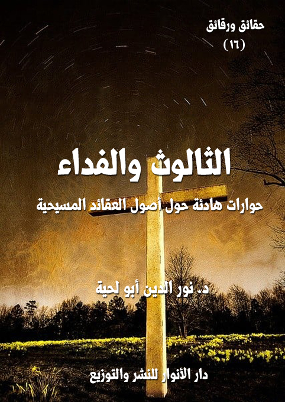

الكتاب: الثالوث.. والفداء
المؤلف: أ.د. نور الدين أبو لحية
الناشر: دار الأنوار للنشر والتوزيع
الطبعة: الأولى، 1438 هـ
عدد الصفحات: 180
ISBN: 978-620-2-34594-1
لمطالعة الكتاب من تطبيق مؤلفاتي المجاني وهو أحسن وأيسر: هنا

التعريف بالكتاب
يتناول هذا الكتاب بالبحث والمناقشة والحوار أصلين كبيرين تتأسس عليهما جميع المعتقدات المسيحية:
أولهما: العقيدة في طبيعة المسيح وكونه إلها أو أقنوما من إله، وقولهم بالتثليث (الأب والابن والروح القدس)، وأنهم واحد في الجوهر متساوون في القدرة والمجد، وأن بين الأقانيم تمييزاً بين الوظائف والعمل.
ثانيهما: عقيدة الصلب والفداء، وهي العقيدة التي تنص على أن المسيح صلب ليكفر الخطيئة التي ارتكبها آدم تحت تأثير زوجته حينما أكلا من الشجرة المحرمة، وانتقلت الخطيئة بطريق الوراثة إلى جميع نسله، وكانت ستظل عالقة بهم إلى يوم القيامة، لولا أن افتداهم المسيح بدمه كفارة عن خطاياهم.
وهو يناقش هاتين العقيدتين بهدوء مستخدما العقل والنقل، أو الفطرة والكتاب المقدس، ففي كليهما نجد ما يفند هاتين العقيدتين، ويعطي البدائل الصحيحة عنهما.
الثالوث.. والفداء (5)
يتناول هذا الكتاب بالبحث والمناقشة والحوار أصلين كبيرين تتأسس عليهما جميع المعتقدات المسيحية:
أولهما: العقيدة في طبيعة المسيح وكونه إلها أو أقنوما من إله، وقولهم بالتثليث (الأب والابن والروح القدس)، وأنهم واحد في الجوهر متساوون في القدرة والمجد، وأن بين الأقانيم تمييزاً بين الوظائف والعمل.
ثانيهما: عقيدة الصلب والفداء، وهي العقيدة التي تنص على أن المسيح صلب ليكفر الخطيئة التي ارتكبها آدم تحت تأثير زوجته حينما أكلا من الشجرة المحرمة، وانتقلت الخطيئة بطريق الوراثة إلى جميع نسله، وكانت ستظل عالقة بهم إلى يوم القيامة، لولا أن افتداهم المسيح بدمه كفارة عن خطاياهم.
وهو يناقش هاتين العقيدتين بهدوء مستخدما العقل والنقل، أو الفطرة والكتاب المقدس، ففي كليهما نجد ما يفند هاتين العقيدتين، ويعطي البدائل الصحيحة عنهما.
وهو يخاطب صنفين من الناس:
أولهما: أولئك الصادقين المخلصين من المسيحيين الذين امتلأوا حبا وتعظيما للمسيح إلى الدرجة التي أخرجوه بها عن حقيقته ووظيفته التي كلفه الله بها، ونحن نخاطب في هذا الكتاب عقولهم وعواطفهم معتمدين مصادرهم المقدسة التي يؤمنون بها كما نؤمن نحن أيضا بكثير مما ورد فيها.
ونقول لهم في هذا الكتاب، وعبر الحوارات الواردة فيه أننا مثلكم نحب المسيح ونعظمه ونعتقد فيه الولاية والقديسية والنبوة والرسالة والربانية، وكلها حقائق عظيمة تملأ القلب له محبة ومهابة وتعظيما لا يقل عن تلك المحبة والمهابة والتعظيم التي توجهونها إليه..
الثالوث.. والفداء (6)
بل إننا لا نختلف عنهم في اعتقاد الولاية التكوينية للمسيح، وأن الله يجري على يديه من التكوينات ما شاء، وأننا يمكن أن نتواصل معه كما كان يتواصل معه الحواريون، ويمكننا أن نتوسل به إلى الله، ونستغيث به كما كان يفعل المرضى والمقعدون، وأنه يمكنه ـ كما كان يبرئ الأكمه والأبرص، ويرد للمشلول قوته وعافيته ـ أن يفعل ذلك الآن أيضا، لكنه لا يفعله إلا بإذن الله {مَنْ ذَا الَّذِي يَشْفَعُ عِنْدَهُ إِلَّا بِإِذْنِهِ} [البقرة: 255]
ونقول لهم بأنه لا يهمنا أن تطلقوا عليه اسم [يسوع] أو [المسيح] أو [المخلص]، فكل هذه أسماء وألقاب صحيحة لا حرج فيها، ونحن نسلم لكم بها، بل نسميه كما تسمونه أيضا.. ولكنا لا نسميه [ابن الله] إلا إذا أردتم بذلك ما أراده الكتاب المقدس نفسه من الولاية والنبوة والربانية والمكانة الرفيعة.
وبذلك لن تتضرروا بتخلصكم من تلك العقائد التي يعافها العقل، ويرفضها الذوق، ويخالفها الكون جميعا، لأن علاقتكم بالمسيح لن تتضرر، بل لعلها تزداد صدقا وحقانية..
الثاني: هم أولئك المسلمين البسطاء الذين تألموا لكل ما يرونه في بلاد المسلمين من جرائم باسم الدين، فراحوا يبحثون عن أي عقيدة تخلصهم من الشتات النفسي الذي أصابهم، فوجدوا من المبشرين من يدعوهم إلى [يسوع المحبة]، فراحوا يتصورون أن هذه العقيدة هي العقيدة الصحيحة، لا العقيدة في الإله المتجبر الذي رسمه لهم الدعاة المحرفون للإسلام.
ونحن ندعوهم من خلال هذا الكتاب إلى مراجعة أنفسهم، لتنسجم عقولهم مع قلوبهم، وليوقنوا أن وجود المحرف في الإسلام لا يلغي وجود الأصالة، وأن وجود الكذابين والمزورين لا يلغي وجود الصادقين والمحققين.
وننبه القراء الكرام إلى أننا لم نأت في هذا الكتاب بجديد، فكل الطروحات الموجودة فيه موجودة في تراث السلف والخلف ممن اهتموا بالحوار الإسلام المسيحي، ولذلك لم نهتم كثيرا بالتوثيق للمصادر والمراجع المعتمدة.. لكن الميزة التي قد تميزه عن غيره هي لغة الحوار، فقد
الثالوث.. والفداء (7)
حاولت تبسيطها ليفهمها العام والخاص، لأن الكثير ممن بدلوا دينهم، وتحولوا إلى المسيحية لم يتحولوا إلا بسبب كونهم عوام بسطاء لا حظ لهم من العلم أو الثقافة، فلذلك تأثروا بالخطاب العاطفي أكثر من تأثرهم بالحجاج العقلي.
والميزة الثانية هي الأدب في الحوار مع الآخر، فقد رأيت الكثير من الكتب والمنتديات تتناول هذه المسائل بطريقة ساخرة، مملوءة بالسباب والشتائم، وهو مخالف لديننا، فنحن لم نؤمر أن نقول للناس سوءا، بل أمرنا أن نقول لهم حسنا، {وَقُولُوا لِلنَّاسِ حُسْنًا} [البقرة: 83]، وأمرنا أن نجادلهم بالتي هي أحسن، {وَجَادِلْهُمْ بِالَّتِي هِيَ أَحْسَنُ} [النحل: 125]
والكتاب يتشكل من قصتين منفصلتين كل واحدة منهما تعالج أصلا من الأصول، مستخدمة أساليب الحوار والجدال والمناقشة، وهي الأساليب التي حبذنا استعمالها في هذه السلسلة لتتيح لنا فرصة أكبر لمخاطبة العقول والقلوب.
الثالوث.. والفداء (8)
اسمحوا لي أن أعرفكم بنفسي قبل أن أقص عليكم قصة انتقالي من التثليث إلى التوحيد.. ومن المسيحية المحرفة إلى المسيحية المصححة.. ومن الرؤية المشتتة للوجود والكون إلى الرؤية الواضحة العقلانية الفطرية.
أنا رجل من رجال الكنيسة المقربين جدا من البابا، وكان يكلفني بكل المهمات السرية الخطيرة التي لا يريد أن يسمع بها غيري وغيره.. ولذلك فإن هذا الحديث الذي سأذكره لكم لا يعرفه غيري، لأني بعدما حصل لي ما حصل لم أعد إلى الكنيسة، ولا إلى البابا، بل انزويت في مكان بعيد، واخترت لي اسما جديدا، ورحت أصحح علاقتي مع الله، وأبدأ حياتي الجديدة معه.
لذلك لن أذكر لكم اسمي القديم، حتى لا أسيء للكنيسة التي وثقت بي، ولا إلى البابا الذي ائتمنني على السر الذي لم يرغب أن يعرف به سواي.. ولن أذكر لكم كذلك اسمي الجديد، لأني لا أحب أن أنشغل في هذه الأيام الباقية من عمري في استقبال الزوار والحديث إليهم.
قصتي تبدأ من رسالة وردتني من الحبر الأعظم تأمرني بأن أذهب إلى كنيسة من كنائسنا الكبرى في غانا، حيث وردنا خبر بأن القسيس الأكبر الذي كان معتمدا لدينا فيها تحول إلى إلى الإسلام، وأنه لم يكتف بذلك، بل راح يبشر بصفات الإله الذي يؤمن به في الكنيسة التي تمرد عليها.
وقد وردتنا الأخبار بأن كثيرا من رعيتنا هناك اتبعوه، وراحوا مثله يبشرون بالإله الواحد، بدل إلهنا ذي الأقانيم الثلاث.
هرعت لأمر الحبر الأعظم، وفي روحي أشواق لست أدري سببها..
ولكني مع ذلك كنت تام الثقة في ديني وفي معتقداتي، فمع كونها لم تكن ترضي المنهج العقلي الذي أتبناه إلا أني كونت موقنا، أو تشكلت لدي قناعة عقلية كبرى من أن مثل هذه القضايا لا تعرف بالعقل المجرد.. فلذلك كنت تام الثقة في أن معتقدات المسلمين لن ترضي عقلي الذي يريد أن يعرف الحقيقة المجردة.
الثالوث.. والفداء (9)
وصلت إلى غانا.. فانتقلت بسرعة إلى كنيستها.. لقد كان الأمر خطيرا، فلذلك ما إن وصلت حتى أرسلت في طلب هذا القسيس الذي ارتد عن دينه.
دخلت مكتبا مخصصا لمثل هذه الجلسات، وطلبت من الجميع تركي لوحدي مع هذا القسيس.. لست أدري لم أصررت على هذا الطلب؟
لقد كنت مشتاقا لسماعه.. ومشتاقا أكثر لأن تكون لي الجرأة التي يملكها.. فلذلك أغلقت الأبواب وتوثقت منها بعد دخوله لتكون لي فرصة طويلة في الحوار معه من غير رقابة ولا شغب.
عندما رأيته أدهشني منظره.. لقد كان يرتدي ثيابا رثة، وكانت حالته مؤثرة جدا.. حاولت التلطف معه، فقلت: ما بك يا يوحنا..
وقد كان هذا الاسم هو الاسم الذي أحبه ورضي به، وطلب أن نلقبه به منذ اعتنق النصرانية قبل عشرات السنوات.
قال: أنت كما تراني بفضل الله وحمده.
كان صوته عذبا تنبعث منه روائح الإيمان والعزة.. لقد ذكرني بالسحرة الذين لم تشغلهم عزة فرعون عن عزة الله.
قلت: ولكني أرى حالتك مزرية.. أين النعيم الذي كنت ترفل فيه؟
قال: لقد بعته لله.. وبعت كل ما أعطيتموني لله.. لقد جردني من آواني من كل ما أعطاني، وظن أني بذلك سوف أترك ما اقتنعت به من ديني.. وهذا لن يكون، فالدين أعظم من أن يباع بمتاع رخيص من الدنيا.
لقد كان تحت يدي ـ حضرة الحبر ـ أربع سيارات مخصصة لخدمتي، وكان لدي قصر كبير لم أكن أحلم بمثله يوم أخذتموني فقيرا معدما، ولقنتموني دين المسيح مع قطع الخبز التي كنتم تطعمونها لي.
قلت: ولكن كيف تتنكر للأيادي التي مدت لك؟
قال: أنا لا أتنكر لهذه الأيادي.. ولكن من الخطأ أن نكره الناس على الدخول للدين بالخبز..
الثالوث.. والفداء (10)
ألستم ترمون محمدا صلى الله عليه وآله وسلم بأنه نشر الإسلام بالسيف؟.. فلا تنشروا المسيحية بالخبز.. اعطوا الخبز للجائع.. أما الدين فاتركوه وما يمليه عليه عقله وقلبه وروحه.
قلت: لا بأس.. لن نتحدث عن هذا الآن.. سمعت أنك تبشر بالإله الواحد.. وتخبر أنه الإله الذي جاء المسيح وجميع الأنبياء بالدعوة إليه.
قال: نعم.. وقد كان محمد صلى الله عليه وآله وسلم هو المصحح لكل تلك الأوهام التي لحقت المسيح، وأساءت إلى الله.
قلت: فأنت تتصور أن كتبنا تحوي صفات الإله الذي جاء به محمد.. لا الأقانيم التي نؤمن بها.
قال: أجل.. وأستطيع أن أبين لك ذلك إن كنت صادقا.. وأنا واثق تماما من أنك إذا عرفت الحقيقة سوف تسلم لي.
قلت: وإذا عرفت الحقيقة أنت.
قال: لا مناص لي من التسليم إليك.. فالحق أحق أن يتبع.
جلست مجلس التلميذ بين يديه.. ولكني مع ذلك لم أتخل عن عنفوان السلطة التي كنت أملكها أو كان يملكها منصبي.. فلذلك جلست أنصت إلى حديثه، ولا أقاطعه.. لقد كنت أتمتع بحديثه، ولو أني لم أملك الجرأة لأن أظهر له تلك المتعة.. لقد كنت أبدو قاسيا أمامه، ولكن قلبي كان يود لو يحتضنه ليمتص بعض رحيق الأشعة المحمدية التي امتصها قلبه.
قال: ألستم تلخصون أصول أصول العقيدة في المسيح في الأمانة الكبيرة؟
قلت: أجل.
قال: ألا تقولون فيها: (نؤمن بالله الواحد الأب ضابط الكل مالك كل شئ مانع مايرى وما لايرى، وبالرب الواحد يسوع ابن الله الواحد بكر الخلائق كلها الذي ولد من أبيه قبل العوالم كلها، وليس بمصنوع إله حق من إله حق من جوهر أبيه الذي بيده أتقنت وصار إنسانا وحبل به وولد من مريم البتول وصلب أيام (بيلاطس الملك) ودفن وقام في اليوم الثالث كما هو مكتوب وصعد إلى
الثالوث.. والفداء (11)
السماء وجلس عن يمين أبيه مستعد للمجئ تارة أخرى للقضاء بين الأحياء والأموات. ونؤمن بروح القدس المحيي المنبثق من أبيه الذي بموقع الأب والابن يسجد له ويمجد الناطق بالأنبياء وبكنيسة واحدة مقدسة رسولية وبمعبودية واحدة لمغفرة الخطايا وتترجى قيامة الموتى والحياة والدهر العتيد آمين)
قلت: بلى.. نحن نردد هذا الكلام.. وهو يحوي خلاصة معتصرة لعقيدتنا.
قال: من أين أتيتم بهذا الكلام؟
قلت: من كتبنا المقدسة.
قال: لا.. لقد قرر هذه العقيدة 318 أسقفا اجتمعوا بمدينة يذقية في عهد قسطنطين عام 325 م وفي عام 381 م زادوا فيها مايلي: (والأب والابن وروح القدس هي ثلاثة أقانيم، وثلاثة وجوه، وثلاثة خواص، توحيد في تثليث في توحيد كيان واحد بثلاثة أقانيم، إله واحد جوهر واحد طبيعة واحدة)
قلت: هذا صحيح.. ولكن هذه المجامع.. وهذا العدد الكبير من الأساقفة لم يقولوا هذا الكلام من فراغ.. لقد وجدوا نصوصا كثيرة في الكتاب المقدس تؤيدهم (1).
قال: أنت تعلم أن هذه العقيدة لم تلق القبول المطلق من جميع المسيحيين.. إن هناك الآلاف.. بل عشرات الآلاف من الذين يقرؤون الكتاب المقدس، ويفهمونه، ويؤمنون به، ومع ذلك لا يثقون في هذا الإيمان الذي تتبنونه وتبشرون به.
لقد اعترف جُلُّ المؤرخين المسيحيين، أن الاعتقاد بإلهية المسيح لم يصبح عقيدة مستقرة وسائدة بين المسيحيين إلا بعد انقضاء عهد الحواريين وعهد التلاميذ الأوائل للمسيح، أي بعد انقضاء قرن على الأقل على رحيل المسيح.
__________
(1) استفدنا الكثير المعلومات المرتبطة بهذا الباب من كتاب (القول الصحيح فيما نسب لعيسى المسيح) من تأليف: مشعل بن عبد الله القاضي، ترجمة: وائل البني.. وغيره من المراجع.
الثالوث.. والفداء (12)
أما قبل ذلك.. أي في القرن الأول لبعثة المسيح، فقد كانت مذاهب الناس في المسيح لا تزال متشعبة:
فغالبية اليهود المعاصرين له أبغضوه وأنكروا رسالته من الأساس واعتبروه ساحرا ودجالا، وصرفوا جهودهم لمحاربة أتباعه والقضاء على دعوته، والإسلام أنكر على هؤلاء، والمسلمون ينكرون عليهم، ويغيرون للمسيح الذي لم يتركوا وسيلة إلا آذوه بها.
ومقابل ذلك آمن به عدد من اليهود ممن تجرد لله، فرأوا فيه المسيح المبشر به في الكتب المقدسة السابقة، وقد أشار القرآن الكريم إلى هؤلاء الذين وقفوا في وجه أولئك، فقال: {فَلَمَّا أَحَسَّ عِيسَى مِنْهُمُ الْكُفْرَ قَالَ مَنْ أَنْصَارِي إِلَى اللَّهِ قَالَ الْحَوَارِيُّونَ نَحْنُ أَنْصَارُ اللَّهِ آمَنَّا بِاللَّهِ وَاشْهَدْ بِأَنَّا مُسْلِمُونَ} (آل عمران:52)، وقال: {يَا أَيُّهَا الَّذِينَ آمَنُوا كُونُوا أَنْصَارَ اللَّهِ كَمَا قَالَ عِيسَى ابْنُ مَرْيَمَ لِلْحَوَارِيِّينَ مَنْ أَنْصَارِي إِلَى اللَّهِ قَالَ الْحَوَارِيُّونَ نَحْنُ أَنْصَارُ اللَّهِ فَآمَنَتْ طَائِفَةٌ مِنْ بَنِي إِسْرائيلَ وَكَفَرَتْ طَائِفَةٌ فَأَيَّدْنَا الَّذِينَ آمَنُوا عَلَى عَدُوِّهِمْ فَأَصْبَحُوا ظَاهِرِينَ} (الصف:14)
وهؤلاء الحواريون الصادقون لم يصلنا من كتبهم إلا القليل.. ومع ذلك، فما وصلنا يدل على أنهم كانوا يرون في المسيح نبيا بشرا، ورجلا أيده الله بالمعجزات الباهرات ليرد الناس إلى صراط الله الذي ضلوا عنه، وليعلن بشارة الله تعالى بالرحمة والغفران والرضوان للمؤمنين التائبين..
وبين هؤلاء وأولئك ظهرت فئة من المغالين، كانوا أخطر على المسيح ودين المسيح والأشعة التي أنارت بالمسيح من اليهود أنفسهم.. فهؤلاء لم ينسجوا له تاجا من الشوك، بل نسجوا له تاجا من الألوهية، وقد أنكر القرآن الكريم على هؤلاء إنكارا شديدا منزها الله تعالى عن الأفكار التي كانوا يحملونها، قال تعالى: {وَإِذْ قَالَ اللَّهُ يَا عِيسَى ابْنَ مَرْيَمَ أَأَنْتَ قُلْتَ لِلنَّاسِ اتَّخِذُونِي وَأُمِّيَ إِلَهَيْنِ مِنْ دُونِ اللَّهِ قَالَ سُبْحَانَكَ مَا يَكُونُ لِي أَنْ أَقُولَ مَا لَيْسَ لِي بِحَقٍّ إِنْ كُنْتُ قُلْتُهُ فَقَدْ عَلِمْتَهُ تَعْلَمُ مَا فِي نَفْسِي وَلا أَعْلَمُ مَا فِي نَفْسِكَ إِنَّكَ أَنْتَ عَلَّامُ الْغُيُوبِ مَا قُلْتُ لَهُمْ إِلَّا مَا أَمَرْتَنِي بِهِ أَنِ اعْبُدُوا اللَّهَ رَبِّي وَرَبَّكُمْ وَكُنْتُ عَلَيْهِمْ شَهِيداً مَا دُمْتُ فِيهِمْ فَلَمَّا تَوَفَّيْتَنِي كُنْتَ أَنْتَ الرَّقِيبَ عَلَيْهِمْ وَأَنْتَ عَلَى كُلِّ شَيْءٍ شَهِيدٌ}
الثالوث.. والفداء (13)
(المائدة:116 ـ 117)
قلت: ولكن إجماع المسيحيين استقر على هذه العقيدة التي يؤمنون بها.. ألستم تعتبرون الإجماع من مصادر الشريعة المعتبرة؟
قال: الإجماع الذي لا يناقض النصوص.. لا الإجماع الذي يخالفها، بل يحاربها.. ثم من قال لك بأن المسيحيين اجتمعوا في يوم من الأيام.
إن التاريخ والوثائق المعتبرة تثبت أنه لا تزال توجد في كل عصر من عصور تاريخ المسيحية أعداد غير قليلة من علماء النصارى وعامتهم ممن أنكر تأليه المسيح ورفض عقيدة التجسد والتثليث مؤكدا تفرد الله وحده بالألوهية والربوبية والأزلية، وأن المسيح مهما علا شأنه يبقى حادثا مخلوقا.
وهؤلاء ليسوا أفرادا محدودين، بل قد حظي أولئك الأساقفة والبطارقة الموحدون بآلاف، بل عشرات آلاف الأتباع والمقلدين، ولو أذنت لي لذكرتك بالكثير ممن تعرفهم أنت، وثلة ممن معك (1).. ولكن الكثير من المسيحيين يجهلونهم، لأنكم تمارسون من أساليب التعتيم ما تغطون به التاريخ والجغرافية وكل ما لا تريدون ظهوره.
ألم تظهر عدة فرق في القرون المسيحية الثلاثة الأولى كانت تنكر التثليث والتجسد وتأليه المسيح.. أليس من هذه الفرق فرقة الأبيونيين، وفرقة الكارينثيانيين، وفرقة الباسيليديين وفرقة الكاربوقراطيين، وفرقة الهيبسيستاريين، وفرقة الغنوصيين؟
قلت: هذه فرق هرطقة.. وهي محرومة من بركات الكنيسة مطرودة من طريق الرب.
قال: أنتم الذين حرمتموها.. أنتم الذين تجلسون على عرش المحكمة الإلهية لتدينوا من تشاءون إدانته، وتقربوا من تشاءون تقريبه.
__________
(1) انظر: (عيسى يبشِّر بالإسلام) للبروفيسور الهندي الدكتور محمد عطاء الرحيم، فقد ذكر فيه مؤلفه الفرق النصرانية الموحدة القديمة، وتحدث في فصل كامل عن أعلام الموحدين في النصرانية، استوعب فيها أسماءهم وتراجمهم وكتاباتهم ودلائلهم على التوحيد وأحوالهم وما لاقوه من اضطهاد ومحاربة في سبيل عقيدتهم.
الثالوث.. والفداء (14)
أنتم الذين أدنتم بولس الشمشاطي، الذي كان بطريركا في أنطاكية، ووافقه على مذهبه التوحيدي الخالص الكثيرون ممن عرفوا بالفرقة البوليقانية.
وأنتم الذين أدنتم آريوس أسقف كنيسة بوكاليس في الإسكندرية (250 ـ 336 م.)، والذي صار له ألوف الأتباع ممن عرفوا بالآريوسيين.. وقد بقي مذهبهم التوحيدي حيا لفترات زمنية طويلة.. بل صار آريوس علما للتوحيد، حتى أن كل من جاء بعده إلى يومنا هذا ممن ينكر التثليث وإلهية المسيح، تصمونه أنتم رجال الكنيسة الرسميون بأنه آريوسي.
وأنتم الذين أدنتم يوزيبيوس النيقوميدي أسقف بيروت، الذي نقل لنيقوميديا عاصمة الإمبراطورية الشرقية، وكان من أتباع لوسيان الأنطاكي وقد كان من أصدقاء آريوس.
قلت: أنت تتحدث عن تواريخ بائدة لا ندري صحة ما نقل منها، فكيف تريد أن تخرق بها الإجماع المسيحي؟
قلت: لقد ذكرت لك أنه لم يخل يوم من أيام المسيحية من الموحدين..
ألا تعرف الطبيب الأسباني ميخائيل سيرفيتوس (1151 ـ 1553) الذي تأثر بحركة الإصلاح البروتستانتية، ولم يكتف بذلك، بل خطا في الإصلاح خطوات جذرية وجريئة، فأعلن بطلان عقيدة التثليث ورفض ألوهية المسيح، بل كان يسمي الثالوث بـ (الوحش الشيطاني ذي الرؤوس الثلاثة).. ولم يكتف بذلك، بل قام بحركة نشطة في الدعوة إلى التوحيد الخالص.
أما أنتم فقد اتهمتموه كعادتكم بالهرطقة، بل واعتقلتموه، ثم أعدمتموه حرقا.. لكنكم لم تستطيعوا إعدام أفكاره وكتاباته التي انتشرت في وسط وشرق أوربا، وصار لها عشرات الألوف من الأتباع والمؤيدين.
ألا تعرف القسيس الروماني فرانسيس ديفيد (1510 ـ 1579) الذي صار أسقفا كاثوليكيا، ثم اعتنق البروتستانتية، ثم وصل في النهاية للتوحيد الخالص، فأبطل التثليث، ونفى ألوهية المسيح.. وقد كان لأفكاره تأثيرها الاجتماعي، فتأسست على أساسها فرقة من الموحدين في بولونيا والمجر
الثالوث.. والفداء (15)
(هنغاريا) وأثرت أفكاره حتى في ملك هنغاريا الذي أصدر بيانا أمر فيه بإعطاء الموحدين حرية العقيدة؟
ألا تعرف اللاهوتي الإيطالي فاوستو باولو سوزيني (1539 ـ 1604) الذي اشتهر باسم سوسيانوس.. لقد نشر كتابا إصلاحيا ينقد عقائد الكنيسة الأساسية من تثليث وتجسد وكفارة وغيرها، ثم توصل للتوحيد الخالص، وأخذ يؤكد عليه في كتاباته ورسائله؟
ولم يبق الأمر محصورا في شخصه وكتاباته، بل إن تعاليمه انتشرت في كل مكان، وعرف مذهبه اللاهوتي باسم (السوسيانية).. أما أنتم فتسمون أتباعه (الآريانيين الجدد)، أي أتباع مذهب آريوس القديم، وكأنكم بذلك تحيون مذهب آريوس من حيث لا تشعرون.
أما موقفكم منه، فأنت تعرفه، لقد عرضتم أتباع السوسيانية لاضطهاد وحشي منظم منذ عام 1638، بل أحرقتم الكثير منهم أحياء.. أو على الأقل حرمتموهم حقوقهم المدنية، وحرقتم كتبهم.
سكت قليلا، ثم قال: ألا تعرف القسيس البريطاني ثيوفيلوس ليندسي (1723 ـ 1808) الذي كان منظم أول جماعة مصلين موحدة في إنجلترا، وكان يؤكد أنه ليست الكنائس فقط مكان عبادة الله، بل للإنسان أن يختار أي مكان لأداء الأدعية والصلوات لله وحده فقط؟
ألا تعرف القسيس والعالم البريطاني جوزيف بريستلي (1733 ـ 1804) الذي أثار كتابه (تاريخ ما لحق بالنصرانية من تحريفات) ثائرة أتباع كنيستكم الرسمية، فأمرتم بإحراقه فيما بعد؟
هذا غيض من فيض من الرجال والجماعات التي خرقت ما تزعمه من إجماع مسيحي.. أم أن كل هؤلاء لا محل لهم عندكم؟
صمت لأترك له فرصة أخرى للحديث.. فقد كانت أحاديث المرتدين التي ينفر منها من أعرفهم من رجال الدين المسيحي تملؤني بقوة عجيبة.
واصل الرجل حديثه قائلا: ارجع إلى دوائر المعارف البريطانية والأمريكية الشهيرة حول المسيح وتاريخ تطور العقيدة النصرانية والأناجيل، وستجد أن الغالبية العظمى من هؤلاء المفكرين والكتَّاب
الثالوث.. والفداء (16)
العصريين لا ترتاب في كون غالب العقائد المعقَّدة للكنيسة النصرانية، لا سيما التثليث والتجسد والكفارة والأقانيم.. ما هي إلا تعبيرات فلسفية بعيدة عن رسالة المسيح التي لم تكن إلا رسالة توحيدية أخلاقية بسيطة.
ولم يبق إلا القليل جدا من المفكرين ودكاترة اللاهوت وأساتذة علم الأديان الغربيين ممن لا يزال يرى أن عقائد الكنيسة الرسمية تمثل بالضبط نفس تعاليم المسيح وتعكس حقيقة رسالته.
وليس الأمر قاصرا على هؤلاء الباحثين.. بل إن هناك فرقا نصرانية جديدة انشقت عن الكنيسة، خاصة في الولايات المتحدة الأمريكية، وهي تتفق على إنكار إلهية المسيح وإنكار التثليث ورفض فكرة: الله ـ الإنسان، وتنظر لبنوَّة المسيح لله على معنى مجازي لا حرفي، ولا أظنك تجهلها.. ولا أظنك تجهل ما تمارسون ضدها من حروب..
وأنا مع أني أختلف كثيرا مع هذه الفرق إلا أني أفند بها الإجماع الذي تزعمه..
إن لهؤلاء ـ حضرة الحبر ـ من العقل ما لكم، ولهم من الكتب المقدسة نفس ما تؤمنون به.. فكيف لم يفهموا منها ما فهمتموه من العقائد؟
قلت: وهل تظن أن كل أولئك الفحول من رجال الدين الذين اجتمعوا في نيقية أقل عقلا من هؤلاء؟
قال: أنا لا أتهمهم في عقولهم.. بل لولا عقولهم ما استطاعوا أن يحوروا المسيحية إلى السبيل الذي أرادوه.
سأنقل لك هنا بعض ما نقله سعيد بن البطريق، وهو يتحدث عما حدث في المجمع الثالث حيث اجتمع الوزراء والقواد الى الملك وقالوا: ان ما قاله الناس قد فسد، وغلب عليهم (آريوس) و(اقدانيس) فكتب الملك الى جميع الاساقفة والبطارقة، فاجتمعوا في القسطنطينية، فوجدوا كتبهم تنص على أن الروح القدس مخلوق، وليس بإله، فقال بطريق الاسكندرية: ليس روح القدس عندنا غير روح الله، وليس روح الله غير حياته، فإذا قلنا إن روح الله مخلوقة، فقد قلنا إن حياته مخلوقة، واذا
الثالوث.. والفداء (17)
قلنا حياته مخلوقة، فقد جعلناه غير حي وذلك كفر.
واستحسن الجميع هذا الرأي مع هزالته وبساطته وراحوا يلعنون آريوس ومن قال بقولته هذه، وأثبتوا أن: (روح القدس إله حق من إله حق ثلاثة اقانيم بثلاثة خواص)
لست أدري كيف خطر على بالي نصوص من القرآن الكريم تتحدث عن روح القدس ونسبته لله، فقلت: ولكن القرآن كتاب المسلمين المقدس الذي تؤمن به ينسب الروح إلى الله؟
قال: أجل.. لقد قال تعالى: {فَاتَّخَذَتْ مِنْ دُونِهِمْ حِجَاباً فَأَرْسَلْنَا إِلَيْهَا رُوحَنَا فَتَمَثَّلَ لَهَا بَشَراً سَوِيّاً} (مريم:17)، وقال: {وَمَرْيَمَ ابْنَتَ عِمْرَانَ الَّتِي أَحْصَنَتْ فَرْجَهَا فَنَفَخْنَا فِيهِ مِنْ رُوحِنَا وَصَدَّقَتْ بِكَلِمَاتِ رَبِّهَا وَكُتُبِهِ وَكَانَتْ مِنَ الْقَانِتِينَ} (التحريم:12)
وقال يبين العقيدة الحقة في المسيح، وينقد العقائد المنحرفة: {يَا أَهْلَ الْكِتَابِ لا تَغْلُوا فِي دِينِكُمْ وَلا تَقُولُوا عَلَى اللَّهِ إِلَّا الْحَقَّ إِنَّمَا الْمَسِيحُ عِيسَى ابْنُ مَرْيَمَ رَسُولُ اللَّهِ وَكَلِمَتُهُ أَلْقَاهَا إِلَى مَرْيَمَ وَرُوحٌ مِنْهُ فَآمِنُوا بِاللَّهِ وَرُسُلِهِ وَلا تَقُولُوا ثَلاثَةٌ انْتَهُوا خَيْراً لَكُمْ إِنَّمَا اللَّهُ إِلَهٌ وَاحِدٌ سُبْحَانَهُ أَنْ يَكُونَ لَهُ وَلَدٌ لَهُ مَا فِي السَّمَاوَاتِ وَمَا فِي الْأَرْضِ وَكَفَى بِاللَّهِ وَكِيلاً} (النساء:171)
وبمثل ذلك ورد قوله صلى الله عليه وآله وسلم: (من شهد أن لا إله الا الله وأن محمدا رسول الله، وأن عيسى عبد الله ورسوله وابن امته وكلمته ألقاها إلى مريم وروح منه، وأن الجنة حق والنار حق، وأن البعث حق أدخله الله الجنة على ما كان من عمل من أي أبواب الجنة الثمانية شاء) (1)
قلت: فقد نسب المسيح إلى كلمة الله وروحه.. ونحن لا نقول إلا هذا.
قال: لا.. أنتم لا تقولون هذا.. أنت تقولون بألوهية المسيح أو كونه أحد أقانيم الألوهية.. أما هذه النصوص فتضيف كلمة روح القدس، وروح منه إلى الله ليس لاتحادها به، وانما نسبة تشريف.. فهي إضافة تشريف، وليست إضافة تبعيض، ألم تقرأ قوله تعالى: {وَإِلَى ثَمُودَ أَخَاهُمْ صَالِحاً قَالَ يَا قَوْمِ اعْبُدُوا اللَّهَ مَا لَكُمْ مِنْ إِلَهٍ غَيْرُهُ قَدْ جَاءَتْكُمْ بَيِّنَةٌ مِنْ رَبِّكُمْ هَذِهِ نَاقَةُ اللَّهِ لَكُمْ آيَةً فَذَرُوهَا تَأْكُلْ فِي
__________
(1) رواه البخاري ومسلم.
الثالوث.. والفداء (18)
أَرْضِ اللَّهِ وَلا تَمَسُّوهَا بِسُوءٍ فَيَأْخُذَكُمْ عَذَابٌ أَلِيمٌ} (لأعراف:73)، وقوله: {فَقَالَ لَهُمْ رَسُولُ اللَّهِ نَاقَةَ اللَّهِ وَسُقْيَاهَا} (الشمس:13)
أم أنك ترى أن هذه الناقة أقنوم جديد يمكن إضافته إلى أقانيم الألوهية؟
قلت: لا بأس.. لن أجادلك في هذا.. ولا يعنيني ما يقول كتابكم.. عد بنا إلى ما كنا فيه.. لقد ذكرت لي أن أولئك الذين اجتمعوا في المجامع ليقرروا العقيدة التي نؤمن بها كانوا مخطئين.. فمن أين استنبطوا تلك العقيدة إذن، ومن أين افتروها إن لم يكونوا قد فهموها من الكتب المقدسة التي ورثوها؟
قال: لقد مكثت أدرس سر هذا فترة طويلة بموضوعية وحياد، وقد كانت هذه الدراسة سر اهتدائي للإسلام، أو سر معرفتي لحقيقة المسيحية التي لا تختلف عن الإسلام.. أو سر معرفتي للتشويه الذي تعرضت له المسيحية.
قلت: فإلام اهتديت؟
قال: إلى أربعة أمور.. ما أصابت دينا من الأديان إلا وحادت به عن سواء السبيل.
قلت: فما هي؟
قال: أولها انحراف أهل الدين عن السنن التي جاءهم بها أنبياؤهم إلى بدع محدثات نقلوها من الأمم المختلفة، أو تسربت إليهم من الأمم المختلفة، أو أرادوا بها أن يرضوا أهل الملل المختلفة.
قلت: والثاني؟
قال: تحريف الأتباع لأديانهم إرضاء لأهوائهم.
قلت: والثالث؟
قال: تسلط الحكام وتدخلهم في الدين.
قلت: والرابع؟
قال: اتباع الأتباع للمتشابهات، وهجرهم للمحكمات، فنسخوا المحكم بالمتشابه، وعطلوا
الثالوث.. والفداء (19)
المحكم واتبعوا المتشابه.
قلت: فحدثني عما عرفته من انطباق هذه الأربعة على ما ندين به من دين.. ولنبدأ بأولها.
قال: أولها هو اتباع سنن المنحرفين من أهل الديانات المختلفة تأثرا بهم.. لقد أشار القرآن الكريم إلى هذا المعنى، فقال: {وَجَاوَزْنَا بِبَنِي إِسْرائيلَ الْبَحْرَ فَأَتَوْا عَلَى قَوْمٍ يَعْكُفُونَ عَلَى أَصْنَامٍ لَهُمْ قَالُوا يَا مُوسَى اجْعَلْ لَنَا إِلَهاً كَمَا لَهُمْ آلِهَةٌ قَالَ إِنَّكُمْ قَوْمٌ تَجْهَلُونَ} (لأعراف:138)
قلت: لا يعنيني ما يقول قرآن المسلمين.. بل تعنيني الحقيقة الموضوعية المجردة.
قال: القرآن يذكر سنن الحقائق.. ولا يمكن أن تفهم الحقائق إلا في ظلال سننها.
قلت: حدثني عما فعل قومي مما ذكرته من اتباع الأديان الأخرى؟
قال: لقد بلغ من تأثر المسيحية بالديانات الأخرى في عقيدة التثليث أن تاريخ ولادة المسيح غُير مراراً إلى إن استقر يوم 25 ديسمبر، وهو اليوم الذي كان المصريون يحتفلون فيه بمولد مخلصهم (حورس)، وهو نفس اليوم الذي كان الفرس يحتفلون فيه بميلاد (متزا)، كما كان هذا اليوم أحد الأعياد الدينية المماثلة في الدولة الرومانية وتخالف الكنيسة الشرقية الكنيسة الغربية في ذلك فتجعل يوم ميلاد المسيح اليوم السابع من يناير.
وقد كان المصريون يعتقدون أن (حوريس) ولد من الإله الأعظم (أوزوريس) والعذراء (ايزس)، كما أن الرومان كانوا يعتقدون أن الإله (جوبيتر) أنجب (بريسيوس) من العذراء (داناي) وأنجب (ديونيسيس) من العذراء (سيميل) وأنجب (هرقل) من العذراء (ألكمين).. أما في الهند فقد ولد كيرشنا في كهف بينما كانت أمه العذراء وخطيبها هاربين من غضب الملك.
بالإضافة إلى هذا، فإن تأليه بعض المخلوقات من البشر وغيرهم قديم جداً.. ولا يزال يوجد بين البدائيين من عبدوا قوى الطبيعة ومنهم من عبد الشمس والقمر والكواكب الأخرى، وتاريخ الأديان غاص بهذا المظاهر:
ألم تسمع بالطوطم والتابو وعبادة الأجداد والأشجار وأثار الموتى؟
الثالوث.. والفداء (20)
ألم تسمع بآلهة اليونانيين الذين كانوا يختصمون، ويحقد بعضهم على بعض ويدبرون المكايد، وتشيع بينهم الأحقاد، ولم يكن لهم حظ من الألوهية إلا أنهم لا يموتون.
ألم تسمع بأسطورة إيزيس وأوزوريس وحوريس التي ولدت في مصر، وقد كانت معروفة ومشهورة.. ولعلها كانت بداية التثليث؟
ألم تسمع بتلك الأساطير التي كانت تجعل الناس يعتقدون أن دماء الآلهة سرت في شرايين الملوك فراحوا يؤلهونهم ويعبدوهم، وكان الملوك حريصين على نشر مثل هذه العقائد فهي السند الكبر لاستبدادهم؟
ألم تسمع بروميولس وريميوس، اللذين وجدا فى الصحراء، وحنت عليهما ذئبة فأرضعتهما، ومات ثانيهما وبقي روميولس، فلما نما وترعرع أسس مدينة روما، ومنه جاء ملوكها ـ كما يعتقدون ـ وقد أضفى ذلك عليها طابع القداسة، فهي مدينة مقدسة، وملوكها من سلالة الآلهة.. وقد ظل الناس يعبدون الملوك الرومانيين، فلما ظهرت المسيحية حاربوها حرصا على مجدهم حتى كان عصر الأمبراطور البيزنطى قسطنطين الذي وجد أن تيار المسيحية أصبح عنيفا وأقوى من أن يحارب، فاعلن المسيحية دينا رسميا لدولته، ولم يكن كثير من الناس مستعدين لقبولها، فأجبرهم عليها بالتعذيب والقتل، وأريقت دماء كثيرة في سبيل ذلك مما ولد النفاق الذي يحرف الأديان.
قلت: سمعت بكل هذا.. ولكن كيف تقارن تلك الديانات الوثنية بالمسيحية.. أترى المسيحية امتدادا للوثنية؟
قال: لا.. حاشا لله.. وقد كان قرآننا وديننا أكثر احتراما لكم.. بل إنه اعتبر إلهكم هو إلهنا، فقال تعالى: {وَلا تُجَادِلُوا أَهْلَ الْكِتَابِ إِلَّا بِالَّتِي هِيَ أَحْسَنُ إِلَّا الَّذِينَ ظَلَمُوا مِنْهُمْ وَقُولُوا آمَنَّا بِالَّذِي أُنْزِلَ إِلَيْنَا وَأُنْزِلَ إِلَيْكُمْ وَإِلَهُنَا وَإِلَهُكُمْ وَاحِدٌ وَنَحْنُ لَهُ مُسْلِمُونَ} (العنكبوت:46)
وهو لا يدعوكم إلا للتخلص من الشرك الذي دنستم به قداسة الإله، قال تعالى: {قُلْ يَا أَهْلَ الْكِتَابِ تَعَالَوْا إِلَى كَلِمَةٍ سَوَاءٍ بَيْنَنَا وَبَيْنَكُمْ أَلَّا نَعْبُدَ إِلَّا اللَّهَ وَلا نُشْرِكَ بِهِ شَيْئاً وَلا يَتَّخِذَ بَعْضُنَا بَعْضاً
الثالوث.. والفداء (21)
أَرْبَاباً مِنْ دُونِ اللَّهِ فَإِنْ تَوَلَّوْا فَقُولُوا اشْهَدُوا بِأَنَّا مُسْلِمُونَ} (آل عمران:64)
ولكني مع ذلك لا أنفي ولا أستطيع أن أنفي تأثركم بتلك الوثنيات، وسأبرهن لك ذلك بما شئت من البراهين.
أصخت بسمعي لأسمع ما يقول.. فقد كان لحديثه من العذوبة والقوة ما يأسر السامعين.
قال: سأقول لك شيئا لعلك تخالفني فيه.. لكن الأدلة كلها تقف معي..
أنت تعرف مدرسة الإسكندرية، وتعرف أنها المدرسة التي اضطلعت بدرس الفلسفة اليونانية ونشرها.. لقد ازدهر فيها الفكر اليوناني مدة طويلة، فلما ظهرت المسيحية وجدت في هذه المدرسة تراثا وثنيا لم تستطع أن تتخلص منه، بل سيطر هو على المسيحية.
صحت فيه: ما الذي تقوله؟
قال: اصبر علي.. أرى أنك تريد أن تعرف السبب الذي جعلني أومن بالإله الواحد بدل الأقانيم الثلاث.. فاصبر علي..
هدأت، فواصل حديثه، قائلا: لقد حارب أباطرة الرومان عبادة إيزيس وشق عليهم إماتتها حتى إننا نجد أحد عشر امبراطورا يقيمون على حربها، ومع ذلك لم تمت، وإنما ظهرت فى صورة أخرى واسم آخر.. لقد ظهرت فى عبادة ديمتر يونانية ورومانية، وامتزجت بعبادة (مثرا) وأتخذوا لها صورة الأم الحانية، فرسموها تحتضن وليدها في مظهر ينم عن الحنان والبر من الأم والبراءة والطهارة من الطفل.. وهذه الصورة بكل ما فيها هي الصورة التي ترسمونها للسيدة مريم العذراء وهي تحمل طفلها المسيح.
بدا على وجهي بعض السكون الذي نشره حديثه في نفسي، فشجعه ذلك، فراح يقول: لقد كان الناس ـ كما يذكر كارليل في كتاب (الأبطال وعبادة الأبطال) ـ يعظمون البطل، ويعظمون أمه وأباه، فجاءت عقيدة التثليث بهذا، وظل الناس يخلعون على الأبطال صفات الآلهة، إعجابا بهم وتعظيما لهم، ولهذا نهى القرآن الكريم عن الغلو في المسيح، لأن الغلو فيه هو سر تأليهه، فقال تعالى: {يَا أَهْلَ
الثالوث.. والفداء (22)
الْكِتَابِ لا تَغْلُوا فِي دِينِكُمْ وَلا تَقُولُوا عَلَى اللَّهِ إِلَّا الْحَقَّ إِنَّمَا الْمَسِيحُ عِيسَى ابْنُ مَرْيَمَ رَسُولُ اللَّهِ وَكَلِمَتُهُ أَلْقَاهَا إِلَى مَرْيَمَ وَرُوحٌ مِنْهُ} (النساء: من الآية 171)
ولهذا أخبر القرآن الكريم أن جميع الرسل ركزوا على صفة البشرية فيهم، قال تعالى: {قَالَتْ لَهُمْ رُسُلُهُمْ إِنْ نَحْنُ إِلَّا بَشَرٌ مِثْلُكُمْ وَلَكِنَّ اللَّهَ يَمُنُّ عَلَى مَنْ يَشَاءُ مِنْ عِبَادِهِ وَمَا كَانَ لَنَا أَنْ نَأْتِيَكُمْ بِسُلْطَانٍ إِلَّا بِإِذْنِ اللَّهِ وَعَلَى اللَّهِ فَلْيَتَوَكَّلِ الْمُؤْمِنُونَ} (ابراهيم:11)
وقال معلما محمدا صلى الله عليه وآله وسلم ماذا يقول لقومه: {قُلْ إِنَّمَا أَنَا بَشَرٌ مِثْلُكُمْ يُوحَى إِلَيَّ أَنَّمَا إِلَهُكُمْ إِلَهٌ وَاحِدٌ فَاسْتَقِيمُوا إِلَيْهِ وَاسْتَغْفِرُوهُ وَوَيْلٌ لِلْمُشْرِكِينَ} (فصلت:6)
ولهذا كان صلى الله عليه وآله وسلم ينهى أن يسلك معه ما سلك مع المسيح عليه السلام من الغلو المؤدي إلى التأليه، فقال: (لا تطروني كما أطرت النصارى ابن مريم، فانما أنا عبده فقولوا: عبد الله ورسوله) (1)
وقد كان صلى الله عليه وآله وسلم يتشرف بتلقيبه بعبد الله.. وقد ذكر له القرآن الكريم هذا اللقب في أشرف المواضع، قال تعالى: {الْحَمْدُ لِلَّهِ الَّذِي أَنْزَلَ عَلَى عَبْدِهِ الْكِتَابَ وَلَمْ يَجْعَلْ لَهُ عِوَجَا} (الكهف:1)، وقال: {تَبَارَكَ الَّذِي نَزَّلَ الْفُرْقَانَ عَلَى عَبْدِهِ لِيَكُونَ لِلْعَالَمِينَ نَذِيراً} (الفرقان:1)
كان يقرأ هذه الآيات بصوته الجميل، فأجد لها من العذوبة ما لا أستطيع وصفه.
قلت: أترى أن عبادة إيزيس هي التي انتقلت إلينا، أو هي التي تحولت إليها المسيحية؟
قال: أنا لا أقول ذلك.. ولكني أقول: إن المسيحية بمعتقداتها الشركية هذه لا تختلف عن تلك العبادة.. بل لا تختلف عن عبادات أخرى قد تكون أثرت فيها.. أو هي على الأقل تدل على نزعة بشرية معينة لعبادة البشر والأبطال من البشر.
قلت: لا بأس.. دعنا من هذا.. فليس لدي الوقت لأجادلك فيه.. وحدثني عن السبب الثاني.
قال: السبب الثاني هو تحريف الأتباع.. لقد درست المسيحية دراسة متأنية، فوجدتها قد عزلت كتابها المقدس، واتبعت بدعا كثيرة لا علاقة لها بالكتاب المقدس.
__________
(1) رواه البخاري.
الثالوث.. والفداء (23)
قلت: كيف تقول هذا.. والكتاب المقدس هو الكتاب الذي نأوي إليه، ونستنبط منه، ولا نصلي إلا بترتيله والتبتل به.
قال: ليس الشأن في ذلك إنما الشأن في الاتباع لا الابتداع.
قلت: وهل وقعت البدعة في ديننا؟.. لعلك تقصد الهرطقات التي ظهرت؟
قال: لا.. لقد نسخ دينكم نسخا كليا بالبدع.. أخبرني: أليست المسيحية هي دين المسيح؟
قلت: بلى.. وليس في ذلك شك.
قال: ما دامت المسيحية دين المسيح.. فما بال بولس؟.. ولم يأخذ النصيب الأوفر فيها؟
كان هذا السؤال صدمة كبيرة لي.. ولم يكن لي مناص من الاحتيال للإجابة عنه، فقلت: كلاهما واحد.. المسيح شمس، وبولس شعاع من أشعتها، ولابد لمن أراد أن يستنير بالشمس من التعرض لأشعتها.
قال: فإذا تناقضت الأشعة مع الشمس.
قلت: يستحيل ذلك.
قال: فقد حصل هذا بين المسيح وبولس.
قلت: أنت لم تفهم.. التناقض قد ينتج بسبب سوء الفهم.. فمع ما لبولس من الأهمية في تقرير عقائدنا وشرائعنا إلا أنه لم يدع شيئا لنفسه، بل كان أعظم المضحين لأجل المسيحية، وقد كان لتضحيته وجهوده تأثيرهما الكبير في نشر المسيحيية.. فلولا بولس لماتت المسيحية في مهدها.
ولهذا أجمعت جميع طوائف النصارى المنتشرة في جميع أنحاء العالم على أنه واحد من أهم الإنجيليين على الإطلاق.. لقد سافر إلى أماكن عدة يبشر بالنصرانية وينشرها بين غير اليهود حتى عرف بين اللاهوتيين باسم: (رسول الأمم) (1)
قال: أصحاب الدين الحق يحرصون على صفاء الدين أكثر من حرصهم على انتشاره.. ولكن
__________
(1) الأمم: مصطلح عرف به في الكتاب المقدس غير اليهود.
الثالوث.. والفداء (24)
حرصكم أو حرص بولس على نشر المسيحية، ولو بالتضحية بمبادئها جعل المسيحية دينا مختلفا.
قلت: لكن كلام بولس المبثوث في رسائله لا يخرج عن كلام المسيح.
قال: ولم لا تقول بأنه الذي وجه الكتاب المقدس ليتفق مع آرائه؟
قلت: كيف تقول هذا.. هذا يحتاج إلى أدلة.
قال: أنت تعلم أنه من بين السبعة وعشرين سفرا من كتاب العهد الجديد لبولس منها أربعة عشر، وفيها فقط تجد العديد من العقائد النصرانية.
ألا تعلم أن دائرة المعارف الفرنسية تنسب إليه كلا من إنجيلي مرقس ولوقا وسفر أعمال الرسل؟
ألا تعلم أن الكثير من المفكرين يجعلونه مؤسس المسيحية وواضع عقائدها؟.. لقد كانت رسائله أول ما خُط من سطور العهد الجديد، ولهذا جاء متناسقاً إلى حد كبير مع رسائل بولس لا سيما إنجيل يوحنا.
ألا تعلم أن الكنيسة رفضت كل الرسائل التي تتعارض مع مسيحية بولس التي طغت على ما نادى بها المسيح وتلاميذه من بعده؟
إن الأثر الذي تركه بولس في النصرانية عميق جدا.. وهذا ما دعا الكاتب الأمريكي مايكل هارت أن يجعل بولس أحد أهم رجال التاريخ أثراً، وذلك في كتابه المعروف (المائة: تقويم لأعظم الناس أثرا في التاريخ)
وقد خلت قائمة مايكل هارت من تلاميذ المسيح الذين غلبتهم دعوة بولس مؤسس النصرانية الحقيقي، فلم يعد لهم تأثير على المسيحيين مثله.
قلت: أنا لا يعنيني كل ما يقول هؤلاء.. بل تعنيني الكتب والأسفار.. فهي الموضوع الذي يمكن أن نحقق فيه.. أما آراء الناس.. فلا يمكن الاعتماد عليها وحدها.
قال: لا بأس.. ألا ترى فرقا بين الأناجيل التي تؤرخ للمسيح، وبين الرسائل التي خلفها بولس؟
الثالوث.. والفداء (25)
قلت: في أي شيء ترى أنت هذا الفرق؟
قال: لا أراه وحدي.. بل يراه كل قارئ للعهد الجديد.. إن المسيح من خلال الأناجيل يركز على المبادئ الأخلاقية للمسيحية، وعلى النظرة الروحية لها، وعلى ما يتعلق بالسلوك الإنساني، وهو نفس ما لخصه القرآن الكريم في قوله تعالى: {وَمُصَدِّقاً لِمَا بَيْنَ يَدَيَّ مِنَ التَّوْرَاةِ وَلِأُحِلَّ لَكُمْ بَعْضَ الَّذِي حُرِّمَ عَلَيْكُمْ وَجِئْتُكُمْ بِآيَةٍ مِنْ رَبِّكُمْ فَاتَّقُوا اللَّهَ وَأَطِيعُونِ} (آل عمران:50)، وقوله: {وَقَفَّيْنَا عَلَى آثَارِهِمْ بِعِيسَى ابْنِ مَرْيَمَ مُصَدِّقاً لِمَا بَيْنَ يَدَيْهِ مِنَ التَّوْرَاةِ وَآتَيْنَاهُ الْأِنْجِيلَ فِيهِ هُدىً وَنُورٌ وَمُصَدِّقاً لِمَا بَيْنَ يَدَيْهِ مِنَ التَّوْرَاةِ وَهُدىً وَمَوْعِظَةً لِلْمُتَّقِينَ} (المائدة:46)
قلت: وبولس.. بماذا جاء؟
قال: جاء بدين يختلف تماما عن الدين الذي جاء به المسيح.. سواء في العقيدة أو الشريعة.
لقد انقلب بولس انقلابا كليا على المسيح، ولم يترك للمسيح إلا تلك الهالة من الخرافات التي نسجها حوله.
قلت: لا ينبغي الحديث عن القديسين بهذا الأسلوب.. وقد أتحت لك فرص الحوار لنبحث عن الحقيقة.. أو لنبحث عن الشبه التي جعلتك ترتد عن المسيحية.. ولا آذن لك في المساس بالقديسين.
قال: لا بأس.. وأنا لا أريد أن أمسه بسوء.. ولكن لا ينبغي لمن يريد أن يبحث عن حقيقة المسيحية أن يغفل عن بولس.. فهو ركن من أركان التشويه الذي غير المسيحية تماما.
تصور لو أن بولس لم يظهر في المسيحية كيف كانت تكون؟
سكت، فقال: إن أردت الحقيقة، فالله أعظم من أن ننحجب عنه بأي شخص من الناس قديسا كان أو منحرفا.. ألا ترون المسلمين كيف يدعونكم بصدق وإخلاص لدراسة نبيهم، ويضعون بين أيديكم كل الوثائق لتعرفوا الحقيقة.
هزني حديثه، فقلت: ونحن أيضا لم نمنع أحدا من دراسة كل قديسينا، بل من دراسة المسيح..
الثالوث.. والفداء (26)
وها هي كتبنا تنتشر بكل اللغات.
قال: فاعزل تلك القداسة التي تحجب عقلك عن الحقيقة، وتعال ندرس بولس دراسة متأنية.. فمن عرف أسرار بولس عرف أسرار المسيحية، ومن عرف أسرار المسيحية عرف أسرار الإسلام.. فلم أر في المسيحية من يقف بينها وبين الإسلام كما يقف بولس.
قلت: لا بأس.. فلنحقق تحقيقا بوليسيا مع بولس.
قال: ما دمت قد قلت هذا، فسنتحدث عن بولس.. فقد درسته دراسة متأنية، وهو ظاهرة توجد في كل الأديان.. وهي السبب الأكبر في تحريفها.. وقد أشار القرآن الكريم إلى هذه الظاهرة في قصة السامري الذي ادعى أنه قبض من أثر الرسول ما لم يقبض غيره، واسمح لي أن أقرأ لك من كتابنا ما يؤكد لك أن بولس ليس إلا سامري المسيحية.
ثم انطلق يرتل من غير أن ينتظر إذنا مني.. وقد صادف ذلك هوى في نفسي، فتركته على سجيته.
قال: لقد قال تعالى يحكي قصة السامري، ومحاولته تحريف دين الإسلام الذي جاء به موسى: {وَمَا أَعْجَلَكَ عَنْ قَوْمِكَ يَا مُوسَى (83) قَالَ هُمْ أُولاءِ عَلَى أَثَرِي وَعَجِلْتُ إِلَيْكَ رَبِّ لِتَرْضَى (84) قَالَ فَإِنَّا قَدْ فَتَنَّا قَوْمَكَ مِنْ بَعْدِكَ وَأَضَلَّهُمْ السَّامِرِيُّ (85) فَرَجَعَ مُوسَى إِلَى قَوْمِهِ غَضْبَانَ أَسِفاً قَالَ يَا قَوْمِ أَلَمْ يَعِدْكُمْ رَبُّكُمْ وَعْداً حَسَناً أَفَطَالَ عَلَيْكُمْ الْعَهْدُ أَمْ أَرَدْتُمْ أَنْ يَحِلَّ عَلَيْكُمْ غَضَبٌ مِنْ رَبِّكُمْ فَأَخْلَفْتُمْ مَوْعِدِي (86) قَالُوا مَا أَخْلَفْنَا مَوْعِدَكَ بِمَلْكِنَا وَلَكِنَّا حُمِّلْنَا أَوْزَاراً مِنْ زِينَةِ الْقَوْمِ فَقَذَفْنَاهَا فَكَذَلِكَ أَلْقَى السَّامِرِيُّ (87) فَأَخْرَجَ لَهُمْ عِجْلاً جَسَداً لَهُ خُوَارٌ فَقَالُوا هَذَا إِلَهُكُمْ وَإِلَهُ مُوسَى فَنَسِيَ (88) أَفَلا يَرَوْنَ أَلاَّ يَرْجِعُ إِلَيْهِمْ قَوْلاً وَلا يَمْلِكُ لَهُمْ ضَرّاً وَلا نَفْعاً (89) وَلَقَدْ قَالَ لَهُمْ هَارُونُ مِنْ قَبْلُ يَا قَوْمِ إِنَّمَا فُتِنتُمْ بِهِ وَإِنَّ رَبَّكُمْ الرَّحْمَنُ فَاتَّبِعُونِي وَأَطِيعُوا أَمْرِي (90) قَالُوا لَنْ نَبْرَحَ عَلَيْهِ عَاكِفِينَ حَتَّى يَرْجِعَ إِلَيْنَا مُوسَى (91) قَالَ يَا هَارُونُ مَا مَنَعَكَ إِذْ رَأَيْتَهُمْ ضَلُّوا (92) أَلاَّ تَتَّبِعَنِي أَفَعَصَيْتَ أَمْرِي (93) قَالَ يَبْنَؤُمَّ لا تَأْخُذْ بِلِحْيَتِي وَلا بِرَأْسِي إِنِّي خَشِيتُ أَنْ تَقُولَ فَرَّقْتَ بَيْنَ بَنِي إِسْرَائِيلَ وَلَمْ تَرْقُبْ قَوْلِي (94) قَالَ فَمَا خَطْبُكَ يَا سَامِرِيُّ (95) قَالَ بَصُرْتُ بِمَا لَمْ يَبْصُرُوا بِهِ فَقَبَضْتُ قَبْضَةً مِنْ أَثَرِ الرَّسُولِ فَنَبَذْتُهَا وَكَذَلِكَ
الثالوث.. والفداء (27)
سَوَّلَتْ لِي نَفْسِي (96) قَالَ فَاذْهَبْ فَإِنَّ لَكَ فِي الْحَيَاةِ أَنْ تَقُولَ لا مِسَاسَ وَإِنَّ لَكَ مَوْعِداً لَنْ تُخْلَفَهُ وَانظُرْ إِلَى إِلَهِكَ الَّذِي ظَلَلْتَ عَلَيْهِ عَاكِفاً لَنُحَرِّقَنَّهُ ثُمَّ لَنَنسِفَنَّهُ فِي الْيَمِّ نَسْفاً (97) إِنَّمَا إِلَهُكُمْ اللَّهُ الَّذِي لا إِلَهَ إِلاَّ هُوَ وَسِعَ كُلَّ شَيْءٍ عِلْماً (98)} (طه)
ثم قال: لو أنك استبدلت اسم السامري باسم بولس، فستجد المعنى يكاد يكون صحيحا.
قلت: ولكن بولس لم يدعنا إلى عبادة العجل.
قال: هو دعاكم إلى عبادة الخروف.. ألستم تكنون عن المسيح بالخروف (1)؟.. ألستم تذكرونه في صلواتكم أنه خروف وحمل وشاة؟
سكت، فقال: ألم يعتبر السامري موسى ناسيا قد نسي أن يعرفهم بربهم، فجاء هو ليفعل ذلك؟
ثم أجاب نفسه: نعم.. الآية صريحة في ذلك.. وهو ما فعله بولس عندما اخترع لكم عبادة المسيح.
ثم سأل: ألم يدع بولس أنه رأى ما لم تروا؟
لم أدر كيف نطقت مع أني كنت أوثر الصمت، فقلت: بلى.. لقد رأى المسيح بعد رفعه بسنوات، فبينما هو ذاهب إلى دمشق في مهمة لرؤساء الكهنة تجلى له المسيح دون القافلة التي كان يسير معها، وفي ذلك التجلي منحه منصب الرسالة.. وكان مما قاله له: (ولكن قم وقف على رجليك لأني لهذا ظهرت لك لأنتخبك خادما وشاهدا بما رأيت وبما سأظهر لك به منقذا إياك من الشعب ومن الأمم الذين أنا الآن أرسلك إليهم لتفتح عيونهم كي يرجعوا من ظلمات إلى نور ومن سلطان الشيطان إلى الله حتى ينالوا بالإيمان بي غفران الخطايا ونصيبا مع المقدسين) (أعمال 26/ 16 - 18)
قال: هو نفس ما قال السامري، لقد قال: {بَصُرْتُ بِمَا لَمْ يَبْصُرُوا بِهِ فَقَبَضْتُ قَبْضَةً مِنْ أَثَرِ
__________
(1) يرد في الكتاب المقدس التعبير عن المسيح بأنه خروف ومن أمثلة ذلك رؤيا يوحنا اللاهوتي ـ والذي شكل مع بولس ثنائي التحريف في المسيحية ـ فهي مليئة بذلك منها على سبيل المثال الإصحاح 5 عدد 6، 17 عدد 14، 5 عدد 13، 21 عدد 22، 7 عدد 9، 19 عدد 7.
الثالوث.. والفداء (28)
الرَّسُولِ فَنَبَذْتُهَا وَكَذَلِكَ سَوَّلَتْ لِي نَفْسِي} (طه: 96)
ثم سأل: ألم ينسخ بولس الشريعة التي لم يجرؤ المسيح على نسخها؟
سكت، فقال: بلى.. فعل ذلك.. وهو نفس ما فعله السامري.
ولكن اليهود الذين عبدوا العجل من الله عليهم إذ عاد موسى سريعا لينقذهم.. ولكنكم لا زلتم في انتظار المسيح الذي يخلصكم من السامري..
قد قال أصحاب موسى الذين عبدوا العجل: {قَالُوا لَنْ نَبْرَحَ عَلَيْهِ عَاكِفِينَ حَتَّى يَرْجِعَ إِلَيْنَا مُوسَى} (طه: 91).. وهو نفس ما تقولون.. فكم من الأجيال ستبقى على الضلالة حتى ينزل المسيح.
كسرت حجاب الصمت، فقلت: دعنا من مقارناتك.. نريد أن نعرف شخصية بولس من خلال الكتاب المقدس لا من خلال كتاب محمد.. فلو كنت أؤمن به ما جلست معك هذا المجلس.
قال: لا بأس.. أجبني هل كان بولس من الحواريين الإثني عشر؟
قلت: لا.. لم يكن بولس من صحابة المسيح.
قال: لم يكن من صحابة المسيح.. ولم يكن شاهداً على أحداث بعثته، ولكنه مع ذلك تمكن بمفرده من تأسيس المسيحية، بل إن المسيحية اليوم تنسب إليه، فيقال: مسيحية بولس.
قلت: لا يهم كل ذلك، فالفضل للصدق لا للسبق.
قال: لا بأس سنعود للكتاب المقدس لنعرف منه مدى صدق بولس.
هزني كلامه.. فبولس يعطي صورة سيئة عن نفسه في الكتاب المقدس، ومع ذلك تمنيت أن أسمع منه هو ما لم أطق أن أصرح به أنا.
قال: أنت تعرف جيدا ماضي بولس... لقد كان أول ذكر لبولس في علاقته بالمسيحية، هو شهوده محاكمة وقتل إستفانوس أحد تلاميذ المسيح، وكان ذلك حوالي عام 37 م، وبولس يذكر أنه كان راضياً عن قتله، كما جاء في سفر الأعمال: (وأخرجوه خارج المدينة ورجموه. والشهود خلعوا ثيابهم
الثالوث.. والفداء (29)
عند رجلي شاب يقال له شاول. فكانوا يرجمون استفانوس وهو يدعو ويقول: (أيها الرب يسوع اقبل روحي). ثم جثا على ركبتيه وصرخ بصوت عظيم: (يا رب لا تقم لهم هذه الخطية. وإذ قال هذا رقد. وكان شاول راضيا بقتله) (اعمال 7/ 58 - 8/ 1)
ثم ظل يهوديا معاديا للمسيحية، بل كان يشارك في تعذيب المسيحيين الأوائل؛ كما جاء في سفر الأعمال عن اضطهاد بولس للكنيسة: (وأما شاول فكان يسطو على الكنيسة وهو يدخل البيوت ويجر رجالا ونساء ويسلمهم إلى السجن) (أعمال: 8/ 3)
قلت: لا حرج في هذا.. فيمكن للشخص أن يتحول من أعدى الأعداء إلى أصدق الأصدقاء.
قال: أنا لا أحجر عليه هذا.. ولكني أتعجب كما يتعجب الكل من تحول هذا العدو اللدود للمسيح فجأة.. لا إلى نصير للمسيح.. بل إلى رسول.. بل إلى منظر للمسيحية.
إن سفر الأعمال يذكر هذا التحول المفاجئ لبولس، وانقلابه دون مقدمات تقدمت هذا الإنتقال ولا تمهيدات مهدت له.
قلت: لا.. بل كانت هناك مقدمات..
قال: لا بأس.. فلنقبل كل هذا.. ولنعتبره صادقا في دعواه.. ولكن كيف يصبح هذا في لحظة واحدة هو منظر المسيحية الأول.. ويصبح كلامه بعد ذلك كلاما ملهما معصوما ينسخ كلام المسيح نفسه.
قلت: لا مانع من ذلك.. ففضل الله إذا تجلى لشيء حوله من حال إلى حال..
قال: هكذا أنتم معشر المسيحيين.. لا هم لكم إلا الغلو.. غلوتم في المسيح، فحولتموه إلها.. وغلوتم في بولس ـ الذي هو في أحسن الأحوال تائب تاب الله عليه ـ فلم تجعلوه وليا، بل جعلتموه رسولا ملهما.
أخبرني.. أكل رسائله وحي يوحى، وإلهام مقدس؟
لم أملك إلا أن أجيب بالإيجاب، مع أني أعلم أن فيها لغوا كثيرا لا علاقة له بالكتاب المقدس.
الثالوث.. والفداء (30)
قال: ألم تقرأ ما قال في رسالته الثانية إلي صديقه تيموثاوس (4: 9).. فقد قال له: (بادر أن تأتي إلي سريعا، لأن ديماس، إذ أحب الحياة الحاضرة، تركني وذهب إلى مدينة تسالونيكي. أما كريسكيس، فقد ذهب إلى مقاطعة غلاطية، وتيطس إلى دلماطية ولم يبق معي إلا لوقا وحده خذ مرقس وأحضره معك، فهو ينفعني في الخدمة. أما تيخيكس، فقد أرسلته إلى مدينة أفسس. وعندما تجيء، أحضر معك ردائي الذي تركته عند كاربس في ترواس، وكذلك كتبي، وبخاصة الرقوق المخطوطة)؟
إن هذا الكلام مجرد رسالة شخصية تتعلق بطلب بولس من صديقه الحضور سريعا، وتتعلق برداءه الشخصي.. أي عاقل يعتبر هذا الكلام وحيا من رب العالمين!؟
سكت، فقال: ألم تقرأ رسالته لصديقه تيطس (تي 3: 12) حينما قال له: (حالما أرسل إليك أرتماس أو تيخيكس، اجتهد أن تأتيني إلى مدينة نيكوبوليس، لأني قررت أن أشتي هناك)
هل يمكن أن يصبح قرار بولس أن يشتي في المكان الفلاني وحي من عند رب العالمين!؟
سكت، فقال: ألم تقرأ ما ورد في رسالته الثانية إلى صديقه تيموثاوس (4: 19)، فقد جاء فيها: (سلم على برسكا وأكيلا، وعائلة أونيسيفورس. أراستس مازال في مدينة كورنثوس. أما تروفيموس، فقد تركته في ميليتس مريضا. اجتهد أن تجيء إلي قبل حلول الشتاء. يسلم عليك إيوبولس، وبوديس، ولينوس، وكلوديا، والإخوة جميعا)
فهل أصبح سلام الشخص على شخص وإخباره أن فلانا مريضاً وفلانا بقي في المكان الفلاني وحياً من الله جل في علاه؟
سكت، فقال: إن هذه النصوص وغيرها تؤكد أن رسائل بولس ليست وحيا من الله، إنما هي رسائل متبادلة أدخلت في الكتاب المقدس لتصير وحياً
قلت: إن المفسرين من القديسين يفهمون من هذه الرسائل رموزا لست تفهمها أنت ولا أنا.. إنها رموز مقدسة.
قال: فما فائدة الكتاب المقدس إذن إذا صار رموزا لا يفهمها كل من له طاقة الفهم؟
الثالوث.. والفداء (31)
ومع ذلك.. لا بأس.. وقد تمنيت أن تكون رسائل بولس كلها من هذا النوع.. لأنها لن تضر أحدا.. بل قد تدلنا على نوع الحياة الاجتماعية التي كان يحياها بولس، ويحياها أتباع المسيح.. ولكن الخطر فيما بث فيها من عقائد وسلوك.
قلت: وهل عقائد بولس تختلف عن عقائد المسيح؟
قال: لا شك أن مبادئ اللاهوت تستمد من بولس، لقد قال بعضهم في هذا: (المسيح لم يبشر بشيء من هذا الذي قاله بولس الذي يعتبر المسؤول الأول عن تأليه المسيح)
قلت: إن نصوص الكتاب المقدس تمتلئ بما يدل على تأليه المسيح.. ولذلك لا حاجة لبولس ليبين لنا هذا.
قال: لا بأس.. ربما يكون ذلك صحيحا.. لكن أجبني: ما موقف المسيح حسب الكتاب الأناجيل من الناموس (1)؟
قلت: لقد ورد في إنجيل متى: (لا تظنوا أني جئت لأنقض الناموس أو الأنبياء. ما جئت لأنقض بل لأكمل. فإني الحق أقول لكم: إلى أن تزول السماء والأرض لا يزول حرف واحد أو نقطة واحدة من الناموس حتى يكون الكل) (متى 5/ 17 - 18)
قال: أليس هذا النص صريحا في أن المسيح لا ينقض الأحكام الواردة في التوراة، ولا نبوءة من سبقوه من الأنبياء.
قلت: بلى.. هو صريح في ذلك.
قال: ولكن بولس يخالف المسيح في هذا.. ألم تقرأ قوله ـ وهو يلقي اللائمة على الناموس ـ: (فماذا نقول؟ هل الناموس خطية؟ حاشا! بل لم أعرف الخطية إلا بالناموس، فإنني لم أعرف الشهوة لو لم يقل الناموس (لا تشته) ولكن الخطية وهي متخذة فرصة بالوصية أنشأت في كل شهوة، لأن بدون الناموس الخطية ميتة. أما أنا فكنت بدون الناموس عائشا قبلا. ولكن لما جاءت الوصية عاشت
__________
(1) كلمة أرامية تعني الشريعة.
الثالوث.. والفداء (32)
الخطية فمت أنا) (رومية 7/ 7 - 9)، فهل خلق الله تعالى جسده بلا شهوة، ثم عرفها عندما قرأ في الناموس؟
سكت، فقال: ألم تقرأ قوله وهو يبين سر عدم اهتمامه بالناموس: (لأن جميع الذين هم من أعمال الناموس هم تحت لعنة، لأنه مكتوب (ملعون كل من لا يثبت في جميع ما هو مكتوب في كتاب الناموس ليعمل به) ولكن أن ليس أحد يتبرر بالناموس عند الله فظاهر، لأن (البار بالإيمان يحيا). ولكن الناموس ليس من الإيمان، بل (الإنسان الذي يفعلها سيحيا بها) (غلاطية 3/ 10 - 12)
ألهذه الدرجة صار الإيمان بالكتاب ومباشرة الأعمال الصالحة في عرف بولس لعنة؟
سكت، فقال: ليس هذا فقط.. كل هذا مجرد تمهيد لنقض الناموس الذي لم يتجرأ المسيح على نقضه.
لقد مهد بولس بكل ذلك لقضية كان يرمي إليها.. كان يرمي أن يوصل مستمعيه إلى أن كل ما يفعلونه خطيئة ولعنة وحرام، ولن يتبرروا به، بل لن تكون لهم حياة كريمة على الإطلاق إلا بالإيمان المجرد عن الناموس، واسمع إليه، وهو يقول: (إذ نعلم أن الإنسان لا يتبرر بأعمال الناموس، بل بإيمان يسوع المسيح، آمنا نحن أيضا بيسوع المسيح، لنتبرر بإيمان يسوع لا بأعمال الناموس. لأنه بأعمال الناموس لا يتبرر جسد ما) (غلاطية 2/ 16)
ولم تكن هذه مجرد دعوة، بل إنه شن حملة في بداية دعوته على الختان باعتباره من الناموس، واسمع إليه، وهو يقول لأهل روما: (فإن الختان ينفع إن عملت بالناموس. ولكن إن كنت متعديا الناموس فقد صار ختانك غرلة! إذا إن كان الأغرل يحفظ أحكام الناموس أفما تحسب غرلته ختانا؟ وتكون الغرلة التي من الطبيعة وهي تكمل الناموس تدينك أنت الذي في الكتاب والختان تتعدى الناموس؟ لأن اليهودي في الظاهر ليس هو يهوديا ولا الختان الذي في الظاهر في اللحم ختانا بل اليهودي في الخفاء هو اليهودي وختان القلب بالروح لا بالكتاب هو الختان الذي مدحه ليس من الناس بل من الله) (رومية 2/ 25 - 29)
الثالوث.. والفداء (33)
أترى أن هذه التفرقة بين الغرلة والختان وردت بالتوراة أو الأناجيل الأربعة؟
قلت: لقد كان بولس يريد بهذا استمالة الرومان الغلف الذين لا يريدون الدخول في الديانة خوفا من الختان.
قال: وهنا مبدأ التحريف.. لقد وجدت أن سر التحريف الذي وقع في المسيحية كما وقع في غيرها هو محاولة استمالة المخالفين.. فالأمر عند بولس بدأ بالختان ونقض الناموس لكنه انتهى إلى نقض الإيمان نفسه، وتحريف الإيمان نفسه.
بل إن بولس يصرح بهذا.. إنه يصرح بأنه كان يقصد استمالة أهل الأديان المختلفة، ولو بالتخلي عما يتطلبه دينه.. اسمع إليه، وهو يقول: (فإني إذ كنت حرا من الجميع استعبدت نفسي للجميع لأربح الأكثرين. فصرت لليهود كيهودي لأربح اليهود وللذين تحت الناموس كأني تحت الناموس لأربح الذين تحت الناموس وللذين بلا ناموس كأني بلا ناموس - مع أني لست بلا ناموس لله بل تحت ناموس للمسيح - لأربح الذين بلا ناموس. صرت للضعفاء كضعيف لأربح الضعفاء. صرت للكل كل شيء لأخلص على كل حال قوما. وهذا أنا أفعله لأجل الإنجيل لأكون شريكا فيه) (كورنثوس 9/ 19 - 23)
بل هو يقول: (فليكن. أنا لم أثقل عليكم. لكن إذ كنت محتالا أخذتكم بمكر) (كورنثوس 12/ 16)، فها هو يجيز لنفسه الكذب والإحتيال لكي يأخذ الناس في دعوته.
قلت: أنت لا تعرف سر هذا.. فالناموس عندنا نوعان: ناموس الفرائض: وهو الخاص بعلاقة الإنسان مع الله، وتنظمها حسب معتقداتنا: الذبائح الخمسة وهي ذبيحة المحرقة (لاويين 1)، وذبيحة الخطيئة (لاويين 4)، وذبيحة الإثم (لاويين 5)، وذبيحة السلام (لاويين 3)، وتقدمة الدقيق (لاويين 2)
والناموس الثاني: ناموس الأخلاق: وهو الذي ينظم العلاقة بين الإنسان وأخيه الإنسان، وتنظمها الوصايا العشرة (خروج 20)، وما تبعها من وصايا أخلاقية تتعلق بعلاقة الإنسان بأخيه
الثالوث.. والفداء (34)
(لاويين).
وقد قلنا بإبطال ناموس الفرائض لأن المسيح قدم نفسه ذبيحة عن البشر أجمعين، فلا يقدم بعده ذبيحة، في حين لم يبطل النوع الثاني من الناموس.
قال: ولكن المسيح صرح أنه لم يأت لنقض حرف واحد من الناموس.
قلت: ألم تقرأ ما ورد في الإصحاح الثاني عشر من إنجيل متى: (في ذلك الوقت ذهب يسوع في السبت بين الزروع فجاع تلاميذه وابتدأوا يقطفون سنابل ويأكلون. فالفريسيون لما نظروا قالوا له: (هوذا تلاميذك يفعلون ما لا يحل فعله في السبت!) فقال لهم: (أما قرأتم ما فعله داود حين جاع هو والذين معه كيف دخل بيت الله وأكل خبز التقدمة الذي لم يحل أكله له ولا للذين معه بل للكهنة فقط؟ أو ما قرأتم في التوراة أن الكهنة في السبت في الهيكل يدنسون السبت وهم أبرياء؟ أقول لكم: إن ههنا أعظم من الهيكل! فلو علمتم ما هو: إني أريد رحمة لا ذبيحة لما حكمتم على الأبرياء! فإن ابن الإنسان هو رب السبت أيضا) (متى 12/ 1 - 8)؟
قال: لا يفهم من هذا النص أن المسيح نقض الناموس.. بل إن المسيح رأى اليهود قد بالغوا في تنفيذ الوصايا دون أن يلتزموا بروح النص، بحيث أنهم لا يأكون إذا جاعوا يوم السبت.. أو إذا سقطت من أحد اليهود بهيمة في ترعة يوم السبت لا ينقذها.. أو زلت قدم الدابة وانكسرت في يوم السبت لا يداويها.. وهذا كله دون مراعاة باقي الفرائض والوصايا.. وهذا ما أراده بقوله: (إني أريد رحمة لا ذبيحة) ولا يفهم منها أنه ينقض ناموس الفرائض.
سكت، لعلمي بصدقه فيما قال، فعقب يقول: أتدري أثر هذه البدعة في أتباع المسيحية بمختلف فرقهم؟
سكت فواصل يقول: لقد قال مارتن لوثر: (إن الإنجيل لا يطلب منا الأعمال لأجل تبريرنا، بل بعكس ذلك، إنه يرفض أعمالنا.. إنه لكي تظهر فينا قوة التبرير يلزم أن تعظم آثامنا جدا، وأن تكثر عددها)
الثالوث.. والفداء (35)
ويقول في شرحه ليوحنا (3/ 16): (أما أنا فأقول لكم إذا كان الطريق المؤدي إلى السماء ضيقا وجب على من رام الدخول فيه أن يكون نحيلا رقيقا.. فإذا ما سرت فيه حاملا أعدالا مملوءة أعمالا صالحة، فدونك أن تلقيها عنك قبل دخولك فيه، وإلا لامتنع عليك الدخول بالباب الضيق.. إن الذين نراهم حاملين الأعمال الصالحة هم أشبه بالسلاحف، فإنهم أجانب عن الكتاب المقدس. وأصحاب القديس يعقوب الرسول، فمثل هؤلاء لا يدخلون أبدا)
ويرد عندما سئل عن حقيقة الإيمان فيقول: (إن السيد المسيح كي يعتق الإنسان من حفظ الشريعة الإلهية قد تممها هو بنفسه باسمه، ولا يبقى على الإنسان بعد ذلك إلا أن يتخذ لنفسه، وينسب إلى ذاته تتميم هذه الشريعة بواسطة الإيمان، ونتيجة هذا التعليم هو أن لا لزوم لحفظ الشريعة، ولا للأعمال الصالحة) (1)
ليس هذا فقط.. بل أصبح هم القديسين والمبشرين الدعوة إلى الخطيئة والتحلل من الدين:
يقول ميلا نكتون في كتابه (الأماكن اللاهوتية): (إن كنت سارقا أو زانيا أو فاسقا لا تهتم بذلك، عليك فقط أن لا تنسى أن الله هو شيخ كثير الطيبة، وأنه قد سبق وغفر لك خطاياك قبل أن تخطئ بزمن مديد)
ويقول القس لبيب ميخائيل: (الأعمال الصالحة حينما تؤدى بقصد الخلاص من عقاب الخطيئة تعتبر إهانة كبرى لذات الله، إذ أنها دليل على اعتقاد من يقوم بها، بأن في قدرته إزالة الإساءة التي أحدثتها الخطيئة في قلب الله عن طريق عمل الصالحات.. وكأن قلب الله لا يتحرك بالحنان إلا بأعمال الإنسان، وياله من فكر شرير ومهين) (2)
قلت: لا بأس.. فلنعتبر الأمر كما ذكرت.. فما السبب الثالث؟
قال: السبب الثالث هو تسلط الحكام من الملوك والأباطرة.. ألا تعلم أن الملوك والحكام لا
__________
(1) هل افتدانا المسيح على الصليب؟ منقد محمود السقار، ص 125.
(2) المسيح بين الحقائق والأوهام - محمد وصفي، ص 67.
الثالوث.. والفداء (36)
يدخلون شيئا إلا أفسدوه، كما قال تعالى: {قَالَتْ إِنَّ الْمُلُوكَ إِذَا دَخَلُوا قَرْيَةً أَفْسَدُوهَا وَجَعَلُوا أَعِزَّةَ أَهْلِهَا أَذِلَّةً وَكَذَلِكَ يَفْعَلُونَ} (النمل:34)
قلت: وما علاقة الدين بالملوك.. لقد كان المسيح منزها عن التقرب للملوك.
قال: كان المسيح منزها.. ولكن الرجال الذين وكل إليهم حفظ صفاء المسيحية راحوا يعبثون بها إرضاء لأهواء الحكام.
قلت: هذا الكلام خطير يحتاج إلى إثبات.
قال: اصبر علي.. وسأذكر لك القصة من أولها كما أثبتها المؤرخون.. بل كما تثبتونها أنتم أنفسكم.
أولا.. أنت تعلم أن عقيدة الثالوث لم تدخل إلى المسيحية إلا في القرن الرابع الميلادي، حيث تشكلت هذه النظرية بواسطة (أثاناسيوس) وهو راهب مصري من الإسكندرية.
وقد تمت الموافقة عليها في المجامع المسكونية الأول والثاني، وتشهد دائرة المعارف الفرنسية بأقوال قدماء المؤرخين على ذلك، فيقول جوستن مارستر، وهو مؤرخ لاتيني من القرن الثاني: (إنه كان في زمنه في الكنيسة مؤمنون يعتقدون أن عيسى هو المسيح، ويعتبرونه إنساناً بحتاً، وإن كان أرقى من غيره من الناس، وحدث بعد ذلك أنه كلما نما عدد من تنصر من الوثنيين؛ ظهرت عقائد جديدة لم تكن من قبل) (1)
فقد كان المسيحيون الأوائل موحدين، وكانت تلك هي تعاليم المسيح وتلاميذه، ولكن بولس ـ الذي عرفنا أنه أدخل إلى النصرانية معظم العقائد ـ نادى أولاً بألوهية المسيح، وعارض تلاميذ المسيح ومضى في ترويج أفكاره لأطماع توسعية أرادها.
ويصف بعض المعاصرين لذلك العهد الدور الهام الذي لعبه قسطنطين في تاريخ الكنيسة حين أنشأ (مجمع نيقية) لمعالجة الانقسام الداخلي في الكنيسة، وذلك في عام 325 م.. أي بعد المسيح
__________
(1) انظر دائرة معارف القرن العشرين، محمد فريد وجدي. (10/ 202).نقلاً عن النصرانية من التوحيد إلى التثليث. د/محمد أحمد الحاج. ص (225)
الثالوث.. والفداء (37)
بثلاثمائة سنة.. فقد عمل هذا المجمع على إنشاء (عقيدة نيقية) التي أصبحت فيما بعد (المذهب الأرثوذكسي) للكنسية..
ففي هذا المجمع اجتمع الأساقفة والبطارقة من شتى الديار ثلاث مرات في زمن قسطنطين، وعدة مرات بعد ذلك، وقرروا ما سموه بالأمانة التي صرّحوا فيها بتثليثهم، ولعن كل من يخالفهم، خصوصاً منهم من كانوا يقولون بعقيدة التوحيد؛ ويبرؤون من ألوهية المسيح، ويقولون بأنه عبد الله ورسوله..
سكت قليلا، ثم قال: إن شئت التأكد من هذا، فاقرأ كتاب (تاريخ الأمة القبطية)، و(نُظُم الجوهر) الذي ألفه ابن البطريق، وحكى فيه تاريخ المجامع.. وهو مسيحي طبعاً.. وكتاب (الروح القدس في محكمة التاريخ) لروبرت كيل تسلر.. فقد ذكر هؤلاء جميعا أن الامبراطور قسطنطين كان يعلق أهمية كبيرة على تحقيق السلام وتكوين كنيسة واحدة بقدر الإمكان في إمبراطورية واحدة.
لذلك فقد كان ينتقي الأساقفة المنوط بهم الإشتراك في المجمع.. لأنه طوال سنوات كثيرة كان هناك مقاومة - على أساس الكتاب المقدس - للفكرة القائلة أن يسوع هو الله، وفي محاولة لحل الجدال دعا قسطنطين الامبراطور الروماني جميع الأساقفة إلى نيقية..
بالطبع، لم يكن قسطنطين حينذاك مسيحيا، بل تم تعميده كمسيحي في أواخر حياته.. ولم يتعمد حتى صار على فراش الموت، وعنه يقول هنري تشادويك في كتاب (الكنيسة الباكرة): (كان قسطنطين، كأبيه يعبد الشمس التي لا تقهر واهتداؤه لا يجب أن يفسر أنه اختبار داخلي للنعمة.. لقد كان قضية عسكرية، وفهمه للعقيدة المسيحية لم يكن قط واضحا جدا، ولكنه كان على يقين من أن الانتصار في المعركة يكمن في هبة إله المسيحين)
ومن الثابت تاريخيا أن قسطنطين قد أدار المؤتمر بصورة واقعية، فقد كان يشعر، بل ويتصرف كرئيس للمجمع.. فكان يأمر الأساقفة بما يجب عمله وما يجب تركه، وقد أعلن في
الثالوث.. والفداء (38)
مناسبة أخرى مؤكداً: (إني أرغب في قانون كنسي)
وقد قبلت الكنيسة كل هذا صاغرة، لذلك أصبح القيصر أسقفها العام (الدولي) المعترف به.. ولم يكن غير قسطنطين الذي أدخل ما تعارف عليه بصيغة (هومسيوس) الشهيرة في قرارات مجمع نيقية وفرضها على الأساقفة المعارضين بإستعمال سطوته
وبالمناسبة فهو لم يكن له تأثير فعّال وغير مباشر فقط على تكوين العقيدة، بل كان أيضاً يصوت معهم.
وكما كانت الكنيسة إحدى مؤسسات الدولة أصبحت أيضاً قرارات المجامع وعلى الأخص البنود التي تخص العقيدة والتي رفعها قسطنطين إلى مرتبة القوانين التي تصدرها الدولة، وبالتالي أصبح لها نفس الصورة الإلزامية للمفهوم القانوني العام.. فأصبحت بعد ذلك ملزمة لكل الرعية.
وكذلك تحولت قرارات المجامع الأربعة المسكونية الأخرى بهذه الطريقة إلى قوانين عامة.
قلت: سلمت لهذا، فحدثني عن السبب الرابع (1).
قال: السبب الرابع هو هجر المحكمات، واتباع المتشابهات.
قلت: ما تريد بالمحكمات؟
قال: هي النصوص المقدسة التي ينطق فيها الكتاب المقدس بوحدانية الله.
قلت: أراك تريد الحديث في أمر لا تملك عليه أي أدلة.. فما كان لكل كنائس العالم، ولكل رجال الدين الذين تمتلئ بهم تلك الكنائس أن يغفلوا عن مثل هذه النصوص لتفهمها أنت وثلة قليلة ممن معك.
قال: لا بأس.. فلنكن صادقين مع أنفسنا.. ولنفتح الكتاب المقدس لنسمعه، وهو يصيح فينا
__________
(1) خصصناه بالمطلبين التاليين لأهميته.
الثالوث.. والفداء (39)
بالتوحيد الخالص.. التوحيد الذي جاء به جميع الأنبياء.
قلت: أنا مستعد لسماعك، فتحدث كما شئت.
قال: بورك فيك.. فقد رأيت فيك من حسن الاستماع ما لم أعهده في سائر من تحدثت معهم من رجال الدين.
كان الرجل يتصور أني أحاكمه مع أني في الحقيقة كنت تلميذا بسيطا بين يديه يحاول أن ينهل من أشعة محمد التي فاضت عليه.
قال: لقد استقرأت جميع النصوص التي تنفي الطبيعة التي تزعمونها للمسيح، فوجدت أنها تدور على تقرير حقيقتين كبيرتين:
الأولى أن المسيح عبد لله.. وأنه نال شرفه العظيم بهذه العبودية.. وقد رأيت أن كل ما تنسبونه للمسيح من طبيعة هو ناتج عن سوء فهمكم لعظمة العبودية.
وقد ذكر القرآن الكريم هذه الحقيقة عن المسيح في مواضع كثيرة، فقال: {لَنْ يَسْتَنْكِفَ الْمَسِيحُ أَنْ يَكُونَ عَبْداً لِلَّهِ وَلا الْمَلائِكَةُ الْمُقَرَّبُونَ وَمَنْ يَسْتَنْكِفْ عَنْ عِبَادَتِهِ وَيَسْتَكْبِرْ فَسَيَحْشُرُهُمْ إِلَيْهِ جَمِيعاً} (النساء:172)، وقال: {لَقَدْ كَفَرَ الَّذِينَ قَالُوا إِنَّ اللَّهَ هُوَ الْمَسِيحُ ابْنُ مَرْيَمَ وَقَالَ الْمَسِيحُ يَا بَنِي إِسْرائيلَ اعْبُدُوا اللَّهَ رَبِّي وَرَبَّكُمْ إِنَّهُ مَنْ يُشْرِكْ بِاللَّهِ فَقَدْ حَرَّمَ اللَّهُ عَلَيْهِ الْجَنَّةَ وَمَأْوَاهُ النَّارُ وَمَا لِلظَّالِمِينَ مِنْ أَنْصَارٍ} (المائدة:72)
ولأجل هذا كان أول ما نطق به المسيح هو تقريره لعبوديته لله، كما قال تعالى مخبرا عن نطقه في المهد: {قَالَ إِنِّي عَبْدُ اللَّهِ آتَانِيَ الْكِتَابَ وَجَعَلَنِي نَبِيّاً وَجَعَلَنِي مُبَارَكاً أَيْنَ مَا كُنْتُ وَأَوْصَانِي بِالصَّلاةِ وَالزَّكَاةِ مَا دُمْتُ حَيّاً} (مريم:30 ـ 31)
وقد أخبر الله تعالى عن شهادته في الموقف يوم القيامة، فقال على لسانه: {مَا قُلْتُ لَهُمْ إِلَّا مَا أَمَرْتَنِي بِهِ أَنِ اعْبُدُوا اللَّهَ رَبِّي وَرَبَّكُمْ وَكُنْتُ عَلَيْهِمْ شَهِيداً مَا دُمْتُ فِيهِمْ فَلَمَّا تَوَفَّيْتَنِي كُنْتَ أَنْتَ الرَّقِيبَ عَلَيْهِمْ وَأَنْتَ عَلَى كُلِّ شَيْءٍ شَهِيدٌ} (المائدة:117)
الثالوث.. والفداء (40)
وأما الحقيقة الثانية، فهي حقوق إنسانية المسيح التي تتجلى في طبيعته البشرية، وما تقتضيه هذه الطبيعة من سلوك، قال تعالى: {مَا الْمَسِيحُ ابْنُ مَرْيَمَ إِلَّا رَسُولٌ قَدْ خَلَتْ مِنْ قَبْلِهِ الرُّسُلُ وَأُمُّهُ صِدِّيقَةٌ كَانَا يَأْكُلانِ الطَّعَامَ انْظُرْ كَيْفَ نُبَيِّنُ لَهُمُ الْآياتِ ثُمَّ انْظُرْ أَنَّى يُؤْفَكُونَ} (المائدة:75)
كان لقراءته تأثيرها العظيم في نفسي.. فالكلمات واضحة.. والمعاني واضحة تمتلئ بها النفس والروح والعقل.. ولكن كبريائي كانت تحول بيني وبين الاستماع الحقيقي المؤدي إلى الإذعان.
كتمت دموعا حارة في عيني، وتظاهرت ببعض القوة، وقلت له: لو كنت أؤمن بكتاب محمد ما جلست معك هذا المجلس.. لقد زعمت لي بأن الكتاب المقدس يحوي هذه الحقائق، فأين هي منه؟
قال: سأذكر لك ثلاث حقائق في الكتاب المقدس.. ومن الأسفار التي تؤمنون بها.
قلت: فهات أولها.
قال: لقد نص الكتاب المقدس في نصوص كثيرة على وحدانية الله:
ففي سفر (التثنية 6: 4 - 9) ورد هذا النص: (اسْمَعُوا يَا بَنِي إِسْرَائِيلَ: الرَّبّ إِلَهُنَا رَبٌّ وَاحِدٌ، فَأَحِبُّوا الرَّبّ إِلَهَكُمْ مِنْ كُلِّ قُلُوبِكُمْ وَنُفُوسِكُمْ وَقوَّتِكُمْ. وَضَعُوا هَذِهِ الكَلِمَاتِ التِي أُوصِيكُمْ بِهَا عَلَى قُلُوبِكُمْ، وَقُصُّوهَا عَلَى أَوْلاَدِكُمْ، وَتَحَدَّثُوا بِهَا حِينَ تَجْلِسُونَ فِي بُيُوتِكُمْ، وَحِينَ تَسِيرُونَ فِي الطَّرِيقِ، وَحِينَ تَنَامُونَ، وَحِينَ تَنْهَضُونَ. ارْبُطُوهَا عَلاَمَةً عَلَى أَيْدِيكُمْ، وَاجْعَلُوهَا عَصَائِبَ عَلَى جِبَاهِكُمْ. اكْتُبُوهَا عَلَى قَوَائِمِ أَبْوَابِ بُيُوتِكُمْ وَبَوَّابَاتِ مُدُنِكُمْ)
وفي (مرقس 12: 28 - 30): (وَتَقَدَّمَ إِلَيْهِ وَاحِدٌ مِنَ الكَتَبَةِ كَانَ قَدْ سَمِعَهُمْ يَتَجَادَلُونَ، وَرَأَى أَنَّهُ أَحْسَنَ الرَّدَّ عَلَيْهِمْ، فَسَأَلَهُ: (أَيَّةُ وَصِيَّةٍ هِيَ أُولَى الوَصَايَا جَمِيعاً؟) فَأَجَابَهُ يَسُوعُ: (أُولَى الوَصَايَا جَمِيعاً هِيَ: اسْمَعْ يَا إِسْرَائِيلُ، الرَّبّ إِلهُنَا رَبٌّ وَاحِدٌ فَأَحِبَّ الرَّبّ إِلهَكَ بِكُلِّ قَلبِكَ وَبِكُلِّ نَفْسِكَ وَبِكُلِّ فِكْرِكَ وَبِكُلِّ قُوَّتِكَ. هَذِهِ هِيَ الوَصِيَّةُ الأُولَى)
وفي الرِّسَالَةُ إِلَى مُؤْمِنِي رُومَا (8: 1 - 5): (فَمَنْ ظَنَّ أَنَّهُ يَعْرِفُ شَيْئاً، فَهُوَ لاَ يَعْرِفُ شَيْئاً بَعْدُ حَقَّ
الثالوث.. والفداء (41)
المَعْرِفَةِ. أَمَّا الذِي يُحِبُّ الله، فَإِنَّ الله يَعْرِفُهُ. فَفِيمَا يَخُصُّ الأَكْلَ مِنْ ذَبَائِحِ الأَصْنَامِ، نَحْنُ نَعْلَمُ أَنَّ الصَّنَمَ لَيْسَ بِإِلهٍ مَوْجُودٍ فِي الكَوْنِ، وَأَنَّهُ لاَ وُجُودَ إِلاَّ لإِلهٍ وَاحِدٍ. حَتَّى لَوْ كَانَتِ الآلِهَةُ المَزْعُومَةُ مَوْجُودَةً فِي السَّمَاءِ أَوْ عَلَى الأَرْضِ وَمَا أَكْثَرَ تِلكَ الآلِهَةَ وَالأَرْبَابَ!)
وفي (كورنثوس 12: 5 - 8): (وَلكِنَّ الرَّبّ وَاحِدٌ. وَأَنْوَاعُ أَعْمَال مَوْجُودَةٌ، وَلكِنَّ اللهَ وَاحِدٌ، الذِي يَعْمَلُ الكُل فِي الكُلِّ. وَلكِنَّهُ لِكُلِّ وَاحِدٍ يُعْطَى إِظْهَارُ الرُّوحِ لِلمَنْفَعَةِ. فَإِنَّهُ لِوَاحِدٍ يُعْطَى بِالرُّوحِ كَلاَمُ حِكْمَةٍ، وَلآخَرَ كَلاَمُ عِلمٍ بِحَسَبِ الرُّوحِ الوَاحِدِ)
وفي (نحميا 9: 5 - 7): (قُومُوا وَبَارِكُوا الرَّبّ إِلَهَكُمْ مِنَ الأَزَلِ إِلَى الأَبَدِ، وَليَتَبَارَكِ اسْمُكَ المَجِيدُ المُتَعَالِي فَوْقَ كُلِّ بَرَكَةٍ وَتَسْبِيحٍ. أَنْتَ وَحْدَكَ هُوَ الرب. أَنْتَ صَانِعُ السَّمَاوَاتِ وَسَمَاءِ السَّمَاوَاتِ، وُكُلِّ كَوَاكِبِهَا، وَالأَرْضِ وَجَمِيعِ مَا عَلَيْهَا، وَالبِحَارِ وَكُلِّ مَا فِيهَا. أَنْتَ تُحْيِيهَا، وُكُلُّ جُنْدِ السَّمَاءِ يَسْجُدُونَ لَكَ)
وفي (الملوك الثاني 19: 15 - 19): (وَصَلى قَائِلاً: (أَيُّهَا الرَّبّ إِلَهُ إِسْرَائِيلَ، المُتَرَبِّعُ فَوْقَ الكَرُوبِيمَ، أَنْتَ وَحْدَكَ إِلَهُ كُلِّ مَمَالِكِ الأَرْضِ. أَنْتَ وَحْدَكَ خَلَقْتَ السَّمَاوَاتِ وَالأَرْضَ. أَرْهِفْ يَارَبُّ أُذُنَيْكَ وَاسْتَمِعْ. افْتَحْ يَارَبُّ عَيْنَيْكَ وَانْظُرْ، وَاسْمَعْ كُل تَهْدِيدَاتِ سَنْحَارِيبَ التِي أَرْسَلَهَا لِيُعَيِّرَ الله الحَيَّ. حَقّاً يَارَبُّ إِنَّ مُلُوكَ أَشُّورَ قَدْ أَهْلَكُوا الأُمَمَ وَدَمَّرُوا دِيَارَهُمْ، وَطَرَحُوا آلِهَتَهُمْ إِلَى النَّارِ وَأَبَادُوهَا لأَنَّهَا لَيْسَتْ فِعْلاً آلِهَةً بَل خَشَباً وَحِجَارَةً مِنْ صَنْعَةِ أَيْدِي النَّاسِ، فَخَلِّصْنَا الآنَ أَيُّهَا الرَّبّ إِلَهُنَا مِنْ يَدِهِ، فَتُدْرِكَ مَمَالِكُ الأَرْضِ بِأَسْرِهَا أَنَّكَ أَنْتَ وَحْدَكَ الرَّبّ الإِلَهُ)
وفي (رسالة يوحنا 15: 3 - 4): (عَظِيمَةٌ وَعَجِيبَةٌ هِيَ أَعْمَالُكَ أَيُّهَا الرَّبّ الإِلَهُ القَادِرُ عَلَى كُلِّ شَيْءٍ. عَادِلَةٌ وَحَقٌّ هِيَ طُرُقُكَ يَا مَلِكَ القِدِّيسِينَ. مَنْ لاَ يَخَافُكَ يَا رَبُّ وَيُمَجِّدُ اسْمَكَ، لأَنَّكَ وَحْدَكَ قُدُّوسٌ، لأَنَّ جَمِيعَ الأُمَمِ سَيَأْتُونَ وَيَسْجُدُونَ أَمَامَكَ، لأَنَّ أَحْكَامَكَ قَدْ أُظْهِرَتْ)
وفي (إشعياء /44: 24) (أنا الرب صانع كل شيء)
وفيه (إشعياء /45: 5): (أنا الرب وليس آخر. لا إله سواي)
الثالوث.. والفداء (42)
وفيه (إشعياء /46: 9) (لأني أنا الله وليس آخر. الإله وليس مثلي)
وفي سفر (هوشع /13: 4) (وإلهاً سواي لست تعرف)
وفي سفر (حبقوق /1: 12) (ألست أنت منذ الأزل يا ربُّ إلهي قدوسي لا تموت)
وفي (متى /4: 10) من أقوال المسيح: (للرب إلهك تسجد وإياه وحده تعبد)
وفيه (متى/6: 24) من أقوال المسيح: (لا يقدر أحد أن يخدم سيدين)
وفي (متى /19: 17) و(مرقس /10: 18) من أقوال المسيح: (ليس أحد صالحاً إلا واحد وهو الله)
وفي (متى /22: 37 – 38) من أقوال المسيح: (تحب الرب إلهك من كل قلبك..... هذه هي الوصية الأولى والعظمى)
وفي (متى /23: 9) من أقوال المسيح: (لأن أباكم واحد الذي في السماء)
وفي (مرقس /12: 29) من أقوال المسيح: (إن أول كل الوصايا... الرب إلهنا رب واحد)
وفي (مرقس /13: 32) من أقوال المسيح: (وتلك الساعة فلا يعلم بهما أحد ولا الملائكة الذين في السماء ولا الابن إلا الآب)
وفي (يوحنا /1: 18): (الله لم يره أحد قط)
وفي (يوحنا /17: 3) من أقوال المسيح: (أنت الإله الحقيقي وحدك)
وفي (رؤيا يوحنا /1: 8): (أنا هو الألف والياء البداية والنهاية يقول الرب)، أي أن الرب قال هذا وليس المسيح.
لم أجد بعد أن ذكر لي كل هذه النصوص إلا أن أقول له: عرفت الأولى.. فما الثانية؟
قال: لقد نص الكتاب المقدس في نصوص كثيرة منه على عبودية المسيح.. وهو يتفق في ذلك تماما مع القرآن الكريم.
الثالوث.. والفداء (43)
قلت: أين هذا؟
قال: إن كل حرف من الكتاب المقدس يشهد للمسيح بالعبودية:
لقد بشر النبي أشعياء (42: 1) بنبي عظيم، أول صفاته أنه عبد الله ورسوله.. تقول البشارة تقول: (هو ذا عبدي أعضده)، وقد اعتقد كاتب إنجيل متى أن تلك النبوءة قد تحققت في المسيح، فاقتبسها ووضعها في إنجيله في الإصحاح الثاني عشر.. ووجه الدلالة فيها لا يخفي.. فالله سمى المسيح عبدا.
وبمثل ذلك جاء سفر أعمال الرسل (3: 13، 26) فقد ورد فيه هذا النص: (إن إله إبراهيم وإسحاق ويعقوب، إله آبائنا، قد مجد عبده يسوع) (1)
وبمثل ذلك قال في في سفر أعمال الرسل (4: 27): (تحالف حقاً في هذه المدينة هيردوس وبنطيوس بيلاطس والوثنيون وشعوب إسرائيل على عبدك القدوس يسوع الذي مسحته) (2)
وفي نفس السفر (4: 29، 30) ورد: (فانظر الآن يا رب إلي تهديداتهم، وهب لعبيدك أن يعلنوا كلمتك بكل جرأة باسطاً يدك ليجري الشفاء والآيات والأعاجيب باسم عبدك القدوس يسوع)
ونصوص الكتاب المقدس تحوي الدلائل التي لا تحصى على أن المسيح لم يكن إلا نبيا من أنبياء الله أرسله الله كما أرسل سائر الأنبياء:
لقد كتب لوقا في (4: 18) يقول: (وَعَادَ يَسُوعُ إِلَى مِنْطَقَةِ الْجَلِيلِ بِقُدْرَةِ الرُّوحِ؛ وَذَاعَ صِيتُهُ فِي الْقُرَى الْمُجَاوِرَةِ كُلِّهَا. وَكَانَ يُعَلِّمُ فِي مَجَامِعِ الْيَهُودِ إلي أن قال، وَوَقَفَ لِيَقْرَأَ. فَقُدِّمَ إِلَيْهِ كِتَابُ النَّبِيِّ إِشَعْيَاءَ، فَلَمَّا فَتَحَهُ وَجَدَ الْمَكَانَ الَّذِي كُتِبَ فِيهِ: رُوحُ الرَّبِّ عَلَيَّ، لأَنَّهُ مَسَحَنِي لأُبَشِّرَ الْفُقَرَاءَ؛ أَرْسَلَنِي
__________
(1) وقد ورد هكذا في العهد الجديد على حسب الطبعة الكاثوليكية، لكن الطبعة البروتستانتية الإنجيلية للكتاب المقدس تستبدل كلمة عبده، بكلمة فتاه.
وقد اتفقت الترجمتان الإنجليزيتان: الملك جيمس والقياسية، على استخدام كلمة: Servant مقابل كلمة: عبد، العربية.
وبمثل ذلك اتفقت الترجمتان الفرنسيتان: لوي سيجو، والمسكونية على استخدام كلمة: Serviteur مقابل كلمة: عبد، العربية.
(2) العهد الجديد المطبعة الكاثوليكية _ منشورات دار المشرق ببيروت.
الثالوث.. والفداء (44)
لأُنَادِيَ لِلْمَأْسُورِينَ بِالإِطْلاقِ)
فإذا كانت هذه النبوءة التي جاءت على لسان النبي أشعياء هي نبوءة عن المسيح فإنها تقول: (روح الرب علي)، أي وحي الله.
فهل ترى المسيح قال: هي ذاتي أو أقنومي أو جزئي أو نفسي؟
قلت: ولكنه قال: (روح الرب علي) وهي لا تختلف في الدلالة عن ذلك.
قال: لقد ورد في الكتاب المقدس أن روح الرب حلت على ألداد وميداد كما في سفر العدد (11: 26)، وعلى صموئيل كما في الإصحاح العاشر الفقرة السادسة من سفر صموئيل. وقد قالها النبي حزقيال عن نفسه في سفره كما في الإصحاح الحادي عشر الفقرة الخامسة، حيث يقول حزقيال: (وحل عَلَيَّ رُوحُ الرَّبِّ)
ثم إن قوله: (أرسلني لأنادي للمأسورين بالإطلاق) دليل على أنه نبي مرسل، وليس هو الرب النازل إلى البشر كما تزعمون.
ثم إن ما جاء في انجيل لوقا (4: 34) من قول المسيح: (لا بد لي أن أبشر المدن الأخرى بملكوت الله لأني لهذا أرسلت) دلالة صريحة على أن المسيح رسول مرسل من الله.
صمت قليلا، ثم قال: عندما أحيا المسيح الميت الذي هو ابن وحيد لامرأة أرملة، حدث أن جميع الناس الحاضرين مجدوا الله، فماذا قالوا؟
أجبت من غير شعور: لقد قالوا: (قد قام فينا نبي عظيم، وتفقد الله شعبه)
قال: أليس في هذا دليلا على أن المسيح لم يكن إلا بشرا رسولا، فإنه بعد أن أحيا هذا الميت استطاع جميع الحاضرين أن يفرقوا بين الله وبين المسيح، فمجدوا الله، وشهدوا للمسيح بالنبوة، وشكروا الله إذ أرسل في بني إسرائيل نبياً، ويسمون أنفسهم شعب الله إذ أن الله تفقده أي اهتم به، وأرسل فيهم نبياً جديداً.
قلت: هذا قولهم، وعلى حسب معرفتهم.. وهو ليس قول المسيح حتى تستدل به.
الثالوث.. والفداء (45)
قال: ولكن المسيح أقرهم على هذا القول، ولم ينكره عليهم مع أن ذلك ذاع في كل مكان.
ومع ذلك.. دعنا من هذه النصوص.. فالأدلة الكثيرة لا تجعلنا نهتم بالجدل في نصرة بعضها.. وقد قال علمنا الله ذلك، فقال يقص علينا قصة إبراهيم مع الملك: {أَلَمْ تَرَ إِلَى الَّذِي حَاجَّ إِبْرَاهِيمَ فِي رَبِّهِ أَنْ آتَاهُ اللَّهُ الْمُلْكَ إِذْ قَالَ إِبْرَاهِيمُ رَبِّيَ الَّذِي يُحْيِي وَيُمِيتُ قَالَ أَنَا أُحْيِي وَأُمِيتُ قَالَ إِبْرَاهِيمُ فَإِنَّ اللَّهَ يَأْتِي بِالشَّمْسِ مِنَ الْمَشْرِقِ فَأْتِ بِهَا مِنَ الْمَغْرِبِ فَبُهِتَ الَّذِي كَفَرَ وَاللَّهُ لا يَهْدِي الْقَوْمَ الظَّالِمِينَ} (البقرة:258)، فمع أن إبراهيم كان يعلم أن الملك لا يقدر على إحياء الموتى، ومع ذلك لم يجادله في ذلك.. اكتفاء بكثرة الأدلة.
وسأسلك معك هذا السلوك.. ولن أجادلك في نصرة أي نص تعترض عليه.
صمت حياء، فقال: لقد تكرر وصف نبوة المسيح في الأناجيل كثيرا.. ففي رواية لوقا (7: 39) نجده يذكر أن الفريسي بعدما رأى المرأة تبكي وتمسح قدمي المسيح بشعرها قال في نفسه: (لو كان هذا نبياً، لعرف من هي هذه المرأة التي تلمسه)
وهذا القول يدل على أنه داخله الشك في نبوة المسيح، وهو يثبت أن المسيح كان معروفاً بالنبوة ومشتهراً بها، ويدعيها لنفسه، لأن الفريسي داخله الشك فيما هو معروف له، وإلا لكان قال في نفسه: (لو كان هذا هو الله لعرف من هي هذه المرأة التي تلمسه)
وهذا يدل على أن المسيح لم يكن معروفاً إلا بالنبوة، سواء بين المؤمنين به أو أعدائه.. فكلهم اتفقت كلمتهم على صفة النبوة.
وسأسوق لك من النصوص ما يدل على ذلك:
لقد ورد في بإنجيل لوقا (24: 19): أن تلميذين من تلاميذ المسيح وصفوه بالنبوة وهو يخاطبهم، فكانا يقولان: (يسوع الناصري الذي كان إنساناً نبياً مقتدراً في الفعل والقول أمام الله وجميع الشعب) ولم ينكر عليهم المسيح هذا الوصف.
وورد بإنجيل يوحنا (9: 17) قول الرجل الأعمى: (: قالوا أيضاً للأعمى: ماذا تقول أنت عنه
الثالوث.. والفداء (46)
من حيث أنه فتح عينيك، فقال: إنه نبي)
وورد بإنجيل متى (21: 10، 11) أن المسيح لما دخل أورشليم ارتجت المدينة كلها وسألت من هذا؟ فكانت الإجابة من الجموع الغفيرة من المؤمنين والتلاميذ الذين دخلوا مع المسيح مدينة القدس هي: (هذا يسوع النبي من ناصرة الجليل)
فأنت ترى أن كل الجموع تسأل، وكلهم يجيبون، وعلى رأسهم تلاميذ المسيح، وكلهم متفقون على طبيعة واحدة للمسيح هي طبيعة البشرية المتوجة بتاج النبوة.
ورد بإنجيل يوحنا (6: 14) أن الناس الذين رأوا معجزة تكثير الطعام التي صنعها المسيح فآمنوا بها قالوا: (إن هذا هو بالحقيقة النبي الآتي إلى العالم)، فأقرهم المسيح، ولم ينكر عليهم وصفهم له بالنبوةن مع أنهم كانوا جمعا كثير حوالي خمسة آلاف رجل.. ولم يقل أحدهم بخلاف ذلك.
قلت: كل هذا ما قالوه.. لا ما قاله..
قال: لا بأس.. سأسوق لك بعض ما قال.. لقد ورد بإنجيل متى (13: 57) أن المسيح لما رأى أهل الناصرة يحاربونه وينكرون معجزاته رد عليهم قائلاً: (ليس نبي بلا كرامة إلا في وطنه وفي بيته).. فالمسيح لم يذكر لهم أنه إله، وانما ذكر أنه نبي، ولا كرامة لنبي في بلده، فالألوهية لم تكن تخطر ببال المسيح مطلقاً.
وفي انجيل لوقا (13: 33) يتكلم المسيح وهو يعرض نفسه قائلا: (لا يمكن أن يهلك نبي خارجاً عن أورشليم)، وهو إقرار من المسيح بأنه نبي من الأنبياء، وليس للأنبياء كلهم إلا طبيعة واحدة هي البشرية المقترنة بوحي الله.
وفي إنجيل متى في الإصحاح الخامس يقول المسيح: (لاَ تَظُنُّوا أَنِّي جِئْتُ لأُلْغِيَ الشَّرِيعَةَ أَوِ الأَنْبِيَاءَ. مَا جِئْتُ لأُلْغِيَ، بَلْ لأُكَمِّلَ)
فهذا النص واضح في أن المسيح رسول قد خلت من قبله الرسل، وأنه ليس إلا واحدا ممن سبقوه، فلا هو رب ولا إله.. وإنما هو نبي بشر جاء ليعمل بالشريعة التي سبقته، وهي شريعة موسى،
الثالوث.. والفداء (47)
ويكمل ما بناه الانبياء قبله.
وفي إنجيل يوحنا (12: 49) يقول: (لم أتكلم من نفسي، لكن الأب الذي أرسلني، هو أعطاني وصية ماذا أقول، وبماذا أتكلم)، فهذا النص واضح في أن المسيح عندما كان يدعو تلاميذه، ويعلمهم لم يكن يدعوهم إلا على أنه رسول من الله، وأنه كان يدعوهم إلى توحيد الله، وعبادته.
ولم يرد هذا في الأناجيل فقط، بل نجد هذا في سائر الأسفار، ففي أعمال الرسل (3: 22) حمل بطرس قول موسى عليه السلام الوارد في العهد القديم: (إن نبياً مثلي سيقيم لكم الرب إلهكم) على المسيح (1) مع أنه صرح بأن الله سيقيم لهم نبياً، ولم يقل سينزل لهم الرب.
قلت: حتى لو اعتبرناه نبيا.. فإن ذلك لا يتنافى مع ما ندعيه له.. فكما أن كونه إنسانا لم يحجبه أن يكون ابنا لله.. فكونه نبيا أولى أن لا يحجب.
قلت هذا لمجرد استفزازه، فإن ما ذكرته لا يقوم على أي أساس عقلي صحيح.
قال: لا بأس.. مع أن كلامك هذا يتنافى مع المنطق السليم إلا أني سأذكر لك من النصوص ما يبين عبودية المسيح.. وأن علاقته بالله لم تكن إلا علاقة العبودية.
ألم تقرأ ما ورد من قيامه بالصلاة وعبادته لله طوال الليل كله، لقد قال لوقا في إنجيله (6: 12): (وفي تلك الأيام خرج إلى الجبل ليصلي، وقضى الليل كله في الصلاة لله)؟
ويحدثنا متى (14: 15) عن معجزة إشباع الآلاف من الجياع بخمسة أرغفة وسمكتين فيقول: (وَأَمَرَ الْجُمُوعَ أَنْ يَجْلِسُوا عَلَى الْعُشْبِ. ثُمَّ أَخَذَ الأَرْغِفَةَ الْخَمْسَةَ وَالسَّمَكَتَيْنِ، وَرَفَعَ نَظَرَهُ إِلَى السَّمَاءِ، وَبَارَكَ وَكَسَّرَ الأَرْغِفَةَ، وَأَعْطَاهَا لِلتَّلاَمِيذِ، فَوَزَّعُوهَا عَلَى الْجُمُوعِ. فَأَكَلَ الْجَمِيعُ وَشَبِعُوا)، وهذا التصرف دليل على العبودية.. فما كان لينظر إلى السماء إلا لأجل انتظاره مددا منها.
وقد تكرر منه هذا الفعل حينما أحيا لعازر، فإنه ورد بإنجيل يوحنا (11: 41): (وَرَفَعَ يَسُوعُ عَيْنَيْهِ إِلَى السَّمَاءِ وَقَالَ: (أَيُّهَا الآبُ، أَشْكُرُكَ لأَنَّكَ سَمِعْتَ لِي، وَقَدْ عَلِمْتُ أَنَّكَ دَوْماً تَسْمَعُ لِي. وَلكِنِّي
__________
(1) ذكرنا الأدلة الكثيرة على أن هذه البشارة خاصة به (.
الثالوث.. والفداء (48)
قُلْتُ هَذَا لأَجْلِ الْجَمْعِ الْوَاقِفِ حَوْلِي لِيُؤْمِنُوا أَنَّكَ أَنْتَ أَرْسَلْتَنِي)
بل إن المسيح لم يرض أن يوصف بالصلاح حرصا على وصف العبودية وخوفا من الشرك، ففي متى (19: 16، 17): (وَإِذَا واحد يَتَقَدَّمُ إِلَيْهِ وَيَسْأَلُ: (أَيُّهَا الْمُعَلِّمُ الصَّالِحُ، أَيَّ صَلاَحٍ أَعْمَلُ لأَحْصُلَ عَلَى الْحَيَاةِ الأَبَدِيَّةِ؟)، فَأَجَابَهُ المسيح: (لماذا تدعوني صالحاً، ليس أحد صالحاً إلا واحد وهو الله).. فإذا كان المسيح لم يرض بأن يوصف بالصلاح، فكيف يرضى بأن يوصف بالألوهية!؟!
بل إن المسيح يصرح بعبوديته لله، فيقول: (الحق الحق أقول لكم: ما كان الخادم أعظم من سيده، ولا كان الرسول أعظم من مرسله) (يوحنا 13: 16)
إن هذا النص من الكتاب المقدس يعبر عما أراده القرآن الكريم في قوله تعالى: {لَنْ يَسْتَنْكِفَ الْمَسِيحُ أَنْ يَكُونَ عَبْداً لِلَّهِ وَلا الْمَلائِكَةُ الْمُقَرَّبُونَ وَمَنْ يَسْتَنْكِفْ عَنْ عِبَادَتِهِ وَيَسْتَكْبِرْ فَسَيَحْشُرُهُمْ إِلَيْهِ جَمِيعاً} (النساء:172)
بل إن المسيح يصرح بوحدانية الله التي تهدم أقانيم التثليث التي تؤسسونها، ألم تقرأ ما جاء في إنجيل يوحنا (17: 3) من أن المسيح توجه ببصره نحو السماء قائلاً لله: (وهذه الحياة الأبدية أن يعرفوك أنت الإله الحقيقي وحدك ويسوع المسيح الذي أرسلته)
فإذا كنتم تقولون بأن الله قد تجسد في جسد المسيح يسوع، فمن هو الإله الذي كان يخاطبه يسوع؟
ألا تلاحط أن قوله: (ويسوع المسيح الذي أرسلته) يشير إلى الوظيفة التي أرسل المسيح من أجلها.. وهي الوظيفة التي تتفق مع كلام الذي سميتموه: (الهرطقي آريوس).. والذي كان يعتبر المسيح وسيطا بين الله والبشر!؟
ألا ترى أن المسيح قال: (أنت الإله الحقيقي وحدك)، بينما لم يذكر نفسه إلا بقوله: (المسيح الذي أرسلته).. فأين التثليث في هذا؟
وقد وردت النصوص الكثيرة المؤكدة أن الله هو رب المسيح وإلهه:
الثالوث.. والفداء (49)
فالله تعالى موصوف في رسالة بطرس الأولى (1: 3) وفي الرسالة إلى أهل افسس (1: 17) بـ (الله أبو ربنا يسوع المسيح)
وفي رؤيا يوحنا وهو الكتاب الأخير من العهد الجديد، يصف الله سبحانه وتعالى بأنه إله المسيح وربه: (لإلهه وأبيه (المسيح) (رؤيا يوحنا 1: 6)
وفي الإصحاح الثالث العدد 12 يقول المسيح عن الهيكل: (هيكل إلهي... اسم إلهي... مدينة إلهي)
وفي أثناء حياته على الأرض تطلع يسوع لأبيه بما شابه ذلك، وقد تكلم عن الصعود قائلاً: (إلى أبي وأبيكم والهي وإلهكم) (يوحنا 20: 17).
وقد ورد في الأناجيل التي تؤرخ لسيرة المسيح ما يؤكد كل هذا، ويبين أن المسيح ليس إلا رسولا لا يختلف عن سائر الرسل دائم الصلة بالله، عظيم العبودية له:
جاء في مرقس (13: 32) أن المسيح بعدما سئل عن موعد الساعة قال: (وَأَمَّا ذَلِكَ الْيَوْمُ وَتِلْكَ السَّاعَةُ فَلاَ يَعْرِفُهُمَا أَحَدٌ، لاَ الْمَلاَئِكَةُ الَّذِينَ فِي السَّمَاءِ وَلاَ الاِبْنُ، إِلاَّ الآبُ)
فإذا كان الابن الذي هو الأقنوم الثاني من الثالوث حسبما تعتقدون، فكيف ينفي عن نفسه العلم بموعد الساعة ويثبته للأب فقط!؟
قلت: هذا النفي من جهة ناسوته لا من جهة لاهوته.
قال: لا.. إن النفي جاء عن الابن مطلقاً، وأثبت العلم بالموعد للأب فقط.. وتخصيص العلم بموعد الساعة للأب فقط دليل على بطلان ألوهية الروح القدس، وأن لا مساواة بين ما تذكرونه من أقانيم.
ومثل ذلك ما ورد في يوحنا (1: 51) من قول المسيح: (الحق أقول لكم من الآن سترون السماء مفتوحة وملائكة الله صاعدين نازلين على ابن الإنسان)
فإذا كان المسيح يصرح بأن ملائكة الله سوف تنزل عليه من السماء لتأييده فأين هو الإله خالق
الثالوث.. والفداء (50)
الملائكة الذي حل بالمسيح واتحد به.
ومثل ذلك ما ورد في لوقا (3: 23): (ولما ابتدأ يسوع كان له نحو ثلاثين سنة)، فالمسيح ـ كما يذكر لوقا ـ لما بدأ دعوته كان عمره ثلاثين سنة.. فإذا كان المسيح هو الله المتجسد، فماذا كان يفعل هذا قبل تلك الفترة وطوال الثلاثين سنة!؟
ومثل ذلك ما ورد في متى (3: 13): (حينئذ جاء يسوع من الجليل إلى الأردن، إلى يوحنا ليعتمد منه، ولكن يوحنا منعه قائلاً: أنا محتاج أن أعتمد منك وأنت تأتي إلي؟ فأجاب يسوع وقال له: اسمح الآن لأنه هكذا يليق بنا أن نكمل كل برٍّ، حينئذ سمح له. فلما اعتمد يسوع صعد للوقت من الماء، وإذا السماوات قد انفتحت له، فرأى روح الله نازلا مثل حمامة وآتيا عليه وصوت من السماوات قائلا: هذا هو ابني الحبيب الذي به سررت)
فلو كان المسيح هو الله نفسه الذي تجسد ونزل لعالم الدنيا ـ كما تزعمون ـ لكانت رسالته مبتدئة منذ ولادته، ولكان روح القدس ملازما له باعتباره جزء اللاهوت الذي لا يتجزأ، ولما احتاج إلى من ينزل عليه بالوحي أو الرسالة، ولم يكن هناك أي معنى أصلا لابتداء بعثته بهبوط روح القدس عليه وابتداء هبوط الملائكة صاعدين نازلين بالوحي والرسائل عندما بلغ الثلاثين من العمر واعتمد على يد يوحنا النبي!
ومثل ذلك ما كتبه لوقا (3: 21) عن بدء بعثة المسيح بنزول روح القدس عليه، فقد ورد فيه: (ولما اعتمد جميع الشعب اعتمد يسوع أيضا، وإذ كان يصلي انفتحت السماء ونزل عليه الروح القدس بهيئة جسمية مثل حمامة، وكان صوت من السماء قائلا: أنت ابني الحبيب بك سررت. وكان يسوع عند بدء رسالته في نحو الثلاثين من عمره.. ورجع يسوع من الأردن وهو ممتلئ من الروح القدس)
فلو كان المسيح إلها متجسدا لما احتاج لروح القدس ليهبط عليه.. ولو كان التثليث حقا لكان المسيح متحدا دائما وأزلا مع روح القدس، لأن الثلاثة واحد فما احتاج أن يهبط عليه كحمامة!
ثم ألا ترى فيما كتبه متى ولوقا ما يبطل زعمكم أن الثلاثة واحد فالروح القدس منفصل عن
الثالوث.. والفداء (51)
الذات وهو نازل بين السماء والأرض والابن صاعد من الماء.
قلت: لقد ذكرت ما شئت من النصوص عن عبودية المسيح.. فاذكر لي ما يدل على إنسانيته على حسب ما فهمت؟
قال: كل ما سبق ذكره يدل على إنسانيته، فالعبودية لا تخرج عن صاحبها الإنسانية.
قلت: فما تقصد بالإنسانية إذن؟
قال: أقصد منها نواحي الضعف التي تعتري الإنسان، والتي يستحيل أن يتصف بها الله، وهو ما استدل به القرآن الكريم على عدم صحة ما ترمون المسيح به من دعاوى، فالله تعالى يقول: {مَا الْمَسِيحُ ابْنُ مَرْيَمَ إِلَّا رَسُولٌ قَدْ خَلَتْ مِنْ قَبْلِهِ الرُّسُلُ وَأُمُّهُ صِدِّيقَةٌ كَانَا يَأْكُلانِ الطَّعَامَ انْظُرْ كَيْفَ نُبَيِّنُ لَهُمُ الْآياتِ ثُمَّ انْظُرْ أَنَّى يُؤْفَكُونَ} (المائدة:75)
قلت: فاذكر لي ما في كتبنا من الدلالة على هذا.
قال: اعذرني.. فأنت أعرف بذلك مني.
قلت: لا بأس.. أريد أن أسمع منك.. ألا ترى أني صادق في حواري معك؟
قال: أشكرك على ذلك.. وأنا مستغرب هذا السلوك الذي لم أعهده من غيرك.
قلت: لا بأس.. كل ينفق مما عنده.
قال: الأناجيل.. بل الكتاب المقدس جميعا يصرح أن المسيح أضعف من أن يكون إلها:
لقد ذكر لوقا (22: 43) أن المسيح بعدما وصل وتلامذته الي جبل الزيتون واشتد عليه الحزن والضيق حتى أن عرقه صار يتصبب كقطرات دم نازلة: (ظَهَرَ لَهُ مَلاَكٌ مِنَ السَّمَاءِ يقويه)
والإمداد بالقوة لا يكون إلا للضعيف المحتاج.. فإن كنتم تزعمون أن للمسيح طبيعة لاهوتية.. فهل هذا الملك أقوى من الله!؟.. وأين كان لاهوت المسيح في تلك اللحظة!؟.. أما كان الاولى به أن يظهر طبيعته اللاهوتية المزعومة بدلاً من أن يكتئب ويحزن ويشتد عليه الضيق والخوف، ويظهر
الثالوث.. والفداء (52)
بذلك المظهر.
بل إن المسيح يجسد إنسانيته بكاملها على الصليب ـ كما تزعمون ـ بقوله: (إلهي إلهي لماذا تركتني) (متى 27: 46)، ولا يمكن أن تفهم الكلمات إلا لمن رأى المسيح إنسانا كسائر البشر.
وفوق هذا هناك الكثير من الأدلة التي يعرضها الإنجيل حول الطبيعة البشرية للمسيح، فهو يذكر أنه منهمك، وكان عليه أن يجلس لكي يشرب من البئر (انجيل يوحنا 4: 6) ونجده يبكي لموت لعازر (انجيل يوحنا 11: 35)
وفوق كل هذا هنالك الوصف لمعاناته في النهاية، وهذا يجب أن يكون دليلا على إنسانيته: (الآن نفسي قد اضطربت)
ونجده يشكر ويصلي للرب لكي ينقذه من حتمية الموت (انجيل يوحنا 12: 27): (وكان يصلي قائلا يا أبتاه إن أمكن فلتعبر عني هذه الكأس. ولكن ليس كما أريد أنا بل كما تريد أنت) (انجيل متى 39:26)
وفي إنجيل متى (4: 6) أن الشيطان بعدما أخذ المسيح إلي المدينة المقدسة وأوقفه على حافة سطح الهيكل قال له: (إن كنت ابن الله فاطرح نفسك إلي أسفل لأنه قد كتب: يُوْصِي مَلاَئِكَتَهُ بِكَ، فَيَحْمِلُونَكَ عَلَى أَيْدِيهِمْ لِكَيْ لاَ تَصْدِمَ قَدَمَكَ بِحَجَرٍ)
وفي هذا النص إقرار من المسيح للشيطان بأنه قد كتب عنه في العهد القديم أن الله يوصي ملائكته به ليحملونه ويحفظونه ـ كما نجد هذا ثابتا بالمزمور الواحد والتسعين ـ فإذا كان المسيح هو رب العالمين، وأن الأب متحد معه وحال فيه، فكيف يوصي الله ملائكته به لكي يحفظوه؟
وفي أنجيل مرقس (1: 12): (وَفِي الْحَالِ اقْتَادَ الرُّوحُ يَسُوعَ إِلَى الْبَرِّيَّةِ، فَقَضَى فِيهَا أَرْبَعِينَ يَوْماً وَالشَّيْطَانُ يُجَرِّبُهُ. وَكَانَ بَيْنَ الْوُحُوشِ وَمَلاَئِكَةٌ تَخْدُمُهُ)
فإذا كان المسيح إله متجسد ـ حسبما تعتقدون ـ فهل يمكن أن يعقل أن يتسلط عليه الشيطان طوال أربعين يوماً؟
الثالوث.. والفداء (53)
قلت: إن الشيطان جربه كإنسان، ولم يجربه كإله.
قال: ولكن النص الوارد في متى (4: 3) يثبت ـ حسب اعتقادكم ـ أن الشيطان جربه كإله لا كإنسان، فقد ورد فيه: (فَتَقَدَّمَ إِلَيْهِ الْمُجَرِّبُ وَقَالَ لَهُ: إِنْ كُنْتَ ابْنَ اللهِ، فَقُلْ لِهَذِهِ الْحِجَارَةِ أَنْ تَتَحَوَّلَ إِلَى خُبْزٍ!) ولم يقل له: (إن كنت ابن الإنسان)
وفي متى (4: 8) أن إبليس أخذ المسيح إلي قمة جبل عال جداً، وأراه جميع ممالك العالم، وقال: (أعطيك هذه كلها إن جثوت وسجدت لي).. فكيف يطمع إبليس في أن يسجد له، وأن يخضع له من فيه روح اللاهوت!؟
وقد كتب متى في الإصحاح الأول ابتداء من الفقرة الأولى حول تجربة إبليس للمسيح أن إبليس كان يقود المسيح إلى حيث شاء فينقاد له، فتارة يقوده إلي المدينة المقدسة، ويوقفه على جناح الهيكل، وتارة يأخذه إلي جبل عال جداً.. فهل يمكن لعاقل بعد هذا أن يقول أن الله تعالى كان في جسد المسيح، وكان هذا الجسد بهذه حاله مع إبليس.
وقد ورد في الكتاب المقدس أن المسيح انصرف هرباً من اليهود، فكيف يتصور أن رب العالمين كان في جسد، وكان هذا الجسد يتجنب اليهود من مدينة إلى مدينة هرباً منهم.
ورد في متى (12: 14) ومرقس (3: 6) أن الفريسيين تشاوروا على المسيح لكي يقتلوه، فلما علم المسيح انصرف من مكانه.
وكتب يوحنا (11: 53) أن اليهود لما قرروا قتل المسيح فمن ذلك اليوم لم يعد المسيح يتجول بينهم جهاراً، بل ذهب إلى مدينة اسمها أفرايم.
بل ورد في كيفية معاملة اليهود له ما يدل على بشريته:
ورد في متى (26: 67) أن اليهود عذبوا المسيح وبصقوا في وجهه وضربوه.. قال متى: (فبصقوا في وجه يسوع ولطموه، ومنهم من لكمه)
وجاء في إنجيل لوقا (22: 63): (وأخذ الذين يحرسون يسوع يستهزئون به ويضربونه ويغطون
الثالوث.. والفداء (54)
وجهه ويسألونه: من ضربك؟ تنبأ! وزادوا على ذلك كثيراً من الشتائم)
ألا ترى أن اليهود اتخذوا المسيح لعبةً يلعبون بها إهانةً له وتحقيراً لشأنه، ومع ذلك لم يجد أحدا يدافع عنه؟
أين كان أولئك الألوف الذين حكت عنهم الأناجيل بأنهم آمنوا به، وشفى كثيراً من أمراضهم المزمنة؟
أين تلك الجموع الغفيرة التي خرجت لملاقاته، حين دخوله أورشليم، وهو راكب الجحش والأتان معاً؟
بالإضافة إلى ما ذكرته الأناجيل، فإن الكثير من المزامير ـ التي هي بمثابة نبوءات عن المسيح كما تعتقدون ـ تؤكد على حاجة المسيح لان يخلصه الرب:
فمزامير (91: 11، 12) نراها مقتبسة في انجيل متى (6:4) في الحديث عن المسيح، وفي المزامير (91: 16) تكمن النبوءة عن تخليص المسيح: (من طول الايام (أي حياة أبدية) أشبعه وأريه خلاصي)
وفي مزامير (69: 1، 18، 21، 29): (خلصني يا الله.. اقترب إلى نفسي بسبب أعدائي أفدني.. يجعلون في طعامي علقماً، وفي عطشي يسقونني خلاً.. خلاصك يا الله فليرفعني)
قلت: أنا أسلم لك كل ما ذكرت من النصوص، فهي تحوي من دلائل البشرية ما لا أجد له، ولا يجد له غيري مخرجا.. ولكن هذه النصوص هي نفسها التي تدلنا على ما نعتقده من عقائد.. فما تريد منا؟.. أتريد أن نطرح تلك النصوص لهذه النصوص؟.. وكيف يكون ذلك، وكلاهما نصوص مقدسة؟
قال: نفس الإشكال يمكنني أن أطرحه عليك.. أتريد أن تطرح ما ذكرت لك من النصوص لما
الثالوث.. والفداء (55)
لديك من نصوص توهمك بإلهية المسيح؟
قلت: أنا لم أطرح هذه النصوص، ولا تلك النصوص.. ولكني فهمت ما ذكرت من النصوص على ضوء ما لدي من نصوص.
قال: فلم لم تفهم النصوص المتشابهة على ضوء النصوص المحكمة؟.. لقد استفدت من قراءتي للكتاب المقدس للمسلمين أن في كلام الله متشابها ومحكما.. وفهمت منه أنه ينبغي إخضاع المتشابه للمحكم، كما قال تعالى: {هُوَ الَّذِي أَنْزَلَ عَلَيْكَ الْكِتَابَ مِنْهُ آيَاتٌ مُحْكَمَاتٌ هُنَّ أُمُّ الْكِتَابِ وَأُخَرُ مُتَشَابِهَاتٌ فَأَمَّا الَّذِينَ فِي قُلُوبِهِمْ زَيْغٌ فَيَتَّبِعُونَ مَا تَشَابَهَ مِنْهُ ابْتِغَاءَ الْفِتْنَةِ وَابْتِغَاءَ تَأْوِيلِهِ وَمَا يَعْلَمُ تَأْوِيلَهُ إِلَّا اللَّهُ وَالرَّاسِخُونَ فِي الْعِلْمِ يَقُولُونَ آمَنَّا بِهِ كُلٌّ مِنْ عِنْدِ رَبِّنَا وَمَا يَذَّكَّرُ إِلَّا أُولُو الْأَلْبَابِ} (آل عمران:7)
قلت: فأيهما المحكم؟.. وأيهما المتشابه؟
قال: المحكم هو ما دل على الحقائق بأصالتها وبساطتها.. والتي يدل عليها العقل بادئ الرأي.
قلت: لم أفهم ما تقصد.
قال: أرأيت لو لم يرد ما ذكرت من نصوص متشابهة، والتي هي محصورة على كل حال، أكان لأحد من الناس ينسب للمسيح الإلهية؟
لم أملك إلا أن أقول: لا..
قال: ولا تملك إلا أن تقول ذلك.. فحياة المسيح لا تختلف عن سائر حياة من عرفنا من الأنبياء.. فكلهم معلمون دعاة إلى الله حصل لهم مؤيدات كثيرة من الله تدل على الوظيفة التي كلفوا بها.
قلت: وماذا تستنتج من هذا؟
قال: أستنتج أن الأصل هو نبوة المسيح.. فهي التي يدل عليها العقل المجرد من جهة.. وهي التي تدل عليه النصوص الكثيرة من جهة أخرى.
قلت: وما تسميه نصوصا متشابهة.. هل تحذفها من الكتاب المقدس؟.. أم تغير ترجمتها؟
الثالوث.. والفداء (56)
قال: لا هذا ولا ذاك.. وإنما أحاول فهمها على ضوء النصوص الأخرى.. فإن احتجت إلى التأويل أولت..
قلت: أليس التأويل تحريفا؟
قال: يكون التأويل تحريفا عندما يلوي عنق النص.. لكنه إن انسجم مع النص كان هو الأسلوب الوحيد الذي نتعامل به مع النص.
قلت: فهل تطبق لي هذا التأويل على ما لدي من نصوص متشابهة، لنرى مدى أحقية التأويل؟
قال: أجل.. لابد لمن يريد أن يعرف الحقيقة من الاهتمام بالتفاصيل المؤدية إليها.. بكل التفاصيل..
قلت: لدي عشرات النصوص التي وردت في العهد الجديد أو القديم، وهي كلها تتحدث عن ألوهيته، منها النصوص التي سمته رباً وإلهاً أو ابناً لله، ومنها النصوص التي أفادت أن فيه حلولاً إلهياً، ومنها النصوص التي أضافت خلق المخلوقات إليه، ثم ما ظهر على يديه من معجزات إلهية إليه كتنبئه بالغيب وإحيائه الموتى...
قال: قبل أن تعرض لي ما شئت من نصوص أريد أن أسألك.. هل يوجد نص واحد منها يصرح فيه المسيح بألوهيته، أو يطلب من الناس عبادته.
لقد قال بعض علماء المسلمين (1) لكبير قساوسة السويد: (أضع رأسي تحت مقصلة لو أطلعتموني على نص واحد قال فيه عيسى عن نفسه: أنا إله، أو قال: اعبدوني)
قلت: نعم.. لا يوجد مثل هذا النص.. وفي ذلك حكم جليلة عبر عنها القس فندر في كتابه (مفتاح الأسرار) مبرراً عدم تصريح المسيح بألوهيته في العهد الجديد، فقال: (ما كان أحد يقدر على فهم هذه العلاقة والوحدانية قبل قيامه وعروجه.. فلو قال صراحة لفهموا أنه إله بحسب الجسم الإنساني.. إن كبار ملة اليهود أرادوا أن يأخذوه ويرجموه، والحال أنه ما كان بين ألوهيته بين أيديهم
__________
(1) هو الشيخ أحمد ديدات – رحمه الله -
الثالوث.. والفداء (57)
إلا عن طريق الألغاز)
قال: فأنت تعتبر الألوهية لم يصرح بها إلا بعد العروج.. وحينذاك لم يصرح بها المسيح.. بل فهمتموها أنتم.. لأنه لم يظهر إنجيل جديد بعد عروج المسيح وقيامته.
ثم إن المسيح كان يواجه اليهود مرراً، فيقول لهم مثل هذا الكلام القاسي: (الويل لكم أيها الكتبة والفريسيون المراءون.. أيها العميان.. لأنكم تشبهون القبور المكلسة، أيها الحيات والأفاعي كيف تهربون من دينونة جهنم) (متى 23/ 13 - 34)، فكيف له أن يترك التصريح بالحقيقة لأخلص أتباعه؟
قلت: نحن فسرنا ما ورد من نصوص كان يلمح فيها إلى ألوهيته.
قال: فهلم لتلك النصوص لنحاول فهمها على أساس المحكمات من النصوص.
قلت: لكي يكون حوارنا علميا، فقد حصرت ما لدي من نصوص تفيد ما نؤمن به من عقائد في أربعة أمور..
قال: أراك أصابتك عدوى الأربع.. فما هي؟
قلت: الكلمة، والبنوة، والحلول والاتحاد، وخصائص الألوهية.
قال: فلنبدأ بالكلمة.. فهي أكبر ما تستدلون به.
قلت: أجل.. ففي إنجيل يوحنا نجد العلم المتعلق بحقيقة طبيعة المسيح، لقد صرح بما لم يصرح به غيره.
لقد قال بصراحة وعمق وإيمان: (في البدء كان الكلمة، والكلمة كان عند الله، وكان الكلمة الله، هذا كان في البدء عند الله، كل شيء به كان، وبغيره لم يكن شيء مما كان) (يوحنا 1/ 1 - 3).. فلم يقل: (كانت الكلمة مع الله)، أو (كانت الكلمة إله).. بل قال بكل وضوح ودون أي إلغاز: (وكان الكلمة الله)
الثالوث.. والفداء (58)
بل هو يؤكد بكل صراحة أن التجسد هو الله، فيقول: (والكلمة صار جسداً، وحل بيننا، ورأينا مجده كما لِوحيدٍ من الآب مملوءاً نعمة وحقاً) (يوحنا:1/ 14)
قال: سأرد على هذا من أربعة وجوه.. فاصبر علي..
قلت: لك كل الحرية.. وكل الوقت.. فقد اتفقنا على البحث عن الحقيقة.. ولا شيء غير الحقيقة.
قال: أولا.. من هو يوحنا؟.. ومتى كتب إنجيله؟.. وكيف يجرؤ على قول ما لم يقله المسيح؟
قلت: أتريد أن تشككني في يوحنا كما شككتني في بولس؟
قال: إن الباحث عن الحقيقة لا يهمه من يطرح في طريقها من الرجال.. أليس الحق أحب إلينا من الرجال؟
قلت: بلى.. ولكن الرجال هم الذين نعرف بهم الحق.
قال: فلندرسهم لنرى مدى أهليتهم لتبليغ الحق.
قلت: لا بأس.. ولكن تذكر أنه من القديسين.. ولا ينبغي أن نتحدث عن القديسين إلا بصحبة الأدب.
قال: لك علي ذلك.. والمؤمن طاهر اللسان.. أتعلم متى كتب إنجيل يوحنا؟
قلت: كتب بعد حوالي ستين عاما من رحيل المسيح على حسب ما يذكر المؤرخون (1).
قال: فمثل هذا كيف يحفظ ما قاله المسيح؟.. ثم ألا تعلم أن أغلب مافي إنجيل يوحنا من رسائل بولس؟ وقد عرفت من هو بولس.. بل قد جاء في دائرة المعارف الفرنسية التي لم يكتبها المسلمون أن إنجيل يوحنا ومرقص من وضع بولس..
قلت: دعنا من هذا.. فقد سبق الحديث عنه.. نريد أن نتعامل بدون أي خلفية مع كلام يوحنا.. ما الذي يشككك فيه؟
__________
(1) كتب إنجيل يوحنا في حوالي 90 - 95 م.. انظر التفاصيل المرتبطة به وبإنجيله في (الكلمات المقدسة) من هذه السلسلة.
الثالوث.. والفداء (59)
قال: أولا.. إن هذا الكلام الخطير الذي يحول من المسيحة البسيطة التي تتجلى في سائر الأناجيل إلى فلسفة معقدة يستدعي البحث عن مصدر هذا الكلام.
قلت: وضح ما تريد.
قال: اذكر لي أول جملة بدأت بها سائر الأناجيل.
قلت: أول جمله في إنجيل متىّ تقول: (كتاب ميلاد يسوع المسيح ابن داود ابن إبراهيم) (متى:1/ 1)
وأول جملة في إنجيل مرقس: (بدأ إنجيل المسيح ابن الله) (مرقس:1/ 1)
وأول جملة في إنجيل لوقا: (إذا كانوا كثيرين قد أخذوا بتأليف قصته) (لوقا:1/ 1)
قال: وبينها جميعا أول جملة في إنجيل يوحنا: (في البدء كان الكلمة..) (يوحنا:1/ 1)
قلت: وما الغرابة في ذلك؟
قال: إن يوحنا يوضح مقصده من هذا الإنجيل، فهو يريد أن يثبت فيه ما ذكره في هذه المقدمة.. ولهذا لا يوجد مثل هذا الكلام إلا في إنجيل يوحنا ورسائل بولس، بينما تخلو الأناجيل الثلاثة من دليل واضح ينهض في إثبات ألوهية المسيح.
ولعل خلو هذه الأناجيل عن الدليل هو الذي دفع يوحنا، أو كاتب إنجيل يوحنا لكتابة إنجيل عن لاهوت المسيح، فكتب ما لم يكتبه الآخرون، وجاءت كتابته مشبعة بالغموض والفلسفة الغريبة عن بيئة المسيح البسيطة التي صحبه بها العوام من أتباعه (1).
__________
(1) ينبه ديدات إلى أن هذا النص قد انتحله كاتب الإنجيل من فيلون الإسكندراني (ت 40 م)، وأنه بتركيباته الفلسفية غريب عن بيئة المسيح وبساطة أقواله وعامية تلاميذه، وخاصة يوحنا الذي يصفه سفر أعمال الرسل بأنه عامي عديم العلم، فيقول: (فلما رأوا مجاهرة بطرس ويوحنا، ووجدوا أنهما إنسانان عديما العلم وعاميان تعجبوا) (أعمال 4/ 13)
وفيلون الإسكندراني (20 ق. م ـ 40 م) يهودي عاش في العصر الهلنستى بالإسكندرية، وهو فيلسوف ومفكر كان متأثراً بالفلسفة اليونانية، فقد كان يعتبر أن العقل أو اللوجوس هو الذي صدر عنه وجود كل المخلوقات. وكان يكني هذا (اللوجوس) بقوله (الكلمة) ومن المعروف أن يوحنا كتب إنجيله بعد وفاة (فيلون) واستعار منه (مصطلح الكلمة)
الثالوث.. والفداء (60)
قلت: فأنت تستدل باختلاف مقدمة إنجيل يوحنا عن سائر مقدمات الأناجيل على اختلافه عنها.
قال: ليست المقدمة وحدها.. لقد كانت المقدمة هي الإعلان عن المقصد الذي قصده يوحنا من إنجيله.. والذي أعلن عنه بعد ذلك بكل صراحة بقوله: (وأما هذه فقد كتبت لتؤمنوا أن يسوع هو المسيح ابن الله) (يوحنا:20/ 3)
بعد هذا نرى أن أشياء كثيرة يخالف بها هذا الإنجيل سائر الأناجيل:
فلا توجد في هذا الإنجيل حادثة التجلي: أي تغير هيئة المسيح على الجبل، لأن المجد الثابت والمتواصل للمسيح الأرضي لا يترك مجالاً لمثل هذا الأمر.
وفيه إشارات لكون المسيح كلي العلم، ولكون قدرة المسيح غير البارزة، ولكن الموجودة الكامنة، قدرة لا حد لها.. بل إن فيه تصويرا للمسيح على أنه لا يعتريه التعب ولا الجوع ولا العطش، وفيه عرضٌ للمسيح باعتباره شخصا ذا سيطرة وتسيير كاملين ومستديمين لكل ما يفعله وما يحصل له حتى موته.
وهو ينفرد بالتصريح باتحاد الأب والابن حيث يقول: (أنا والأب واحد) (يوحنا:10/ 30)، ويقول: (كل من رآني فقد رأى الأب) (يوحنا:14/ 9)
قلت: وسائر الأناجيل؟
قال: في الأناجيل الثلاثة المتشابهة.. أي أناجيل متى ومرقس ولوقا يرى المسيح محدوداً ضمن حدود حياته الأرضية ومنصبه الرسالي.. فهي تعبِّر عما قاله المسيح وما فعله في حين أن إنجيل يوحنا هو تفسير لما يمثله المسيح، فهو يعبِّر عن فهم المعنى الألوهي للمسيح، ذلك الفهم والتصور الذي تطور ونما في الدوائر المسيحية في نهاية القرن الميلادي الأول.
قلت: فكيف تفسر هذا الاختلاف؟
قال: إن الذي يظهر لي كما ظهر لباحثين كثيرين.. وهو ما يدل عليه واقع الدعوة للمسيحية أنه
الثالوث.. والفداء (61)
حصل خلال ستين عاماً بعد وفاة المسيح أن لغة البنوّة لله، أي عبارة (ابن الله) التي يمتلئ بها الكتاب المقدس نقلت من تربة لتربة أخرى.. نقلت من تربة الفكر اليهودي إلى تربة جديدة هي تربة العالم الإغريقي الروماني وما يحمله من وثنية.
قلت: وما سر هذا التحول؟
قال: هو ما ذكرناه من الاهتمام بانتشار الدين والذي زاحم الاهتمام بصفائه.. لقد كان إنجيل يوحنا يعبر عن رغبات المتدينين الجدد الممتلئين بالوثنية.
ولهذا كان الترحيب والتهليل لفكرة المسيح إلهاً استجابة طبيعية لجماعة تؤمن بإله يُعتقد فيه أن من شأنه أنه يكشف عن نفسه للإنسان ويعرِّف نفسه للإنسان.. ومن هنا نجد إنجيل يوحنا يحدثنا عن الابن الوحيد الذي أظهر اللهَ وعرَّفَه فيقول: (الله لم يره أحد، الابن الوحيد الذي هو في حضن الآب هو خبَّر) (يوحنا:1/ 18).. ويخبرنا أيضاً أن الابن (خرج من عند الآب وأتى إلى العالم) (يوحنا:16/ 28)
قلت: وعيت ما أردته من الوجه الأول.. فما الوجه الثاني؟
قال: أنت تعلم أن من أساليب قومك في التحريف تغيير الترجمات.
قلت: دعك من هذا.. ألم نتفق على احترام بعضنا بعضا؟
قال: أعتذر إليك إن كان هذا الكلام قد ساءك.. ولكن البحث عن الحقيقة قد اضطرنا إليه اضطرارا.
قلت: فما في اختلاف الترجمات من الأدلة على الحقيقة التي نبحث عنها؟
قال: لقد لاحظت أن هناك تلاعباً في الترجمة الإنجليزية، وهي الأصل الذي عنه ترجم الكتاب المقدس إلى لغات العالم.
قلت: فما هو المصدر الذي نرجع إليه لنفهم النص الأصلي؟
قال: لفهم النص على حقيقته لابد أن نرجع إلى الأصل اليوناني.. فالنص في الترجمة اليونانية
الثالوث.. والفداء (62)
تعريبه هكذا: (في البدء كان الكلمة، والكلمة كان عند الله) وهنا يستخدم النص اليوناني بدلاً من كلمة (الله) كلمة (hotheos)، وفي الترجمة الإنجليزية تترجم (God) للدلالة على أن الألوهية حقيقة (1).
ثم يمضي النص فيقول: (وكان الكلمة الله)، وهنا يستخدم النص اليوناني كلمة (tontheos)، وكان ينبغي أن يستخدم في الترجمة الإنجليزية كلمة (god) بحرف صغير للدلالة على أن الألوهية مجازية (إله)، والتي لا تعني في اصطلاح الكتاب المقدس بالضرورة الله المعبود بحق، بل تأتي أحياناً على معنى السيد والرئيس المطاع أو على معنى ملاك عظيم، كما وقع في نص سفر الخروج: (جعلتك إلهاً لفرعون) (الخروج 7/ 1)
ولهذا استخدم النص اليوناني كلمة (tontheos)، والتي ينبغي في النص الإنجليزي (god) مع وضع أداة التنكير (a).
لكن الترجمة الإنجليزية حرفت النص اليوناني لمقدمة يوحنا فاستخدمت لفظة (God) التي تفيد ألوهية حقيقة بدلاً من (god) التي تفيد ألوهية معنوية أو مجازية، فوقع اللبس في النص، وهذا ولا ريب نوع من التحريف (2).
__________
(1) كمثال على ذلك أنه عندما تقول: عبد اليونان القدامى آلهة كثيرة، فإنك تقول بالإنجليزية:
The Ancient Greeks worshpped many gods.
وعندما تقول: نحن نعبد إلهاً واحداً، فإنك تقول بالإنجليزية:
We worship one God.
فعندما يكون الإله معبوداً بحق تستخدم في بدايته الحرف الكبير G وعندما لا يكون معبوداً بحق تستخدم في بدايته الحرف الصغير g.
(2) بعض الترجمات تقرر ذلك مثل ترجمة العالم الجديد التي تنص على:
In the beginning was the Word، and the Word was with God، and the Word was divine" New World "Translation
و كذلك هذه الترجمة وتسمى العهد الجديد ترجمة أمريكية:
In the beginning the Word existed. The Word was with God، and the Word was divine." The New Testament، An American Translation، Edgar Goodspeed and J. M. Powis Smith، The University of Chicago Press، p. 173
و فى قاموس الكتاب المقدس لجون ماكنزى طبعة كوليير صفحة 317:
Jn 1:1 should rigorously be translated 'the word was with the God]=the Father[، and the word was a divine being.'" The Dictionary of the Bible by John McKenzie، Collier Books، p. 317.
الثالوث.. والفداء (63)
صمت، فقال: سأذكر لك من الشواهد ما يؤيد هذا الوجه.. فكلمة إله لا تعني بالضرورة الله المعبود بحق كما في الكتاب المقدس:
فقد استعملت للدلالة على الشيطان كما في (كورنثوس الثانية: 4: 4): (الذين فيهم اله هذا الدهر قد أعمى أذهان غير المؤمنين لئلا تضيء لهم إنارة إنجيل مجد المسيح الذي هو صورة الله)
واستعملت كلمة آلهة التي هي ثيؤس اليونانية، فقد جاء في (يوحنا 10: 34): (أجابهم يسوع أليس مكتوبا في ناموسكم أنا قلت أنكم آلهة)
وفي (أعمال 10: 40): (قائلين لهرون اعمل لنا آلهة تتقدم أمامنا. لان هذا موسى الذي أخرجنا من ارض مصر لا نعلم ماذا أصابه)
وفي (أعمال: 10: 43): (بل حملتم خيمة مولوك ونجم إلهكم رمفان التماثيل التي صنعتموها لتسجدوا لها. فأنقلكم إلى ما وراء بابل) فإله الوثنيين هنا أيضا (ثيؤس)
وفي (أعمال: 14: 11): (فالجموع لما رأوا ما فعل بولس رفعوا صوتهم بلغة ليكأونية قائلين ان الآلهة تشبهوا بالناس ونزلوا إلينا).. فحتى بولس حصل هو أيضا على نفس اللفظة اليونانية.
وفي (أعمال: 19: 26): (وانتم تنظرون وتسمعون انه ليس من افسس فقط بل من جميع اسيا تقريبا استمال وازاغ بولس هذا جمعا كثيرا قائلا إن التي تصنع بالأيادي ليست آلهة)
وفي (كورونثوس 8: 5): (لأنه وان وجد ما يسمى آلهة سواء كان في السماء أو على الأرض كما يوجد آلهة كثيرون وأرباب كثيرون)
الثالوث.. والفداء (64)
و كل الأمثلة السابقة كانت الكلمة في الأصل ثيؤس.
وقد اتفق مفسروا العهد القديم على أن المقصود بالآلهة وببني العلي: الرؤساء والقضاة والملائكة، وأن لقب آلهة وأبناء الله لهم، ليس إلا لقبا تشريفيا لا أكثر، ولا يعني أبدا أنهم شركاء الله تعالى في ذاته ولاهوته.
بناء على ذلك فعبارة: (وإله هو الكلمة) معناها: (وكائنٌ روحيٌّ عظيم بل رئيسٌ للكائنات وعظيمٌ مقرب من الله هو الكلمة)
بالإضافة إلى كل هذا.. أجبني.. أنتم تقولون: إن الكلمة هي الله.. وليست الكلمة هي الإله بمفهوم الكتاب المقدس لكلمة الله.
قلت: أجل.. ذلك ما نقوله.
قال: فيمكنك أن تستبدل إذن كلمة: (الكلمة) بكلمة: (الله)
قلت: أجل.. يمكن ذلك.
قال: سيصير النص حينها هكذا: (في البدء كان الله، وكان الله عند الله، وكان الله هو الله، الله كان في البدء عند الله).. هل ترى النص بهذه الصورة قائم المبنى مستقيم المعنى.. أم أنك تراه مختل المبنى غير مستقيم المعنى، بل لا معنى له ولا يصح.
صمت، فقال: من البديهي أن الشيء لا يكون عند نفسه، فلا يصح أن نقول كان زيد عند زيد.
قلت: وعلى التفسير الذي ذكرته، والذي ترى أن الترجمة حرفته.
قال: سيستقيم المعنى بذلك.. لأنه إذا صار الإله المُنَكَّر بمعنى الكائن الروحي العظيم الذي هو غير الله، صح أن نعتبره كان عند الله.
قلت: أسلم لك هذا.. فحرف واحد قد يغير المعنى تغييرا كليا.. ومع ذلك.. فهذا توجيه لا يكفي.. أنا أريد توجيها للنص نفسه.. وأنت إلى الآن تطوف بالنص.. ولا تجرؤ على القرب منه.
قال: لا يمكن أن تفهم النص مبتورا عن سياقه.. ولكن مع ذلك بحثت في هذا.. وهو الوجه
الثالوث.. والفداء (65)
الثالث من وجوه الرد على الاستدلال بهذا القول.
بماذا يبدأ هذا القول؟
قلت: يبدأ بقوله: (في البدء كان الكلمة)
قال: أنتم تفهمون من هذا أزلية المسيح.
قلت: أجل.. فالمسيح الإله كان موجوداً في الأزل قبل الخليقة.. وهذا النص يدل على ذلك.. ويدل على ذلك نصوص أخرى:
فهذا يوحنا يقول على لسان المسيح: (إن إبراهيم تشوق إلى أن يرى يومي هذا، فقد رآني وابتهج بي، من قبل أن يكون إبراهيم كنت أنا (يوحنا 8/ 56 - 58)، فهذا يدل على أن وجوده كان قبل إبراهيم، وذلك لا يعني إلا أنه كائن أزلي.
ويوحنا يقول عن المسيح: (هو ذا يأتي مع السحاب، وستنظره كل عين، والذين طعنوه... أنا هو الألف والياء، البداية والنهاية) (الرؤيا 1/ 7 - 8) أي الأول والآخر.
فهذه النصوص مصرحة برأي النصارى بأزلية المسيح وأبديته، وعليه فهي دليل ألوهيته.
قال: هذه نتيجة فهمتموها.. ويمكن تأويلها لمن أراد أن يحافظ على إحكام النصوص من غير أن ينسب غيرها من النصوص إلى التقول على المسيح.
قلت: فكيف تؤولها.. وهي واضحة صريحة.. أم أنك ستعود بي إلى أنها أقوال ليوحنا؟
قال: لن أعود بك إلى ذلك.. فللحق من الأدلة ما لا يعوزنا إلى التكرار.
فلنبدأ بأول كلمة.. وهي كلمة (البدء)؟.. ما معنى كلمة (البدء)؟
قلت: هي الأزل الذي لا بداية له.
قال: ولكنها لم ترد في الكتاب المقدس بهذا المعنى فقط.. بل وردت بمعان أخرى:
فقد وردت للدلالة على وقت بداية الخلق والتكوين كما ورد في سفر التكوين: (في البدء خلق الله السموات والأرض) (التكوين 1/ 1)
الثالوث.. والفداء (66)
ووردت للدلالة على وقت نزول الوحي، كما في قول متى: (ولكن من البدء لم يكن هذا) (متى 19/ 8)
ووردت للدلالة على فترة معهودة من الزمن كما في قول لوقا: (كما سلمها إلينا الذين كانوا منذ البدء) (لوقا 1/ 2)، أي في أول رسالة المسيح..
بل ورد مثل ذلك من قول يوحنا، فقد قال: (أيها الإخوة لست أكتب إليكم وصية جديدة بل وصية قديمة كانت عندكم من البدء. الوصية القديمة هي الكلمة التي سمعتموها من البدء) (يوحنا (1) 2/ 7).
ومثل ذلك قوله: (ولكن منكم قوم لا يؤمنون. لأن يسوع من البدء علم من هم الذين لا يؤمنون ومن هو الذي يسلمه) (يوحنا 6/ 64).
وعلى هذا فلا يجوز اعتبار هذه الكلمة يراد بها الأزل.
قلت: لا.. في هذا المحل لا يفهم منها إلا الأزل.
قال: بأي قرينة فهمت ذلك؟
قلت: بقرينة الأقوال الأخرى التي ذكرتها.. فهي تفسر المراد بالبدء.
قال: ولهذا سنترك كلمة البدء لنبحث في دلالة ما ذكرت من أقوال تستدل بها على أزلية المسيح.
قلت: المنهج العلمي يقتضي هذا.
قال: ما المراد بقول بولس عن نفسه وأتباعه: (كما اختارنا فيه قبل تأسيس العالم لنكون قديسين) (أفسس: 1/ 4).. فهل كان بولس ومن معه من القديسين أزليين وآلهة كالمسيح؟
قلت: لا.. مراده من ذلك أن اختيار الله واصطفاءه له قديم.
قال: أتقصد أنه أراد أن يقول: (اختارنا بقدره القديم)، ولا يفيد أنهم وجدوا حينذاك.
قلت: أجل.. هذا ما ينبغي أن يفهم من قول بولس.
قال: وهذا ما ينبغي أن يفهم من قول يوحنا عن المسيح.. فليس المقصود الوجود الحقيقي
الثالوث.. والفداء (67)
للمسيح كشخص، بل المقصود الوجود القدري والاصطفائي.
وهذا الاصطفاء هو المجد الذي منحه الله المسيح، كما في قوله: (والآن مجدني أنت أيها الآب عند ذاتك بالمجد الذي كان لي عندك قبل كون العالم) (يوحنا 17/ 5)، وهو المجد الذي أعطاه لتلاميذه حين اصطفاهم واختارهم للتلمذة كما الله اختاره للرسالة: (وأنا قد أعطيتهم المجد الذي أعطيتني) (يوحنا 17/ 22)
ومثله عرف إبراهيم المسيح قبل خلقه، لا بشخصه طبعاً، لأنه لم يره قطعاً: (فقد رآني وابتهج بي)، فالرؤية مجازية، وهي رؤية المعرفة، وإلا لزم النصارى أن يذكروا دليلاً على رؤية إبراهيم للابن الذي هو الأقنوم الثاني.
قلت: فقول يوحنا على لسان المسيح أنه قال: (من قبل أن يكون إبراهيم كنت أنا) (يوحنا 8/ 56 - 58)، ألا يدل على وجوده في الأزل؟
قال: لا.. وغاية ما يفيده النص إذا أخذ على ظاهره أن للمسيح وجوداً أرضياً يعود إلى زمن إبراهيم، وزمن إبراهيم لا يعني الأزل.
ومع ذلك، فلو كان المسيح أقدم من إبراهيم وسائر المخلوقات، فإن له لحظة بداية خُلق فيها، كما لكل مخلوق بداية، وقد ذكر بولس هذا فقال: (الذي هو صورة الله غير المنظور بكر كل خليقة) (كولوسي 1/ 15)، وبكر الخلائق أي أولها، وذلك يستدعي كونه مخلوقا.
صمت، فقال: أتعرف ملكي صادق كاهن ساليم في عهد إبراهيم؟
قلت: وكيف لا أعرفه، وقد أثنى عليه بولس ثناء حسنا لم يحظ به غيره؟
قال: ألا يخبر بولس أن لا أب له ولا أم، وأنه لا بداية له ولا نهاية؟
أدركت ما يرمي إليه، فقلت: أجل.. لقد قال عنه: (ملكي صادق هذا ملك ساليم كاهن الله العلي... بلا أب، بلا أم، بلا نسب، لا بداءة أيام له، ولانهاية حياة، بل هو مشبه بابن الله، هذا يبقى كاهناً إلى الأبد) (عبرانيين 7/ 1 - 3)
الثالوث.. والفداء (68)
قال: فلم لا تقولون بألوهية ملكي صادق الذي يشبه بابن الله.. بل هو متفوق على المسيح الذي تذكرون أنه صلب ومات، وله أم بل وأب حسب ما أورده متى ولوقا، في الحين الذي يتنزه فيه ملكي صادق عن ذلك كله؟
صمت، فقال: دعنا من ملكي صادق وهيا بنا إلى سليمان ألم يقل عن نفسه: (أنا الحكمة أسكن الذكاء، وأجد معرفة التدابير... الرب قناني أول طريقه، من قبل أعماله منذ القديم، منذ الأزل مسحت، منذ البدء، منذ أوائل الأرض، إذ لم يكن ينابيع كثيرة المياه، ومن قبل أن تقرر الجبال أُبدئت، قبل التلال أبدئت) (الأمثال 8/ 12 - 25).
قلت: لعله يشير هنا إلى المسيح.
قال: لا.. أنت والجميع تدركون أنه يشير به إلى نفسه.. فسليمان هو الموصوف بالحكمة في الكتاب المقدس، كما في سفر الأيام: (مبارك الرب إله إسرائيل الذي صنع السماء والأرض، الذي أعطى داود الملك ابناً حكيماً صاحب معرفة وفهم، الذي يبني بيتاً للرب وبيتاً لملكه) (أيام:2/ 12)
بينما لم تطلق الحكمة أصلاً على المسيح، ولم يختص بها، فلا وجه في الدلالة على ألوهية المسيح بهذا النص قطعاً.
قلت: ولكنه قال: (منذ الأزل مسحت)
قال: هذه الكلمة لا تدل على المسيح وحده، لأن لفظ (المسيح) لقب أطلق على كثيرين غير المسيح.. فالمسحاء من مسحهم الله ببركته من الأنبياء كداود وإشعيا كما في (المزمور: 45/ 7)، و(إشعيا:61/ 1)، فلا وجه لتخصيص المسيح بهذا اللقب.
قلت: وما ترد على ما ورد في نصوص سفر الرؤيا، والتي ذكرت أن المسيح هو الألف والياء، وأنه الأول والآخر؟
قال: أولا.. جميع ما في هذا السفر مجرد رؤيا منامية غريبة رآها يوحنا، ولا يمكن أن يعول عليها، فهي منام كسائر المنامات التي يراها الناس، فقد رأى يوحنا حيوانات لها أجنحة وعيون من أمام،
الثالوث.. والفداء (69)
وعيون من وراء، وحيوانات لها قرون بداخل قرون، كما في (الرؤيا: 4/ 8)
قلت: ولكن يوسف كما يقول قرآنكم رأى الكواكب والشمس والقمر ساجدة له، ومع ذلك اعتبرت رؤياه صحيحة صادقة.. بل كانت حياة يوسف كلها تأويلا لهذه الرؤيا.
قال: صدقت.. وهذا ما أردت أن أجرك إليه.. هل يمكن لفلكي أن يستنتج من قول يوسف حقائق علمية ترتبط بالفلك؟
قلت: لا.. فالرؤيا لا يراد بها ظاهرها.. بل كانت الكواكب تشير إلى إخوة يوسف، والشمس والقمر يشير إلى والديه.
قال: فكذلك ما ذكرت من الرؤيا.. لابد لها من تأويل.. أو أن فهمها يختلف باختلاف مؤولها.
قلت: ولكن هناك من الرؤى ما يكون له من الوضوح ما لا يستدعي تأويلا.
قال: لا بأس.. سأسلم لك هذا.. لقد ورد في آخر هذا السفر مثل هذه العبارات صدرت عن أحد الملائكة كما يظهر من سياقها، وهو قوله: (أنا يوحنا الذي كان ينظر ويسمع هذا. وحين سمعت ونظرت خررت لأسجد أمام رجلي الملاك الذي كان يريني هذا. فقال لي: انظر لا تفعل. لأني عبد معك ومع إخوتك الأنبياء والذين يحفظون أقوال هذا الكتاب. اسجد للّه. وقال لي: لا تختم على أقوال نبوة هذا الكتاب لأن الوقت قريب.. وها أنا آتي سريعاً، وأجرتي معي. أنا الألف والياء. البداية والنهاية. الأول والآخر) (الرؤيا 22/ 8 - 13)، وليس في ظاهر النص ما يدل على انتقال الكلام من الملاك إلى المسيح أو غيره.
صمت، فقال: فلنترك: (البدء).. ولنذهب إلى الكلمة.
ما المقصود بالكلمة؟ هل هو المسيح؟ أم أن اللفظ يحتمل أموراً أخرى؟
قلت: لفظة (الكلمة) لها إطلاقات عديدة في الكتاب المقدس، حيث يراد منها الأمر الإلهي الذي به صنعت المخلوقات، كما جاء في المزامير (بكلمة الله صنعت السماوات) (المزمور 13/ 6)، ومثل ذلك ما ورد في التكوين: (وقال الله: ليكن نور فكان نور) (التكوين 1/ 3)
الثالوث.. والفداء (70)
ويراد منها الأقنوم الثاني من الثالوث.
قال: أين تجد ذلك في الكتاب المقدس؟
قلت: هذا ما يفهم من الكتاب المقدس.
قال: لقد اتفقنا على التفريق بين النص والفهم.. فقد يفهم أحدهم من كلامك ما لم ترده.
قلت: ولكن النصوص تستدعي الفهم.
قال: وفي حال الاختلاف في الفهوم نبحث في النصوص للبحث عن الفهم الصحيح.
قلت: أجل..
قال: فلماذا نخرج بالكلمة عن المراد منها.. والذي ذكر في الكتاب المقدس.. بل ذكر في كتاب المسلمين المقدس، فالله تعالى سمى المسيح كلمته، قال تعالى: {إنَّمَا الْمَسِيحُ عِيسَى ابْنُ مَرْيَمَ رَسُولُ اللَّهِ وَكَلِمَتُهُ أَلْقَاهَا إِلَى مَرْيَمَ وَرُوحٌ مِنْهُ} (النساء: من الآية 171).. فقد سمي المسيح كلمة لأنه خلق بأمر الله من غير سبب قريب، أو لأنه أظهر كلمة الله، أو لأنه الكلمة الموعودة على لسان الأنبياء (1).
قلت: إن يوحنا وضح المراد من الكلمة، فيقول: (وكان الكلمة الله)، فقد أطلق عليه اسم الله.
قال: فقد أطلق هذا الاسم على غير المسيح.. فهل تعتبرون كل من أطلق عليه هذا الاسم إلها؟
لقد أطلق على القضاة في العهد القديم هذا الاسم، فقد ورد فيها: (الله قائم في مجمع الله. في وسط الآلهة يقضي. حتى متى تقضون جوراً وترفعون وجوه الأشرار) (المزمور 82/ 1).. ورد في
__________
(1) نص المفسرون على أن معنى تسمية المسيح كلمة الله هو أن الله تعالى قد خلقه بالكلمة، وهي (كن)، وأن الكلمة نفسها ليست ذات المسيح، فالمسيح مخلوق بالكلمة وليس هو الكلمة.
وهذا ما يدل عليه قوله تعالى: {قَالَتْ رَبِّ أَنَّى يَكُونُ لِي وَلَدٌ وَلَمْ يَمْسَسْنِي بَشَرٌ قَالَ كَذَلِكِ اللَّهُ يَخْلُقُ مَا يَشَاءُ إِذَا قَضَى أَمْراً فَإِنَّمَا يَقُولُ لَهُ كُنْ فَيَكُونُ} (آل عمران: 47)
فقد بينت هذه الآية الكريمة أنه لما تعجبت مريم ـ عليها السلام ـ من ولادة هذا الولد من غير أب أجابها الملاك مقرراًً أن الله تعالى يخلق ما يشاء، فإذا قضى أمراً فإنما يقول له كن فيكون، فدل ذلك على أن هذا الولد مما يخلقه الله بقوله (كن فيكون)
ويدل على هذا كذلك قوله تعالى: {إِنَّ مَثَلَ عِيسَى عِنْدَ اللَّهِ كَمَثَلِ آدَمَ خَلَقَهُ مِنْ تُرَابٍ ثُمَّ قَالَ لَهُ كُنْ فَيَكُونُ} (آل عمران:59)
الثالوث.. والفداء (71)
سفر الخروج (22: 8): (وإن لم يوجد السارق يقدم صاحب البيت إلى الله ليحكم، هل يمد يده إلى ملك صاحبه) فقوله: إلى الله، أي: إلى القاضي.. وورد في نفس السفر (22: 9): (في كل دعوى جنائية من جهة ثور أو حمار أو شاة أو ثوب أو مفقود ما، يقال: إن هذا هو، تقدم إلى الله دعواها، فالذي يحكم الله بذنبه يعوض صاحبه باثنين)، فقوله إلى الله، أي: إلى القاضي نائب الله..
وأطلق لفظ الله على الملك، كما ورد في سفر القضاة (13: 21، 22): (وَلَمْ يَتَجَلَّ مَلاَكُ الرَّبِّ ثَانِيَةً لِمَنُوحَ وَزَوْجَتِهِ. عِنْدَئِذٍ أَدْرَكَ مَنُوحُ أَنَّهُ مَلاَكُ الرَّبِّ. فَقَالَ مَنُوحُ لاِمْرَأَتِه نموت موتاً لأَنَّنَا قَدْ رَأَيْنَا اللهَ) وواضح أن الذي تراءى لمنوح وامرأته كان الملك.
وأطلق على الشرفاء في قول داود: (أحمدك من كل قلبي، قدام الآلهة أرنم لك) (138/ 1)
وأطلق على الأنبياء كموسى في سفر الخروج (7: 1): (قال الرب لموسى: انظر أنا جعلتك إلهاً لفرعون وهارون أخوك يكون نبيك)))
فلو كان إطلاق كلمة الله أو إله على المخلوق يقتضي أن اللاهوت حل فيه للزم بناء على النصوص السابقة أن يكون الملك والقاضي والإشراف كلهم آلهة، وهذا لم يقل به أحد.
ولكن بالنظر لكون الملائكة والقضاة نواباً عن الله أطلق عليهم كلمة الله، وبالنظر إلى أن أولئك الأشراف فيهم صفة المجد والقوة اللتين يوصف بهما الله، أطلق عليهم لفظ الله مجازاً.
قلت: فما تفهم أنت من: (الكلمة)؟
قال: أرى أن إطلاق الكلمة على المسيح في هذا الموضع تدل على أنه المقصود مما جاء بكلام الأنبياء عنه وبشارتهم به فقد ورد في سفر أرميا (33: 14) قوله: (ها أيام تأتي يقول الرب: وأقيم الكلمة الصالحة التي تكلمت بها إلي بيت إسرائيل وإلي بيت يهوذا في تلك الأيام) فالمراد بالكلمة الصالحة هنا هي كلمة الوعد والبشرى بالمسيح المنتظر.
وورد في سفر اشعياء (2: 3) قوله: (لأنه من صهيون تخرج الشريعة ومن أورشليم كلمة الرب)
ومما يؤكد هذا أنه كثيراً ما يطلق لفظ (الكلمة) في الكتاب المقدس ويراد بها كلمة الوعد
الثالوث.. والفداء (72)
والبشرى:
فقد ورد في (المزمور: 105:42): (لأنه ذكر كلمة قدسه مع إبراهيم عبده)
وورد في سفر (أخبار الأيام الأول: 16: 15): (اذكروا إلي الأبد عهده الكلمة التي أوصى بها إلي ألف جيل الذي قطعه مع إبراهيم)
وبذلك تكون إضافة الكلمة إلى الله من باب الاحتراز عن الكلمة التي للشيطان، وهي التي لا تصدق، كما جاء في سفر (الأمثال:30:5): (كل كلمة من الله نقية)
صمت، فقال: فلنترك هذا.. ولنحاول فهم قوله: (والكلمة كان عند الله).. ماذا تعني الكلمة في هذا المحل؟
قلت: لا شك أنها تعني المثلية والمساواة.
قال: لقد ورد في الكتاب المقدس: (اقتنيت رجلاً من عند الرب) (التكوين 4/ 1)، فقايين ليس مساوياً للرب، ولا مثله، ومع ذلك عبر عنه بالعندية، أي أنه جاءها من عنده.
وفي موضع آخر: (وأمطر الرب على سدوم وعمورة كبريتاً وناراً من عند الرب) (التكوين 19/ 24)
سكت قليلا، ثم قال: لقد ذكرنا ثلاثة وجوه للرد هي المصدر، والترجمة، والمحتوى، وبقي لنا وجه رابع يقره العقل السليم.
قلت: فما هو؟
قال: هو لوازم القول.. فاللوازم قد يرد بها على ما فهم من القول.
قلت: ذلك صحيح..
قال: ألا ترى أنه يلزم من هذا النص إبطال عقيدة التثليث؟
قلت: كيف ذلك؟
قال: إن النص يتحدث عن الله والكلمة فقط، ولا يوجد أي أثر للأقنوم الثالث الذي هو الروح
الثالوث.. والفداء (73)
القدس.. فإذا كان الروح القدس هو إله حق مساوي للأب والابن في كل شيء، وأن له كل المجد الذي للأب والابن، فلماذا لم يذكر في هذه الافتتاحية المهمة؟
صمت، فقال: هذا اللازم الأول.. والثاني: ألم يقل يوحنا: (وكان الكلمة الله).. ألا يلزم عن هذا القول أن الجسد هو الله؟
قلت: لا يلزم ذلك.
قال: ولكن يوحنا قال: (والكلمة صار جسداً).. وبذلك يصبح للكلمة كيان مستقل إلهي.. وهو تصور لا يقلبه إلا وثني.
صمت، فقال: لقد اعتبر يوحنا أن الكلمة هي الله، وأن الكلمة صارت جسداً.. ألا يلزم من ذلك صيرورة الله جسدا؟
صمت، فقال: وإذا صار الله جسدا.. أليس ذلك تغييرا فيه.. مع أن الكتاب المقدس يعلمنا أن الله لا يتغير (ملاخي 3: 6)؟
صمت، فقال: إذا صدقنا كلمة يوحنا، واعتبرنا الله صار جسدا.. فهذا يلزم عنه أن كل ما وقع لهذا الجسد من قبل اليهود من ضرب وجلد هو واقع على الكلمة لأن الكلمة صارت جسدا، وهذا من أبطل الباطل في حق الله الكامل المنزه عن كل نقص.
صمت، فقال: هل الكلمة هي التي تنطق بنفسها أم ينطق بها غيرها؟
قلت: بل ينطق بها الغير.
قال: فمن نطق بكلمة المسيح فكان؟ أليس هو الله؟
قلت: بلى..
قال: فالكلمة كانت عند الله، أي نطق الله بها، وهي كلمة (كن المسيح) فكان.. فكيف تتحول الكلمة التي نطق الله بها، فتصير هي الله نفسه؟
صمت، فقال: هل رأيت إنساناً نطق بكلمة، ثم تحولت هذه الكلمة في الحال لتصبح هي نفس
الثالوث.. والفداء (74)
الإنسان الذي نطق بها!؟
هل تتحول القصيدة التي ألقاها شاعر لتصير هي نفس الشاعر!؟ أم أن الشاعر هو ناطق، والقصيدة منطوقة بفمه، فيكون هو ناطقها، أي موجدها وصانعها، والقصيدة مصنوعة مصوغة بإرادته؟
صمت، فقال: ألا يكون القول عادة معبرا عن عقيدة قائله؟
قال: أجل.. إلا إذا كان منافقا يظهر خلاف ما يبطن.
قلت: لا.. لن نتحدث هنا إلا عن القديسين.. وعن يوحنا بالذات.. لقد وردت عن يوحنا كلمات كثيرة تنبئ عن تصوره للعلاقة بين المسيح والله تعالى من خلال ما سطره في إنجيله:
فهو ينقل عن المسيح قوله: (الحق الحق اقول لكم انه ليس عبد اعظم من سيده ولا رسول أعظم من مرسله) (يوحنا: 13: 16)، فهو قد صرح هنا بأن الله أعظم ممن يرسله أو المرسل أعظم من المرسل، فإذا كان الرسول ليس بأعظم من مرسله كما يقول المسيح، وأن هناك فرق بين المرسل والمرسل، فلنثبت من كلام يوحنا أن الابن قد وقع عليه الإرسال وأنه مرسل من الله.
وهو يقول في رسالته الأولى: (إن الله قد أرسل ابنه الوحيد إلى العالم لكي نحيا به) (4: 9)
وهو يقول: (لأن الذي أرسله الله يتكلم بكلام الله. لأنه ليس بكيل يعطي الله الروح) (يوحنا 3: 34)
وينقل عن المسيح قوله: (الآب نفسه الذي أرسلني يشهد لي) (يوحنا: 5: 37)، فهل ترى أن من يريد أن يقنعنا بأن المسيح والله واحد يكتب مثل هذا؟
وينقل عنه قوله: (سمعتم أني قلت لكم أنا اذهب ثم آتي إليكم. لو كنتم تحبونني لكنتم تفرحون لأني قلت أمضي إلى الآب. لان أبي أعظم مني) (يوحنا:14: 28).. فهل يستطيع أي شخص أن يذهب إلى نفسه، وتكون نفسه أعظم منه.
وهو يقول: (تكلم يسوع بهذا ورفع عينيه نحو السماء وقال أيها الآب قد أتت الساعة. مجد ابنك
الثالوث.. والفداء (75)
ليمجدك ابنك أيضا) (يوحنا:17:1) ومعنى هذا على حسب فهمكم لكلمة يوحنا: (مجدت نفسي حتى أمجد نفسي)
وينقل عن المسيح قوله: (أيها الآب أريد أن هؤلاء الذين أعطيتني يكونون معي حيث أكون أنا لينظروا مجدي الذي أعطيتني لأنك أحببتني قبل إنشاء العالم) (يوحنا: 17: 24)
فهل ترى بعد كل هذا أن بداية إنجيل يوحنا تنسجم مع بقية إنجيل يوحنا نفسه؟
قلت: سلمت لك بكل ما ذكرت.. فلننتقل إلى اللفظ الثاني الذي نستنبط منه عقائدنا.. فالنصوص الإنجيلية تصف المسيح أنه ابن الله، وهي أدلة صريحة على ألوهية المسيح.
قال: سنرد على هذا من أربعة وجوه كذلك: المصدر، والترجمة، والمحتوى، واللوازم.
قال: أجبني هل سمى المسيح نفسه ابن الله؟
قلت: أجل.. لقد سمى نفسه كذلك في (يوحنا 10/ 37)
قال: مرة واحدة كان ذلك، وفي الإنجيل الذي شككنا في مصدره.. والمحققون مع ذلك يشككون في صدور هذه الكلمات من المسيح أو تلاميذه، كما قال سنجر في كتابه (قاموس الإنجيل): (ليس من المتيقن أن المسيح نفسه قد استخدم ذلك التعبير)
ويقول شارل جنيبر: (المسيح لم يدع قط أنه المسيح المنتظر، ولم يقل عن نفسه بأنه ابن الله، فهذه لغة استخدموها المسيحيون فيما بعد في التعبير عن المسيح)
ويقول العالم كولمن بخصوص هذا اللقب: (إن الحواريين الذين تحدث عنهم أعمال الرسل تأسَوا بمعلمهم الذي تحفظ على استخدام هذا اللقب ولم يرغب به، فاستنوا بسنته)
ويرى جنيبر أن المفهوم الخاطئ وصل إلى الإنجيل عبر الفهم غير الدقيق من المتنصرين الوثنيين فيقول: (مفهوم (ابن الله) نبع من عالم الفكر اليوناني)
قلت: ولكن مع ذلك، فقد أقر المسيح من أطلق عليه هذا الاسم.
الثالوث.. والفداء (76)
قال: سنتحدث عن هذا عند البحث عن دلالة الكلمة في الكتاب المقدس.. ولكني الآن أقول لك بأن بولس ـ وهومن هو ـ هو أول من استعمل الكلمة، وكانت حسب لغة المسيح تعني عبد الله، وترجمتها اليونانية servant، فأبدلها بالكلمة اليونانية pais بمعنى طفل أو خادم تقرباً إلى المتنصرين الجدد من الوثنيين.
وقد عرفنا أنه كان يهتم بنشر المسيحية بغض النظر عن صفائها.
قلت: دعنا من هذا.. فأنا لا أحب التعرض لأحد بسوء.
قال: وأنا مثلك.. فلتنرك الكلام في هذا.. ولنبحث في الكلمة نفسها.. ألستم تستدلون بكون ابن الله على طبيعته الإلهية؟
قلت: بلى..
قال: فقد ذكر المسيح أيضاً أنه ابن الإنسان.. بل قد ذكر ذلك في ثلاث وثمانين نصاً من النصوص، كلها أطلقت على المسيح لقب (ابن الإنسان)، فلئن كانت تلك التي أسمته ابن الله دالة على ألوهيته، فإن هذه مؤكدة لبشريته، صارفة تلك الأخرى إلى المعنى المجازي.
صمت، فقال: أليس من الكتاب المقدس قول متى: (قال له يسوع: للثعالب أوجرة ولطيور السماء أوكار. وأما ابن الإنسان فليس له، أين يسند رأسه) (متى 8/ 20)
أليس فيها: (ابن الإنسان ماض كما هو مكتوب عنه) (مرقس: 14/ 21)؟
أليس فيها: (ليس الله إنساناً فيكذب، ولا ابن إنسان فيندم) (العدد 23/ 9) فالمسيح ليس الله؟
صمت، فقال: ومع ذلك.. هل خص المسيح بإطلاق هذا اللقب عليه؟
قلت: لا.. قد ورد في الكتاب المقدس ذكر لأبناء كثيرين لله..
قال: فعدد لي منهم من ذكروا بهذا الوصف.
قلت: هم كثيرون:
فمنهم آدم الذي قيل فيه: (آدم ابن الله) (لوقا: 3/ 38)
الثالوث.. والفداء (77)
ومنهم سليمان، فقد جاء في سفر الأيام: (هو يبني لي بيتاً... أنا أكون له أباً، وهو يكون لي ابناً) (الأيام: 17/ 12 - 13)
ومنهم داود كما في المزامير: (أنت ابني، أنا اليوم ولدتك) (المزمور 2/ 7)
ومنهم الملائكة، كما في لوقا: (مثلَ الملائكةِ وهم أبناء الله) (لوقا 20/ 36)
قاطعني، وقال: وقد سمت النصوص آخرين أيضا بأنهم أبناء الله، أو ذكرت أن الله أبوهم:
فالحواريون أبناء الله، كما قال المسيح عنهم: (قولي لهم: إني أصعد إلى أبي وأبيكم وإلهي وإلهكم) (يوحنا 20/ 17)
وقال للتلاميذ أيضاً: (فكونوا أنتم كاملين، كما أن أباكم الذي في السماوات هو كامل) (متى 5/ 48)
وعلمهم المسيح أن يقولوا: (فصلوا أنتم هكذا: أبانا الذي في السماوات، ليتقدس اسمك) (متى 6/ 9)، وقوله: (أبوكم الذي في السماوات يهب خيرات للذين يسألونه) (متى 6/ 11)، فكان يوحنا يقول: (انظروا أية محبة أعطانا الآب حتى ندعى أولاد الله) (يوحنا: 3/ 1)
بل إنه أطلق هذا اللقب على اليهود كما في قول المسيح لليهود: (أنتم تعملون أعمال أبيكم، فقالوا له: إننا لم نولد من زنا. لنا أب واحد، وهو الله) (يوحنا 8/ 41)
وقد أطلق هذا اللقب في الكتاب المقدس على اليهود كثيرا، كما في قوله: (يكون عدد بني إسرائيل كرمل البحر الذي لا يكال ولا يعدّ ويكون عوضاً عن أن يقال لهم: لستم شعبي، يقال لهم: (أبناء الله الحي) (هوشع: 1/ 10).
ومثل ذلك ما ورد: (لما كان إسرائيل غلاماً أحببته، ومن مصر دعوت ابني) (هوشع: 11/ 1).
ومثل ذلك ما جاء في سفر الخروج عن جميع شعب: (فتقول لفرعون هكذا: يقول الرب: إسرائيل ابني البكر. فقلت لك: أطلق ابني ليعبدني فأبيت) (الخروج 4/ 22)..
وخاطبهم داود قائلاً: (قدموا للرب يا أبناء الله، قدموا للرب مجداً وعزّاً) (المزمور 29/ 1)
الثالوث.. والفداء (78)
ومثله قوله: (لأنه من في السماء يعادل الرب. من يشبه الرب بين أبناء الله) (المزمور 89/ 6).
وفي سفر أيوب: (كان ذات يوم أنه جاء بنو الله ليمثلوا أمام الرب) (أيوب 1/ 6).
بل أطلق هذا على الشرفاء والأقوياء كما ورد: (أن أبناء الله رأوا بنات الناس أنهن حسنات. فاتّخذوا لأنفسهم نساء من كل ما اختاروا.. إذ دخل بنو الله على بنات الناس وولدن لهم أولاداً. هؤلاء هم الجبابرة الذين منذ الدهر ذوو اسم) (التكوين 6/ 2)
وقال الإنجيل عن صانعي السلام: (طوبى لصانعي السلام، لأنهم أبناء الله يُدعون) (متى 5/ 9)
التفت إلي، وقال: فهل ترى أن كل هؤلاء يمكن اعتبارهم آلهة؟
قلت: لا..
قال: فلم تخصون المسيح وحده بالألوهية مع أن نفس اللفظ أطلق على غيره؟
قلت: ولكن المعنى الحقيقي للبنوة ورد خاصا بالمسيح.
قال: في أي موضع؟
قلت: لقد نطقت به الشياطين، ففي إنجيل لوقا: (كانت شياطين أيضاً تخرج من كثيرين وهي تصرخ وتقول: أنت المسيح ابن الله، فانتهرهم، ولم يدعهم يتكلمون لأنهم عرفوه أنه المسيح) (لوقا 4/ 41)
قال: أولا هذا كلام الشياطين.. وثانيا: انتهرها المسيح.. وثالثا: لا دليل على أن المراد من البنوة هنا نفس ما ورد في سائر المواضع.. ورابعا: لم تقل الشياطين أن هذا هو ابن الله الحقيقي لا المجازي الذي تعودوا عليه.
قلت: لكن نصوص الكتاب المقدس تذكر تميزاً مستحقاً للمسيح في بنوته عن سائر الأبناء.
قال: وما هي؟
قلت: لقد جاء وصف المسيح بأنه الابن البكر أو الوحيد لله (عبرانيين:1/ 6، يوحنا:3/ 18)
الثالوث.. والفداء (79)
وسمي ابن الله العلي (لوقا: 1/ 32، 76)
وذكر أنه ابن ليس مولوداً من هذا العالم كسائر الأبناء، بل هو مولود من السماء، أو من فوق (يوحنا 1/ 18).
قال: ولكن كل ما ذكرته تثبت النصوص أمثاله لأبناء آخرين:
فالبكورية وصف بها إسرائيل: (إسرائيل ابني البكر) (الخروج: 4/ 22 - 23)
ومثل ذلك افرايم: (لأني صرت لإسرائيل أباً، وإفرايم هو بكري) (إرميا: 21/ 9)
ومثل ذلك داود: (هو يدعوني: أنت أبي وإلهي وصخرة خلاصي، وأنا أيضاً أجعله بكراً، فوق ملوك الأرض علياً) (المزمور 89/ 26 - 27)
وابن الله العلي، ذكر مثلها لغير المسيح:
فقد ذكرت لسائر بني إسرائيل: (وبنو العلي كلكم) (مزمور: 82/ 6)
وذكرت في تلاميذ المسيح، فهم أيضاً بنو العلي: (أحبوا أعداءكم... فيكون أجركم عظيماً
وعبارة (الابن الوحيد) في الكتاب المقدس لا تعني بالضرورة الانفراد والوحدانية الحقيقية، بل قد يقصد بها الحظوة الخاصة والمنزلة الرفيعة، فقد ورد في سفر التكوين: (يا إبراهيم! فقال: هاأنذا. فقال: خذ ابنك وحيدك الذي تحبه، اسحق، واذهب إلى أرض المريا) (تكوين: 22/ 1 ـ 2)، فأطلق الكتاب المقدس على اسحق لقب الابن الوحيد لإبراهيم، هذا مع أنه، طبقا لنص التوراة نفسها، كان إسماعيل قد وُلِد لإبراهيم، قبل إسحق، كما جاء في سفر التكوين: (فولدت هاجر لأبرام ابنا ودعا أبرام اسم ابنه الذي ولدته هاجر إسماعيل. كان أبرام ابن ست وثمانين لما ولدت هاجر إسماعيل لأبرام) (تكوين: 16/ 15 ـ 16)، ثم تذكر التوراة أنه لما بلغ إبراهيم مائة سنة بشر بولادة إسحق (التكوين: 17: 15 إلى 20)، وبناء عليه لم يكن اسحق ابناً وحيداً لإبراهيم بالمعنى الحقيقي للكلمة، مما يؤكد أن تعبير (الابن الوحيد) لا يعني بالضرورة ـ في لغة الكتاب المقدس ـ معنى الانفراد حقيقة، بل هو تعبير مجازي يفيد أهمية هذا الابن، وأنه يحظى بعطف خاص ومحبة فائقة وعناية متميزة من أبيه،
الثالوث.. والفداء (80)
بخلاف سائر الأبناء.
التفت إلي، وقال: فأنت ترى من خلال هذا أنه لا خصوصية للمسيح.. لا في لفظ البنوة، ولا في الصفات المرتبطة بها.
قلت: نحن نستدل على ذلك بأدلة أخرى.
قال: لا.. دعنا مع هذا الدليل.. ولنتكلم عن كل دليل على حدة.. وإلا وقعنا في الدور.. ألسنا نبحث عن الحق؟
قلت: بلى..
قال: فلا ينبغي أن نتلاعب بالأدلة حين نبحث عنه.
قلت: نحن لا نتلاعب.. بل نحن نشير إلى أدلة أخرى.
قال: فأنت ترى أن هذا الدليل لا يكفي لتقرير ما تريدون.
لم أملك إلا أن أرد بالإيجاب، فقال: فلنطرحه إذن من جملة الأدلة.. لقد طرحنا دليل الكلمة.. وهنا نطرح دليل البنوة.
قلت: فما معنى البنوة الذي تراه؟
قال: عند تتبعنا لاستخدام عبارة (ابن الله) في الأناجيل نرى أن هذا التعبير يقصد به معنى الصالح البار الوثيق الصلة بالله والمتخلِّق بأخلاق الله.. ويدل لهذا أدلة كثيرة:
فمرقس، وهو يحكي عبارة قائد المائة الذي شاهد المصلوب وهو يموت قال: (حقاً كان هذا الإنسان ابن الله) (مرقس 15/ 39).
ولما حكى لوقا القصة نفسها أبدل العبارة بمرادفها فقال: (بالحقيقة كان هذا الإنسان باراً) (لوقا 23/ 47).
ومثل هذا الاستخدام وقع من يوحنا حين تحدث عن أولاد الله فقال: (وأما كل الذين قبلوه فأعطاهم سلطاناً أن يصيروا أولاد الله. أي المؤمنين باسمه) (يوحنا 1/ 12)
الثالوث.. والفداء (81)
ومثله قال: (الذي يسمع كلام الله من الله) (يوحنا 8/ 47)
ومثل هذه الإطلاق المجازي للبنوة معهود في الكتب المقدسة التي تحدثت عن أبناء الشيطان، وأبناء الدهر (يوحنا: 8/ 44، لوقا: 16/ 8)
وبهذا المعنى كان يستخدم اليهود ـ مخاطَبي المسيح ـ لفظة (ابن الله)، التي لم تكن غريبة عليهم، بل شائعة ومستخدمة لديهم بهذا المعنى، ولذلك نجد أن أحد علماء اليهود وهو (نتنائيل) لما سمع من صديقه فيليبس، عن نبيٍّ خرج من مدينة الناصرة، استنكر ذلك في البداية، لكنه لما ذهب ليرى المسيح بنفسه، عرفه المسيح وقال فيه: (هو ذا إسرائيلي خالص لا غش فيه)، فقال له نتنائيل: (من أين تعرفني؟)، فأجابه المسيح: (قبل أن يدعوك فيليبس وأنت تحت التينة، رأيتك)، فأجابه نتنائيل: (رابِّي! أنت ابن الله، أنت ملك إسرائيل) (يوحنا 1: 5 ـ 49).. فلا شك أن مقصود نتنائيل، كإسرائيلي يهودي موحد، عالم بالكتاب المقدس، من عبارة ابن الله هذه، لم يكن: أنت ابن الله المولود منه والمتجسد ولا مقصوده: أنت أقنوم الابن المتجسد من الذات الإلهية.
قلت: وما أدراك بذلك؟
قال: لأن هذه الأفكار كلها لم تكن معروفة في ذلك الوقت، ولا تحدث المسيح نفسه عنها، ولأن هذه الحادثة حدثت في اليوم الثاني لبعثة المسيح فقط.. إن الواضح المقطوع به أن مقصود نتنائيل من عبارته أنت ابن الله: أنت مختار الله ومجتباه، أو أنت حبيب الله أو من عند الله، أو أنت النبي الصالح البار المقدس، ونحو ذلك.
ومما يؤكد ذلك، أن لقب (ابن الله) جاء بعينه، في الإنجيل، في حق كل بارٍّ صالح غير المسيح، كما استعمل (ابن إبليس) في حق الإنسان الفاسد الطالح:
ففي إنجيل متى (5: 9): (طوبى لصانعي السلام فإنهم أبناءُ الله يُدْعَوْنَ).. وفيه أيضا: (وأما أنا فأقول لكم أحبوا أعداءكم، باركوا لاعنيكم، أحسنوا إلى مبغضيكم، وصلوا لأجل الذين يسيئون إليكم، ويطردونكم، لكي تكونوا أبناء أبيكم الذي في السموات) (متى:5: 44 ـ 45)
الثالوث.. والفداء (82)
وفي إنجيل لوقا (6: 35): (بل أحبوا أعداءكم وأحسنوا وأقرضوا وأنتم لا ترجون شيئا فيكون أجركم عظيما وتكونوا بني العَلِيِّ فإنه منعم على غير الشاكرين والأشرار)، فسمَّى الأبرار المحسنين بلا مقابل المتخلِّقين بخُلُقِ الله بِ (أبناء العلي) و(أبناء أبيهم الذي في السموات)..
و في الإصحاح الأول من إنجيل يوحنا يقول: (وأما الذين قبلوه (أي قبلوا السيد المسيح)، وهم الذين يؤمنون باسمه، فقد مكَّنهم أن يصيروا أبناء الله) (1: 12)
وكل هذا يدل على أنه في لغة مؤلفي الأناجيل واللغة التي كان يتكلمها السيد المسيح، كان يُعَبَّرُ بـ (ابن الله) عن كل رجل بار صالح وثيق الصلة بالله مقرب منه يحبه الله ويتولاه ويجعله من خاصته وأحبابه.
قلت: فما وجه الاستعارة في هذا؟
قال: وجه هذه الاستعارة في هذا واضح.. فالأب جُبِلَ على أن يكون شديد الحنان والرأفة والمحبة والشفقة لولده، حريصا على أن يجلب له جميع الخيرات ويدفع عنه جميع الشرور، فإذا أراد الله تعالى أن يبين هذه المحبة الشديدة والرحمة الفائقة والعناية الخاصة منه لعبده فليس أفضل من استعارة تعبير كونه أبا لهذا العبد وكون هذا العبد كابن له.
هذا إذا أحسنا ظننا بالكتاب المقدس، ولم نتصور وقوع التحريف فيه.
قلت: وهو الأصل.
قال: أنا أتعامل معك على هذا الأصل.. وقد جاء في رسائل العهد الجديد ما يوضح هذا المجاز أشد الإيضاح ولا يترك فيه أي مجال للشك أو الإبهام:
فقد جاء في رسالة يوحنا الأولى (5:1 ـ 2) قوله: (كل من يؤمن أن يسوع هو المسيح فقد ولد من الله. وكل من يحب الوالد يحب المولود منه أيضا. بهذا نعرف أننا نحب أولاد الله إذا أحببنا الله وحفظنا وصاياه)
وفي آخر نفس هذه الرسالة: (نعلم أن كل من ولد من الله لا يخطئ بل المولود من الله يحفظ نفسه
الثالوث.. والفداء (83)
والشرير لا يمسه) (5: 18)
وفي الإصحاح الثالث من نفس تلك الرسالة، يقول يوحنا: (كل من هو مولود من الله لا يفعل خطيَّة لأن زرعه يثبت فيه ولا يستطيع أن يخطئ لأنه مولود من الله، بهذا أولاد الله ظاهرون وأولاد إبليس..) (رسالة يوحنا الأولى: 3: 9 ـ 10)
وفي الإصحاح الرابع من تلك الرسالة: (أيها الأحباء لنحب بعضنا بعضا لأن المحبة هي من الله وكل من يحب فقد ولد من الله ويعرف الله) (رسالة يوحنا الأولى:4: 7)
وفي رسالة بولس إلى أهل رومية (8: 14 ـ 16): (لأن كل الذين ينقادون بروح الله فأولئك هم أبناء الله. إذ لم تأخذوا روح العبودية أيضا للخوف، بل أخذتم روح التبني الذي به نصرخ يا أبا الآب. الروح نفسه يشهد لأرواحنا أننا أولاد الله.))
وفي رسالة بولس إلى أهل فيليبس (2: 14 ـ 15): (افعلوا كل شيء بلا دمدمة ولا مجادلة. لكي تكونوا بلا لوم وبسطاء أولاد الله بلا عيب في وسط جيل معوج وملتو تضيئون بينهم كأنوار في العالم)
ففي كل هذه النصوص استعملت عبارات: ابن الله، أبناء الله، أولاد الله، والولادة من الله، بذلك المعنى المجازي.
قلت: فما هي اللوازم التي تنتج عن هذا القول.. ويرد بها عليه.
قال: كثيرة.. أولها أن تعتبر كل من أطلق عليه هذا الإطلاق ابنا لله.. لأنك لا يصح أن تعتبر اللفظ حقيقة في موضع، ثم تعتبره مجازا في نفس الموضع.
قلت: لم أفهم ما الذي ترمي إليه.
قال: أرأيت لو قلت لك: استضفت أسدا، وأطعمته من أطيب الطعام، وألبسته من أحسن الثياب.. فما تفهم من هذا الكلام؟
قلت: أفهم منه المعنى المجازي.. فهذه الأوصاف لا تليق إلا بأسد بشري.
قال: أرأيت لو قلت لك: أنا أقصد معنى حقيقيا، ومعنى مجازيا.
الثالوث.. والفداء (84)
قلت: كيف يمكن أن يجتمعا في محل واحد؟
قال: أقول لك: إن الأسد الذي أطعمته أسد حقيقي.. بينما الأسد الذي لبس الثياب أسد مجازي.
قلت: لا يستقيم الكلام بهذا.. وأنت تحتاج بهذا إلى تصحيح كلامك، فالتعبير خانك في الدلالة على مرادك.
قال: فهل خان التعبير كتاب الكتاب المقدس.. حينما راح يصف الكل أبناء الله.. فرحتم أنتم تميزون بعضهم، فتجعلون بعضهم أبناء حقيقيين، وتجعلون آخرين أبناء مجازيين.
قلت: فلننتقل إلى المعنى الثالث الذي نستنبط منه عقائدنا.. فبعض النصوص تفيد حلولاً إلهياً في المسيح:
منها ما ورد في (يوحنا 10/ 38) من قول المسيح: (لكي تعرفوا وتؤمنوا أن الآب في، وأنا فيه)
ومنها ما يفيد اتحادا ومماثلة بين المسيح والله، كما في (يوحنا 14/ 9 - 10) من قول المسيح: (الذي رآني فقد رأى الآب.. الآب الحال في) أو قوله: (أنا والآب واحد) (يوحنا 10/ 30)
فهذه النصوص تفيد بصراحة ووضوح أن المسيح هو الله، أو أن حلولاً إلهياً حقيقياً لله فيه.
قال: سأرد على هذا من وجوه.
قلت: على أن لا يكون منها ردك على مصدره.. فقد علمت موقفك من يوحنا.
قال: لا بأس.. فلنعتبر يوحنا كما تعتبرونه..
قلت: ولا ترد علي كذلك باختلاف التراجم.
قال: لا بأس.. فالتراجم في هذا قد تكون متوافقة.
قلت: لم يبق لك إلا أن ترد علي بمحتوى النص، وبلوازمه.
قال: أجل.. لم يبق لنا إلا هاتين الناحيتين.. وفيهما بحمد الله الغنى.
الثالوث.. والفداء (85)
قال: فلنذكر كل نص على حدة، ونحاول أن نناقشه على ضوء هاتين الناحيتين:
قلت: فلنبدأ بقول المسيح لليهود: (أنا والآب واحد) (يوحنا 10/ 30)
قال: عندما قال المسيح ذلك، هل أقره اليهود عليه؟
قلت: لا.. لقد أنكر عليه اليهود هذا القول، وسارعوا لرجمه بالحجارة.. ولكن لا عبرة بفعلهم، ولا يمكن أن تستدل به.
قال: أنا لا أستدل بفعلهم، ولكني أستدل بموقف المسيح، فإنهم عندما فعلوا ذلك عرفهم المسيح وجه خطئهم في الفهم.. ووضح لهم أن هذه العبارة لا تقتضي ألوهيته، وبين لهم أنه استعمل هذا اللفظ على سبيل المجاز لا على على سبيل الحقيقة.. وإلا لزم من ذلك أن يكونوا كلهم آلهة.
ولن أطيل عليك.. بل تكفي قراءة نص المحاورة للرد على الاستدلال بهذا الدليل، لقد ورد نص المحاورة هكذا: (قال لهم: (أنا والآب واحد)، فتناول الْيَهُودُ أيضاً حِجَارَةً لِيَرْجُمُوهُ. فَقَالَ لَهُمْ يَسُوعُ: أَرَيْتُكُمْ أَعْمَالاً صَالِحَةً كَثِيرَةً مِنْ عِنْدِ أَبِي، فَبِسَبَبِ أَيِّ عَمَلٍ مِنْهَا تَرْجُمُونَنِي؟) فأجابه اليهود قائلين: (ليس من أجل الأعمال الحسنة نرجمك، ولكن لأجل التجديف، وإذ أنت إنسان تجعل نفسك إلهاً، فَقَالَ لَهُمْ يَسُوعُ: (أَلَيْسَ مَكْتُوباً فِي شَرِيعَتِكُمْ: أَنَا قُلْتُ إِنَّكُمْ آلِهَةٌ؟ فَإِذَا كَانَتِ الشَّرِيعَةُ تَدْعُو أُولئِكَ الَّذِينَ نَزَلَتْ إِلَيْهِمْ كَلِمَةُ اللهِ آلِهَةً وَالْكِتَابُ لاَ يُمْكِنُ أَنْ يُنْقَضَ فَهَلْ تَقُولُونَ لِمَنْ قَدَّسَهُ الآبُ وَبَعَثَهُ إِلَى الْعَالَمِ: أَنْتَ تُجَدِّفُ، لأَنِّي قُلْتُ: أَنَا ابْنُ اللهِ؟)
فلا شك أن معنى هذه المحاورة أن اليهود فهموا خطأ من قول المسيح: (أنا والآب واحد) أنه يدعي الألوهية، فأرادوا لذلك أن ينتقموا منه، ويرجموه، فرد عليهم المسيح خطأهم، وسوء فهمهم بأن هذه العبارة لا تستدعي ألوهيته، لأن (آساف) قديماً أطلق على القضاة أنهم آلهة بقوله الثابت في المزمور (82: 6): (أنا قلت: إنكم آلهة، وبنو العلي كلكم)
ولم يفهم أحد من هذه العبارة تأليه هؤلاء القضاة، ولكن المعنى المسوغ لإطلاق لفظ آلهة عليهم
الثالوث.. والفداء (86)
أنهم أعطوا سلطاناً أن يأمروا ويتحكموا ويقضوا باسم الله.
وبموجب هذا المنطق الذي شرحه المسيح لليهود ساغ للمسيح أن يعبر عن نفسه بمثل ما عبر به آساف عن أولئك القضاة الذين صارت إليهم كلمة الله.
ولا يقتضي كل من التعبرين أن في المسيح، أو أن في القضاة لاهوتاً حسبما فهمه اليهود خطأ.
قلت: ألا يمكن أن يكون المسيح قد فعل ذلك بهم من باب المداراة؟
قال: لو فعل ذلك لكان مغالطة منه وغشاً لا مداراة، وهذا لا يليق بالأنبياء الهادين إلى الحق، فكيف يليق بمن تزعمونه إلها.
فإن كان المسيح هو رب العالمين الذي يجب أن يعبد، وقد صرفهم عن اعتقاد ذلك بضربه لهم ذلك المثل، فيكون بذلك قد أمرهم بعبادة غيره، وصرفهم عن عبادته.
قلت: فما تفهم أنت من هذا القول؟
قال: هذا القول يفهم على ضوء المحكمات، وعلى ضوء ما فسره المسيح ببساطة ويسر.. إن المسيح يريد أن يقول لهم: (إن قبولكم لأمري هو قبولكم لأمر الله).. هو تماما مثل قول رسول الرجل: أنا ومن أرسلني واحد.. وهو تماما مثل قول الوكيل: أنا ومن وكلني واحد.. لأنه يقوم فيما يؤديه مقامه، ويؤدي عنه ما أرسله به ويتكلم بحجته، ويطالب له بحقوقه.
صمت، فقال: ومع ذلك فإن هذا اعتباركم هذا التعبير دالا على الحقيقة المجردة يلزمكم بأن تتعاملوا مع كل النصوص التي تشابهه بنفس المعاملة.
قلت: المنطق يقتضي هذا.
قال: فهذا التعبير الذي أطلقه المسيح على نفسه، بأنه والآب واحد، أطلقه بعينه تماما على الحواريين عندما قال في نفس إنجيل يوحنا: (ولست أسأل من أجل هؤلاء فقط، بل أيضا من أجل الذي يؤمنون بي بكلامهم ليكون الجميع واحدا كما أنك أنت أيها الآب فيَّ وأنا فيك، ليؤمن العالم أنك أرسلتني، وأنا قد أعطيتهم المجد الذي أعطيتني، ليكونوا واحدا كما أننا نحن واحد. أنا فيهم
الثالوث.. والفداء (87)
وأنت فيَّ ليكونوا مكملين إلى واحد) (إنجيل يوحنا 17/ 20 ـ 23)
فالوحدة هنا ليس المقصود منها معناها الحرفي، أي الانطباق الذاتي الحقيقي، وإنما هي وحدة مجازية أي الاتحاد بالهدف والغرض والإرادة.
وذلك ظاهر ظهورا واضحا من قوله: (ليكونوا هم أيضا واحدا فينا)، وقوله: (ليكونوا واحدا كما أننا نحن واحد، أنا فيهم وأنت فيَّ ليكونوا مكملين إلى واحد)، حيث أن المسيح دعا الله تعالى أن تكون وحدة المؤمنين الخلَّص مع بعضهم البعض مثل وحدة المسيح مع الله، ولا شك أن وحدة المؤمنين مع بعضهم البعض وصيروتهم واحداً ليست بأن ينصهروا مع بعض ليصبحوا إنساناً واحداً جسماً وروحاً، بل المقصود أن يتحدوا مع بعضهم بتوحد إرادتهم ومشيئتهم ومحبتهم وعملهم وغرضهم وهدفهم وإيمانهم.. فهي هي وحدة معنوية.. فكذلك كانت الوحدة المعنوية بين الله والمسيح.
و يؤكد ذلك أن المسيح دعا الله تعالى لوحدة الحواريين المؤمنين، ليس مع بعضهم البعض فحسب بل مع المسيح ومع الله تعالى أيضاً، بحيث يكون الجميع واحداً، فلو كانت وحدة المسيح مع الله هنا تجعل منه إلهاً، لكانت وحدة الحواريين مع المسيح ومع الله تجعل منهم آلهة أيضا.. ويلزم عن ذلك كله أن المسيح يدعو الله تعالى أن يجعل تلاميذه آلهة.. فهل يعقل ذلك؟
قلت: فما تفهم أنت من هذا النص؟
قال: إن المسيح بقوله ذلك يسأل الله تعالى أن يفيض عليهم من آلائه وعنايته وتوفيقه إلى ما يرشدهم إلى مراده اللائق بجلاله بحيث لا يريدون إلا ما يريده، ولا يحبون إلا ما يحبه ولا يبغضون إلا ما يبغضه، ولا يكرهون إلا ما يكرهه، ولا يأتون من الأقوال والأعمال إلا ما هو راض به، مؤثر لوقوعه.
و يدل لهذا من الواقع أن إنسانا لو كان له صديق موافق لغرضه بحيث يكون محباً لما يحبه ومبغضاً لما يبغضه كارهاً لما يكرهه، جاز أن يقال: أنا وصديقي واحد.
الثالوث.. والفداء (88)
ويتأكد هذا المعنى المجازي لعبارة المسيح إذا لا حظنا الكلام الذي جاء قبلها وأن المسيح كان يقول: إن الذي يأتي إلي ويتبعني أعطيه حياة أبدية ولا يخطفه أحد مني، لأن أبي الذي هو أعظم من الكل هو الذي أعطاني أتباعي هؤلاء، ولا أحد يستطيع أن يخطف شيئا من أبي، أنا وأبي واحد، يعني من يتبعني يتبع في الحقيقة أبي لأنني أنا رسوله وممثل له وأعمل مشيئته فكلانا شيء واحد.
وقد ورد في القرآن الكريم ـ مع حرصه على صفاء التوحيد ـ هذا التعبير، فقد قال تعالى: {مَنْ يُطِعِ الرَّسُولَ فَقَدْ أَطَاعَ اللَّهَ وَمَنْ تَوَلَّى فَمَا أَرْسَلْنَاكَ عَلَيْهِمْ حَفِيظاً} (النساء:80).. فهل قال أحد من المسلمين أن الرسول هو الله.
بل قد جاء نحو هذا التعبير بالوحدة المجازية مع الله، عن بولس ـ مع ما علمنا عنه ـ في إحدى رسائله، وهي رسالته الأولى إلى أهل كورنثوس (6/ 16 ـ 17) حيث قال: (أم لستم تعلمون أن من التصق بزانية هو جسد واحد لأنه يقول: يكون الاثنان جسدا واحدا؟ وأما من التصق بالرب فهو روح واحد)، وعبارة الترجمة العربية الكاثوليكية الجديدة هي: (ولكن من اتحد بالرب صار وإياه روحا واحدا)
فكل هذا يثبت أن الوحدة هنا لا تفيد أن صاحبها هو الله تعالى عينه ـ تعالى الله عن ذلك ـ وإنما هي وحدة مجازية، وقد ورد مثلها في كثير من النصوص المقدسة عند المسلمين، فقد ورد في الحديث القدسي الشريف الصحيح أنه صلى الله عليه وآله وسلم قال راويا عن الله تعالى: (.. وما يزال عبدي يتقرب إليَّ بالنوافل حتى أحبه، فإذا أحببته كنت سمعه الذي يسمع به وبصره الذي يبصر به ويده التي يبطش بها ورجله التي يمشي بها..) وكل المسلمين متفقون على أنه ليس المقصود من الحديث أن الله تعالى يحل بكل جارحة من هذه الجوارح، أو أنه يكون هذه الجوارح بعينها، لأن هذا من المحال، بل إن المقصود أنه لما بذل العبد أقصى جهده في عبادة الله وطاعته، صار له من الله قدرة ومعونة خاصتين، بهما يقدر على النطق باللسان، والبطش باليد.. وفق مراد الله تعالى وطبق ما يشاؤه ويحبه.
التفت إلي، فرآني مستغرقا في السماع، فقال: ليس ذلك فقط.. بل قد جاء في إنجيل يوحنا (17:
الثالوث.. والفداء (89)
11) أن المسيح طلب من الآب أن يحفظ تلامذته فقال: (يا أبت القدوس احفظهم باسمك الذي وهبته لي ليكونوا واحداً كما نحن واحد)
فقد ذكر المسيح وجه شبه بينه وبين تلاميذه، ولما كان المسلم به أن وجه الشبه بين المشبهين لا بد أن يكون متحققاً في طرفي التشبيه كان من غير الجائز أن يكون وجه الشبه بين وحدة المسيح بالآب، ووحدة التلاميذ بعضهم ببعض، هو الجوهر والمجد والمقام.
لأن هذا المعنى لو كان موجوداً في المشبه به، وهو وحدة المسيح بالآب على الفرض والتقدير، فهو قطعاً غير موجود في المشبه وهو وحدة التلاميذ بعضهم ببعض.
لذلك اقتضى القول بأن وجه الشبه هو الغاية والطريق وإرادة الخير والمحبة دون أن تكون هناك خصومة أو مخالفة أو عداوة.
فالتشبيه في قول المسيح: (ليكونوا واحداً كما نحن) يفسر لنا معنى الوحدة في قوله: (أنا والآب واحد)
قلت: فلننتقل إلى ما ورد في إنجيل يوحنا من قول المسيح: (من رآني فقد رأى الآب)
قال: إن المسيح ـ على ضوء ما سبق ـ أراد أن يقول: إن من رأى هذه الأفعال التي أظهرها فقد رأى أفعال أبي، وهذا ما يقتضيه السياق الذي جاءت به هذه الفقرة.
فهذا الكلام كان عن المكان الذي سيذهب إليه المسيح، وأنه ذاهب إلى ربه، ثم سؤال توما عن الطريق إلى الله، فأجابه المسيح أنه هو الطريق، أي أن حياته وأفعاله وأقواله وتعاليمه هي طريق السير والوصول إلى الله.
وهذا مما لا خلاف فيه، فكل قوم يكون نبيهم ورسولهم طريقا لهم إلى ربهم.. ثم يطلب فيليبس من المسيح أن يريه الله، فيقول له متعجبا: (كل هذه المدة أنا معكم، وما زلت تريد رؤية الله)، ومعلوم أن الله تعالى ليس جسما حتى يرى، فمن رأى المسيح ومعجزاته وأخلاقه وتعاليمه التي تجلى فيها الله
الثالوث.. والفداء (90)
تعالى أعظم تجل، فكأنه رأى الله، فالرؤية رؤية معنوية.
قلت: السياق لا يلغي دلالة النص.. ولا ينبغي أن ننحرف بالنص عن معناه اللفظي بسبب سياقه.
قال: لا بأس.. سأتعامل معك على ضوء هذا.. وأعتبر النص قاعدة، أو آية مبتورة عن كل سياق.
أجبني.. هل يمكن على حسب الكتاب المقدس.. بل على حسب أسفار العهد الجديد أن يرى الله؟
صمت، فقال: أنت تعلم أن هذه الأسفار اتفقت على عدم إمكان رؤية الله:
فقد ورد في إنجيل يوحنا (1: 18): (الله لم يره أحد قط)
وورد في إنجيل يوحنا (5: 37): (والآب نفسه الذي أرسلني يشهد لي لم تسمعوا صوته قط ولا أبصرتم هيئته)
وورد في رسالة يوحنا الأولى (4: 12): (الله لم ينظره أحد قط)
وقال بولس في رسالته الأولى إلى تيموثاوس (6: 16) عن الله: (الذي لم يره أحد ولا يقدر أن يراه)
فلو قلنا: إن رؤية المسيح هي رؤية لله لحصل التناقض بين هذه النصوص.
قلت: فما تفهم أنت من هذا النص؟
قال: ما سبق ذكره من أن النص يراد به المجاز لا الحقيقة.. وهذا معنى يقبله العقل، وتساعد عليه النصوص الإنجيلية المماثلة الأخرى، فقد ورد مثل هذا التعبير مرات عديدة، دون أن يقصد به قطعا ما يفهم من ظاهر النص:
ففي إنجيل لوقا (10/ 16) يقول المسيح لتلاميذه السبعين الذين أرسلهم اثنين اثنين إلى البلاد للتبشير: (الذي يسمع منكم يسمعني والذي يرذلكم يرذلني والذي يرذلني يرذل الذي أرسلني)..
الثالوث.. والفداء (91)
فهل يمكن الاستدلال بقوله: (من يسمعكم يسمعني) على أن المسيح حال بالتلاميذ، أو أنهم المسيح ذاته؟
صمت، فقال: ومثل ذلك ما جاء في إنجيل متى (10/ 40) من أن المسيح قال لتلاميذه: (من يقبلكم يقبلني، ومن يقبلني يقبل الذي أرسلني)
ومثله ما جاء في إنجيل لوقا (9/ 48) من قول المسيح في حق الولد الصغير: (من قبل هذا الولد الصغير باسمي يقبلني ومن قبلني يقبل الذي أرسلني)
قلت: فما وجه هذا المجاز؟
قال: هو واضح.. فكل من أرسل رسولا أو مبعوثا أو ممثلا عن نفسه، فكل ما يُعَامَلُ به هذا الرسول يعتبر في الحقيقة معاملة للشخص المرسِل.
وقد جاء مثل هذا المجاز في كتاب المسلمين المقدس كثيراً.. ومن ذلك قوله تعالى: {فَلَمْ تَقْتُلُوهُمْ وَلَكِنَّ اللَّهَ قَتَلَهُمْ وَمَا رَمَيْتَ إِذْ رَمَيْتَ وَلَكِنَّ اللَّهَ رَمَى) (لأنفال: من الآية 17)، وقوله تعالى: {إِنَّ الَّذِينَ يُبَايِعُونَكَ إِنَّمَا يُبَايِعُونَ اللَّهَ يَدُ اللَّهِ فَوْقَ أَيْدِيهِمْ) (الفتح: من الآية 10)، وقوله تعالى: {مَنْ يُطِعِ الرَّسُولَ فَقَدْ أَطَاعَ اللَّهَ) (النساء: من الآية 80)
صمت، فقال: ومع ذلك.. فلو فرضنا صحة ما فهمتم من هذا النص.. فإنه يلزم عنه لوازم لا تقبلونها.
قلت: مثل ماذا؟
قال: لقد ورد في رسالة بولس إلى أهل غلاطية (3: 28) قوله: (لأنكم جميعاً واحد في المسيح يسوع)، فهل هذا القول يعني أن أهالي غلاطية متحدون في الجوهر والقوة وسائر الصفات مع المسيح، أو أنهم متحدون في الإيمان بالمسيح، وفي شرف متابعته.
قلت: لا شك أن الثاني هو المراد.. وهو الأقرب للفهم والعقل.
قال: فطبق هذا المعنى على قول المسيح.. ولا تكل بمكيالين.
الثالوث.. والفداء (92)
قلت: فلننتقل إلى قول المسيح: (أنا في الآب والآب في).. فهذا النص يستدل به قومي على الاتحاد والحلول بين الله والمسيح.
قال: سأرد على هذا النص بمحتوى هذا النص ولازمه.
أما محتواه.. فإن المراد منه على حسب لغة الكتاب المقدس هو حلول رضا الله ومحبته وقداسته ورضاه في المسيح.
قلت: أنت تتعسف في تفسير النص.. فإن المسيح ذكر ذاته، ولم يذكر ما ذكرت من مواهب.
قال: أنا لا أتعسف في تفسير النص.. بل أحمله على غيره من النصوص، فقد ورد مثل هذا في الكتاب المقدس، ولم تفهموا منه ما فهمتموه، فقد جاء في الكتاب المقدس.. بل في العهد الجديد.. بل في رسالة يوحنا الأولى (3: 24) في وصف الله: (من يحفظ وصاياه يثبت فيه وهو فيه، وبهذا نعرف أنه يثبت فينا، من الروح الذي أعطانا)
وورد في نفس الرسالة (4: 12، 13): (إن أحب بعضنا بعضاً فالله يثبت فيه، ومحبته قد تكلمت فينا، بهذا نعرف أننا نثبت فيه وهو فينا)
وقد ورد في العهد القديم في المزمور (68: 16): (ولماذا أيتها الجبال المسنمة ترصدن الجبل الذي اشتهاه الله لسكنه، بل الرب يسكن فيه إلي الأبد).. وورد في مزمور (135: 21): (مبارك الرب من صهيون الساكن في أورشليم)
وانطلاقا من هذه النصوص نحن بين أمرين:
إما أن نعتبر كل من يؤمن بالمسيح، ويحفظ وصاياه يثبت الله فيه، ويثبت هو في الله، بلا مزية أو فرق بين المسيح وبينه، وبذلك يتحد الجميع بالله وبحلولهم في الله، والله يحل فيهم، ويكون كل واحد من هؤلاء المؤمنين بالمسيح أو ممن يحفظ وصاياه هو الله شأنه شأن المسيح نفسه.
وبذلك تنتهي الأقانيم الثلاث لتبدأ أقانيم لا حصر لها.
الثالوث.. والفداء (93)
وإما أن نجنح للتأويل.. وذلك بأن نؤول ثبوت الله فيمن يحفظون وصاياه، وفيمن يحبون المؤمنين به، أو فيمن يحبون بعضهم بعضاً، أو فيمن يؤمنون بالمسيح بثبوته فيهم بالمحبة والرضا.
ومثل ذلك سكنى الله في الجبل أو في مدينة أورشليم، وتأويل ذلك هو وضع اسم الله المقدس عليها.
وجرياً على قاعدة المساواة في التأويل يجب تأويل ما ورد من حلول الله في المسيح بحلوله فيه بالمحبة والقداسة والطاعة والرضا وهذا هو المعنى الذي تتفق جميع النصوص على الدلالة عليه.
قلت: فما لازم هذا القول الذي ينفي ظاهره؟
قال: ما ذكرته لك من لزوم الاتحاد في كل ما ذكرنا.. بالإضافة إلى ذلك ورد في الكتاب لمقدس أن روح الله حلت على حزقيال وألداد وميداد كما أن روح الله تحل في المؤمنين، فهل قال أحد إن واحداً من هؤلاء متحد مع الله، أو أنه هو الله:
فقد ورد في سفر حزقيال (11: 5) قول حزقيال النبي: (وحل علي روح الرب)
وورد في سفر العدد (11: 26) عن ألداد وميداد: (فحل عليهما الروح)
وورد برسالة يعقوب (4: 5) قول يعقوب: (الروح الذي حل فينا يشتاق إلي الغيرة والحسد)
وورد في رسالة بطرس الأولى (4: 14) قول بطرس: (لأن روح المجد والله يحل عليكم)
فإذا كانت روح الله حلت على حزقيال وألداد وميداد وهي تحل بعد ذلك على غيرهم.. فلم تخصصون المسيح بأقنوم خاص به.. ولا تجعلون كل هؤلاء أقانيم مع الله؟
التفت إلي، فرآني مستغرقا في السماع، فقال: لقد ورد في الكتاب المقدس عدة فقرات بحق الحواريين والمؤمنين تشبه عبارة: (أنا في الآب والآب في)، ومع ذلك فأنتم لا تفسرونها كما فسرتم قول المسيح: (أنا في الآب والآب في)
لقد ذكر إنجيل يوحنا (14: 20) قول المسيح: (في ذلك اليوم تعلمون أني أنا في أبي وأنتم في وأنا فيكم)
الثالوث.. والفداء (94)
وورد في رسالة يوحنا الأولى (4: 13) قوله: (بهذا تعرف أننا نثبت فيه وهو فينا) أي الله.
فلو أخذنا بظاهر هذا الكلام لأصبح المسيح والحواريون وجميع المؤمنين آلهة كذلك.
وبهذا نعلم بأن الحديث عن الروابط بين الله والمسيح، أو بين المسيح والمؤمنين، أو بين الله والمؤمنين لا يعني الحديث عن روابط بين جواهر أو اتصال ذات بذات، وإنما غاية القول فيه أن يكون حديثاً عن صلات روحية معنوية.
قلت: فلننتقل إلى ما اقتبسه متى في الإصحاح الأول من إنجيله بنبوءة سابقة جاءت في سفر إشعياء في الاصحاح السابع يقول متى: (وهذا كله كان لكي يتم ما قيل من الرب بالنبي القائل: (هوذا العذراء تحبل وتلد ابناً ويدعون اسمه (عمانوئيل) الذي تفسيره الله معنا)
قال: وهل ترى أن هذه النبوءة تصدق على المسيح؟
قلت: أتشكك فيما ذكر متى؟
قال: لا.. ولكنه اجتهاد اجتهده.. والاجتهاد قد يكون خاطئا.
قلت: ولكن متى ملهم.
قال: ألم نتفق على أن نطرح في بحثنا كل ما نعرفه من أنواع التقديس؟
قلت: أتريد أن تشككني في متى أيضا؟
قال: لا أريد أن أشككك في نيته.. ولكني أشكك في اجتهاده.. ولا حرج على المجتهد إذا اجتهد وأخطأ.
قلت: فما الذي تراه من أسباب تخطئة متى في اجتهاده؟
قال: لو قمنا بقراءة الإصحاح من سفر اشعياء كاملا لرأينا أن هذه الفقرة لا تتنبأ عن المسيح القادم، بل هي وعد الله لأحاز بن يوثان ملك يهوذا على لسان النبي إشعيا بأنه سوف يعطيه آية وعلامة لزوال ملك أعدائه، وقد بين له النبي اشعياء آية خراب ملك أعدائه وزواله، وهي أن امرأة شابة تحبل
الثالوث.. والفداء (95)
وتلد ابناً يسمى عمانوئيل، ثم تصبح أرض أعداءه خراباً قبل أن يميز هذا الصبي بين الخير والشر.
فالفقرة السادسة عشر من الإصحاح السابع من سفر إشعيا تقول: (لأَنَّهُ قَبْلَ أَنْ يَعْرِفَ الصَّبِيُّ كَيْفَ يَرْفُضُ الشَّرَّ وَيَخْتَارُ الْخَيْرَ، فَإِنَّ إِسْرَائِيلَ وَأَرَامَ اللَّتَيْنِ تَخْشَيَانِ مَلِكَيْهِمَا تُصْبِحَانِ مَهْجُورَتَيْن) أي أن احاز سوف ينتصر على إِسْرَائِيلَ وَأَرَام قبل أن يميز الصبي بين الخير والشر.
ومما يؤكد هذا أن هذه النبوءة قد تحققت في زمن اشعياء النبي، وتحقق معها كل ما ورد منها من أحداث.
قلت: ولكن النص ذكر عذراء تلد.. وهي لا تصدق إلا على مريم.
قلت: إن هذا يعود بنا إلى التحريفات التي سببتها الترجمات.. ففي النص العبري حسب النسخة المسوريه لسفر اشعياء نرى أن الكلمة المترجمة إلى (عذراء) في النص العبري هي كلمة (شابة) وليس عذراء، كما في الترجمة العربية، وبهذا نرى أن الترجمة العربية لم تكن أمينة في ترجمة النص من سفر اشعياء.
ثم نرى كيف قام كاتب الإنجيل المنسوب إلى متى باستعمال كلمة (عذراء) بدل كلمة (شابه) عند اقتباسه لهذا النص من سفر اشعياء لجعلها نبوة تحققت في المسيح.
ثم بعد كله هل دعي المسيح في يوم من الأيام (عمانوئيل)؟
قلت: لا..
قال: فالنبوءة تتعلق بـ (عمانوئيل) لا بيسوع.. ولا بالمسيح.. ولا بعيسى.
قلت: دعنا من كل هذا.. فأنت تعود بنا إلى السياق.. نريد أن نبحث في المحتوى.. فلا ينبغي أن ننشغل عن المحتوى بأي شيء آخر.
قال: لا بأس.. ما معنى كلمة (عمانوئيل)؟
قلت: لقد فسرها الإنجيل بمعنى (الله معنا)
قال: فهل تراها تصدق على المسيح فقط.. أم أنها يمكن أن تصدق على كل من يؤمل منه الخير،
الثالوث.. والفداء (96)
ويرجى من جهته الإحسان.
صمت، فقال: هل معنى (الله معنا) أن الله بذاته مشخص وموجود معنا، أو الموجود معنا هو عونه ورعايته، كقول القائل: (الله معنا) يقصد بذلك معونة الله وتوفيقه ورعايته؟
صمت، فقال: إن عمانوئيل ـ لو فرضنا صحة ما فهمه متى ـ يراد منه أن المسيح مبعوث من عند الله ليعين ويرعى قومه.
قلت: ولماذا لا يفهم منه المعنى الظاهر؟
قال: لو فرضنا أن نبوءة اشعياء تنطبق على المسيح وأن عمانوئيل معناه (الله) وليس الله معنا.. فلا يمكن أن نتخذ من تسمية المسيح الله دليلاً على كونه هو الله.. فقد سبق أن ذكرنا أن الكتاب المقدس أطلق اسم الله على غير المسيح كما أطلقه على المسيح تماماً، فقد أطلق اسم الله على الملاك وعلى القاضي وعلى الأنبياء كموسى وعلى الأشراف وغيرهم.
فبما أن هؤلاء جميعاً يطلق عليهم اسم الله، كالمسيح فإما أن يعتبروا جميعاً آلهة حسب المعنى الظاهر وهو محال عقلاً، أو يئول الظاهر ويكون لفظ الله قد أطلق عليهم بالمعنى المجازي أو التشبيهي.
قلت: فلننتقل إلى قول المسيح لليهود في إنجيل لوقا (20: 42): (كيف يُقال للمسيح أنه ابن داود، وداود نفسه يقول في كتاب المزامير: (قال الرب لربي: اجلس عن يميني حتى أجعل أعداءك موطئا لقدميك)، فداود نفسه يدعو المسيح ربا، فكيف يكون المسيح ابنه؟)
قال: هل ترى أن هذه البشارة المذكورة في المزامير تتعلق بالمسيح؟
قلت: لا شك في ذلك.. وهل تشك أنت في ذلك؟
قال: لا.. ولكني أتساءل عن مدى انطباقها على المسيح (1).. فالمسيح لم يضع أعداءه في مواطئ قدميه، بل كان يهرب من أعدائه كما في الأناجيل بل إنهم ضربوه ولكموه وجلدوه كما تحكي
__________
(1) انظر الأدلة الكثيرة على انطباق هذه النبوءة على رسول الله (في رسالة (أنبياء يبشرون بمحمد) من هذه السلسلة.
الثالوث.. والفداء (97)
الأناجيل.
قلت: أريد أن تشككني في هذه النبوءة كما شككتني في غيرها.. أراك تريد أن تلغي كل النبوءات المرتبطة بالمسيح.
قال: لا.. أنا لا يهمني أن تكون هذه البشارة مرتبطة بالمسيح أو غيره، فكلهم مصطفون من الله.. وذلك مجرد تساؤل لا تشكيك، وقد سحبت قولي.. فهلم بنا إلى المهم.
قلت: أجل.. هذا القول من الأقوال التي نستدل بها على طبيعة المسيح.
قال: أنا أرى في هذه الجملة التي استشهد بها السيد المسيح من سفر المزامير دليلا واضحا على نفي ألوهيته لا على إثباتها.
قلت: كيف.. وقد جاء فيها: (قال الرب لربي)
قال: عبارة المزامير تقول: قال الرب (أي الله) لربي (أي المسيح): اجلس عن يميني حتى أجعل أعداءك موطأً لقدميك، وبناء على هذه الجملة لا يمكن أن يكون المقصود من كلمة ربي الثانية هو الله أيضا، وذلك لأن المعنى سيصبح عندئذ: قال الله لِلَّه اجلس عن يميني حتى أجعل أعداءك موطئا لقدميك.. وكيف يجلس الله عن يمين نفسه.
قلت: هذا الكلام مبني على طبيعة المسيح.
قال: لا بأس.. إذا كان ربي الثانية إلهاً فإنه لا يحتاج لأحد حتى يجعل أعداءه موطئا لقدميه، بل هو نفسه يسخر أعداءه بنفسه ولا يحتاج إلى من يسخرهم له.
صمت، فقال: مخاطبة الله لإله آخر تعني وجود إلهين اثنين وهذا يناقض العقيدة التي تتبنونها.. فأنتم تعتبرون الثلاثة واحدا.
قلت: لا بأس.. ولكن كيف سمى داود المسيح ربا؟
قال: إذا رجعنا لمزامير داود في العهد القديم وجدنا أن البشارة هي الفقرة الأولى من المزمور رقم 110، ولفظها ـ كما في الترجمة الكاثوليكية الحديثة: (قال الرب لسيّدي اجلس عن يميني حتى أجعل
الثالوث.. والفداء (98)
أعداءك موطئا لقدميك) (1)
فما عبر عنه المسيح بلفظة ربي، هو في الحقيقة بمعنى سيدي.. ولذلك نجد أن الترجمات العربية المختلفة للعهد الجديد، خاصة القديمة منها كانت تستخدم لفظة السيد في مكان لفظة الرب، ولفظة المعلم في مكان لفظة رابِّي.
قلت: أنت تهرب إلى اختلاف الترجمات.
قال: لا بأس.. فلنبق على كلمة: (ربي).. بمراجعة بسيطة للأناجيل ندرك أن لفظة الرب تستخدم بحق المسيح بمعنى السيد والمعلم، فقد جاء في إنجيل يوحنا (1: 38) مثلا: (فقالا: ربي! الذي تفسيره يا معلم، أين تمكث؟).. وجاء فيه أيضا: (20: 16): (قال لها يسوع: يا مريم! فالتفتت تلك وقالت له: ربوني! الذي تفسيره يا معلم)
بل إن القرآن الكريم مع تشدده في نفي ذرائع الشرك استخدم هذه اللفظة بهذا المعنى، فقد جاء فيه: {يَا صَاحِبَيِ السِّجْنِ أَمَّا أَحَدُكُمَا فَيَسْقِي رَبَّهُ خَمْراً) (يوسف: من الآية 41)، وجاء فيه: {وَقَالَ لِلَّذِي ظَنَّ أَنَّهُ نَاجٍ مِنْهُمَا اذْكُرْنِي عِنْدَ رَبِّكَ فَأَنْسَاهُ الشَّيْطَانُ ذِكْرَ رَبِّهِ فَلَبِثَ فِي السِّجْنِ بِضْعَ سِنِينَ) (يوسف:42)
قلت: فما المراد من تلك العبارة إذن؟
قال: إن ما يريده المسيح من عبارته تلك هو تذكير اليهود بمقامه العظيم قائلا لهم: كيف تعتبرون المسيح مجرد ابنٍ لداود، مع أن داود نفسه اعتبر المسيح الآتي المبشر به والذي سيجعله الله دائنا لبني إسرائيل يوم الدينونة: ربَّاً له: أي سيدا له ومعلما (2)!؟
قلت: فلننتقل إلى وصف بولس للمسيح بأنه صورة الله، وأنه الله القدير.
__________
(1) العهد القديم / ص 1269.
(2) انظر ما يتعلق بهذه البشارة في (أنبياء يبشرون بمحمد) من هذه السلسلة.
الثالوث.. والفداء (99)
قال: إن كون المسيح صورة الله لا يعني ما تفهمونه من الألوهية، بل معنى ذلك أن الله جعله نائباً عنه في إبلاغ شريعته الأدبية والروحية إلي من أرسل إليهم، والدليل على ذلك قول بولس نفسه في رسالته الأولى إلي أهل كورنثوس (11: 7): (فإن الرجل لا ينبغي أن يغطي رأسه لكونه صورة الله ومجده، وأما المرأة فهي مجد الرجل)، فمعنى هذا أن الله أناب الرجل عنه في سلطانه على المرأة، ومقتضى هذا السلطان أن لا يغطي رأسه بخلاف المرأة.
بالإضافة إلى هذا.. فإن القول بكون المسيح هو صورة الله يلزم عنه أنه غير الله تعالى، لأن كون شيء على صورة شيء لا يقتضي أنه هو، بل بالعكس يفيد أنه غيره، فمثلاً صور الآلهة المعبودة من دون الله والمصنوعة من الذهب والنحاس والخشب هي بالقطع ليست عين الإله المعبود، وبناء على هذا فإن القول بأن المسيح هو صورة الله يفيد بلا شك أنه غيره لا عينه.
بالإضافة إلى هذا.. فقد ذكر الكتاب المقدس أن الله خلق آدم كما خلق المسيح، فلا ميزة للمسيح في هذا المعنى فقد ورد في سفر التكوين (1: 26): (قال الله: نعمل الإنسان على صورتنا كشبهنا فخلق الله الإنسان على صورته، على صورة الله خلقه)
وورد نفس المعنى في سفر التكوين (9: 9): (لأن الله على صورته عمل الإنسان)
بل إن هذه الصفة تكررت بعينها مرات عديدة في الكتاب المقدس بعهديه القديم والجديد، ووصف بها الإنسان بشكل عام والرجل بشكل خاص، ويفهم من تتبع موارد استعمالها في الكتاب المقدس أنها تعني نوع من التشابه العام أو العلاقة والترابط بين الإنسان ككل والله:
فقد جاء في سفر التكوين: (وقال الله: لنصنع الإنسان على صورتنا كمثالنا وليتسلط على أسماك البحر وطيور السماء والبهائم وجميع وحوش الأرض وجميع الحيوانات التي تدب على الأرض، فخلق الله الإنسان على صورته، على صورة الله خلقه ذكرا وأنثى) (تكوين:1/ 26 ـ 27)
وقد فسر مفسرو التوراة هذا بأن المقصود منه ما يتميز به الإنسان عن الجمادات والنباتات والحيوانات من العقل الكامل والقدرة على النطق والتعبير عما يريد والإرادة والاختيار الحر
الثالوث.. والفداء (100)
والاستطاعة والقدرة، فضلا عن السمع والبصر والحياة والإدراك والعلم.. أي أن هناك تشابها عاما بين صورة الله في صفاته والإنسان.
قلت: ولكن لم خص المسيح بأنه صورة الله في كلام بولس؟
قال: إن الإنسان كلما ترقى في الكمالات، كلما صار أكثر عكسا لصفات الله، وكلما تجلت فيه أسماء الله وصفاته الحسنى كالعلم والقدرة والعزة والعدل والحلم والكرم والرحمة.. لهذا تحدث بولس عن نفسه وعن سائر القديسين، فقال: (ونحن جميعا نعكس صورة مجد الرب بوجوه مكشوفة كما في مرآة، فتتحول إلى تلك الصورة ونزداد مجدا على مجد، وهذا من فضل الرب الذي هو روح) (قورنتس:3/ 18)
وقد قال في موصيا المؤمنين بالتخلُّق بأخلاق الله والعيش حياة مسيحية كاملة: (أما الآن فألقوا عنكم أنتم أيضا كل ما فيه غضب وسخط وخبث وشتيمة، لا تنطقوا بقبيح الكلام ولا يكذب بعضكم بعضا، فقد خلعتم الإنسان القديم وخلعتم معه أعماله، ولبستم الإنسان الجديد ذاك الذي يجدد على صورة خالقه ليصل إلى المعرفة) (رسالة بولس إلى أهل قولسي: 3/ 8 ـ 10)
فإذا كانت صورة الله تقتضي الألوهية،، فإن هذا يقتضي أن يكون جميع القديسين، بل جميع الرجال آلهة!؟
قلت: ولم لا تقول ما قال قومي من التعليل؟
قال: وما يقولون؟
قلت: يذكرون أن الله تعالى أراد أن يؤنس البشرية، ويقترب منها بصورة يتجلى فيها، فجاء بالمسيح لذلك.
قال: أنتم تقرون بأن المسيح كان طفلاً، ثم تدرج في المراحل، وصار ينمو حتى صار كبيراً.
قلت: أجل.. نحن نقول هذا.
قال: فأي صورة من صور حياته المرحلية تمثل الله تعالى لتؤنس البشرية؟
الثالوث.. والفداء (101)
إن كانت صورته وهو طفل، فقد نسيتم صورته وهو شباب، وإن كانت صورته، وهو في الشباب فقد نسيتم صورته وهو في دور الكهولة.. وإن كان الله على كل هذه الصور، فالله على هذا أغيار، أي يتغير من طفل إلي شاب إلي كهل.. وهو كما ينص الكتاب المقدس منزه عن ذلك.
ثم بعد هذا.. ما هي المدة التي عاشها المسيح في الدنيا بين البشر؟
قلت: ثلاثون سنة.
قال: إذن الله قد آنس الناس بنفسه ثلاثين سنة فقط.. مع أن عمر الكون قبل المسيح كان ملايين السنين.. ولسنا ندري كم يكون بعده.. فهل ترك الله في هذه الملايين من السنين الماضية خلقه بلا إيناس، وبدون أن يبدو لهم في صورة؟
قلت: فلننتقل إلى قول بولس كما في رسالته الأولى إلى تيموثاوس (3: 16) (1): (الله ظهر في الجسد، تبرر في الروح، تراءى للملائكة، كُرِزَ به بين الأمم، أومِنَ به في العالم، رفِع في المجد)
قال: أولا.. هذا الكلام لبولس، وقد عرفنا أنه لا ينبغي الاعتماد عليه في هذا.. ومع ذلك، فلن نلغي ما فهمتم من هذا الكلام بهذا السبب.. بل هناك أسباب أخرى تدعو إلى إلغاء الاعتماد عليه.
أولها أن ذكر لفظ الجلالة (الله) كفاعل لفعل (ظهر) إنما هو اجتهاد وتصرف من المترجم، ولا وجود لهذه اللفظة في الأصل اليوناني بل فعل (ظهر) فيها مذكور بدون فاعل، أي مذكور بصيغة المبني للمجهول (أُظْهِرَ)، كما هو حال سائر أفعال الفقرة: كُرِزَ به بين الأمم، أومنَ به في العالم..
وقد اتبعت الترجمة العربية الحديثة الكاثوليكية الأصل اليوناني بدقة فذكرت فعل ظهر بصيغة المبني للمجهول، ولم تأت بلفظ الجلالة هنا أصلا، وهذا ما ذكرته بحروفه: (ولا خلاف أن سر التقوى عظيم. قد أُظهِرَ في الجسد، وأُعلِن بارا في الروح وتراءى للملائكة وبُشِّر به عند الوثنيين
__________
(1) كما في الترجمة التقليدية البروتستانتية.
الثالوث.. والفداء (102)
وأومن به في العالم، ورُفِعَ في المجد) (1)
وهكذا في الترجمتين الحديثتين المراجعتين الفرنسية والإنجليزية، وبهذا يبطل الاستدلال بالفقرة على ألوهية المسيح، لأن الذي ظهر في الجسد هو المسيح، الذي كان كائنا روحيا فيما سبق، فهو أول خليقة الله حسب عقيدة بولس.
بالإضافة إلى هذا.. فإن بعض الجمل اللاحقة تؤكد أن الذي ظهر ليس الله ولا هو بإله، كعبارة: أُعلِنَ باراً في الروح، أو عبارة رُفِعَ في المجد.. حيث أنه من البديهي أن الله تعالى الممجد في علاه القدوس أزلاً وأبداً، لا يمكن أن يأتي أحد ويرفعه في المجد أو يعلنه باراً في الروح، إنما هذا شأن العباد المقربين والرسل المكرمين وحسب.
بالإضافة إلى هذا كله، فإنه يمكن تأويل النص لينسجم مع المحكمات من النصوص، بل لينسجم مع النص نفسه.
فالظهور لا يعني دلالته الحرفية، ولكنه يعني أن الله ظهر برسالته وآياته التي صنعها رسوله.
قلت: فلننتقل إلى ما ورد في رسالة يوحنا الاولى (5/ 7) فقد جاء فيها: (فإن الذين يشهدون في السماء هم ثلاثة: الآب والكلمة والروح القدس، وهؤلاء الثلاثة هم واحد).. فمفهوم الثالوث واضح هنا.. بل ليس هناك ما هو أوضح منه.. فالآب والكلمة والروح هؤلاء الثلاثة هم واحد.
قال: نعم هذا النص واضح تمام الوضوح، ولكن هل هو كلام المسيح أو كلام الأنبياء، أو كلام الحواريين؟
قلت: هو كلام يوحنا..
قال: وهو ليس من تلاميذ المسيح.. فكيف تعتمد عليه في عقيدة تنسخ المسيحية نفسها؟
قلت: أنت تعود بنا إلى التشكيك في يوحنا.
__________
(1) العهد الجديد الطبعة الكاثوليكية.
الثالوث.. والفداء (103)
قال: لا بأس.. هذه مجرد إشارة.. فأجبني: هل أنت متأكد من أن هذا هو النص الأصلي (1)؟
قلت: لو لم يكن هو النص الأصلي ما أثبت في الكتاب المقدس؟
قال: لا.. لقد تأكدت من هذا النص.. ورجعت إلى المصادر الأصلية.. وقد وجدت أن هذا النص مخترع، غير موجود فى الأصول اليونانية.. بل لم يظهر إلى الوجود إلا فى عصور متأخرة، ليس قبل القرن السادس عشر بعد ميلاد المسيح.
قلت: ما تقول؟.. إن ما تنطق به خطير جدا.
قال: سأذكر لك قصة هذا النص، فلا تعجل..
هذا النص وجد فقط فى ثمانية مخطوطات، سبعة منها تعود للقرن السادس عشر، والمخطوطة الأخيرة من القرن العاشر أى بعد ألف سنة موجود بها هذا النص على الهامش بخط مختلف، ولا يعرف على وجه الدقة تاريخ كتابته.
ليس ذلك فقط.. بل إن السبعة مخطوطات السابق ذكرها منها أربعة كتب هذا النص فيث هامشها.
وأول مرة ظهرت هذه الكلمات كانت فى مخطوطة لاتينية فى القرن الرابع على الهامش، ثم ترجمت الى اليونانية.
والقصة واضحة.. لقد لفت نظر أحد النساخ لفظ ثلاثة الموجود فى العدد الثامن، والذين يشهدون في الأرض هم ثلاثة: الروح والماء والدم والثلاثة هم في الواحد.. فلم يجد مانعا من أن يضيف على لسان يوحنا ثلاثة أخرى لتساعده فى إثبات عقيدة التثليث التى لا تجد لها أى نص صريح فى الكتاب المقدس.
بل يقول بعض علمائكم أن النص أضيف باللغة اللاتينية أثناء احتدام النقاش مع آريوس الموحد وأتباعه، فكان لابد من إضافة تقوى مركزهم، ثم وجدت هذه الإضافة طريقا بعد ذلك حتى ظهرت
__________
(1) انظر الكلام على هذا النص في رسالة (الكلمات المقدسة) من هذه السلسلة.
الثالوث.. والفداء (104)
لأول مرة فى الطبعة الثالثة من إنجيل ايرازمس سنة 1522 ميلادية بضغط على ايرازمس هذا الذى لم يضعها فى الطبعة الاولى عام 1516 والثانية عام 1519 من كتابه.
وقد سئل عن سبب عدم وضعه هذا النص، فأجاب الإجابة المنطقية الوحيدة، وهي أنه لم يجدها فى أى نص يونانى قديم، فتم وضع المخطوطة رقم 61 باليونانى، وبها هذا النص.. وهنا فقط أضافها إيرازمس إلى الكتاب المقدس، وبعد ضغط قوى من الكنيسة الكاثوليكية
فكيف يمكن الاعتماد على نص لم يظهر قبل القرن السادس عشر، وفي مخطوطات محدودة تشكل جزءا من آلاف المخطوطات الموجودة باللغة اليونانية!؟
وبما أن الترجمة الألمانية تعتمد على الطبعة الثانية من كتاب إيرازمس هذا، أي طبعة 1519، فإن الألمان ليس عندهم هذه الصيغة فى أى عصر من العصور.
قلت: ولكن نسخة الملك جيمس الشهيرة فيها هذه الكلمة؟
قال: إن نسخة الملك جيمس الشهيرة اعتمدت بصورة رئيسية على النسخة اليونانية للطبعة العاشرة لنسخة تيودور بيزا التى هى فى الأساس تعتمد على الطبعة الثالثة لنسخة ايرازمس السابق ذكرها، ولذلك فإن هذه الصيغة مشهورة عند الشعوب الناطقة بالإنجليزية فقط أكثر من شهرتها عند غيرهم.
ولذلك عندما اجتمع اثنان وثلاثون عالما نصرانيا مدعمون بخمسين محاضرا مسيحيا لعمل النسخة القياسية المراجعة حذف هذا النص بلا أى تردد.
وهناك ـ بالإضافة إلى هذا ـ شهادة عالم كبير هو إسحاق نيوتن الذى يذكر أن هذا المقطع ظهر أول مرة فى الطبعة الثالثة من إنجيل ايرازمس للعهد الجديد، ويضيف نقطة قوية تدل على هذا.. وهو أن هذا النص لم يستخدم فى أى مجادلات لاهوتية حول الثالوث من وقت جيروم، وحتى وقت طويل بعده.
وقد توالت الردود المسيحية على هذا النص، ومن ذلك ما قاله الكاتب جون جلكر ايست فى
الثالوث.. والفداء (105)
كتابه (نعم الكتاب المقدس كلمة الله) الذي وضعه للرد على الشيخ احمد ديدات: (المثل الثالث الذي أورده ديدات هو أحد العيوب التي صحَّحتها ترجمة RSV، وهذا ما نقرّ به. ففي (يوحنا 1 5:7) في ترجمة KJV نجد آية تحدِّد الوحدة بين الآب والكلمة والروح القدس، بينما حُذفت هذه الآية في ترجمة RSV. ويظهر أنَّ هذه الآية قد وُضعت أولاً كتعليق هامشي في إحدى الترجمات الأولى، ثم وبطريق الخطأ اعتبرها نُسَّاخ الإنجيل في وقت لاحق جزءاً من النص الأصلي. وقد حُذفت هذه الآية من جميع الترجمات الحديثة، لأنَّ النصوص الأكثر قِدَماً لا تورد هذه الآية (1).
والنص يختفى تماما من النسخة الامريكية القياسية، والطبعة العربية الجديدة من الكتاب المقدس تضع هذه العبارة بين قوسين.. مع تنبيهها على أن ما يوضع بين القوسين غير موجود بالأصل.
وهو اعتراف صريح من كتبة الأناجيل أن الابحاث المعروفة التى تقول أن هذا النص أضيف بعد القرن الخامس عشرالميلادى، وغير موجود فى أى مخطوطة يونانية.
التفت إلي، وقد رآني غرقت حيائي مما يفعله قومي بكتابهم المقدس، فقال: لا بأس.. لقد وجد من قومك من يبرر هذا.
ارتدت إلي نفسي، فقال: لقد قالوا بأن الروح القدس ألهمت الكاتب أن يضيف هذه الزيادة.
ابتسمت لهذا المخرج الذكي، فقال: ألم يكن من الأجدى لهذا الملهم أن يخبر بأن روح القدس ألهمه ليضع هذه الزيادة في ذلك المحل.. ويريح الناس من عناءالبحث عن مصدره؟
صمت، فقال: من المسئول عن مصير الملايين من الذين هلكوا وسيهلكون وهم يعتقدون أن عقيدة التثليث التى تعلموها تقوم على نص هو في حقيقة أمره دخيل أقحمته يد كاتب مجهول!؟
قلت: فلننتقل إلى المعنى الرابع الذي نستنبط منه عقائدنا.. فكثير من النصوص تسند أمورا للمسيح هي من خصائص الألوهية.
__________
(1) نعم الكتاب المقدس كلمة الله: صفحة 16.
الثالوث.. والفداء (106)
قال: مثل ماذا؟
قلت: لقد أحصيتها في خمس: الدينونة، والمغفرة، والنزول، والسجود، والمعجزات.
قال: فلنبدأ بالدينونة.
قلت: يعتبر الكتاب المقدس المسيح ديانا للخلائق يوم القيامة، كما قال بولس: (أنا أناشدك إذاً أمام الله والرب يسوع المسيح العتيد أن يدين الأحياء والأموات عند ظهوره وملكوته) (تيموثاوس (2) 4/ 1)
فلو جمعنا بين هذا النص وما ورد في المزامير من أن (الله هو الديان) (المزامير: 50/ 6)، فيكون ذلك دليلاً على ألوهيته.
قال: إن هذا القول يتناقض مع نصوص أخرى أراكم تفتخرون بها، وتكثرون من ذكرها، وتتباهون على المسلمين بورودها في كتابكم.
قلت: مثل ماذا؟
قال: أنتم تقرأون على العالم دائما ما ورد في يوحنا: (لأنه لم يرسل الله ابنه إلى العالم ليدين العالم، بل ليخلّص به العالم الذي يؤمن به لا يدان، والذي لا يؤمن قد دين، لأنه لم يؤمن باسم ابن الله الوحيد) (يوحنا: 3/ 17)، فالمسيح ـ بحسب هذا النص ـ لن يدين أحداً، وهو ما أكده يوحنا بقوله على لسان المسيح: (وإن سمع أحد كلامي ولم يؤمن فأنا لا أدينه، لأني لم آت لأدين العالم بل لأخلص العالم، من رذلني ولم يقبل كلامي فله من يدينه، الكلام الذي تكلمت به هو يدينه في اليوم الأخير) (يوحنا 12/ 47 - 48)
قلت: أترى تناقضا بين النصين.. ألا يمكن التوفيق بينهما؟
قال: لا حاجة لذلك.. فالتناقض يحصل في كلام الشخص نفسه، لا في كلام شخصين.. فذلك لاذي ذكرته كلام بولس، وهذا كلام المسيح.
الثالوث.. والفداء (107)
قلت: أتريد أن تعود بنا إلى التشكيك في بولس؟
قال: لا.. ولكن ليست هذا أول اختلاف بين بولس والمسيح.. إن الاختلاف بينهما أعمق من ذلك.
قلت: دعك من مثل هذا الكلام.. وعد بنا إلى النص.
قال: لا بأس.. أنتم تعتبرون الدينونة من خصائص الألوهية.
قلت: هكذا ينص الكتاب المقدس.
قال: إن هذا القول يلزم عنه حاجتكم إلى إضافة أقانيم جديدة للألوهية.
قلت: كيف؟
قال: أنتم ملزمون بإضافة التلاميذ الاثني عشر بما فيهم الخائن يهوذا الأسخريوطي.. ألم تقرأ ما ورد في متى: (فقال لهم يسوع: الحق أقول لكم: إنكم أنتم الذين تبعتموني في التجديد، متى جلس ابن الإنسان على كرسي مجده تجلسون أنتم أيضاً على اثني عشر كرسياً تدينون أسباط إسرائيل الاثني عشر) (متى 19/ 28)
وورد في لوقا: (لتأكلوا وتشربوا على مائدتي في ملكوتي وتجلسوا على كراسيّ، تدينون أسباط إسرائيل الإثني عشر) (لوقا 22/ 30)
قلت: ومما يستدل به على طبيعة المسيح ما نقلته الأناجيل من غفران ذنب المفلوج والخاطئة على يديه، مع أن المغفرة من خصائص الألوهية، وعليه فالمسيح إله يغفر الذنوب، فقد قال للخاطئة مريم المجدلية: (مغفورة لك خطاياك) (لوقا 7/ 48)، كما قال للمفلوج: (ثق يا بني، مغفورة لك خطاياك)
قال: أنتم تبترون النصوص عن سياقها، فتحرفونها بذلك أخطر تحريف.
قلت: أتريد أن تهرب إلى السياق؟
قال: لا يمكن أن تفهم النص بعيدا عن سياقه.. أرأيت لو قطعت كلامك إربا إربا.. هل يمكن
الثالوث.. والفداء (108)
أن يفهم أحد مقصودك؟
قلت: لا..
قال: فكذلك فعل قومك.. ولذلك سنرجع إلى السياق لنفهم الكلام على حقيقته:
ففي قصة المرأة لما شكّ الناس بالمسيح، وكيف قال لها: (مغفورة خطاياك)، مع أنه مجرد بشر، أزال المسيح اللبس، وأخبر المرأة أن إيمانها هو الذي خلصها.
ولا بأس أن أسوق لك القصة هنا كما أوردها لوقا: (وأما هي فقد دهنت بالطيب رجليّ، من أجل ذلك أقول لك: قد غُفرت خطاياها الكثيرة، لأنها أحبت كثيراً، والذي يغفر له قليل يحب قليلاً، ثم قال لها: مغفورة لك خطاياك، فابتدأ المتكئون معه يقولون في أنفسهم: من هذا الذي يغفر خطايا أيضاً!؟ فقال للمرأة: إيمانك قد خلّصك، اذهبي بسلام) (لوقا 7/ 46 - 50)
ومثل ذلك ما ورد في قصة المفلوج، فإنه لما دار في خلد اليهود أنه يجدف، وبخهم المسيح على الشر الذي في أفكارهم، وصحح لهم الأمر، وشرح لهم أن هذا الغفران ليس من فعل نفسه، بل هو من سلطان الله، لكن الله أذن له بذلك، كما في سائر المعجزات والعجائب التي كان يصنعها، وقد فهموا منه المراد، وزال اللبس من صدورهم.
والقصة بتمامها كما أوردها متى هي: (قال للمفلوج: ثق يا بني، مغفورة لك خطاياك، وإذا قوم من الكتبة قد قالوا في أنفسهم: هذا يجدّف، فعلم يسوع أفكارهم فقال: لماذا تفكرون بالشر في قلوبكم؟ أيما أيسر: أن يقال مغفورة لك خطاياك، أم أن يقال قم وامش؟ ولكن لكي تعلموا أن لابن الإنسان سلطاناً على الأرض أن يغفر الخطايا، حينئذ قال للمفلوج: قم احمل فراشك واذهب إلى بيتك، فقام ومضى إلى بيته، فلما رأى الجموع تعجبوا، ومجدوا الله الذي أعطى الناس سلطاناً مثل هذا) (متى 9/ 3 - 8)
قلت: أنا أؤمن بأن للنص سلطانا في حد ذاته.. ولا ينبغي لسياق النص أن يلغي هذا السلطان.
قال: لا بأس.. هل قال للمسيح للمرأة: (قد غفرت لك خطاياك)؟
الثالوث.. والفداء (109)
قلت: لقد قال لها: (مغفورة لك خطاياك)
قال: فالمسيح لم يدع أنه هو الذي غفر ذنبها، بل أخبرها بأن ذنبها قد غُفر، والذي غفره بالطبع هو الله تعالى.
ومثل ذلك قوله للمفلوج: (ثق يا بني، مغفورة لك خطاياك)، فأخبر بتحقق الغفران، ولم يقل: إنه هو الغافر لها.
وبذلك تكون المغفرة هنا من باب الإخبار بالغيب الذي جعله الله للأنبياء، بل لمن هو دونهم.
ويدل لهذا أن المسيح طلب من الله أن يغفر لليهود، ولو كان يملكه لغفر لهم ولم يطلبه من الله كما في لوقا: (فقال يسوع: يا أبتاه اغفر لهم، لأنهم لا يعلمون ماذا يفعلون) (لوقا 23/ 34)
صمت، فقال: إن هذا القول يلزمكم بإضافة أقانيم كثيرة للإله الواحد:
أولهم تلاميذ المسيح، فقد ذكر المسيح لهم أن بإمكانهم غفران الذنوب التي تتعلق بحقوقهم الشخصية، بل وكل الذنوب والخطايا، كما في متى: (إن غفرتم للناس زلاتهم، يغفر لكم أيضاً أبوكم السماوي، وإن لم تغفروا للناس زلاتهم لا يغفر لكم أبوكم أيضاً زلاتكم) (متى 6/ 14 - 15)
بل ورد في يوحنا ما هو أخطر من ذلك، فيقول: (من غفرتم خطاياه تغفر له، ومن أمسكتم خطاياه أمسكت) (يوحنا 20/ 28)
وهذا السلطان دفع لكل التلاميذ، كما في متى: (الحق أقول لكم: كل ما تربطونه على الأرض يكون مربوطاً في السماء، وكل ما تحلّونه على الأرض يكون محلولاً في السماء، وأقول لكم أيضاً: إن اتفق اثنان منكم على الأرض في أي شيء يطلبانه فإنه يكون لهما من قبل أبي الذي في السموات) (متى 18/ 18 - 20)
وليس التلاميذ فحسب.. بل إن هذا السلطان يمتد إلى الكنيسة التي ورثت هذا السلطان عن بطرس.. فقد أصبح القسس يغفرون للخاطئين عن طريق الاعتراف أو صكوك الغفران، واعتمدوا في إقرار ذلك على وراثتهم للسلطان الذي دفع لبطرس، كما في متى: (أنت بطرس.. وأعطيك مفاتيح
الثالوث.. والفداء (110)
ملكوت السماوات، فكل ما تربطه على الأرض يكون مربوطاً في السماوات، وكل ما تحله على الأرض يكون محلولاً في السماوات) (متى 16/ 19)، فلو غفر بطرس أو البابا وارثه لإنسان غفرت خطيئته من غير أن يقتضي ذلك ألوهيته.
قلت: ومما يستدل به على طبيعة المسيح ما نقلته الأناجيل من أن المسيح قد أتى من فوق أو من السماء، و(الذي يأتي من فوق هو فوق الجميع) (يوحنا 3/ 31)، ولهذا نحن نرى صورة ألوهيته مشرقة في قوله: (أما أنا فمن فوق، أنتم من هذا العالم، أما أنا فلست من هذا العالم) (يوحنا 8/ 23).. وكل هذا يدل على أنه كائن إلهي فريد.
قال: مع أن هذا ليس شيئا من خواص الألوهية إلا أنه يلزمكم بوضع أقانيم جديدة لآلهة كثيرة:
أولها الملائكة، كما جاء في متى: (لأن ملاك الرب نزل من السماء) (متى 28/ 2).
ثم أخنوخ الذي صعد إلى السماء كما في العهد القديم: (وسار أخنوخ مع الله، ولم يوجد، لأن الله أخذه) (التكوين 5/ 24)، مع أنه ورد في يوحنا: (ليس أحد صعد إلى السماء إلا الذي نزل من السماء، ابن الإنسان الذي هو في السماء) (يوحنا 3/ 13)، فأخنوخ مثله.. فلم لا تقولون بألوهيته.
ثم إيليا الذي صعد إلى السماء، كما في العهد القديم: (ففصلت بينهما فصعد إيليا في العاصفة إلى السماء) (ملوك (2) 2/ 11)
بل إن الأناجيل تذكر أن التلاميذ، هم أيضاً مولودين من فوق أو من الله، ففي يوحنا: (وأما كل الذين قبلوه فأعطاهم سلطاناً أن يصيروا أولاد الله، أي المؤمنين باسمه) (يوحنا 1/ 12)
بل إن كل المؤمنين بالمسيح مولودون من فوق بما أعطاهم الله من الإيمان، فهم كسائر المؤمنين كما قال المسيح: (الحق الحق أقول لكم: إن كان أحد لا يولد من فوق لا يقدر أن يرى ملكوت الله) (يوحنا 3/ 3)، وكما قال يوحنا: (كل من يؤمن أن يسوع هو المسيح، فقد ولد من الله) (يوحنا (1) 5/ 1)، وقال: (كل من يصنع البر مولود منه) (يوحنا (1) 2/ 29)
الثالوث.. والفداء (111)
قلت: ولكن المسيح قال: (أما أنا فلست من هذا العالم)
قال: ليس هذا دليلاً على الألوهية، فمراده اختلافه عن سائر البشر باستعلائه عن العالم المادي الذي يلهث وراءه سائر الناس.
وقد قال مثل هذا القول في حق تلاميذه أيضاً بعد أن لمس فيهم حب الآخرة والإعراض عن الدنيا، فقال: (لو كنتم من العالم لكان العالم يحب خاصته، لكن لأنكم لستم من العالم، بل أنا اخترتكم من العالم، لذلك يبغضكم العالم) (يوحنا 15/ 19)
وفي موضع آخر قال عنهم: (أنا قد أعطيتهم كلامك، والعالم أبغضهم، لأنهم ليسوا من العالم كما أني لست من العالم) (17/ 14 - 15)، فقال في حق تلاميذه ما قاله في حق نفسه من كونهم جميعاً ليسوا من هذا العالم، فلو كان هذا على ظاهره، وكان مستلزماً الألوهية، للزم أن يكون التلاميذ كلهم آلهة، لكن تعبيره في ذلك كله نوع من المجاز، كما يقال: فلان ليس من هذا العالم، يعني هو لا يعيش للدنيا ولا يهتم بها، بل همُّهُ دوماً رضا الله والدار الآخرة.
قلت: ومما يستدل به على طبيعة المسيح ما نقلته الأناجيل من سجود بعض معاصري المسيح له.. وفي سجودهم له دليل ألوهيته واستحقاقه للعبادة:
فقد سجد له أب الفتاة النازفة، كما في متى: (فيما هو يكلمهم بهذا إذا رئيس قد جاء، فسجد له) (متى 9/ 18)
كما سجد له الأبرص: (إذا أبرص قد جاء وسجد له) (متى 8/ 2)
كما سجد له المجوس في طفولته: (فخروا وسجدوا له، ثم فتحوا كنوزهم) (متى 2/ 11)
ففي رضا المسيح بالسجود له دليل على ألوهيته، يدل لهذا أن بطرس رفض سجود كرنيليوس له، وقال له: (قم أنا أيضاً إنسان) (أعمال 10/ 25)، فقد اعتبر السجود نوعاً من العبادة لا ينبغي إلا لله.
الثالوث.. والفداء (112)
قال: إن هذا يلزمكم بإضافة أقانيم كثيرة للإله الواحد:
ألم يرد في العهد القديم أن يعقوب وأزواجه وبنيه سجدوا لعيسو بن إسحاق حين لقاءه، فقد ورد فيه: (وأما هو فاجتاز قدامهم، وسجد إلى الأرض سبع مرات، حتى اقترب إلى أخيه.. فاقتربت الجاريتان هما وأولادهما وسجدتا، ثم اقتربت ليئة أيضاً وأولادها وسجدوا. وبعد ذلك اقترب يوسف وراحيل، وسجدا) (التكوين 33/ 3 - 7)؟
ألم يسجد موسى لحماه حين جاء من مديان لزيارته فقد جاء: (فخرج موسى لاستقبال حميه، وسجد، وقبّله) (خروج 18/ 7)؟
ألم يسجد إخوة يوسف تبجيلاً لأخيهم يوسف، فقدجاء: (أتى إخوة يوسف، وسجدوا له بوجوههم إلى الأرض) (التكوين 42/ 6)؟
بل إن هذه العادة استمرت في بني إسرائيل، فقد جاء: (وبعد موت يهوياداع جاء رؤساء يهوذا، وسجدوا للملك) (الأيام (2) 24/ 7)
قلت: فما تفهم أنت من هذا السجود؟
قال: هذا نوع من التحية.. وهو لا حرج فيه إذا لم يرتبط بنية العبادة، وقد ذكره القرآن الكريم مع شدة تحرزه من كل ذرائع الشرك، فقد قال تعالى عن يوسف: {وَرَفَعَ أَبَوَيْهِ عَلَى الْعَرْشِ وَخَرُّوا لَهُ سُجَّداً وَقَالَ يَا أَبَتِ هَذَا تَأْوِيلُ رُؤْيايَ مِنْ قَبْلُ قَدْ جَعَلَهَا رَبِّي حَقّاً وَقَدْ أَحْسَنَ بِي إِذْ أَخْرَجَنِي مِنَ السِّجْنِ وَجَاءَ بِكُمْ مِنَ الْبَدْوِ مِنْ بَعْدِ أَنْ نَزَغَ الشَّيْطَانُ بَيْنِي وَبَيْنَ إِخْوَتِي إِنَّ رَبِّي لَطِيفٌ لِمَا يَشَاءُ إِنَّهُ هُوَ الْعَلِيمُ الْحَكِيمُ} (يوسف:100)
قلت: فلماذا رفض بولس وبطرس سجود الوثنيين لهما؟
قال: لقد خشيا أن يكون سجودهم من باب العبادة، لا التعظيم، خاصة مع رؤيتهم معجزات التلاميذ، فقد يظنونهم آلهة لما يرونه من أعاجيبهم.
الثالوث.. والفداء (113)
قلت: ومما يستدل به على طبيعة المسيح ما نقلته الأناجيل من معجزات لا يمكن أن تصدر من بشر، ولهذا ورد في سفر أعمال الرسل: (أيها الرجال الاسرائيليون اسمعوا هذه الاقوال. يسوع الناصري رجل قد تبرهن لكم من قبل الله بقوات وعجائب وآيات صنعها الله بيده في وسطكم كما انتم ايضا تعلمون) (سفر أعمال الرسل 22:2)
ولهذا عندما تسأل أي مسيحي: ما الذي دلك على كون المسيح إلهاً؟ فسيقول لك: دل عليه ظهور الافعال والمعجزات العجيبة على يديه، كإحياء الموتى والسلطان على الطبيعة وشفاء البرصى والعمي وتكثير الطعام.
قال: لا أظن أن المسيحي الذي يقول هذا يكون قد قرأ الكتاب المقدس مرة واحدة في حياته.
قلت: وما أدراك بذلك؟
قال: لأن كل من قرأ الكتاب المقدس سيعلم أن المعجزات وحدها لا تكفي للدلالة على النبوة، فكيف تكفي للدلالة على الألوهية؟.. لقد ورد في متى (24: 24): (سيقوم مسحاء كذبة وأنبياء كذبة، ويعطون آيات عظيمة وعجائب حتى يضلوا المختارين).. فإذا كان المنافق الكاذب يستطيع أن يأتي بالمعجزات والافعال العجيبة، فعلى أي قياس يمكننا أن نميز بين الانبياء الحقيقيين ومدعي النبوة!؟... وإذا كان الحال كذلك فهل نستطيع اعتبار معجزات المسيح دليل على نبوته فضلاً عن اتخاذكم إياها دليلاً على ألوهيته!؟
دعنا من هذا.. فأنا أتحدث مع حبر عالم لا مع عامي.. أجبني: هل كان قيام المسيح بصنع المعجزات والافعال العجيبة استناداً إلي قوته الذاتية وسلطانه، أم استناداً إلي قوة الله؟
صمت، فقال: من العجيب أن تعتبروا المعجزات دليلا على الألوهية مع كون المسيح نفسه يقر بأن القدرة التي كان يمتلكها هي مدفوعة له من الله تعالى.. لقد قال في إنجيل متى (11: 27): (كل شيء قد دفع إلي من أبي) فالرب هو الدافع والمسيح هو المدفوع له.. ولا شك أن هناك فرقا عظيم بين الدافع والمدفوع له.
الثالوث.. والفداء (114)
ليس هذا فقط.. بل قد ورد التصريح بهذه الحقيقة العظيمة في مواضع كثيرة من الأناجيل:
فقد جاء في إنجيل يوحنا (5: 19): (فأجاب يسوع، وقال لهم: الحق الحق أقول لكم لا يقدر الابن أن يعمل من نفسه شيئا إلا ما ينظر الآب يعمل)
وفيه أيضا، وفي نفس الإصحاح (5: 30): (أنا لا أقدر أن أفعل من نفسي شيئا. كما أسمع أدين ودينونتي عادلة لأني لا أطلب مشيئتي بل مشيئة الآب الذي أرسلني)
وفي نفس الإنجيل (5: 36): (وأما أنا فلي شهادة أعظم من يوحنَّا. لأن الأعمال التي أعطاني الآب لأعملها، هذه الأعمال بعينها التي أنا أعملها هي تشهد لي أن الآب قد أرسلني)
وفي نفس الإنجيل (4: 35): (الآبُ يحبُّ الابن وقد دفع كل شيء في يده)
وفي إنجيل متى (28: 18): (فتقدَّم يسوع وتمهَّل قائلاً: دُفِعَ إليَّ كل سلطان في السماء وعلى الأرض)
وفي إنجيل لوقا (10: 21 ـ 22): (والتفت (أي المسيح) إلى تلاميذه وقال: كل شيء قد دُفِعَ إليَّ من أبي)
وفي نفس الإنجيل (11: 20) يقول المسيح: (ولكن إن كنت أنا بإصبع الله أخرج الشياطين فقد أقبل عليكم ملكوت الله)
وقد كان الحاضرون يعلمون ذلك.. يدل لذلك ما ورد في إنجيل يوحنا (11: 21 _ 22): (فَقَالَتْ مَرْثَا لِيَسُوعَ: (يَا سَيِّدُ لَوْ كُنْتَ هَهُنَا لَمْ يَمُتْ أَخِي. لَكِنِّي الآنَ أَيْضاً أَعْلَمُ أَنَّ كُلَّ مَا تَطْلُبُ مِنَ اللَّهِ يُعْطِيكَ اللَّهُ إِيَّاهُ)
ولهذا كان المسيح قبل أن يقوم بالمعجزه يتوجه ببصره نحو السماء ويطلب الله ويشكره كما جاء في إنجيل يوحنا (11: 41): (وَرَفَعَ يَسُوع عَيْنَيْهِ إِلَى السَّمَاءِ وَقَالَ: (أَيُّهَا الآبُ، أَشْكُرُكَ لأَنَّكَ سَمِعْتَ لِي، وَقَدْ عَلِمْتُ أَنَّكَ دَوْماً تَسْمَعُ لِي. وَلكِنِّي قُلْتُ هَذَا لأَجْلِ الْجَمْعِ الْوَاقِفِ حَوْلِي لِيُؤْمِنُوا أَنَّكَ أَنْتَ أَرْسَلْتَنِي)
الثالوث.. والفداء (115)
وقد تكرر منه هذا الفعل كما في إنجيل متى (14: 15 _21): (وَأَمَرَ الْجُمُوعَ أَنْ يَجْلِسُوا عَلَى الْعُشْبِ. ثُمَّ أَخَذَ الأَرْغِفَةَ الْخَمْسَةَ وَالسَّمَكَتَيْنِ، وَرَفَعَ نَظَرَهُ إِلَى السَّمَاءِ، وَبَارَكَ وَكَسَّرَ الأَرْغِفَةَ، وَأَعْطَاهَا لِلتَّلاَمِيذِ، فَوَزَّعُوهَا عَلَى الْجُمُوعِ. فَأَكَلَ الْجَمِيعُ وَشَبِعُوا)
لقد قام المسيح برفع نظره نحو السماء قبل أن يقوم بالمعجزة وقبل أن يبارك، وكأنه يدعو خالق السموات والأرض ليمنحه ما يطلبه من معجزات.
صمت قليلا، ثم قال: ألا تعلم أن هذا القول يلزمكم بإضافة أقانيم كثيرة للإله الواحد؟
قلت: كيف ذلك؟
قال: لقد بشر المسيح كل من يؤمن به بأنه سيعمل من العجائب مثل أعمال المسيح، بل في إمكانه أن يعمل ما هو أعظم منها، فقد جاء في يوحنا على لسان المسيح: (الحق الحق أقول لكم: من يؤمن بي فالاعمال التي أنا أعملها يعملها هو أيضاً ويعمل أعظم منها) (يوحنا 14: 12)
صمت، فقال: لماذا لا تتخذون (اليشع) إلهاً، فقد ذكر الكتاب المقدس في سفر الملوك الثاني (4: 32) أن (اليشع) قد أحيا طفلاً ميتاً.. بل قد جاء فيه ما هو أعظم من ذلك، فقد ورد عنه في سفر الملوك الثاني (13: 20) انه أحيا ميتاً وهو ميت فقد ورد فيه: (وَمَاتَ أَلِيشَعُ فَدَفَنُوهُ. وَحَدَثَ أَنَّ غُزَاةَ الْمُوآبِيِّينَ أَغَارُوا عَلَى أَرْضِ إِسْرَائِيلَ عِنْدَ مَطْلَعِ السَّنَةِ الْجَدِيدَةِ، فِيمَا كَانَ قَوْمٌ يَقُومُونَ بِدَفْنِ رَجُلٍ مَيْتٍ. فَمَا إِنْ رَأَوْا الْغُزَاةَ قَادِمِينَ حَتَّى طَرَحُوا الْجُثْمَانَ فِي قَبْرِ أَلِيشَعَ، وَمَا كَادَ جُثْمَانُ الْمَيْتِ يَمَسُّ عِظَامَ أَلِيشَعَ حَتَّى ارْتَدَّتْ إِلَيْهِ الْحَيَاةُ، فَعَاشَ وَنَهَضَ عَلَى رِجْلَيْهِ)
بل جاء في سفر (حزقيال) ما هو أعظم من ذلك، فقد جاء في الاصحاح (37: 7) أنه أحيا جيشا عظيم جداً من الأموات.
ومع هذا لم يقل أحد أن النبي اليشع أو أن النبي حزقيال بهما طبيعة لاهوتية أو أن الرب قد حل بهما. تعالى الله عن ذلك علواً كبيرا.
أما تكثير الطعام ومباركته، فإنا نجد في الكتاب المقدس عن اليشع كما في سفر الملوك الثاني (4:
الثالوث.. والفداء (116)
1، 7) أنه صنع معجزة تكثير الزيت، والذي يقرأ هذه المعجزة سيجد أن أليشع لم يرد في خبرها أنه رفع نظره نحو السماء، ولا أنه بارك وشكر الله كما فعل المسيح، ومع ذلك لم يقل أحد أن في أليشع طبيعة لاهوتية مع أن هذه الاعجوبة أبلغ مما وقع للمسيح.
أما خضوع عناصر الطبيعة.. فإن الطبيعة ـ حسب الكتاب المقدس ـ قد خضعت لكثيرين، وكان منهم أليشع وإيليا ويشوع، فالذي يقرأ ماجاء في سفر الملوك الثاني (1: 7، 14) سيجد أن إيليا أمر عنصر النار التي هي سيدة العناصر، فأخضعها وأطاعته بمجرد أمره فنزلت من السماء، فلم يكن من ايليا إلا انه أمر فكان.
وجاء في سفر الملوك الثاني (2: 7، 8) عن إيليا واليشع: (ووقف كلاهما بجانب الأردن، وأخذ إيليا رداءه ولفه وضرب الماء، فانفلق إلي هنا وهناك فعبر كلاهما في اليبس)
أليس انفلاق الماء الذي وقع معجزة لإيليا واليشع أعظم من هدوئه الذي وقع معجزة للمسيح.. ومع ذلك لم تقولوا أنتم.. ولم يقل أحد إن في إيليا طبيعة لاهوتية.
أما شفاء العمي والبرصى.. فقد نص الكتاب المقدس على أن هذه المعجزة قد حدثت على يد اليشع، كما في سفر الملوك الثاني (6: 14 _ 20).. ومن يقرأ ما جاء في خبر هذه المعجزة سيجد أن ما فعله أليشع لم يكن بفرد واحد أو باثنين أو بثلاثة بل كان بجيش كبير.. ومع ذلك لم تقولوا أنتم.. ولم يقل أحد إن في اليشع طبيعة لاهوتية.
أما التنبؤ بأحداث المستقبل.. فاليشع قد تم له ذلك.. وذلك عندما وعد المرأة الشونمية التي لم يكن لها ابن ورجلها قد شاخ (فَقَالَ لَهَا أَلِيشَعُ: (فِي مِثْلِ هَذَا الْوَقْتِ مِنَ السَّنَةِ الْقَادِمَةِ سَتَحْضُنِينَ ابْناً بَيْنَ ذِرَاعَيْكِ. فَقَالَتْ: (لاَ يَاسَيِّدِي رَجُلَ اللهِ. لاَ تَخْدَعْ أَمَتَكَ) لَكِنَّهَا حَمَلَتْ وَأَنْجَبَتِ ابْناً فِي الزَّمَنِ الَّذِي أَنْبَأَ بِهِ أَلِيشَعُ) (سفر الملوك الثاني:4: 16)
بالإضافة إلى هذا.. فإن الكثير من الانبياء تنبؤو بالغيب والأحداث المستقبلية ممن وردت أسماؤهم في الكتاب المقدس.. بل قاموا بصنع الآيات والمعجزات كالمسيح تماماً.. ومع هذا لم يقل
الثالوث.. والفداء (117)
أحد منكم ولا من غيركم أن فيهم طبيعة لاهوتية.
التفت إلي، فرآني مستغرقا في السماع، فقال: أأنتم أعلم بالمسيح من تلاميذ المسيح؟
قلت: لا.. هم أعلم بالمسيح منا.
قال: فقد حصلت كل هذه المعجزات أمام أعينهم، ومع ذلك كان أقصى ما قالوا: (قد قام فينا نبي عظيم) كما جاء في (لوقا: 7: 16)، وم يكن من المسيح إلا أن أقرهم ولم ينكر عليهم وصفهم له بالنبوة.
بل إن المسيح نفسه لم يقصد من المعجزة إلا إقناعهم بنبوته كما جاء في إنجيل يوحنا (11: 41): (وَرَفَعَ يَسُوعُ عَيْنَيْهِ إِلَى السَّمَاءِ وَقَالَ: (أَيُّهَا الآبُ، أَشْكُرُكَ لأَنَّكَ سَمِعْتَ لِي، وَقَدْ عَلِمْتُ أَنَّكَ دَوْماً تَسْمَعُ لِي. وَلكِنِّي قُلْتُ هَذَا لأَجْلِ الْجَمْعِ الْوَاقِفِ حَوْلِي لِيُؤْمِنُوا أَنَّكَ أَنْتَ أَرْسَلْتَنِي)
فهل يمكن لمخلص للمسيح بعد هذا أن يتخذ من قيام المسيح بإحياء الموتى دليلاً على ألوهيته؟
-\--\-
هذا حديثي مع هذا الرجل الصالح.. لقد عشت في رحاب كلماته أياما جميلة.. وقد حاولت كلاليب الدنيا بعد لقائي معه أن تجذبني إليها، وتخلصني من أسر كلماته، لكنها لم تطق..
ومع ذلك لم تكن لدي القوة لأواجه كل تلك الجيوش من المنكرين علي، فلذلك انزويت في بيت متواضع، وفي طرف من أطراف الأرض، لا يسمع بي أحد، ولا أكاد أسمع أحدا.
لكني اليوم وبعد أن كنت أقرأ قوله تعالى: {إِنَّ الَّذِينَ يَكْتُمُونَ مَا أَنْزَلْنَا مِنَ الْبَيِّنَاتِ وَالْهُدَى مِنْ بَعْدِ مَا بَيَّنَّاهُ لِلنَّاسِ فِي الْكِتَابِ أُولَئِكَ يَلْعَنُهُمُ اللَّهُ وَيَلْعَنُهُمُ اللَّاعِنُونَ (159) إِلَّا الَّذِينَ تَابُوا وَأَصْلَحُوا وَبَيَّنُوا فَأُولَئِكَ أَتُوبُ عَلَيْهِمْ وَأَنَا التَّوَّابُ الرَّحِيمُ} [البقرة: 159، 160]، رحت أسجل هذه الكلمات، لعلها تشفع لي عند ربي، وتخلصني من اللعنات التي تصب على الكاتمين.
الثالوث.. والفداء (118)
لا يهمكم أن تعرفوا اسمي.. ولا مدى دقة ما حصل لي مما سأحكيه لكم.. بل كلوا البقلة، ولا تسألوا عن البقال.. واستمتعوا بالنور، ولا يهمكم السراج الذي صدر منه.
بداية قصتي تبدأ من نهاية القصة الأولى التي سمعتموها من صاحبي المختفي الذي لا يكاد يرى.. فأنا كنت مثله مسيحيا، ثم بعد أن سمعت قصته خرجت من الثالوث إلى الوحدة.. ومن المسيحية المحرفة إلى المسيحية المصححة..
لكني وفي بداية إسلامي.. ومع إخلاصي فيه.. كانت في عقلي بعض لوثة من عقيدة الفداء التي غرست جذورها في أعماق كياني.. ولذلك كنت أسأل الله دائما أن يقيض لي من الأشعة ما يرفع منها كل أثر، ويمحو منها كل دنس.
وقد استجاب الله دعوتي..
فبينما كنت أسير في تلك المدينة العجيبة أمام بعض السجون بثياب رجال الدين.. التي كنت ألبسها لأصد عني كل شبهة.. سمعت سجينا يصيح بملء فيه: (أنا بريء.. أنا بريء..)
لم ألتفت في البدء لهذا الصياح.. فأنا أعلم أن كل السجناء يرددون مثل هذا.. فمن الصعب على المجرم أن يعتقد أنه مجرم.. ولو اعتقد أنه مجرم لربما كان ذلك سببا لتوبته وإقلاعه عن إجرامه.
لكن صياحه اشتد.. وصرت أسمعه يقول: (نعم.. الجريمة وقعت.. ووقعت في بيتي.. لكن أبي هو المسؤول عنها.. لقد أقر أمامكم بذلك.. فلماذا أخذتموني بدله؟)
عندما قال هذا بدأت الوساوس تخطر على بالي، وقلت لنفسي: تعالي معي.. لعل لهذا المجرم من الشأن ما يستدعي أن أقف بجانبه.
دخلت إلى السجن.. وطلبت مقابلة السجين.. وبما أني رجل دين، فقد لقيت استقبالا
الثالوث.. والفداء (119)
حارا من إدارة السجن.. بل إن المدير نفسه عندما سمع بقدومي هرع لاستقبالي، ثم أدخلني مكتبه..
وفي مكتبه سألته عن سر ذلك السجين، فقال: أي سجين؟
قلت: ذلك الذي يصيح ببراءته.. وبأن أباه هو الذي ارتكب الجريمة بدله.
قال: آ.. تقصد (أوغسطينوس) (1)
قلت: من (أوغسطينوس)؟
قال: ذلك السجين الذي تتحدث عنه.. إنه لا يكف عن ذلك الصياح.. لقد حاولنا أن نستعمل معه كل الوسائل لإسكاته فلم نفلح..
ثم ابتسم، وقال: لطالما أثار عطف من يمر بهذا الشارع.. كلهم يأتيني راجيا أن يفرج عنه.
ثم ثتاءب، وقال: ومع ذلك.. فإن السجن استفاد من صياحه هذا.. لقد صار هذا السجن أشهر سجن في هذه المنطقة جميعا بسببه.
قلت: فما جريمته؟.. ولم يصيح بهذا الصياح؟
قال: هذا رجل متهم بجريمة كبيرة.. وعقابها قد لا يقل عن الإعدام.. ولم يبق لإعدامه إلا أيام معدودة.. ولذلك تراني شديد الحزن عليه.
قلت: لم؟
قال: هكذا.. لست أدري.. لقد جبلت مذ كنت صبيا على رحمة شديدة.. قد لا تناسب
__________
(1) أشير به إلى القديس أوغسطين (354 - 430).. وهو أحد أهم الشخصيات المؤثرة في المسيحية الغربية.. بل تعتبره الكنيستان الكاثوليكية والأنغليكانية قديسا، وأحد آباء الكنيسة البارزين، وشفيع المسلك الرهباني الأوغسطيني.. كما يعتبره العديد من البروتستانت، وخاصة الكالفنيون أحد المنابع اللاهوتية لتعاليم الإصلاح البروتستانتي حول النعمة والخلاص.. وتعتبره بعض الكنائس الأورثوذكسية مثل الكنيسة القبطية الأرثوذكسية قديسا.. وقد اخترناه هنا باعتباره في مقدمة النصارى الذين قدموا تفسيراً متكاملاً لفكرة الكفارة، ويعتبره العثماني في كتابه: (ما هي النصرانية؟) الوحيد الذي استوعب قضية الكفارة.
الثالوث.. والفداء (120)
الوظيفة التي وكلت إلي..
قلت: أليس من الممكن التخفيف عنه.. كأن تحكموا عليه بالمؤبد بدل الإعدام؟
قال: لا.. لا يمكن ذلك.. لقد ورد القرار النهائي.. ولا يمكن الطعن فيه ولا التغيير..
قلت: أليس هناك من حل؟
قال: ليس هناك إلا حل واحد.
قلت: ما هو؟
قال: أن أقدم ولدي الوحيد فداء له..
قلت: كيف تقول هذا.. وما ذنب ولدك المسكين.. وكيف تزعم الرحمة وأنت تريد أن تفعل هذا بولدك؟
قال: لقد قال لنا أصحاب القرار الذين طلبنا منهم أن يراجعوا قرارهم بشأن السجين: (ليس هناك من حل إلا إذا تطوع السجان بأن يقدم ولده فداء له وبدلا عنه)
قلت: لكني سمعت الرجل يخبر أنه ليس مجرما.. وأن الذي قام بالجريمة والده.. ألا يمكن أن تعيد المحكمة التحقق من هذا الكلام؟
قال: ولماذا تعيد المحكمة التحقق؟
قلت: ربما يكون كلامه صادقا.. قد لا يكون هو الذي ارتكب الجريمة.. وقد يكون والده بالفعل هو الذي ارتكبها.
قال: المحكمة لا تحتاج للتحقيق في هذا.
قلت: لم؟
قال: لأنها حققت.. ولم تحكم عليه إلا بعد تحقيقها.
قلت: هل عرفت المحكمة أنه هو الذي ارتكب الجريمة لا أبوه؟
قال: لا.. بل عرفت أن أباه هو الذي ارتكب الجريمة.. لقد أقر أبوه بذلك.. بل طلب
الثالوث.. والفداء (121)
العفو لذلك.. فعفي عنه.
قلت: ولماذا تعاقبون الولد المسكين ما دام والده هو الذي ارتكب الجريمة.. بل أقر بها فوق ذلك؟
قال: لا شك أنك لا تعرف هذه المحكمة..
قلت: كيف لا أعرف المحاكم؟
قال: هذه المحكمة محكمة خاصة.. إنها محكمة تطبق الشريعة المسيحية.. بل إنها تطبق الشريعة الربانية.
قلت: الرب يأمر بالعدل.. لا بالظلم.. وبالرحمة لا بالقسوة.. وبأن يلاقي كل مجرم جزاءه، لا بأن يلاقيه ابنه بدلا عنه.
ثم العجب فوق ذلك أن تربط هذه المحكمة الممتلئة بالجور العفو عنه بأن يقدم ولد السجان البريء روحه فداء له.
نهضت غاضبا، وأنا أردد: أي محكمة هذه؟.. هذه عصابة لا محكمة.
قال بغضب لا يقل عن غضبي: ولماذا إذن تذكرون بأن المسيح ـ الذي هو ابن الله الوحيد ـ صلب لأجل فداء البشرية من خطيئة لم يفعلوها..؟
أليس الوضع واحدا؟
ارتدت إلي نفسي، وجلست، وقد أيقنت بأن الله قد يرفع عني على لسان هذا السجان ما يملؤني بالوساوس، ولذلك تظاهرت بمسيحية مخلصة صادقة، فقلت: لقد اجتمع رأي القديسين وآباء الكنيسة على هذا..
قال السجان، وقد اعتدل في الجلسة: يسرني أن أسمع من أهل الكنيسة ما قال آباء الكنيسة.. فاشرح لي عقيدة الفداء.. فلا يزال ذهني كليلا دون فهم أسرارها.
قلت: لقد كان سانت أوغسطينوس في مقدمة القديسين الذين قدموا تفسيراً متكاملاً
الثالوث.. والفداء (122)
لهذه العقيدة..
قاطعني، وقال: تقصد أن هذا السجين هو الذي قال هذا..
ابتسمت، وقلت: لا.. أقصد القديس أوغسطينوس.. لقد مضى على وفاته قرونا طوالا.
قال: فما ذكر في كشف أسرار هذه العقيدة؟
قلت: اسمعني خطوة خطوة.. وستفهم هذه العقيدة بجميع أبعادها.
قال: كلي سمع لك.. فتحدث.. ولكن لا تتحدث إلا باللغة التي أفهمها.
قلت: لكي تفهم العقيدة المسيحية في هذا الباب تحتاج إلى التعرف على سبع عقائد كبرى تقوم عليها المسيحية لا يمكنها أن تفهم المسيحية، ولا أن تدين بها من دونها.. أن تعرف الخطيئة الأولى.. ثم العقوبة الخاصة المرتبطة بها.. ثم تعرف كيف ورث آدم الخطيئة لذريته.. ثم تعرف العقوبة العامة لأجل تلك الخطيئة الموروثة.. ثم تعرف القانون الذي وضعه الله لتكفير الخطايا.. ثم تعرف أن المسيح صلب.. ثم تعرف أنه صلب لأجل أن يفتدى المسيح البشرية بصلبه..
قال: فحدثني عن العقيدة الأولى.. حدثني عن الخطيئة الأولى.
قلت: حدثت الخطيئة الأولى عندما خلق الله آدم وحواء.. وأدخلهما جنته.. ونهاهما عن الأكل من أحد أشجارها.. فأغوى إبليس حواء.. فوقعت هي وزوجها في شراك كيده.. وأكلا من الشجرة المحرمة..
لقد نص على هذا سفر التكوين.. ففيه: (وأخذ الرب الإله آدم، ووضعه في جنة عدن ليعملها ويحفظها، وأوصى الرب الإله آدم قائلاً: من جميع شجر الجنة تأكل أكلاً.. وأما شجرة معرفة الخير والشر فلا تأكل أكلاً.. وأما شجرة معرفة الخير والشر فلا تأكل منها، لأنك يوم
الثالوث.. والفداء (123)
تأكل منها موتاً تموت..
وكانت الحية أحيَل جميع حيوانات البرية التي عملها الرب الإله؟، فقالت للمرأة: أحقاً قال الله: لا تأكلا من كل شجر الجنة؟ فقالت المرأة للحية: من ثمر شجر الجنة نأكل، وأما ثمر الشجرة التي في وسط الجنة فقال الله لا تأكلا منه، ولا تمساه لئلا تموتا.
فقالت الحية للمرأة لن تموتا، بل الله عالم أنه يوم تأكلان منه تنفتح أعينكما وتكونان كالله عارفين الخير والشر، فرأت المرأة أن الشجرة جيدة للأكل، وأنها بهجة للعيون، وأن الشجرة شهية للنظر، فأخذت من ثمرها، وأكلت، وأعطت رجلها أيضاً معها، فأكل فانفتحت أعينهما، وعلما أنهما عريانان. فخاطا أوراق تين، وصنعا لأنفسهما مآزر.
وسمعا صوت الرب الإله ماشياً في الجنة عند هبوب ريح النهار، فاختبأ آدم وامرأته من وجه الرب الإله في وسط شجر الجنة، فنادى الرب الإله آدم، وقال له: أين أنت؟
فقال: سمعت صوتك في الجنة، فخشيت لأني عريان، فاختبأت، فقال: من أعلمك أنك عريان؟ هل أكلت من الشجرة التي أوصيتك ألا تأكل منها؟ فقال آدم: المرأة التي جعلتها معي هي أعطتني من الشجرة فأكلت.
فقال الرب الإله للمرأة: ما هذا الذي فعلت؟ فقالت المرأة: الحية غرّتني فأكلتُ.
فقال الرب الإله للحية: لأنك فعلت هذا ملعونة أنت من جميع البهائم. ومن جميع وحوش البرية على بطنك تسعين، وتراباً تأكلين كل أيام حياتك، وأضع عداوة بينكِ وبين المرأة وبين نسلك ونسلها، هو يسحق رأسك، وأنت تسحقين عقبه.
وقال للمرأة: تكثيراً أكثر أتعاب حبلك، بالوجع تلدين أولاداً، وإلى رجلك يكون اشتياقك، وهو يسود عليك.
وقال لآدم: لأنك سمعت لقول امرأتك، وأكلت من الشجرة التي أوصيتك قائلاً: لا تأكل منها. ملعونة الأرض بسببك، بالتعب تأكل منها كل أيام حياتك، وشوكاً وحسكاً تنبت
الثالوث.. والفداء (124)
لك، وتأكل عشب الحقل، بعرق وجهك تأكل خبزاً حتى تعود إلى الأرض التي أخذت منها، لأنك تراب، وإلى تراب تعود...
وقال الرب الإله: هو ذا الإنسان قد صار كواحد منا عارفاً الخير والشر، والآن لعله يمد يده، ويأخذ من شجرة الحياة أيضاً، ويأكل ويحيا إلى الأبد، فأخرجه الرب الإله من جنة عدن ليعمل الأرض التي أخذ منها، فطرد الإنسان، وأقام شرقي جنة عدن الكروبيم، ولهيب سيف متقلب لحراسة طريق شجرة الحياة) (التكوين 2/ 15 - 3/ 24)
هذا هو الأمر الأول الذي تنبني عليه عقيدة المسيحيين في الفداء.. أما العقيدة الثانية..
قاطعني، وقال: دعنا نفهم هذا النص أولا.. فلا يصح أن نمر على الكلمات المقدسة من دون تثبت وتدبر..
قلت: لك الحق في ذلك.. فكل كلمة في الكتاب المقدس تحوي من المعاني ما يحتاج إلى تأمل طويل.
قال: لقد نسبت هذه الفقرات التي كنت تقرؤها الإغواء إلى الحية.. فهل هي حية حقيقية أم أنها رمز للشيطان (انظر الرؤيا 20/ 2)؟
قلت: أظن أنها حية حقيقية.. فإن سفر التكوين كان يتحدث عن حية حقيقية، وليس عن معنى رمزي، فقد وصف الحية بأنها من البهائم.. فقد قال عنها: (الحية أحيل جميع حيوانات البرية)، وقال عنها: (ملعونة أنت من جميع البهائم ومن جميع وحوش البرية، على بطنك تسعين)
فهذه النصوص تدل على أنها حية حقيقية.. وأنها التي نراها إلى يومنا هذا وهي تسعى على بطنها، عقوبة للعصيان، كما جاء في السفر التوراتي.
التفت إلي، وقلت: ما مرادك من هذا السؤال؟
قلت: هو مجرد تساؤل.. فكثيرا ما خطر على بالي السؤال عن الحيوان.. وهل يكلف
الثالوث.. والفداء (125)
ويعاقب أم لا؟.. وهل تكليفه قبل آدم أم بعده؟..، وهل أرسل الله له رسلا من جنسه أم لا؟.. وغير ذلك من التساؤلات.
دعنا منها جميعا.. وعد بنا إلى المعصية التي وقع فيها آدم.. ما هي معصية آدم؟
قلت: لقد أجاب سفر التكوين عن ذلك.. لقد ذكر أن آدم أكل من الشجرة المحرمة، شجرة معرفة الخير والشر، لقد عرف هو وزوجه الخير والشر.
قال: وما في ذلك؟.. أليست المعرفة هي السلم الوحيد للوصول إلى الحقيقة؟.. فهل كان بحث آدم عنها وتشوقه إليها جريمة؟.. أليس ذلك تحقيقاً للمشيئة الإلهية في إقامة الجنس البشري؟.. ثم ألا ترى من الظلم أن يعاقب آدم - حسب النص - على ذنب ما كان له أن يدرك قبحه، إذ لم يعرف بعدُ الخير من الشر؟
قلت: أرى أنك تسأل تساؤلات خطيرة.. قد تؤثر على عقيدتك كمسيحي؟
قال: اعذرني.. أنا لم أعرفك بنفسي.. نعم أنا مسيحي.. ولكني في الأصل كنت مسلما.. ولهذا فإن التساؤلات التي أسألها نابعة من عقائدي السابقة التي أحاول أن أتخلص منها.. أنا لا أسألك لأنكر عليك، وإنما أسألك لترد الشبهات التي تحاول أن تنحرف بعقلي عن الدين الوحيد الصحيح الذي رضيه الله للبشرية.
لقد رأيت القرآن الكريم يذكر ما وقع فيه آدم من أكل الشجرة.. ولكنه مع ذلك لا يبالغ مثل هذه المبالغة في شأنها.. بل نجده يكاد يلتمس الأعذار لآدم في ذلك..
فقد ذكر القرآن الكريم نسيانه للأمر الإلهي، قال تعالى: {وَلَقَدْ عَهِدْنَا إِلَى آدَمَ مِنْ قَبْلُ فَنَسِيَ وَلَمْ نَجِدْ لَهُ عَزْماً} (طه:115)
وورد في الحديث: (حاجَّ موسى آدم فقال له: (أنت الذي أخرجت الناس من الجنة بذنبك وأشقيتهم؟)، قال آدم: (يا موسى أنت الذي اصطفاك اللّه برسالاته وبكلامه؟ أتلومني على أمر كتبه اللّه عليّ قبل أن يخلقني، أو قدره اللّه عليَّ قبل أن يخلقني؟)، فقال رسول اللّه صلى الله عليه وآله وسلم: (
الثالوث.. والفداء (126)
فحج آدم موسى) (1)
وأجد فيه أنه بمجرد أن تاب تاب الله عليه.. ففي القرآن: {فَتَلَقَّى آدَمُ مِنْ رَبِّهِ كَلِمَاتٍ فَتَابَ عَلَيْهِ إِنَّهُ هُوَ التَّوَّابُ الرَّحِيمُ} (البقرة:37)
قلت: ألا ترى أن آدم بتصرفه ذلك قد وضع قوته الإرادية في غير موضعها عندما تناول ما حرم عليه..
قال: أجل.. أعلم ذلك.. وكل إنسان قد يكون معرضا لذلك..
قلت: وهو بتصرفه ذلك قد ارتكب ـ حسبما ينص القديسون وآباء الكنيسة ـ على جرائم عظيمة:
أولها.. أنه كفر.. إذ اختار أن يعيش محكوماً بسلطته، بدل أن يعيش في ظل الحكم الإلهي.
وثانيها.. أنه أساء الأدب مع الله.. لأنه لم يتيقن في الله.
وثالثها.. أنه قتل نفسه.. إذ جعل حكمها الموت.
ورابعها.. أنه زنا زنا معنويا.. لأن إخلاص الروح الإنسانية قد ضاع من أجل التصديق بقول الحية المعسول.
وخامسها.. أنه سرق.. إذ نال ما لا يحل له.
وسادسها.. أنه طمع.
وفوق ذلك كله.. فإنه فعل المعصية بإصرارا وتعمد.. فلم يكن صعباً عليه تحاشي المعصية.. إذ لم يكن يعرف يومذاك عواطف الهوس والشهوة.
لقد كانت هذه الخطيئة بالجرائم الكثيرة التي تحملها أمَّاً لكل الأخطاء البشرية.. فمهما أمعنت في حقيقة أي إثم، فستجد له انعكاساً في هذه الخطيئة الواحدة.
__________
(1) رواه البخاري ومسلم.
الثالوث.. والفداء (127)
قال: لا بأس.. سلمت لك بهذه العقيدة.. فآدم قد أخطأ خطأ كبيرا..
قلت: وقد استحق بذلك أن تنزل عليه العقوبة..
قال: وهذه هي العقيدة الثانية.. فحدثني عنها.
قلت: لقد تحدث سفر التكوين ـ كما قرأنا من قبل ـ على عقوبات ثلاث طالت آدم وحواء والحية:
أما الحية فكانت عقوبتها هي ما نص عليه في قول الرب لها: (ملعونة أنت من جميع البهائم، ومن جميع وحوش البرية على بطنك تسعين، وتراباً تأكلين كل أيام حياتك، وأضع عداوة بينك وبين المرأة، وبين نسلك ونسلها، هو يسحق رأسك، وأنت تسحقين عقبه)
وأما عقوبة حواء، فهي ما نص عليه في قول الرب لها: (تكثيراً أكثر أتعاب حبلك، بالوجع تلدين أولاداً، وإلى رجلك يكون اشتياقك، وهو يسود عليك)
وأما عقوبة آدم، فهي ما نص عليه في قول الرب له: (ملعونة الأرض بسببك، وبالتعب تأكل منها كل أيام حياتك، وشوكاً وحسكاً تنبت لك، وتأكل عشب الحقل، بعرق وجهك تأكل خبزاً)
قال: اسمح لي أن أبدي بعض الملاحظات.. لقد ذكرت لك أني إنسان مجادل.. وأني يصعب إقناعي.. فاصبر علي..
ابتسمت، وقلت: قل ما تشاء.. فلن تجد في إلا الصدر الواسع.
شجعه ذلك على الحديث، فقال: اسمح لي أن أبدأ بالحية.. أنا مغرم بالحيات.. وبعالم الحيات.. ولدي في بيتي منها الكثير.. أنا كلما نظرت إليها أتساءل: هل كانت الحية قبلُ مستوية القامة.. حسناء جميلة.. لا تأكل التراب.. بل تبلع الحيوان؟
وأتساءل بعد ذلك.. هل كانت الحيات قبل المسيح تأكل التراب.. وأن الذي رفعه عنها
الثالوث.. والفداء (128)
هذه العقوبة هو المسيح بعد صلبه؟
لست أدري..
التفت إلي، وقال: هل لديك علم يرتبط بهذا؟
أردت أن أجيب، فقال: دعنا من الحيات.. فلنتحدث عن الإنسان.. فنحن ـ كما ترى ـ بشر، ولسنا حيات.
قلت: أجل.. فهل لديك إشكالات ترتبط بالإنسان؟.. قلها.. فأنا رجل دين متفتح تماما..
قلت ذلك لأستحثه.. فقد كان لكلامه من المنطق العقلي ما كانت نفسي تهفو إليه.
قال: أجل.. لقد ذكرت أن المرأة عوقبت بأمرين: أحدهما جسماني، وهو أتعاب الحمل والولادة.. وثانيهما: معنوي نفسي، وهو دوام اشتياقها للرجل، وأنه يسود عليها.
قلت: أجل.. ذلك صحيح.. وهو ما نص عليه سفر التكوين.
قال: ألا ترى أن هذه العقوبة تختلف عن العقوبة التي هدد بها من يأكل من الشجرة.. لقد ورد في نفس السفر: (وأما شجرة معرفة الخير والشر فلا تأكل منها، لأنك يوم تأكل منها موتاً تموت)؟
قلت: قد يفسر الموت بالموت المعنوي..
قال: ولكن السياق لا يدل عليه.. بالإضافة إلى أني وجدت بولس يقول: (كأنما بإنسان واحد دخلت الخطية إلى العالم، وبالخطية الموت، وهكذا اجتاز الموت إلى جميع الناس، إذ أخطأ الجميع) (رومية 5/ 23)
بالإضافة إلى أن النص يقول: (لأنك يوم تأكل منها موتاً تموت)، فكأن هذا يصرف الموت عن المجاز إلى الحقيقة، فكما أن الأكل حقيقي، فإن الموت حقيقي أيضا.
قلت: أنا أيضا.. أرى ما ترى، فالنص يكاد يكون صحيحا في دلالته على هذا..
الثالوث.. والفداء (129)
قال: لا بأس.. هناك مسألة أخطر من هذا.. لطالما راودتني..
قلت: ما هي؟
قال: لطالما تساءلت.. من يتحمل وزر الذنب آدم أم حواء؟
قلت: الكتاب المقدس ينص على أن الذي يتحمله هو حواء.. ففيه أن حواء التي أغوتها الحية فأكلت (وأعطت رجلها أيضاً معها، فأكل)، ولما سئل عن فعلته قال آدم: (المرأة التي جعلتها معي هي أعطتني من الشجرة، فأكلت)،
لقد صرح بولس ببراءة آدم، فقال: (وآدم لم يغو، لكن المرأة أغويت، فحصلت في التعدي) (تيموثاوس (1) 2/ 14)، لأنه (كأنما بإنسان واحد دخلت الخطية إلى العالم) (رومية 5/ 12)
قال: اسمح لي أن أذكر بأن القرآن يخالف الكتاب المقدس في هذا.. فعندما تحدث القرآن عن خطيئة آدم حمّل آدم وهو الرجل المسؤولية الأولى.. ففيه: {فَأَكَلا مِنْهَا فَبَدَتْ لَهُمَا سَوْآتُهُمَا وَطَفِقَا يَخْصِفَانِ عَلَيهِمَا مِنْ وَرَقِ الْجَنَّةِ وَعَصَى آدَمُ رَبَّهُ فَغَوَى} (طه:121)
أردت أن أغير مجرى الحديث، فقلت: بالمناسبة.. لقد عرفت ما ذكره الكتاب المقدس عن عقوبة آدم وزوجه والحية.. فما ذكر القرآن من ذلك.. ألم تقل لي بأنك كنت مسلما؟
قال: بلى.. لقد رأيت القرآن تناول هذه الناحية بما يربطها بالحياة البشرية على الأرض.. لقد نص القرآن على عقوبتين:
أما إحداهما، فتوجهت إلى الشيطان.. وقد توجهت إليه مباشرة بعد رفضه السجود لآدم ومجادلته لله في ذلك.. لقد نص على هذه العقوبة في القرآن الكريم في مواضع منه.. منها هذا النص الذي يبين سبب العقوبة ونوعها: {وَلَقَدْ خَلَقْنَاكُمْ ثُمَّ صَوَّرْنَاكُمْ ثُمَّ قُلْنَا لِلْمَلَائِكَةِ اسْجُدُوا لِآَدَمَ فَسَجَدُوا إلا إِبْلِيسَ لَمْ يَكُنْ مِنَ السَّاجِدِينَ (11) قَالَ مَا مَنَعَكَ ألا تَسْجُدَ إِذْ أَمَرْتُكَ قَالَ أَنَا خَيْرٌ مِنْهُ خَلَقْتَنِي مِنْ نَارٍ وَخَلَقْتَهُ مِنْ طِينٍ (12) قَالَ فَاهْبِطْ مِنْهَا فَمَا يَكُونُ لَكَ أَنْ
الثالوث.. والفداء (130)
تَتَكَبَّرَ فِيهَا فَاخْرُجْ إِنَّكَ مِنَ الصَّاغِرِينَ (13) قَالَ أَنْظِرْنِي إِلَى يَوْمِ يُبْعَثُونَ (14) قَالَ إِنَّكَ مِنَ الْمُنْظَرِينَ (15) قَالَ فَبِمَا أَغْوَيْتَنِي لَأَقْعُدَنَّ لَهُمْ صِرَاطَكَ الْمُسْتَقِيمَ (16) ثُمَّ لَآَتِيَنَّهُمْ مِنْ بَيْنِ أَيْدِيهِمْ وَمِنْ خَلْفِهِمْ وَعَنْ أَيْمَانِهِمْ وَعَنْ شَمَائِلِهِمْ وَلَا تَجِدُ أَكْثَرَهُمْ شَاكِرِينَ (17) قَالَ اخْرُجْ مِنْهَا مَذْءُومًا مَدْحُورًا لَمَنْ تَبِعَكَ مِنْهُمْ لَأَمْلَأَنَّ جَهَنَّمَ مِنْكُمْ أَجْمَعِينَ (18)} (الأعراف)
أنت ترى من خلال هذا النص أن إبليس كان مصرا على معصيته.. وأنه مع ذلك طلب أن ينظر ليمارس معاصي جديدة هي إغواء آدم وذريته.. وقد وفى بما وعده عندما وسوس لآدم.. أما عقوبته فهي العذاب في نار جهنم، هو ومن اتبعه من بني آدم.
وأما الثانية.. فقد توجهت لآدم وزوجه.. وقد اختلفت كثيرا عن عقوبة الشيطان.. لأن آدم وزوجه بمجرد أن وقعا في الخطيئة تابا إلى الله.. ولذلك، فإن عقوبتهما ارتبطت بالدنيا.. ففي القرآن: {فَأَكَلَا مِنْهَا فَبَدَتْ لَهُمَا سَوْآَتُهُمَا وَطَفِقَا يَخْصِفَانِ عَلَيْهِمَا مِنْ وَرَقِ الْجَنَّةِ وَعَصَى آَدَمُ رَبَّهُ فَغَوَى (121) ثُمَّ اجْتَبَاهُ رَبُّهُ فَتَابَ عَلَيْهِ وَهَدَى (122) قَالَ اهْبِطَا مِنْهَا جَمِيعًا بَعْضُكُمْ لِبَعْضٍ عَدُوٌّ فَإِمَّا يَأْتِيَنَّكُمْ مِنِّي هُدًى فَمَنِ اتَّبَعَ هُدَايَ فَلَا يَضِلُّ وَلَا يَشْقَى (123) وَمَنْ أَعْرَضَ عَنْ ذِكْرِي فَإِنَّ لَهُ مَعِيشَةً ضَنْكًا وَنَحْشُرُهُ يَوْمَ الْقِيَامَةِ أَعْمَى (124)} (طه)
قلت: لقد ذكر القرآن عقوبة مرتبطة بالآخرة في الآيات التي قرأتها.
قال: العقوبة المرتبطة بالآخرة لا تتعلق بأكل آدم من الشجرة.. بل تتعلق بما سيسلكانه في الحياة.. فإن سلكا طريق الله عادا إلى جنة أشرف وأكمل.. وإن سلكا طريق الشيطان حشرا معه في نار جهنم.
قلت: والحية.. ما عقوبة الحية؟
قال: لم يذكر القرآن أي حية.. القرآن ذكر إبليس وأنه وسوس لآدم وزوجه.
قلت: عن طريق الحية.
قال: لم ينص القرآن على ذلك..
الثالوث.. والفداء (131)
قلت: فكيف وصلت وساوس إبليس لآدم وزوجه؟
بمجرد أن سألت هذا السؤال رن الهاتف، فاستأذنني.. وبعد أن أنهى المكالمة قال لي: اعذرني.. هذا صديق لي في أمريكا دائم الاتصال بي.. عد بنا إلى ما كنا فيه.
قلت: لقد سألتك عن الكيفية التي وصلت بها وساوس إبليس لآدم وزوجه.
ابتسم، وقال: وما الكيفية التي وصلت بها كلمات صديقي من أمريكا لي؟
قلت: عبر الموجات.. فالموجات هي التي أوصلت كلامه إلى جهاز استقبالك.
قال: أفترى البشر أقدر على صناعة مثل هذه الأجهزة من الشياطين؟
ابتسمت، وقلت: ألهم هواتف مثلنا؟
قال: لا تسأل عن الكيفية.. ففي الكيفية تحتار العقول.. وتخطئ العقول.
قلت: دعنا من هذا.. وهلم نتحدث عن العقيدة الثالثة.. عقيدة وراثة الخطيئة.. ألديك تساؤلات حولها؟.. قل ولا تهب.. فصدري واسع لكل ما تذكره.
قال: لدي تساؤلات كثيرة حولها.. ولكني لن أذكرها لك حتى تشرح لي ما تراه فيها.. فربما كان سبب تساؤلاتي أني أحمل نظرة خاطئة عنها.
قلت: لقد شرحها آباء الكنسية وقديسوها بما لا مزيد عليه..
قال: فما ذكروا؟
قلت: لقد ذكروا أنه بعد أن هزمت الخطيئة آدم سلب الله منه الحرية الإرادية، فأصبح حراً في إتيان الإثم، وغير حرٍ في صنع المعروف، فالعقاب المعقول للذنب هو الذنب بعده، بعد تخلي رحمة الله عنه.
وهكذا أصبحت الخطيئة مركبة من طبيعة الأبوين، وانتقلت منهما وراثة إلى سائر
الثالوث.. والفداء (132)
أبنائهما.. فيولد الطفل وهو مذنب، لأن وباء الخطيئة قد سرى إلى هذا الطفل وراثة..
لقد قال القديس أوغوسطينوس يشرح ذلك: (إن آدم هو ـ كما يروي سفر التكوين ـ أول إنسان خلقه الله على الأرض، وهذا الإنسان قد ارتكب الخطيئة الأولى التي يروي الفصل الثالث من سفر التكوين أحداثها، وبسبب وضعه المميّز في الفردوس ومسؤوليته الشاملة كجدّ للبشرية كلها، فقد انتقلت الخطيئة بالوراثة منه إلى جميع الناس)
وصور القديس (توماس أكويناس) (1274 م) ذلك بالذنب تذنبه الروح، لكنه ينتقل إلى أعضاء وجوارح الإنسان.
وهكذا أصبح البشر جميعاً خطاة، وكما يقول عوض سمعان في كتابه (فلسفة الغفران في المسيحية): (وبما أن آدم الذي ولد منه البشر جميعاً كان قد فقد بعصيانه حياة الاستقامة التي خلقه الله عليها، وأصبح خاطئاً قبل أن ينجب نسلاً، إذن كان أمراً بدهياً أن يولد أبناؤه جميعاً خطاة بطبيعتهم نظيره، لأننا مهما جُلنا بأبصارنا في الكون لا نجد لسنة الله تبديلاً أو تحويلاً، ولذلك قال الوحي: (بإنسان واحد دخلت الخطيئة إلى العالم) (رومية 5/ 12 - 21).
وقد شبه (كالوني) أحد علماء البروتستانت انتقال الخطيئة لبني آدم بانتقال الوباء، فقال: (حينما يقال: إننا استحققنا العذاب الإلهي من أجل خطيئة آدم، فليس يعني ذلك أننا بدورنا كنا معصومين أبرياء، وقد حملنا ظلماً ذنب آدم.. الحقيقة أننا لم نتوارث من آدم العقاب فقط، بل الحق أن وباء الخطيئة مستقر في أعماقنا، على سبيل الإنصاف الكامل، وكذلك الطفل الرضيع تضعه أمه مستحقاً للعقاب، وهذا العقاب يرجع إلى ذنبه هو، وليس من ذنب أحد غيره)
وبرر (ندرة اليازجي) هذه العقيدة تبريرا حسنا، فقال: (آدم هو مثال الإنسان، الإنسان الذي وجد في حالة النعمة وسقط، إذن سقوط آدم من النعمة هو سقوط كل إنسان، إذن خطيئة آدم هي خطيئة كل إنسان، فليس المقصود أن الخطيئة تنتقل بالتوارث والتسلسل لأنها ليست
الثالوث.. والفداء (133)
تركة أو ميراثاً.. إنما المقصود أن آدم الإنسان قد أخطأ، فأخطأ آدم الجميع إذن، كل واحد قد أخطأ، وذلك لأنه إنسان)
ابتسم، وقال: هل تأذن لي في أن أطرح تساؤلاتي الثقيلة؟.. اسمح لي فأنا ثقيل بطبعي.. لا أستطيع أن أجامل، ولا أن أكتم.. ربما كان هذا من دلائل إخلاصي وصدقي في البحث.. وربما كان نوعا من الهرطقة..
على العموم.. أنا لا أقصد إلا البحث عن الحقيقة..
قلت: تحدث كما يحلو لك.. فقد ذكرت لك أني مستعد لأسمع كل ما تقول.
قال: أنا أرى أن ما ذكره هؤلاء الآباء الكرام، وهؤلاء القديسون المبجلون ـ مع احترامي لهم ـ لا يعدو أن يكون مجرد تبريرات متهافتة.. هي أقرب إلى لغة الدبلوماسية منها إلى لغة العقل..
أعجبتني صراحته، وقد دعاني ذلك إلى استفزازه ليقول كل ما عنده، فقلت: ألا ترى أنك تظلمهم بذلك؟
قال: لا.. هم الذين يظلمون عقولهم بذلك.. ألا ترى أن تشبيههم لوراثة الذنب بعدوى المرض لا أساس له من الصحة.. ذلك أن المرض شيء غير اختياري.. فلا يقاس الذنب عليه، كما أن المرض لا يعاقب عليه الإنسان.
ومثل ذلك فصل (أكونياس) بين الروح والجسد وقوله بـ (أن الخطيئة تسري من الروح للجوارح).. إن هذا غير صحيح.. لأن الخطأ عندما يقع فيه الإنسان، فإنما يقع فيه بروحه وجسده.. فالإنسان مركب منهما، ويمارس حياته من خلالهما معاً.. أما آدم فهو غير مركب من آدم وأبنائه.
قلت: لعلك لم تقرأ ما ورد في القرآن.. فقد ورد فيه: {وَإِذْ أَخَذَ رَبُّكَ مِنْ بَنِي آدَمَ مِنْ ظُهُورِهِمْ ذُرِّيَّتَهُمْ وَأَشْهَدَهُمْ عَلَى أَنْفُسِهِمْ أَلَسْتُ بِرَبِّكُمْ قَالُوا بَلَى شَهِدْنَا أَنْ تَقُولُوا يَوْمَ الْقِيَامَةِ
الثالوث.. والفداء (134)
إِنَّا كُنَّا عَنْ هَذَا غَافِلِينَ} (لأعراف:172)
قال: بلى..
قلت: إن هذه الآية تنص على أن الله استخرج ذرية بني آدم من أصلابهم، شاهدين على أنفسهم أن الله ربهم ومليكهم.. وهذا يعني أن ذرية آدم كانوا مع آدم في الجنة.. وكانوا معه حين ارتكب الخطيئة.. وبالتالي يتحملون معه وزرها.
ابتسم، وقال: إن ما تنص عليه الآية مختلف تماما.. إنها تذكر أن الله أودع في الفطر الإنسانية معرفته.. لقد وردت الأحاديث تدل على هذا.. ففي الحديث: (كل مولود يولد على الفطرة - وفي رواية: على هذه الملة - فأبواه يهودانه، وينصرانه، ويمجسانه، كما تولد البهيمة بهيمة جمعاء، هل تحسون فيها من جدعاء) (1)
إن هذا حقيقة من حقائق الإسلام الكبرى.. فالأصل في الإسلام براءة الإنسان من كل ذنب لم يفعله..
لقد ورد في القرآن الآيات الكثيرة الدالة على هذا.. سأسوق لك منها ما يكفي لدلالتك على ذلك.. ففيه: {مَنِ اهْتَدَى فَإِنَّمَا يَهْتَدِي لِنَفْسِهِ وَمَنْ ضَلَّ فَإِنَّمَا يَضِلُّ عَلَيْهَا وَلَا تَزِرُ وَازِرَةٌ وِزْرَ أُخْرَى وَمَا كُنَّا مُعَذِّبِينَ حَتَّى نَبْعَثَ رَسُولًا (15)} (الأعراف).. أي لا يحمل أحد ذنب أحد، ولا يجني جانٍ إلا على نفسه.
وفي آية أخرى: {وَإِنْ تَدْعُ مُثْقَلَةٌ إِلَى حِمْلِهَا لا يُحْمَلْ مِنْهُ شَيْءٌ} (فاطر: 18)
وفي آية أخرى: {وَأَنْ لَيْسَ لِلْإِنْسَانِ إلا مَا سَعَى} (لنجم:39)
وفي آية أخرى: {وَنَرِثُهُ مَا يَقُولُ وَيَأْتِينَا فَرْداً} (مريم:80)
وفي آية أخرى: {إِنْ كُلُّ مَنْ فِي السَّمَاوَاتِ وَالْأَرْضِ إلا آَتِي الرَّحْمَنِ عَبْدًا (93) لَقَدْ أَحْصَاهُمْ وَعَدَّهُمْ عَدًّا (94) وَكُلُّهُمْ آَتِيهِ يَوْمَ الْقِيَامَةِ فَرْدًا (95)} (مريم)
__________
(1) رواه البخاري ومسلم.
الثالوث.. والفداء (135)
إن هذه النصوص وغيرها كثير تقرر المسؤولية الفردية، وأن كل إنسان مسؤول عن خاصة نفسه في عمله وسلوكه وحياته، ثم هو نتيجة هذه المسؤولية سيحاسب وحده، وسيلقى الله وحده.
قلت: ولكن ألم تقرأ هذه الآية: {وَلَيَحْمِلُنَّ أَثْقَالَهُمْ وَأَثْقَالا مَعَ أَثْقَالِهِمْ} (العنكبوت: 13).. وهذه الآية: {وَمِنْ أَوْزَارِ الَّذِينَ يُضِلُّونَهُمْ بِغَيْرِ عِلْمٍ} (النحل: 25)
قال: هاتان الآيتان لا تعارضان النصوص السابقة.. بل هي تؤيدها وتقويها.
قلت: كيف ذلك.. أنا أراهما متعارضتان.
قال: أجبني.. أرأيت لو أن شخصا أخطأ فشرب الخمر أو ارتكب أي معصية.. ألا يحاسب على ذلك؟
قلت: بلى..
قال: أرأيت لو أنه لم يكتف بشربه ولا بمعصيته.. بل راح ينشر المعاصي ويدعو إليها ويستعمل كل الأساليب لذلك، فغر بسببه ناس كثيرون.
قلت: يحاسبون جميعا على ما فعلت أيديهم.
قال: ألا ترى أنه سيتميز عنهم بمزيد من العقاب؟
قلت: بلى.. فهو لم يكتف بأن يعصي.. بل راح يحرض عليها.. وربما كان التحريض أكبر من الخطيئة نفسها.
قال: ولذلك نصت تينك الآيتين على أن الإنسان قد يتحمل أوزار غيره إن كان سببا فيها..
وقد وردت النصوص الكثيرة تدل على هذا.. وتعتبر أن الداعية للأعمال حسنة أو سيئة ينال جزاء دعوته أو إثمها:
الثالوث.. والفداء (136)
ففي الحديث عن جرير قال: كنا في صدر النهار عند رسول الله صلى الله عليه وآله وسلم فجاء قوم عراة مجتابي (1) النمار (2) ـ أي لابسيها ـ قد خرقوها في رءوسهم مقلدي السيوف، عامتهم من مضر بل كلهم من مضر فتغير وجه رسول الله صلى الله عليه وآله وسلم لما رأى ما بهم من الفاقة فدخل ثم خرج فأمر بلالا فأذن وأقام فصلى ثم خطب فقال: {يَا أَيُّهَا النَّاسُ اتَّقُوا رَبَّكُمُ الَّذِي خَلَقَكُمْ مِنْ نَفْسٍ وَاحِدَةٍ وَخَلَقَ مِنْهَا زَوْجَهَا وَبَثَّ مِنْهُمَا رِجَالاً كَثِيراً وَنِسَاءً وَاتَّقُوا اللَّهَ الَّذِي تَسَاءَلُونَ بِهِ وَالْأَرْحَامَ إِنَّ اللَّهَ كَانَ عَلَيْكُمْ رَقِيباً} (النساء:1)، والآية التي في سورة الحشر: {يَا أَيُّهَا الَّذِينَ آمَنُوا اتَّقُوا اللَّهَ وَلْتَنْظُرْ نَفْسٌ مَا قَدَّمَتْ لِغَدٍ وَاتَّقُوا اللَّهَ إِنَّ اللَّهَ خَبِيرٌ بِمَا تَعْمَلُونَ} (الحشر:18) تصدق رجل من ديناره من درهمه من ثوبه من صاع بره من صاع تمره حتى قال: ولو بشق تمرة.. فجاء رجل من الأنصار بصرة كادت كفه تعجز عنها، بل قد عجزت، ثم تتابع الناس حتى رأيت كومين من طعام وثياب حتى رأيت وجه رسول الله صلى الله عليه وآله وسلم تهلل كأنه مدهنة (3) فقال رسول الله صلى الله عليه وآله وسلم: (من سن في الإسلام سنة حسنة فله أجرها وأجر من عمل بها من بعده من غير أن ينقص من أجورهم شيء، ومن سن في الإسلام سنة سيئة كان عليه وزرها ووزر من عمل بها من غير أن ينقص من أوزارهم شيء) (4)
وفي حديث آخر: (إن هذا الخير خزائن، ولتلك الخزائن مفاتيح، فطوبى لعبد جعله الله مفتاحا للخير مغلاقا للشر، وويل لعبد جعله الله مفتاحا للشر مغلاقا للخير) (5)
ابتسمت، وقلت: فأنت تريد أن تنسخ ما ذكره الآباء والقديسون بما ورد في القرآن..
قال: لا.. لم أقصد ذلك.. ليس القرآن وحده هو الذي يقرر هذا.. لقد قرأت الكتاب
__________
(1) من الجوب وهو القطع.
(2) جمع نمرة وهي كساء من صوف مخطط - أو العباء.
(3) أي كأنه ورقة مطلية بذهب، وهو كناية عن ظهور البشر والإشراق من شدة السرور.
(4) رواه مسلم وغيره.
(5) رواه ابن ماجه وغيره بسند فيه لين.
الثالوث.. والفداء (137)
المقدس.. فوجدته يقرر هذه الحقيقة تقريرا قطعيا لا شك فيه.. ولست أدري كيف غاب ذلك عن قديسينا الأجلاء..
سأقرأ عليك بعض ما أحفظه من نصوص الكتاب المقدس التي تدل على هذا، كما قرأت لك من القرآن ما يدل عليه:
لقد ورد في (حزقيال 18/ 20 - 21): (النفس التي تخطيء هي تموت، الابن لا يحمل من إثم الأب، والأب لا يحمل من إثم الابن، بر البار عليه يكون، وشر الشرير عليه يكون)
وفي (التثنية 24/ 16): (لا يقتل الآباء عن الأولاد، ولا يقتل الأولاد عن الآباء، كل إنسان بخطيئته يقتل)
وفي (إرمياء 31/ 30): (بل كل واحد يموت بذنبه، كل إنسان يأكل الحصرم تضرس أسنانه)
وفي (إرميا 32/ 19): (الذي عيناك مفتوحتان على كل طرق بني آدم لتعطي كل واحد حسب طرقه، وحسب ثمرة أعماله)
وفي (الأيام (2) 25/ 4): (لا تموت الآباء لأجل البنين، ولا البنون يموتون لأجل الآباء، بل كل واحد يموت لأجل خطيته)
وفي (حزقيال 18/ 17): (فإنه لا يموت بإثم أبيه)
وفي (التكوين 18/ 23 - 25): (أفتهلك البار مع الأثيم، عسى أن يكون خمسون باراً في المدينة، أفتهلك المكان ولا تصفح عنه من أجل الخمسين باراً الذين فيه، حاشا لك أن تفعل مثل هذا الأمر: أن تميت البار مع الأثيم، فيكون البار كالأثيم. حاشا لك، أديان كل الأرض لا يصنع عدلاً)
كما أنكر المسيح الخطيئة الأصلية بقوله ـ كما في (يوحنا 15/ 22 - 24) ـ: (لو لم آت وأكلمهم، لم تكن لهم خطيئة، وأما الآن فليس لهم حجة في خطيئتهم.. لو لم أعمل بينهم أعمالاً
الثالوث.. والفداء (138)
لم يعملها آخر، لما كانت لهم خطيئة، أما الآن فقد رأوا وأبغضوني).. إن هذا النص لا يتحدث عن خطأ سابق عن وجوده، بل عن خطأ وقع فيه بنو إسرائيل تجاهه، هو عدم الإيمان بالمسيح، وليس فيه أي ذكر للخطيئة الموروثة، بل هو ـ كما يبدو ـ لا يعرف شيئاً عنها.
سكت قليلا، ثم قال: أنا أعلم أن العقيدة المسيحية لا تستند فقط للنصوص المقدسة.. فهناك أيضا رجال الدين الذين لهم سلطة لا تقل عن سلطة المقدس..
هؤلاء أيضا بحثت فيما ذكروا.. فوجدت الكثير منهم ينكر هذا..
لقد رأيت بعيني مخطوطات نجع حمادي المكتشفة بعد الحرب العالمية الثانية، وقد رأيت أنها خلت تماما من الحديث عن الخطيئة والغفران الذي يتحدث عنه آباء الكنيسة.
وفوق ذلك رأيت منكرين محترمين لهذه العقيدة من المسيحيين أنفسهم:
أذكر منهم ـ على سبيل المثال ـ الراهبان في روما في مطلع القرن الخامس (بيلاجوس) و(سليتوس) وأصحابهما، فقد أنكروا سريان الخطيئة الأصلية إلى ذرية آدم، واعتبروه مما يمنع السعادة الأبدية، وقالوا بأن الإنسان موكول بأعماله.
ومنهم (كوائيليس شيس) الذي نقلت عنه دائرة المعارف البريطانية أنه قال: (ذنب آدم لم يضر إلا آدم، ولم يكن له أي تأثير على بني النوع البشري، والأطفال الرضعاء حين تضعهم أمهاتهم يكونون كما كان آدم قبل الذنب)
ومنهم الميجور جيمس براون الذي وصف فكرة وراثة الذنب الأول بقوله: (فكرة فاحشة مستقذرة، لا توجد قبيلة اعتقدت سخافة كهذه)
قلت: أرى أن لك اطلاعا واسعا على الكتاب المقدس وعلى ما يقول رجال ديننا.. فما الذي دعاك إليه؟
قال: وكيف لا أطلع.. إن هذه المسائل تتقرر من خلالها سعادتي الدائمة وشقائي الدائم.. إنها ليست مسائل لهو ولعب.. بل هي مسائل حياة أو موت.
الثالوث.. والفداء (139)
قلت: فكيف ظهر لك أن تبحث في هذا خصوصا، وتنكره؟
قال: أنا لا أنكر.. وإنما أتعجب وأتساءل.. وأبث إليك بما تمتلئ به نفسي من شبهات..
لقد كان أول ما دعاني للبحث في هذا رجال من الناس.. كنت أبشرهم بالمسيح.. وعندما ذكرت لهم وراثة الخطيئة قام أحدهم وسألني بأدب، قائلا: (هل ذنب آدم هو الذنب الوحيد الذي يسرى في ذريته أم أن جميع الخطايا تتوارث؟).. فقلت له: بل ذنب آدم وحده.. فقال: لم خص آدم دون غيره.. ولم خص ذنب آدم دون غيره؟
وقام آخر، وقال: ألا ترى أن هناك فرقا بين وراثة الصفات.. ووراثة الأفعال المكتسبة التي لا يتم توراثها.. فالابن مثلاً يرث من أبية ومن أمه وأجداده صفات كالطول ولون العينين وشكل أجزاء جسمه وحجمها، ولكنه لا يرث الخطيئة.. فلو أن أباك المباشر اقترف إثما، فهل ترث إثمة كما ترث لون عينية؟ ولو أن الأب اختار أن يكون مجرماً، فهل يعني ذلك أن ابنه سيرث منه هذه الطبيعة؟ ومثل ذلك، فإن الاب إن كان صالحاً.. فإن ذلك لا يعنى بالضرورة أن الابن سيكون مثله، لأنه ورث طبيعة والده؟
كان معنا في ذلك الحين مسلم، فقام، وقال: لقد ذكر القرآن هذا.. ليبين أن كل إنسان لا يمكن أن يؤثر فيه غيره مهما كان ذلك الغير..
لقد ذكر نموذج نوح عليه السلام وخلافه مع ابنه، فقال: {وَهِيَ تَجْرِي بِهِمْ فِي مَوْجٍ كَالْجِبَالِ وَنَادَى نُوحٌ ابْنَهُ وَكَانَ فِي مَعْزِلٍ يَا بُنَيَّ ارْكَبْ مَعَنَا وَلَا تَكُنْ مَعَ الْكَافِرِينَ (42) قَالَ سَآَوِي إِلَى جَبَلٍ يَعْصِمُنِي مِنَ الْمَاءِ قَالَ لَا عَاصِمَ الْيَوْمَ مِنْ أَمْرِ اللَّهِ إلا مَنْ رَحِمَ وَحَالَ بَيْنَهُمَا الْمَوْجُ فَكَانَ مِنَ الْمُغْرَقِينَ (43)} (هود)
وذكر نموذج إبراهيم، وخلافه مع أبيه، فقال: {وَاذْكُرْ فِي الْكِتَابِ إِبْرَاهِيمَ إِنَّهُ كَانَ صِدِّيقًا نَبِيًّا (41) إِذْ قَالَ لِأَبِيهِ يَا أَبَتِ لِمَ تَعْبُدُ مَا لَا يَسْمَعُ وَلَا يُبْصِرُ وَلَا يُغْنِي عَنْكَ شَيْئًا (42) يَا أَبَتِ إِنِّي قَدْ جَاءَنِي مِنَ الْعِلْمِ مَا لَمْ يَأْتِكَ فَاتَّبِعْنِي أَهْدِكَ صِرَاطًا سَوِيًّا (43) يَا أَبَتِ لَا تَعْبُدِ
الثالوث.. والفداء (140)
الشَّيْطَانَ إِنَّ الشَّيْطَانَ كَانَ لِلرَّحْمَنِ عَصِيًّا (44) يَا أَبَتِ إِنِّي أَخَافُ أَنْ يَمَسَّكَ عَذَابٌ مِنَ الرَّحْمَنِ فَتَكُونَ لِلشَّيْطَانِ وَلِيًّا (45) قَالَ أَرَاغِبٌ أَنْتَ عَنْ آَلِهَتِي يَا إِبْرَاهِيمُ لَئِنْ لَمْ تَنْتَهِ لَأَرْجُمَنَّكَ وَاهْجُرْنِي مَلِيًّا (46) قَالَ سَلَامٌ عَلَيْكَ سَأَسْتَغْفِرُ لَكَ رَبِّي إِنَّهُ كَانَ بِي حَفِيًّا (47) وَأَعْتَزِلُكُمْ وَمَا تَدْعُونَ مِنْ دُونِ اللَّهِ وَأَدْعُو رَبِّي عَسَى ألا أَكُونَ بِدُعَاءِ رَبِّي شَقِيًّا (48)} (مريم)
وذكر نموذج المرأة الصالحة تكون زوجة للكافر، ومع ذلك لا يضرها، فقال: {وَضَرَبَ اللَّهُ مَثَلًا لِلَّذِينَ آَمَنُوا امرأة فِرْعَوْنَ إِذْ قَالَتْ رَبِّ ابْنِ لِي عِنْدَكَ بَيْتًا فِي الْجَنَّةِ وَنَجِّنِي مِنْ فِرْعَوْنَ وَعَمَلِهِ وَنَجِّنِي مِنَ الْقَوْمِ الظَّالِمِينَ (11)} (التحريم)
وذكر نموذج المرأة المنحرفة تكون زوجة للرجل الصالح، ومع ذلك لا ينفعها، فقال: {ضَرَبَ اللَّهُ مَثَلًا لِلَّذِينَ كَفَرُوا امرأة نُوحٍ وَامْرَأَةَ لُوطٍ كَانَتَا تَحْتَ عَبْدَيْنِ مِنْ عِبَادِنَا صَالِحَيْنِ فَخَانَتَاهُمَا فَلَمْ يُغْنِيَا عَنْهُمَا مِنَ اللَّهِ شَيْئًا وَقِيلَ ادْخُلَا النَّارَ مَعَ الدَّاخِلِينَ (10)} (التحريم)
وقام آخر، وكان مسلما ملتزما، وقال: لقد ذكرت أن قابيلة الخطأ متوارثة من آدم.. فكيف يكون ذلك، ونحن نرى في الإنسان قابليته للخطأ باعتبار الطبيعة التي طبع عليها، والظروف التي يوجد فيها..
لقد ذكر القرآن ذلك.. فقد قال يصف الإنسان، وما وهب من القوى والطاقات: {لَقَدْ خَلَقْنَا الْإِنْسَانَ فِي كَبَدٍ (4) أَيَحْسَبُ أَنْ لَنْ يَقْدِرَ عَلَيْهِ أَحَدٌ (5) يَقُولُ أَهْلَكْتُ مَالًا لُبَدًا (6) أَيَحْسَبُ أَنْ لَمْ يَرَهُ أَحَدٌ (7) أَلَمْ نَجْعَلْ لَهُ عَيْنَيْنِ (8) وَلِسَانًا وَشَفَتَيْنِ (9) وَهَدَيْنَاهُ النَّجْدَيْنِ (10)} (البلد)
وقال: {هَلْ أَتَى عَلَى الْإِنْسَانِ حِينٌ مِنَ الدَّهْرِ لَمْ يَكُنْ شَيْئًا مَذْكُورًا (1) إِنَّا خَلَقْنَا الْإِنْسَانَ مِنْ نُطْفَةٍ أَمْشَاجٍ نَبْتَلِيهِ فَجَعَلْنَاهُ سَمِيعًا بَصِيرًا (2) إِنَّا هَدَيْنَاهُ السَّبِيلَ إِمَّا شَاكِرًا وَإِمَّا كَفُورًا (3)} (الإنسان)
وقال يصف تحمل البشر جميعا للمسؤولية الثقيلة مسؤولية التكليف بما تحمله من نزوع
الثالوث.. والفداء (141)
للخير وللشر: {إِنَّا عَرَضْنَا الْأَمَانَةَ عَلَى السَّمَاوَاتِ وَالْأَرْضِ وَالْجِبَالِ فَأَبَيْنَ أَنْ يَحْمِلْنَهَا وَأَشْفَقْنَ مِنْهَا وَحَمَلَهَا الْإِنْسَانُ إِنَّهُ كَانَ ظَلُومًا جَهُولًا (72) لِيُعَذِّبَ اللَّهُ الْمُنَافِقِينَ وَالْمُنَافِقَاتِ وَالْمُشْرِكِينَ وَالْمُشْرِكَاتِ وَيَتُوبَ اللَّهُ عَلَى الْمُؤْمِنِينَ وَالْمُؤْمِنَاتِ وَكَانَ اللَّهُ غَفُورًا رَحِيمًا (73)} (الأحزاب)
لم أجد ما أجيبهم به.. فلذلك رحت أبحث في الكتاب المقدس، وفيما تركه آباء الكنيسة وقديسوها لعلي أظفر بأي جواب.. وقد ظفرت ببعض ما ذكرت لك.
قلت: دعنا من هذا.. وهلم نتحدث عن العقيدة الرابعة.. عقيدة العقوبة العامة.. ألديك تساؤلات حولها؟.. قل ولا تهب.. فصدري واسع لكل ما تذكره.
قال: لدي تساؤلات كثيرة حولها.. ولكني لن أذكرها لك حتى تشرح لي ما تراه فيها.. فربما كان سبب تساؤلاتي أني أحمل نظرة خاطئة عنها.
قلت: لقد شرحها آباء الكنسية وقديسوها بما لا مزيد عليه..
قال: فما قالوا؟
قلت: لقد ذكروا أن الخطيئة المتوارثة لا بد أن تؤدي إلى العقوبة العامة.
قال: أتقصد أن العموم الذين ورثوا الخطيئة من أبيهم سينالهم حظهم من العقاب؟
قلت: أجل.. فبما أن جميع الجنس البشري مولودون وهم يحملون وزر الخطيئة، فإن عدالة الله تقتضي دفع الثمن لكل خطيئة.. ولن يسمح الله، بل ولا يقدر أن يسمح لخطيئة دون قصاص.
لقد قال بولس في رسالته إلى رومية (5: 12): (من أجل ذلك كأنما بإنسان واحد دخلت الخطية إلى العالم، وبالخطية الموت، وهكذا اجتاز الموت إلى جميع الناس إذ اخطأ الجميع)
التفت إليه، وقلت: ألديك إشكالات ترتبط بهذا؟
الثالوث.. والفداء (142)
قال: أجل.. إن العقد السابقة لم تزدها هذه العقيدة الجديدة إلا تعقيدا.. واسمح لي أن أبث لك بما في نفسي منها، فإني أراك واسع الصدر.
لطالما تساءلت بيني وبين نفسي، أقول: إذا كان بسبب خطيئة آدم اجتاز الموت إلى جميع الناس، فلماذا ما يزال الموت مستمراً بعد أن فدى المسيح العالم وصالحنا مع الله؟
ولماذا سار اخنوخ مع الله ولم ير الموت كما يقول الكتاب مع أنه لم ينعم في ذلك الحين بالفداء؟
ولماذا صعد إيليا النبي أيضاً إلي السماء ولم ير الموت، مع أنه لم ينعم في ذلك الحين بالفداء؟
ولماذا أثنى الكتاب المقدس على الكثير ممن لم ينعموا بالفداء.. ولم يذكر لهم أي عقوبة.. بل إنه فوق ذلك نص على براءتهم من الخطيئة الأصلية..
التفت إلي، وقال: أنت تعرف أن الكتاب المقدس ـ بأسفاره جميعا ـ يشهد لكثيرين بالخيرية ويثني عليهم، ولو كانوا مسربلين بالخطيئة الأصلية لما استحقوا هذا الثناء:
منهم الأطفال الذين قال فيهم المسيح في إحدى وصاياه ـ كما في (متى 18/ 3 - 4)، (وانظر مرقس 10/ 13/16) ـ: (الحق أقول لكم، إن لم ترجعوا وتصيروا مثل الأولاد فلن تدخلوا ملكوت السماوات، فمن وضع نفسه مثل هذا الولد، فهو الأعظم في ملكوت السماوات)
وعندها نهر تلاميذه أطفالاً قال ـ كما في (متى 19/ 13 - 14) ـ: (دعوا الأولاد يأتون إليّ ولا تمنعوهم، لأن لمثل هؤلاء ملكوت السماوات)
إن هذين النصين يشيران بصراحة إلى طهارة الأطفال من الخطيئة الأصلية.. ولذلك جعلهم المسيح مثلاً للأبرار الذين يدخلون الجنة.
التفت إلي مبتسما، وقال: هذا ما يقوله المسيح.. لكن القديس الكبير أوغسطينوس كان يحكم بالهلاك على جميع الأطفال غير المعمدين، وكان يفتي فوق ذلك بأنهم يحرقون في نار
الثالوث.. والفداء (143)
جهنم.
المسيح لم يكتف ببراءة الصغار.. بل ذكر براءة الأبرار.. فهو يقول ـ كما في (لوقا 5/ 32) ـ: (لم آت لأدعو أبراراً، بل خطاة إلى التوبة)، فكيف يوجد أبرار، ولما يصلب المسيح؟
وهؤلاء الأبرار ذكرتهم نصوص التوراة وأثنت عليهم ولم تتحدث عن قيدهم بالخطيئة الموروثة: ففي (حزقيال 18/ 19 - 23): (كان كلام الرب إلى قائلاً: ما لكم أنتم تضربون هذا المثل على أرض إسرائيل قائلين: الآباء أكلوا الحصرم، وأسنان الأبناء ضرست، حي يقول السيد الرب.. الإنسان الذي كان باراً وفعل حقاً وعدلاً، لم يأكل على الجبال، ولم يرفع عينيه إلى أصنام بيت إسرائيل، ولم ينجس امرأة قريبه، ولم يقرب طامثاً، ولم يظلم إنساناً.. فهو بار، حياة يحيا يقول السيد الرب).. إن هذا النص يشير إلى أن كل من يعمل الصالحات يكون باراً، ولا تؤثر فيه خطية آدم أو غيره.
لم يكتف الكتاب المقدس بهذا الكلام المجمل.. بل إنه ذكر الأمثلة الكثيرة عن الأبرار الذين لم تكبلهم الخطيئة:
فمن الأنبياء الذين أثنت عليهم التوراة أخنوخ.. ففي (التكوين 5/ 24): (وسار أخنوخ مع الله، ولم يوجد لأن الله أخذه).. وقال عنه بولس ـ كما في (عبرانيين 11/ 5) ـ: (بالإيمان نقل أخنوخ لكيلا يرى الموت، ولم يوجد لأن الله نقله، إذ قبل نقله شهد له بأنه قد أرضى الله)
ومنهم نوح.. ففي (التكوين 6/ 9): (وكان نوح رجلاً باراً كاملاً في أجياله، وسار نوح مع الله)
ومنهم إبراهيم فقد قيل له ـ كما في (التكوين 11/ 1) ـ: (لا تخف يا إبرام أنا ترس لك، أجرك كثير جداً)، وقيل عنه ـ كما في (التكوين 24/ 1) ـ: (بارك الرب إبراهيم في كل شيء)
ومنهم أيوب.. ذلك الذي قيل فيه ـ كما في (أيوب 33/ 8 - 9 ـ: (قد قلت في مسامعي،
الثالوث.. والفداء (144)
وصوت أقوالك سمعت. قلت: أنا بريء بلا ذنب، زكي أنا ولا إثم لي)
ومنهم يوحنا المعمدان الذي قيل فيه ـ كما في (متى 11/ 11) ـ: (الحق أقول لكم: لم يقم بين المولودين من النساء أعظم من يوحنا المعمدان).. وقال عنه لوقا ـ كما في (لوقا 1/ 15) ـ: (لأنه يكون عظيماً أمام الرب، وخمراً ومسكراً لا يشرب)
لم يكتف الكتاب المقدس بالثناء على هؤلاء الأنبياء.. بل إنه كال ثناء كثيرا على بعض من لم يكونوا أنبياء..
منهم هابيل بن آدم الذي تقبل الله منه ذبيحته لصلاحه، ولم يقبلها من أخيه، فلم تمنعه الخطيئة الأصلية عن أن يكون عند الله مقبولاً كما (التكوين 4/ 4).. وقد قال عنه بولس ـ كما في (عبرانيين 11/ 4) ـ: (بالإيمان قدم هابيل للّه ذبيحة أفضل من قايين، فبه شهد له أنه بار، إذ شهد الله لقرابينه)
ومنهم الناجون مع نوح كلهم من الأبرار ففي (التكوين 6/ 12 - 7/ 23): (ورأى الله الأرض، فإذا هي فسدت، إذ كان كل بشر قد أفسد طريقه على الأرض فقال الله لنوح: نهاية كل بشر أتت أمامي... وتبقى نوح والذين معه في الفلك فقط).. ولو كانت الخطيئة موروثة لما كان ثمة مبرر لهذا التفريق.
ومنهم لاوي بن يعقوب، والذي اختص وسبطه بالكهانة، حيث قال الله عنه ـ كما في (ملاخي 2/ 5 - 7) ـ: (عهدي معه للحياة والسلام، وأعطيته إياهما للتقوى، فاتقاني، ومن اسمي ارتاع هو، شريعة الحق كانت في فِيه، وإثم لم يوجد في شفتيه، سلك معي في السلام والاستقامة، وأرجع كثيرين عن الإثم، لأن شفتي الكاهن تحفظان معرفة، ومن فمه يطلبون الشريعة، لأنه رسول رب الجنود)
ومنهم البقية المؤمنة في بني إسرائيل.. كما قال الرب في خطاب أورشليم محدثاً إياها عنهم ـ كما في (صفنيا 3/ 12 - 13) ـ: (وأبقي في وسطكِ شعباً بائساً ومسكيناً، فيتوكلون على
الثالوث.. والفداء (145)
اسم الرب، بقيةُ إسرائيل لا يفعلون إثماً، ولا يتكلمون بالكذب، ولا يوجد في أفواههم لسان غش، لأنهم يرعون ويربضون).. فهؤلاء اليهود الباقون في أورشليم ـ كما ذكر هذا النص المقدس ـ منزهون عن الإثم والخطية.
قلت: دعنا من هذا.. وهلم نتحدث عن العقيدة الخامسة.. عقيدة كفارة الخطيئة.. ألديك تساؤلات حولها؟
قال: لدي تساؤلات كثيرة حولها.. ولكني لن أذكرها لك حتى تشرح لي ما تراه فيها.. فربما كان سبب تساؤلاتي أني أحمل نظرة خاطئة عنها.
قلت: لقد ذكر هذه العقيدة بولس في رسالته إلى العبرانيين (9: 22) عندما قال: (وكل شيء تقريبا يتطهر حسب الناموس بالدم، وبدون سفك دم لا تحصل مغفرة)
فهذا النص يدل على أن كفارة الخطيئة تحتاج إلى دم يسفك.. وبقدر عظم الخطيئة يكون قدر الدم..
التفت إليه، وقلت: هذا ما قرره بولس.. وهذا ما جرى عليه قديسونا.. فهل لديك اعتراض عليه؟
قال: حاشا.. فمن أنا ومن بولس.. أنا عبد ضعيف فقير أحن إلى الخلاص.. ولولا حاجة الخلاص إلى البحث الصادق، والتحري الدقيق ما كنت لأطرح هذه التساؤلات.. التي لا أطرحها معترضا.. بل أطرحها، وأنا أتحرى الحق، وأطلبه..
قلت: فما تساؤلاتك حول ما قال بولس؟
قال: لقد رأيت بولس يعتمد على شريعة العهد القديم في تقرير هذا.
قلت: أجل.. فقد ذكر الناموس.. والناموس لم يقرر إلا في العهد القديم.
الثالوث.. والفداء (146)
قال: وقد نص على أن الكفارة لا تكون إلا بالدم.
قلت: ذلك صحيح.
قال: لكني وجدت العهد القديم ينص على خلاف هذا.. نعم هو يذكر الدم.. ولكنه يذكر معه التوبة.. بل إنه يعتبر التوبة أعظم من الدم..
لقد قرأت في (هوشع 6: 6 - 7): (إني أطلب رحمة لا ذبيحة، ومعرفتي أكثر من المحرقات ولكنكم مثل آدم، نقضتم عهدي)
وقرأت فيه (هوشع 14: 1 - 3): (ارجع تائبا ياإسرائيل إلى الرب إلهك، لأنك قد تعثرت بخطيئتك. احملوا معكم كلام ابتهال وارجعوا إلى الرب قائلين له: انزع إثمنا، وتقبلنا بفائق رحمتك، فنزجي إليك حمد شفاهنا كالقرابين. إن أشور لن تخلصنا، ولن نعتمد على خيول مصر لإنقاذنا، ولن نقول للأوثان صنعة أيدينا: (أنتم آلهتنا) لأن فيك وحدك يجد اليتيم رحمة)
وقرأت في (ميخا 6: 6 - 8): (يارب: بماذا أتقدم عندما أمثل أمام الرب وأسجد في حضرة الله العلي؟ هل أتقدم منه بمحرقات وبعجول حولية؟ هل يسر الرب بألوف أنهار زيت؟ هل أقرب بكري فداء إثمي وثمرة جسدي تكفيرا عن خطيئة نفسي؟ لقد أوضح لك الرب أيها الإنسان ما هو صالح. وماذا يبتغي منك سوى أن تتوخى العدل، وتحب الرحمة، وتسلك متواضعا مع إلهك)
وقرأت في (مزمور 40: 6: (لم ترد أو تطلب ذبائح ومحرقات عن الخطيئة، لكنك وهبتني أذنين صاغيتين مطيعتين)
وقرأت في (مزمور: 51: 16 – 17): (فإنك لا تسر بذبيحة، وإلا كنت أقدمها. بمحرقة لا ترضى إن الذبائح التي يطلبها الله هي روح منكسرة. فلا تحتقرن القلب المنكسر والمنسحق ياالله)
وقرأت في (مزمور 69: 30 –31): (أسبح اسم الله بنشيد وأعظمه بحمد. فيطيب
الثالوث.. والفداء (147)
ذلك لدى الرب أكثر من محرقة: ثور أو عجل)
وقرأت في في (إرمياء: 7: 22): (هكذا قال رب الجنود إله إسرائيل: ضموا محارقكم إلى ذبائحكم وكلوا لحماً، لأني لم أكلم آبائكم ولا أوصيتكم يوم أخرجتهم من أرض مصر بشأن محرقة وذبيحة، بل إنما أوصيتهم بهذا الأمر قائلاً: أطيعوا صوتي فأكون لكم إلهاً وأنتم تكونون لي شعباً، وسيروا في الطريق الذي أوصيتكم به ليحسن إليكم)
التفت إلي، وقال: إن هذه العقائد تتوافق تماما مع ما ذكره القرآن.. فهو يذكر أن التوبة هي التي تكفر الخطيئة، لا القرابين..
لقد ورد فيه: {أَلَمْ يَعْلَمُوا أَنَّ اللَّهَ هُوَ يَقْبَلُ التَّوْبَةَ عَنْ عِبَادِهِ وَيَأْخُذُ الصَّدَقَاتِ وَأَنَّ اللَّهَ هُوَ التَّوَّابُ الرَّحِيم} (التوبة: 104).. وفيه: {وَمَنْ يَعْمَلْ سُوءاً أَوْ يَظْلِمْ نَفْسَهُ ثُمَّ يَسْتَغْفِرِ اللَّهَ يَجِدِ اللَّهَ غَفُوراً رَحِيما} (النساء:110).. وفيه: {قُلْ يَا عِبَادِيَ الَّذِينَ أَسْرَفُوا عَلَى أَنْفُسِهِمْ لا تَقْنَطُوا مِنْ رَحْمَةِ اللَّهِ إِنَّ اللَّهَ يَغْفِرُ الذُّنُوبَ جَمِيعاً إِنَّهُ هُوَ الْغَفُورُ الرَّحِيمُ} (الزمر: 53).. وفيه: {وَأَنِ اسْتَغْفِرُوا رَبَّكُمْ ثُمَّ تُوبُوا إِلَيْهِ يُمَتِّعْكُمْ مَتَاعاً حَسَناً إِلَى أَجَلٍ مُسَمّىً وَيُؤْتِ كُلَّ ذِي فَضْلٍ فَضْلَهُ وَإِنْ تَوَلَّوْا فَإِنِّي أَخَافُ عَلَيْكُمْ عَذَابَ يَوْمٍ كَبِيرٍ} (هود:3).. وفيه: {يَا أَيُّهَا الَّذِينَ آمَنُوا تُوبُوا إِلَى اللَّهِ تَوْبَةً نَصُوحاً عَسَى رَبُّكُمْ أَنْ يُكَفِّرَ عَنْكُمْ سَيِّئَاتِكُمْ وَيُدْخِلَكُمْ جَنَّاتٍ تَجْرِي مِنْ تَحْتِهَا الْأَنْهَارُ يَوْمَ لا يُخْزِي اللَّهُ النَّبِيَّ وَالَّذِينَ آمَنُوا مَعَهُ نُورُهُمْ يَسْعَى بَيْنَ أَيْدِيهِمْ وَبِأَيْمَانِهِمْ يَقُولُونَ رَبَّنَا أَتْمِمْ لَنَا نُورَنَا وَاغْفِرْ لَنَا إِنَّكَ عَلَى كُلِّ شَيْءٍ قَدِيرٌ} (التحريم:8)
وأخبر القرآن أن كل الرسل جاءوا بهذا.. ففيه: {وَمَا أَرْسَلْنَا مِنْ رَسُولٍ إلا لِيُطَاعَ بِإِذْنِ اللَّهِ وَلَوْ أَنَّهُمْ إِذْ ظَلَمُوا أَنْفُسَهُمْ جَاءُوكَ فَاسْتَغْفَرُوا اللَّهَ وَاسْتَغْفَرَ لَهُمُ الرَّسُولُ لَوَجَدُوا اللَّهَ تَوَّاباً رَحِيماً} (النساء:64)
وأخبر عن نوح أنه قال لقومه: {وَيَا قَوْمِ اسْتَغْفِرُوا رَبَّكُمْ ثُمَّ تُوبُوا إِلَيْهِ يُرْسِلِ السَّمَاءَ عَلَيْكُمْ مِدْرَاراً وَيَزِدْكُمْ قُوَّةً إِلَى قُوَّتِكُمْ وَلا تَتَوَلَّوْا مُجْرِمِينَ} (هود:52)
الثالوث.. والفداء (148)
وعن صالح أنه قال لقومه: {يَا قَوْمِ اعْبُدُوا اللَّهَ مَا لَكُمْ مِنْ إِلَهٍ غَيْرُهُ هُوَ أَنْشَأَكُمْ مِنَ الْأَرْضِ وَاسْتَعْمَرَكُمْ فِيهَا فَاسْتَغْفِرُوهُ ثُمَّ تُوبُوا إِلَيْهِ إِنَّ رَبِّي قَرِيبٌ مُجِيبٌ} (هود:61)
وعن شعيب أنه قال لقومه: {وَيَا قَوْمِ لَا يَجْرِمَنَّكُمْ شِقَاقِي أَنْ يُصِيبَكُمْ مِثْلُ مَا أَصَابَ قَوْمَ نُوحٍ أَوْ قَوْمَ هُودٍ أَوْ قَوْمَ صَالِحٍ وَمَا قَوْمُ لُوطٍ مِنْكُمْ بِبَعِيدٍ (89) وَاسْتَغْفِرُوا رَبَّكُمْ ثُمَّ تُوبُوا إِلَيْهِ إِنَّ رَبِّي رَحِيمٌ وَدُودٌ (90)} (هود)
وبمثل ذلك وردت الأحاديث الكثيرة عن محمد.. وإن شئت رويت لك منها ما يؤكد لك ذلك.
قلت: يسرني ذلك.. فحدثني.. فقد ذكرت لك أني واسع الصدر.. وأني لا يهمني إلا الحقيقة..
انطلق وجهه بابتسامة عذبة، ثم قال: لقد ورد في الحديث قول محمد: (إن الله عز وجل يبسط يده بالليل ليتوب مسيء النهار، ويبسط يده بالنهار ليتوب مسيء الليل حتى تطلع الشمس من مغربها) (1)
وفي حديث آخر قال: (من تاب قبل أن تطلع الشمس من مغربها تاب الله عليه) (2)
وفي حديث آخر قال: (إن من قبل المغرب لبابا مسيرة عرضه أربعون عاما أو سبعون سنة فتحه الله عز وجل للتوبة يوم خلق السماوات والأرض، فلا يغلقه حتى تطلع الشمس منه) (3)
وفي حديث آخر قال: (للجنة ثمانية أبواب سبعة مغلقة وباب مفتوح للتوبة حتى تطلع الشمس من نحوه) (4)
__________
(1) رواه مسلم والنسائي.
(2) رواه مسلم.
(3) رواه الترمذي في حديث البيهقي واللفظ له وقال الترمذي حديث حسن صحيح.
(4) رواه أبو يعلى والطبراني بإسناد جيد.
الثالوث.. والفداء (149)
وفي حديث آخر قال: (لو أخطأتم حتى تبلغ السماء ثم تبتم لتاب الله عليكم) (1)
وفي حديث آخر قال: (من سعادة المرء أن يطول عمره ويرزقه الله الإنابة) (2)
وفي حديث آخر قال: (المؤمن واه راقع (3)، فسعيد من هلك على رقعه) (4)
وفي حديث آخر قال: (مثل المؤمن ومثل الإيمان كمثل الفرس في آخيته (5) يجول ثم يرجع إلى آخيته، وإن المؤمن يسهو ثم يرجع، فأطعموا طعامكم الأتقياء، وأولوا معروفكم المؤمنين) (6)
وفي حديث آخر قال: (كل ابن آدم خطاء، وخير الخطائين التوابون) (7)
وفي حديث آخر قال: (إن عبدا أصاب ذنبا، فقال يا رب إني أذنبت ذنبا فاغفره، فقال له ربه: علم عبدي أن له ربا يغفر الذنب، ويأخذ به، فغفر له، ثم مكث ما شاء الله، ثم أصاب ذنبا آخر، فقال: يا رب إني أذنبت ذنبا آخر، فاغفره لي، قال ربه: علم عبدي أن له ربا يغفر الذنب ويأخذ به، فغفر له، ثم مكث ما شاء الله، ثم أصاب ذنبا آخر فقال: يا رب إني أذنبت ذنبا فاغفره لي، فقال ربه: علم عبدي أن له ربا يغفر الذنب ويأخذ به فقال ربه: غفرت لعبدي فليعمل ما شاء) (8)
وفي حديث آخر قال: (إن المؤمن إذا أذنب ذنبا كانت نكتة سوداء في قلبه، فإن تاب
__________
(1) رواه ابن ماجه بإسناد جيد.
(2) رواه الحاكم وقال صحيح الإسناد.
(3) معنى واه مذنب وراقع يعني تائب مستغفر.
(4) رواه البزار والطبراني في الصغير والأوسط.
(5) الآخية: هي حبل يدفن في الأرض مثنيا ويبرز منه كالعروة تشد إليها الدابة.. وقيل هو عود يعرض في الحائط تشد إليه الدابة.
(6) رواه ابن حبان في صحيحه.
(7) رواه الترمذي وابن ماجه والحاكم كلهم من رواية علي بن مسعدة وقال الترمذي حديث غريب لا نعرفه إلا من حديث علي بن مسعدة عن قتادة وقال الحاكم صحيح الإسناد.
(8) رواه البخاري ومسلم.
الثالوث.. والفداء (150)
ونزع واستغفر صقل منها، وإن زاد زادت حتى يغلف بها قلبه فذلك الران الذي ذكر الله في كتابه: {كَلَّا بَلْ رَانَ عَلَى قُلُوبِهِمْ مَا كَانُوا يَكْسِبُونَ} (المطففين:14) (1)
وفي حديث آخر أن بعضهم سأله، فقال: يا رسول الله أوصني، قال: (عليك بتقوى الله ما استطعت، واذكر الله عند كل حجر وشجر، وما عملت من سوء، فأحدث له توبة السر بالسر والعلانية بالعلانية) (2)
وفي حديث آخر قال: (إن الله يقبل توبة العبد ما لم يغرغر (3)) (4)
وفي حديث آخر قال: (إذا تاب العبد من ذنوبه أنسى الله عز وجل حفظته ذنوبه، وأنسى ذلك جوارحه ومعالمه من الأرض حتى يلقى الله يوم القيامة وليس عليه شاهد من الله بذنب) (5)
وفي حديث آخر قال: (النادم ينتظر من الله الرحمة، والمعجب ينتظر المقت، واعلموا عباد الله أن كل عامل سيقدم على عمله ولا يخرج من الدنيا حتى يرى حسن عمله وسوء عمله، وإنما الأعمال بخواتيمها، والليل والنهار مطيتان، فأحسنوا السير عليهما إلى الآخرة، واحذروا التسويف، فإن الموت يأتي بغتة، ولا يغترن أحدكم بحلم الله عز وجل، فإن الجنة والنار أقرب إلى أحدكم من شراك نعله)، ثم قرأ رسول الله صلى الله عليه وآله وسلم: {فَمَنْ يَعْمَلْ مِثْقَالَ ذَرَّةٍ خَيْرًا يَرَهُ (7) وَمَنْ يَعْمَلْ مِثْقَالَ ذَرَّةٍ شَرًّا يَرَهُ (8)} (الزلزلة) (6)
__________
(1) رواه الترمذي وصححه والنسائي وابن ماجه وابن حبان في صحيحه والحاكم.
(2) رواه الطبراني.
(3) يغرغر: ما لم تبلغ روحه حلقومه فيكون بمنزلة الشيء الذي يتغرغر به.
(4) رواه ابن ماجه والترمذي وقال حديث حسن.
(5) رواه الأصبهاني.
(6) رواه الأصبهاني.
الثالوث.. والفداء (151)
وفي حديث آخر قال: (التائب من الذنب كمن لا ذنب له) (1)
وفي حديث آخر قال: (الندم توبة) (2)
وفي حديث آخر قال: (ما علم الله من عبد ندامة على ذنب إلا غفر له قبل أن يستغفره منه) (3)
وفي حديث آخر قال: (ليس أحد أحب إليه المدح من الله من أجل ذلك مدح نفسه وليس أحد أغير من الله من أجل ذلك حرم الفواحش وليس أحد أحب إليه العذر من الله من أجل ذلك أنزل الكتاب وأرسل الرسل) (4)
وفي حديث آخر قال: (والذي نفسي بيده لو لم تذنبوا لذهب الله بكم ولجاء بقوم يذنبون فيستغفرون الله فيغفر لهم) (5)
وفي حديث آخر قال: (قال الله عز وجل أنا عند ظن عبدي بي وأنا معه حيث يذكرني والله لله أفرح بتوبة عبده من أحدكم يجد ضالته بالفلاة ومن تقرب إلي شبرا تقربت إليه ذراعا ومن تقرب إلي ذراعا تقربت إليه باعا وإذا أقبل إلي يمشي أقبلت إليه أهرول) (6)
وفي حديث آخر قال: (من تقرب إلى الله عز وجل شبرا تقرب إليه ذراعا ومن تقرب إليه ذراعا تقرب إليه باعا ومن أقبل إلى الله عز وجل ماشيا أقبل إليه مهرولا والله أعلى وأجل والله أعلى وأجل والله أعلى وأجل) (7)
__________
(1) رواه ابن ماجه والطبراني.
(2) رواه ابن حبان في صحيحه، والحاكم وقال صحيح الإسناد.
(3) رواه الحاكم وقال صحيح الإسناد.
(4) رواه مسلم.
(5) رواه مسلم وغيره.
(6) رواه مسلم واللفظ له والبخاري بنحوه.
(7) رواه أحمد والطبراني وإسنادهما حسن.
الثالوث.. والفداء (152)
وفي حديث آخر قال: (قال الله عز وجل يابن آدم قم إلي أمش إليك وامش إلي أهرول إليك) (1)
وفي حديث آخر قال: (من أحسن فيما بقي غفر له ما مضى ومن أساء فيما بقي أخذ بما مضى وما بقي) (2)
وفي حديث آخر قال: (إن مثل الذي يعمل السيئات ثم يعمل الحسنات كمثل رجل كانت عليه درع ضيقة قد خنقته ثم عمل حسنة فانفكت حلقة ثم عمل حسنة أخرى فانفكت أخرى حتى تخرج إلى الأرض) (3)
وفي حديث آخر أن بعضهم أراد سفرا، فقال: يا رسول الله أوصني، فقال: (اعبد الله ولا تشرك به شيئا) قال: يا رسول الله زدني قال: (إذا أسأت فأحسن وليحسن خلقك) (4)
وفي حديث آخر روي أن قريشا قالت لمحمد: (ادع لنا ربك يجعل لنا الصفا ذهبا، فإن أصبح ذهبا اتبعناك)، فدعا ربه فأتاه جبريل عليه السلام فقال: إن ربك يقرئك السلام، ويقول لك: إن شئت أصبح لهم الصفا ذهبا، فمن كفر منهم عذبته عذابا لا أعذبه أحدا من العالمين، وإن شئت فتحت لهم باب التوبة والرحمة، قال: (بل باب التوبة والرحمة) (5)
وفي حديث آخر قال: (اتق الله حيثما كنت، وأتبع السيئة الحسنة تمحها، وخالق الناس بخلق حسن) (6)
التفت إلي، وقال: اسمح لي.. لقد أطلت عليك في رواية الأحاديث.. لست أدري لعل
__________
(1) رواه أحمد بإسناد صحيح.
(2) رواه الطبراني بإسناد حسن.
(3) رواه أحمد والطبراني بإسنادين رواة أحدهما رواة الصحيح.
(4) رواه ابن حبان في صحيحه والحاكم وقال صحيح الإسناد.
(5) رواه الطبراني ورواته رواة الصحيح.
(6) رواه الترمذي وقال حديث حسن.
الثالوث.. والفداء (153)
هذا من آثار بداية حياتي التي كنت فيها مسلما.. لكني أشعر أن تلك المعاني التي ذكرها محمد لا تختلف كثيرا عن المعاني التي جاء العهد القديم يقررها..
فقد قال الرب في (إشعيا: 55: 7): (ليترك الشرير طريقه والأثيم أفكاره، وليتب إلى الرب فيرحمه، وليرجع إلى إلهنا لأنه يكثر الغفران)
وقال في (حزقيال:33: 11): (حي أنا يقول السيد الرب، إني لا أبتهج بموت الشرير بل بأن يرتدع عن غيه ويحيا)
وقال في (حزقيال:18: 21 - 22): (ولكن إن رجع الشرير عن خطاياه كلها التي ارتكبها، ومارس جميع فرائضي وصنع ما هو عدل وحق فإنه حتما يحيا، لا يموت ولا تذكر له جميع آثامه التي ارتكبها. إنما يحيا ببره الذي عمله)
وورد في (خروج: 40:12) أن الرب غفر لهارون خطأه، وأمر بجعله وذريته كهنة على بني اسرائيل.
وجاء في بداية المزمور الأول قول الرب: (طوبى للإنسان الذي لا يتبع مشورة الأشرار، ولا يقف في طريق الخاطئين، ولا يجالس المستهزئين.. بل في شريعة الرب بهجته، يتأمل فيها نهارا وليلا.. فيكون كشجرة مغروسة عند مجاري المياه، تعطي ثمرها في حينه، وورقها لا يذبل، وكل ما يصنعه يفلح)
انظر.. لقد أخبر الرب ـ على لسان داود ـ أن الاشتغال بأسباب الخير ومفارقة أهل الشر وحدها تكفي للخلاص..
قلت: مع احترامي لما ذكرت.. ولكني أريد أن أنبهك على ناحية مهمة جدا ربما لم تتمكن من معرفتها بعد.
نظر إلي باهتمام، وقال: يسرني أن أعلمها منك.
قال: أرى أنك تهتم كثيرا بالعهد القديم.. وتنسى أن العهد الجديد هو الأساس في
الثالوث.. والفداء (154)
المسيحية لا العهد القديم.. فلن تفهم المسيحية حق الفهم.. أو لن تتجلى لك المسيحية بصورتها الرائعة الكاملة إلا عندما تجلس تحت ظلال العهد الجديد.
ابتسم، وقال: بلى.. لقد جلست.. جلست كثيرا.. وقد سمعت المسيح أثناء جلوسي تحت ظلال العهد الجديد يقول ـ كما في (متى:5: 17): (لا تظنوا أني جئت لأنقض الناموس أو الأنبياء.. ما جئت لأنقض بل لأكمل)
ووجدت فيه ـ كما في (متى:23: 1) ـ: (حينئذ خاطب يسوع الجموع وتلاميذه قائلا: (على كرسي موسى جلس الكتبة والفريسيون فكل ما قالوا لكم أن تحفظوه فاحفظوه وافعلوه ولكن حسب أعمالهم لا تعملوا لأنهم يقولون ولا يفعلون)
وسمعته يقول ـ كما في (متى:19: 16): (إن أردت أن تدخل الحياة فاحفظ الوصايا).. أي اتبع تعاليم التوراة واعمل بها.
قلت: لا بأس.. دعنا من هذا.. وهيا نتحدث عن العقيدة السادسة المرتبطة بهذا.. عقيدة صلب المسيح.. ألديك تساؤلات حولها؟
قال: اذكر لي ما تنص عليه هذه العقيدة.. وسأذكر لم ما عرض لي من وساوس بسببها.
قلت: يعتقد المسيحيون أن المسيح صلب.
قال: فبم يستدلون على ذلك؟
قلت: إن هذا لا يحتاج إلى استدلال.. فقد ورد النص على الصلب في الأناجيل..
ألم تقرأ ما ورد في الأناجيل من الإصحاحات المطولة لصلب المسيح، ذاكرةً الكثير من تفاصيل القبض عليه، ومحاكمته، وصلبه، ثم دفنه، ثم قيامته، فصعوده إلى السماء؟
ألم تعرف أن هذه العقيدة هي عصب المسيحية ومحورها.. لقد قال الكاردينال
الثالوث.. والفداء (155)
الإنجليزي (منينغ) يصور أهمية حادثة الصلب في كتابه (كهنوت الأبدية) بقوله: (لا تخفى أهمية هذا البحث الموجب للحيرة، فإنه إذا لم تكن وفاة المسيح صلباً حقيقية، فحينئذ يكون بناء عقيدة الكنيسة قد هدم من الأساس، لأنه إذا لم يمت المسيح على الصليب، لا توجد الذبيحة، ولا النجاة، ولا التثليث.. فبولس والحواريون وجميع الكنائس كلهم يدعون هذا، أي أنه إذا لم يمت المسيح لا تكون قيامة أيضاً)؟
وقال: (جوردن مولتمان) في كتابه (الإله المصلوب): (إن وفاة يسوع علي الصليب هي عصب كل العقيدة المسيحية)
بل قال قبلهم (بولس) يؤكد هذا ويؤسس له: (إن لم يكن المسيح قد قام، فباطل كرازتنا، وباطل أيضاً إيمانكم) (كورنثوس (1) 15/ 14)
قال: بلى.. قرأت ذلك.. ولكن لدي بعض الشبهات ملأت قلبي بالظلمات..
لست أدري ربما كان سبب ذلك هو أني كنت مسلما قبل أن أصير مسيحيا..
لقد قرأت في القرآن ـ إبان إسلامي ـ أن الله أنجى المسيح من مؤامرات الأعداء.. ففيه – عند ذكر تعداد نعم الله على المسيح ـ: {وَإِذْ كَفَفْتُ بَنِي إِسْرائيلَ عَنْكَ إِذْ جِئْتَهُمْ بِالْبَيِّنَاتِ فَقَالَ الَّذِينَ كَفَرُوا مِنْهُمْ إِنْ هَذَا إلا سِحْرٌ مُبِينٌ) (المائدة:110)
وفيه: {وَمَكَرُوا وَمَكَرَ اللَّهُ وَاللَّهُ خَيْرُ الْمَاكِرِينَ} (آل عمران:54)، أي أنهم كادوا ليقتلوه، ولكن كيد الله أعظم من كيدهم.
وفيه عند ذكر بعض ملامح المؤامرة التي حاكها اليهود ضده: {وَبِكُفْرِهِمْ وَقَوْلِهِمْ عَلَى مَرْيَمَ بُهْتَانًا عَظِيمًا (156) وَقَوْلِهِمْ إِنَّا قَتَلْنَا الْمَسِيحَ عِيسَى ابْنَ مَرْيَمَ رَسُولَ اللَّهِ وَمَا قَتَلُوهُ وَمَا صَلَبُوهُ وَلَكِنْ شُبِّهَ لَهُمْ وَإِنَّ الَّذِينَ اخْتَلَفُوا فِيهِ لَفِي شَكٍّ مِنْهُ مَا لَهُمْ بِهِ مِنْ عِلْمٍ إلا اتِّبَاعَ الظَّنِّ وَمَا قَتَلُوهُ يَقِينًا (157) بَلْ رَفَعَهُ اللَّهُ إِلَيْهِ وَكَانَ اللَّهُ عَزِيزًا حَكِيمًا (158) وَإِنْ مِنْ أَهْلِ الْكِتَابِ إلا لَيُؤْمِنَنَّ بِهِ قَبْلَ مَوْتِهِ وَيَوْمَ الْقِيَامَةِ يَكُونُ عَلَيْهِمْ شَهِيدًا (159)} (النساء)
الثالوث.. والفداء (156)
وفيه: {إِذْ قَالَ اللَّهُ يَا عِيسَى إِنِّي مُتَوَفِّيكَ وَرَافِعُكَ إِلَيَّ وَمُطَهِّرُكَ مِنَ الَّذِينَ كَفَرُوا وَجَاعِلُ الَّذِينَ اتَّبَعُوكَ فَوْقَ الَّذِينَ كَفَرُوا إِلَى يَوْمِ الْقِيَامَةِ ثُمَّ إِلَيَّ مَرْجِعُكُمْ فَأَحْكُمُ بَيْنَكُمْ فِيمَا كُنْتُمْ فِيهِ تَخْتَلِفُونَ} (آل عمران:55)
إن هذه الآيات جميعا تنص صراحة أو تلميحا على نجاة المسيح من مكر الماكرين، وعلى رفعه إلى السماء، وأن أعداءه الذين أرادوا صلبه وقعوا في الشك.. وتنص على أن المسيح يعود قبيل الساعة، فيكون علامة على قرب انقضاء الدنيا.
قلت: دعنا مما يقول القرآن.. فالعقائد المسيحية لا نستنبطها إلا من كتابنا المقدس.
قال: صدقت.. وأنا لم أذكر ما ورد في القرآن لأستدل به على إنكار هذه الحادثة.. وإنما ذكرتها باعتبارها دعوى تحتاج إلى تحقيق.. أليس القاضي العادل هو الذي يقبل جميع الدعاوى، ثم يتعامل معها بعد ذلك بما يقتضيه التحقيق والتحري؟
قلت: بلى.. ذلك صحيح..
قال: فلنعتبر ما ورد في القرآن مجرد دعوى.. وهلم نناقشها بما يقتضيه البحث العلمي.
قلت: لك ذلك.. فناقشها بما تشاء.
قال: أنت ترى كما يرى كل آباء الكنيسة وقديسوها أن حادثة صلب المسيح هي محور المسيحية وقطبها الذي تدور عليه.. أليس كذلك؟
قلت: لقد ذكرت لك ذلك.. وذكرت لك النصوص الدالة عليه.
قال: أليس الأصل في مثل هذا أن ينقل بالتواتر.. أو ينقل نقلا لا تعتريه أي شبهة؟
قلت: بلى.. فلا يمكن أن نعتمد في الأحداث الخطيرة إلا على الأدلة القطعية.. وقد قال القرآن الذي أراك ترجع إليه كل حين يقرر هذا: {وَلا تَقْفُ مَا لَيْسَ لَكَ بِهِ عِلْمٌ إِنَّ السَّمْعَ وَالْبَصَرَ وَالْفُؤَادَ كُلُّ أُولَئِكَ كَانَ عَنْهُ مَسْؤُولاً} (الاسراء:36).. وفيه: {يَا أَيُّهَا الَّذِينَ آمَنُوا إِنْ جَاءَكُمْ فَاسِقٌ بِنَبَأٍ فَتَبَيَّنُوا أَنْ تُصِيبُوا قَوْماً بِجَهَالَةٍ فَتُصْبِحُوا عَلَى مَا فَعَلْتُمْ نَادِمِينَ}
الثالوث.. والفداء (157)
(الحجرات:6)
قال: إن هذا يستدعي البحث في الشهود الذين حضروا الحادثة.. أجبني.. من هم الشهود الذين وصفوا الحادثة عن رؤية؟
لم أدر بما أجيبه، لكني قلت، كما تعود رجال ديننا أن يقولوا: إن الكتاب المقدس.. وفي أكثر من 500 لغة إنسانية يتحدث عن صلب المسيح.. أفلا يكفي هذا دليلا؟
ابتسم، وقال: ما أجمل هذا الدليل.. وما أقواه.. إنه ينسف كل الأدلة.. ولكنه في نفس الوقت يمكنه أن يخرج جميع المجرمين من جميع السجون.. ويحكم على جميع الأبرياء بالإعدام.
قلت: كيف تقول ذلك؟
قال: لو سلمنا بالمنهج الذي يعتمده هذا الدليل.. فسيتحول كل المجرمين إلى مترجمين.. ليترجموا دعاواهم إلى جميع لغات العالم، ثم يرموا بها في وجوه القضاة.
قلت: لم أفهم ما ترمي إليه.
قال: الكذبة ـ سعادة الحبر ـ تبقى كذبة، ولو ترجمتها لجميع لغات العالم..
قلت: إذا لم تقبل هذا.. فهناك أربعة شهود.. وهم كتبة الأناجيل..
قال: أول ملاحظة يمكن أن تخرق بها هذه الشهادة هي أن كتبة الأناجيل الأربعة مشكوك في علاقتهم بالمسيح (1).
والملاحظة الثانية.. هي أن شهود الإثبات جميعاً لم يحضروا الواقعة التي يشهدون فيها، كما قال مرقس: (فتركه الجميع وهربوا) (مرقس: 14/ 50)
قلت: ولكن هذه الشهادة مسجلة على أكثر من 5000 مخطوط..
ابتسم، وقال: ما يقال في المخطوطات قيل قبله في الترجمات.. بل إن شأن المخطوطات أيسر.. فهو لا يحتاج إلا القدرة على الكتابة..
__________
(1) انظر التفاصيل المرتبة بكتبة الأناجيل في رسالة (الكلمات المقدسة) من هذه السلسلة.
الثالوث.. والفداء (158)
ومع ذلك.. فقد بحثت في هذا، ووجدت أنه لا توجد من هذه النسخ جميعا مخطوطتان متطابقتان.. ولو تطابقت جميعها، فإن أياً منها لم يسجَّل بخط مؤلفه، وإن نُسب إليه.
لم أبحث أنا وحدي.. بل بحث الكثيرون قبلي.. منهم (اينوك باول) الذي قال في كتابه (تطور الأناجيل): (قصة صلب الرومان للمسيح لم تكن موجودة في النص الأصلي للأناجيل).. وقد استند في ذلك إلى إعادته ترجمة نسخة متى اليونانية، فتبين له أن هناك أجزاء وردت مكررة في هذا الإنجيل، مما يوحي بأنه أعيدت كتابتها في مرحلة تالية.
ومنهم (نينهام) مفسر إنجيل مرقس الذي علق على ما ورد في (مرقس 14/ 12 – 16) ـ من أنه (في اليوم الأول من الفطير، حين كانوا يذبحون الفصح، قال له تلاميذه: أين تريد أن نمضي ونعد لتأكل الفصح؟ فأرسل اثنين من تلاميذه، وقال لهما: اذهبا إلى المدينة فيلاقيكما إنسان حامل جرة ماء اتبعاه..) ـ بقوله: (إن أغلب المفسرين يعتقدون أن هذه الفقرات أضيفت فيما بعد لرواية مرقس).. واستند هؤلاء لهذه الدعوى لأمرين:
أما أولهما.. فهو أنه وصف اليوم الذي قيلت فيه القصة بأسلوب لا يستخدمه يهودي معاصر للمسيح.
وأما الثاني، فهو أن كاتب العدد 17 قال: (ولما كان المساء جاء مع الاثني عشر..) (مرقس 14/ 17)، وهو يتحدث عن جلوس المسيح مع تلاميذه الاثني عشر، وهو لا يعلم شيئاً عن رحلة اثنين منهم لإعداد الفصح.
ومنهم (جورج كيرد) شارح إنجيل لوقا.. فقد علق على ما ورد في (لوقا 23/ 33 - 34) من أن المسيح قال على الصليب: (يا أبتاه اغفر لهم لأنهم لا يعلمون ماذا يفعلون) بقوله: (لقد قيل إن هذه الصلاة ربما تكون قد محيت من إحدى النسخ الأولى للإنجيل بواسطة أحد كتبة القرن الثاني، الذي ظن أنه شيء لا يمكن تصديقه أن يغفر الله لليهود، وبملاحظة ما حدث من تدمير مزدوج لأورشليم في عامي 70 م و135 م صار من المؤكد أن الله لم يغفر لهم)
الثالوث.. والفداء (159)
بالإضافة إلى هذا، فإن هذه العبارة المهمة لم يذكرها سوى لوقا.. كما أغفلتها بعض المخطوطات الهامة للوقا.
التفت إلي، وقال: هذه بعض الشهادات المسيحية الدالة على هذا..
قلت: أنا لا يكفيني إلا شهادات الأناجيل نفسها.
ابتسم، وقال: كأنك تستفزني لأذكر لك تناقضات روايات الصلب في الأناجيل.
قلت: أهناك تناقضات في روايات الصلب؟
قال: أجل.. لقد رأيت الأناجيل الأربعة تتحدث عن تفاصيل كثيرة في رواية الصلب، والمفروض أنه لو كانت هذه الروايات وحياً كما ندعي أن تتكامل روايات الإنجيليين الأربعة وتتطابق.
قلت: فاضرب لي مثالا على هذه التناقضات.
قال: سأضرب لك أمثلة عنها.. أجبني.. مَن الذي ذهب للقبض على يسوع؟
قلت: لقد ذكر متى ذلك، فقال: (جمع كثير بسيوف وعصي من عند رؤساء الكهنة وشيوخ الشعب) (متى 26/ 52)
قال: ولكن مرقس زاد على ذلك بأن ذكر من الجمع الكتبةَ والشيوخ (انظر مرقس: 14/ 43).. وذكر يوحنا أن الآتين هم جند الرومان وخدم من عند رؤساءَ الكهنة (انظر: يوحنا 18/ 3).. ولم يذكر أي من الثلاثة مجيء رؤساء الكهنة، لكن لوقا ذكر أن رؤساء الكهنة جاءوا بأنفسهم للقبض على المسيح إذ يقول: (قال يسوع لرؤساء الكهنة وقواد جند الهيكل والشيوخ المقبلين عليه) (لوقا 22/ 52).. ألا ترى التناقض بين لوقا والباقين؟
سكت، فقال: أجبني.. متى حوكم المسيح؟
قلت: لقد ذكر لوقا أن ذلك كان صباح الليلة التي قبض عليه فيها.. لقد قال في ذلك: (ولما كان النهار اجتمعت مشيخة الشعب رؤساء الكهنة والكتبة، وأَصعدوه إلى مجمعهم
الثالوث.. والفداء (160)
قائلين: إن كنت أنت المسيح فقل لنا؟) (لوقا 22/ 66 - 67)
قال: هذا ما يقوله لوقا.. لكن الثلاثة يجعلون المحاكمة في ليلة القبض عليه، قال مرقس: (فمضوا بيسوع إلى رئيس الكهنة، فاجتمع معه جميع رؤساء الكهنة والشيوخ والكتبة) (مرقس: 14/ 53) (وانظر: متى 26/ 57، ويوحنا 18/ 3).. ألا ترى أن هناك فرقا بينها؟
سكت، فقال: لقد تبع بطرس المسيح ليرى محاكمته، وقد أخبره المسيح بأنه سينكره في تلك الليلة قبل أن يصيح الديك.. أجبني كم مرة أخبر المسيح بطرس بصياح الديك؟
قلت: لقد ذكر مرقس مرتين.. ففيه: (قبل أن يصيح الديك مرتين تنكرني ثلاث مرات) (مرقس 14/ 72)
قال: ولكن الشهود الثلاثة الآخرين ذكروا مرة واحده، ففي لوقا: (قبل أن يصيح الديك تنكرني ثلاث مرات) (لوقا 22/ 60) وهكذا في (متى 26/ 74).. وهكذا في (يوحنا 18/ 27).. لقد ذكر الثلاثة خلال القصة صياحاً واحداً فقط، خلافاً لما زعمه مرقس.
التفت إلي، وقال: ألا ترى فرقا بينهما.
سكت، فقال: أجبني أين تعرفت عليه الجارية أول مرة؟
قلت: لقد ذكر متى ويوحنا أنه كان حينذاك خارج الدار ففي (متى 26/ 69، 75): (وأما بطرس فكان جالساً خارجاً في الدار. فجاءت إليه جارية قائلة: وأنت كنت مع يسوع الجليلي).. وهذا ما ويؤكده يوحنا، ففيه (يوحنا 8/ 16): (وأما بطرس فكان واقفاً عند الباب خارجاً)
قال: ولكن مرقس ولوقا ذكرا أنه كان داخل الدار يستدفئ من البرد.. قال مرقس: (بينما كان بطرس في الدار أسفل جاءت إحدى جواري رئيس الكهنة. فلما رأت بطرس يستدفئ نظرت إليه وقالت: وأنت كنت مع يسوع الناصري) (مرقس 14/ 66)، وفي لوقا: (ولما أضرموا ناراً في وسط الدار وجلسوا معاً جلس بطرس بينهم. فرأته جارية جالساً عند النار
الثالوث.. والفداء (161)
فتفرست فيه وقالت: وهذا كان معه..) (لوقا 22/ 55 - 56)
التفت إلي، وقال: ألا ترى فرقا بينهما؟
سكت، فقال: أجبني.. من الذي تعرف على المسيح في المرة الثانية؟
قلت: لقد ذكر متى أنها جارية أخرى.. ففيه (متى 26/ 71): (ثم إذ خرج إلى الدهليز رأته أخرى فقالت للذين هناك: وهذا كان مع يسوع الناصري)
قال: لكن مرقس ذكر أنه رأته نفس الجارية، ففيه (مرقس 14/ 69): (فرأته الجارية أيضاً، وابتدأت تقول للحاضرين: إن هذا منهم)
وحسب لوقا، فإن الذي رآه هذه المرة رجل من الحضور وليس جارية.. ففيه (لوقا 22/ 58): (وبعد قليل رآه آخر وقال: وأنت منهم، فقال بطرس: يا إنسان لست أنا)
وذكر يوحنا أن هذا الرجل أحد عبيد رئيس الكهنة.. ففيه (يوحنا 18/ 26): (قال واحد من عبيد رئيس الكهنة، وهو نسيب الذي قطع بطرس أذنه أما رأيتك أنا معه في البستان. فأنكر بطرس أيضاً)
التفت إلي، وقال: ألا ترى فرقا بينهما؟
سكت، فقال: أجبني.. لماذا حبس بارباس؟
قلت: لقد ذكر يوحنا أنه كان لصاً.. ففيه (يوحنا 18/ 40): (وكان باراباس لصاً)
قال: ولكن مرقس ولوقا اتفقا على أنه كان صاحب فتنة، وأنه قتل فيها فاستوجب حبسه.. ففي، يقول (لوقا 23/ 19): (أطلق لنا باراباس، وذاك كان قد طرح في السجن لأجل فتنة حدثت في المدينة وقتل).. ومثل ذلك في (مرقس 15/ 7)
التفت إلي، وقال: ألا ترى فرقا بينهما؟
سكت، فقال: أجبني.. من الذي حمل الصليب المسيح أم سمعان؟
قلت: لقد ذكر يوحنا أنه المسيح.. ففيه (يوحنا 19/ 17): (فأخذوا يسوع ومضوا به،
الثالوث.. والفداء (162)
فخرج وهو حامل صليبه إلى الموضع الذي يقال له الجمجمة)
قال: ولكن الثلاثة يخالفونه في هذا.. فقد ذكروا أنه سمعان القيرواني، بينما لم يذكر يوحنا شيئاً عنه.. ففي (مرقس 15/ 20 – 22): (ثم خرجوا لصلبه، فسخروا رجلا ممتازاً كان آتياً من الحقل، وهو سمعان القيرواني أبو الكسندروس وروفس ليحمل صليبه).. وهكذا في (متى 27/ 32).. وهكذا في (لوقا 23/ 26)
التفت إلي، وقال: ألا ترى فرقا بينهما؟
سكت، فقال: أجبني.. ما نهاية يهوذا؟
قلت: لقد ذكر متى ذلك، فقال: (فأوثقوه ومضوا به، ودفعوه إلى بيلاطس البنطي الوالي، حينئذ لما رأى يهوذا الذي أسلمه أنه قد دين ندم وردّ الثلاثين من الفضة إلى رؤساء الكهنة والشيوخ، قائلاً: قد أخطأت، إذ سلمت دماً بريئاً. فقالوا: ماذا علينا. أنت أبصر. فطرح الفضة في الهيكل وانصرف. ثم مضى وخنق نفسه. فأخذ رؤساء الكهنة الفضة وقالوا: لا يحل أن نلقيها في الخزانة لأنها ثمن دم. فتشاوروا واشتروا بها حقل الفخاري مقبرة للغرباء. لهذا سمي ذلك الحقل حقل الدم إلى هذا اليوم) (متى 27/ 2 - 5)
قال: لكن سفر أعمال الرسل يحكي نهاية أخرى ليهوذا.. فقد ورد في سياق خطبة بطرس: (أيها الرجال الأخوة كان ينبغي أن يتم هذا المكتوب الذي سبق الروح القدس فقاله بفم داود عن يهوذا الذي صار دليلاً للذين قبضوا على يسوع. إذ كان معدوداً بيننا، وصار له نصيب في هذه الخدمة. فإن هذا اقتنى حقلاً من أجرة الظلم، وإذ سقط على وجهه انشق من الوسط فانسكبت أحشاؤه كلها. وصار ذلك معلوماً عند جميع سكان أورشليم حتى دعي ذلك الحقل في لغتهم حقل دما أي حقل دم) (أعمال 1/ 16 - 20).
التفت إلي، وقال: ألا ترى فرقا بينهما؟
سكت، فقال: بلى.. لقد اختلفا في جملة أمور..
الثالوث.. والفداء (163)
منها كيفية موت يهوذا.. فهل مات بخنق نفسه.. أو مات بسقوطه، حيث انشقت بطنه وانسكبت أحشاؤه.. أنت ترى أنه لا يمكن أن يموت يهوذا مرتين، كما لا يمكن أن يكون قد مات بالطريقتين معاً.
ومنها ذكر - من الذي اشترى الحقل.. هل هو يهوذا حسب قوله: (فإن هذا اقتنى حقلاً من أجرة الظلم)، أم الكهنة الذين أخذوا منه المال حسب قوله: (فتشاوروا واشتروا بها حقل الفخاري)
ومنها ندم يهوذا حسب قوله: (لما رأى يهوذا الذي أسلمه أنه قد دين ندم... قد أخطأت، إذ سلمت دماً بريئاً).. أم مات معاقباً بذنبه كما يظهر من كلام بطرس.
ومنها رد يهوذا المال للكهنة حسب قوله: (وردّ الثلاثين من الفضة إلى رؤساء الكهنة والشيوخ)، أم أنه أخذه واشترى به حقلاً حسب قوله: (فإن هذا اقتنى حقلاً من أجرة الظلم)
ومنها تاريخ موت يهوذا.. هل كان قبل صلب المسيح وبعد المحاكمة حسب قوله: (ودفعوه إلى بيلاطس البنطي الوالي، حينئذ لما رأى يهوذا الذي أسلمه أنه قد دين ندم... فطرح الفضة في الهيكل وانصرف ثم مضى وخنق نفسه).. أم أن ذلك كان فيما بعد، حيث مضى واشترى حقلاً ثم مات في وقت لا ندريه.
التفت إلي، وقال: ألا ترى بعد كل هذا فرقا بينهما؟
سكت، فقال: لقد تحدثت الأناجيل عن تعليق المسيح على الصليب، وأنه صلب بين لصين أحدهما عن يمينه، والآخر عن يساره.. وأخبرت عن الاستهزاء به.. فمن استهزأ أكلاهما أم أحدهما؟
قلت: لقد ذكر متى ومرقس أن اللصين استهزأ كلاهما به، يقول متى: (بذلك أيضاً كان اللصّان اللذان صلبا معه يعيّرانه) (متى 27/ 44).. ومثله في (مرقس 15/ 32)
قال: لكن لوقا ذكر أن أحدهما فقط استهزأ به، بينما انتهر الآخر، يقول لوقا: (وكان
الثالوث.. والفداء (164)
واحد من المذنبين المعلقين يجدف عليه قائلاً: إن كنت أنت المسيح فخلّص نفسك وإيانا.. فأجاب الآخر وانتهره قائلاً: أو لا تخاف الله،.. فقال له يسوع: الحق أقول لك: إنك اليوم تكون معي في الفردوس) (لوقا 23/ 39 - 43)
التفت إلي، وقال: ألا ترى فرقا بينهما؟
سكت، فقال: أجبني.. ما آخر ما قاله المصلوب قبل موته، وكيف كان حاله؟
قلت: لقد صور متى ومرقس حاله بحال اليائس القانط.. فيقول ويصرخ: (إلهي إلهي لماذا تركتني)، ثم يُسلم الروح (متى 27/ 46 - 50 ومرقس 15/ 34 - 37)
قال: ولكن لوقا لا يرتضي هذه النهاية المؤلمة.. فلذلك يصوره بحال القوي الراضي بقضاء الله حيث قال: (يا أبتاه في يديك أستودع روحي) (لوقا 23/ 46).
التفت إلي، وقال: ألا ترى فرقا بينهما؟
سكت، فقال: ليس حادثة الصلب وحدها هي التي حصل فيها التناقض والاختلاف.. حتى حادثة القيامة حصل فيها ذلك.. أجبني.. هل أسرت الزائرات الخبر، أم أشاعته؟
قلت: لقد ذكر مرقس أن النسوة لم يخبرن أحداً بما رأين.. فهو يقول: (ولم يقلن لأحد شيئاً، لأنهن كن خائفات) (مرقس 16/ 8)
قال: ولكن لوقا خالفه في ذلك.. فقد قال: (ورجعن من القبر، وأخبرن الأحد عشر وجميع الباقين بهذا كله) (لوقا 24/ 9)
التفت إلي، وقال: ألا ترى فرقا بينهما؟
سكت، فقال: أجبني.. لمن ظهر المسيح أول مرة؟
قلت: لقد ذكر مرقس ويوحنا أن الظهور الأول كان لمريم المجدلية كما في (مرقس 16/ 9)، وكما في (يوحنا 20/ 14)
قال: ولكن متى أضاف مريم الأخرى (متى 28/ 9).. واعتبر لوقا أن أول من ظهر له
الثالوث.. والفداء (165)
المسيح هما التلميذان المنطلقان لعمواس (لوقا 24/ 13)
التفت إلي، وقال: ألا ترى فرقا بينهم جميعا؟
سكت، فقال: أجبني.. كم مرة ظهر المسيح؟.. وأين؟
قلت: لقد عد يوحنا لظهور المسيح للتلاميذ مجتمعين ثلاث مرات (يوحنا 20/ 19، 26)
قال: لكن الشهود الثلاثة الباقين يعدون للمسيح ظهوراً واحداً، كما في (متى 28/ 16)، و(مرقس 16/ 14)، و(لوقا 24/ 36)
ويرى لوقا أنه قد تم في أورشليم، فيقول: (ورجعا إلى أورشليم، ووجدا الأحد عشر مجتمعين هم والذين معهم، وهم يقولون: إن الرب قام بالحقيقة وظهر لسمعان، وفيما هم يتكلمون بهذا وقف يسوع نفسه في وسطهم وقال لهم سلام لكم) (لوقا: 24/ 33 - 36)
بينما يذكر صاحباه أن ذلك كان في الجليل كما ورد في (متى 28/ 10): (أما الأحد عشر تلميذاً فانطلقوا إلى الجليل إلى الجبل حيث أمرهم يسوع. ولما رأوه سجدوا له)، ومثله في (مرقس 16/ 7)
التفت إلي، وقال: ألا ترى فرقا بينهما؟
سكت، فقال: أجبني.. كم بقي المسيح قبل رفعه؟
قلت: لقد ذكر متى ومرقس ولوقا أن صعوده كان في نفس يوم قيامه كما في (متى 28/ 8 – 20)، و(مرقس 16/ 9 – 19)، و(لوقا 24/ 1 - 53)
قال: لكن يوحنا في إنجيله جعل صعوده في اليوم التاسع من القيامة، كما في (يوحنا 20/ 26، 21/ 4)
أما مؤلف أعمال الرسل - والمفترض أنه لوقا – فقد جعل صعود المسيح للسماء بعد أربعين يوماً من القيامة، كما في (أعمال 1/ 13)
الثالوث.. والفداء (166)
بعد أن ذكر هذه التناقضات التفت إلي، وقال: أرأيت لو أن شهودا وقفوا أمام قاض عادل.. ثم اختلفوا كل هذه الاختلافات.. أكان للقاضي أن يقبل شهادتهم؟
لم أجد ما أرد به عليه، فقلت: لا بأس.. دعنا من هذا.. وهيا نتحدث عن العقيدة السابعة المرتبطة بهذا.. عقيدة الفداء بالصلب.. ألديك تساؤلات حولها؟
قال: اذكر لي ما تنص عليه هذه العقيدة.. وسأذكر لك ما عرض لي من وساوس بسببها.
قلت: يعتقد المسيحيون أن المسيح صلب لأجل أن يفدى الناس، ويخلصهم من خطاياهم.
قال: فبم يستدلون على ذلك؟
قلت: من النصوص الصريحة الواضحة الدالة على ذلك ما ورد في في إنجيل (يوحنا:10/ 11): (أنا هو الراعي الصالح، الراعي الصالح يبذل نفسه عن الخراف)
وفيه (يوحنا:3/ 16): (لأنه هكذا أحب الله العالم حتى بذل ابنه الوحيد لكيلا يهلك كل من يؤمن به، بل تكون له الحياة الأبدية)
وفي إنجيل (مرقس:10/ 45): (أن ابن الإنسان لم يأت ليخُدَم بل ليخدُم وليبذل نفسه فدية عن كثيرين)
قال: دعني مما تذكره النصوص المقدسة.. فهي تحمل ألف وجه ووجه.. وحدثني عن فهوم قومك لها.
قلت: لقد ذكر قومنا أن الله أراد برحمته أن يخلص الأرض من اللعنة التي أصابتها بسبب معصية آدم، لكن عدله رفض ذلك، بل أبى إلا أن يعاقب أصحاب الذنب.
ولذلك التمس هذا المخرج للتوفيق بين العدل والرحمة..
الثالوث.. والفداء (167)
لقد لخص (أوغسطينوس) المسألة بأن الله رحيم، ولكنه لا يريد أن يغير قوانين المحكمة التي تنص على أن الموت عقوبة عادلة لهذه الخطيئة الأصلية، فاتخذ حيلة ينجي بها عباده، فيموتون ثم يحيون من جديد، فتعود إليهم حريتهم بعد حياتهم الجديدة.
ولما كانت إماتة الناس جميعاً تتعارض مع قانون الطبيعة وسنن الكون، كان لابد من شخص معصوم من الذنب الأصلي يعاقبه الله بموته، ثم يبعثه، فيكون موته بمثابة موت البشرية وعقوبتها، وقد اختار الله ابنه لهذه المهمة.
يقول القس لبيب ميخائيل: (إن الله الرحيم هو أيضاً إله عادل، وإن الله المحب هو أيضاً إله قدوس يكره الخطيئة، وإذا تركزت هذه الصورة في أذهاننا، سندرك على الفور أن صفات الله الأدبية الكاملة لا يمكن أن تسمح بغفران الخطية دون أن تنال قصاصها.. فإن الصليب يبدو أمامنا ضرورة حتمية للتوفيق بين عدل الله ورحمته)
ويؤكد هذه المعاني عوض سمعان في كتابه (فلسفة الغفران) بقوله: (لو كان في الجائز أن تقل عدالة الله وقداسته عن رحمته ومحبته اللتين لا حد لهما، فإن من مستلزمات الكمال الذي يتصف به، ألا يتساهل في شيء من مطالب عدالته وقداسته، وبما أنه لا يستطيع سواه إيفاء مطالب هذه وتلك، إذن لا سبيل للخلاص من الخطيئة ونتائجها إلا بقيامه بافتدائنا بنفسه)
ويقول حبيب جرجس في كتابه (خلاصة الأصول الإيمانية): (ولما فسد الجنس البشري، وصار الناس مستعبدين للخطيئة، وأبناء للمعصية والغضب لم يتركهم الله يهلكون بإنغماسهم فيها، بل شاء بمجرد رحمته أن ينقذنا من الهلاك بواسطة فادٍ يفدينا من حكم الموت، وهذا الفادي ليس إنساناً ولا ملاكاً ولا خليقة أخرى، بل هو مخلصنا وفادينا ابن الله الوحيد ربنا يسوع المسيح الذي له المجد إلى أبد الآبدين)
ويؤكد القس جولد ساك على أهمية القصاص فيقول: (لابد أن يكون واضحاً وضوح الشمس في ضحاها لأي إنسان بأن الله لا يمكنه أن ينقض ناموسه، لأنه إذا فعل ذلك من الذي
الثالوث.. والفداء (168)
يدعوه عادلاً ومنصفاً)
إذن لابد من العقوبة حتى تحصل المغفرة.. وفي ذلك يقول بولس: (وكل شيء تقريباً يتطهر حسب الناموس بالدم، وبدون سفك دم لا تحصل مغفرة) (عبرانيين 9/ 22)
ويقول: (لأنكم قد اشتريتم بثمن فمجدوا الله في أجسادكم، وفي أرواحكم التي هي لله) (كورنثوس (1) 6/ 20)
ويقول: (أجرة الخطية هي موت) (رومية 6/ 23)
ويقول: (لأنه وإن كنا ونحن أعداء فقد صولحنا مع الله بموت ابنه) (رومية 5/ 10)
ويقول بطرس: (عالمين أنكم افتديتم لا بأشياء تفنى: بفضة أو ذهب، من سيرتكم الباطلة التي تقلدتموها من الآباء، بل بدم كريم كما من حَمَلٍ بِلاَ عيْب، ولا دنس دم: المسيح) (بطرس (1) 1/ 18 - 19)
ويعتبر قومنا فداء المسيح للبشرية العمل الحقيقي للمسيح والذي من أجله تجسد وتأنس، يقول الأنبا أثناسيوس: (فالمسيح هو الله غير المنظور، وقد صار منظوراً، ولماذا صار منظوراً، لينجز مهمة الفداء والخلاص، التي ما كان يمكن لغير الله أن يقوم بها، فالله قد تجسد في المسيح من أجل الفداء والخلاص، فالفداء كان هو الغاية، والتجسد كان هو الوسيلة)
التفت إليه، وقلت: هذه عقيدة قومنا في الفداء.. ألديك إشكالات وتساؤلات ترتبط بهذا؟
ابتسم، وقال: لست أدري لم ينفتح عقلي على كل الحقائق.. لكنه ينغلق على هذه الحقيقة..
لست أدري كيف تنتشر الغشاوة على عين قلبي، وأنا أحاول أن أدخلها إليه..
لست أدري كيف يتمرد لساني عني، فيمنعني من التعبير عنها..
قلت: لم؟
الثالوث.. والفداء (169)
قال: أشعر أن فيها إساءة أدب عظيمة مع الله.. بل هي تظهر أن البشر بقصورهم أعظم من الله..
قلت: كيف تقول هذا على عقيدة هي لب المسيحية وركنها الركين؟
قال: تأمل جيدا فيها لترى كيف يبدو الله من خلالها ضعيفا عاجزاً عن أبسط شيء.. عن العفو عن آدم وذنبه.. حائراً في الطريقة التي ينبغي أن يعاقبه بها بعد أن قرر عقوبته.
إن قرار العقوبة يظهر من خلالها، وكأنه قرار متسرع يبحث له عن مخرج.. وقد امتد البحث عن هذا المخرج قروناً عديدة، ثم اهتدى إليه، فكان المخرج الوحيد هو ظلم المسيح وتعذيبه على الصليب كفارة عن ذنب لم يرتكبه.
إن المسيحيين بهذا يشبهون (الله) ـ حاشاه ـ بصورة مستقذرة.. هي صورة المرابي وهو يريد عوضاً على كل شيء، ونسى هؤلاء أن الله حين يعاقب لا يعاقب للمعاوضة، أو لإرضاء نفسه، بل لكبح الشر وتطهير الذنب..
لقد نسي هؤلاء أن العفو من الصفات الإلهية التي اتصف بها الرب وطلبها في عباده، وهو أولى بها لما فيها من كمال وحُسن.. وقد ذكر الكتاب المقدس أن الله عفا عن بني إسرائيل (رضيت يا رب على أرضك. أرجعت سبي يعقوب. غفرت إثم شعبك. سترت كل خطيتهم. سلاه حجزت كل رجزك. رجعت عن حمو غضبك) (مزمور 85/ 1 - 3)
وقال بولس: (طوبى للذين غفرت آثامهم وسترت خطاياهم. طوبى للرجل الذي لا يحسب له الرب خطية) (رومية 4/ 7 - 8)
وكان بطرس قد سأل المسيح: (يا رب كم مرة يخطئ إلى أخي وأنا أغفر له؟ هل إلى سبع مرات؟ قال له يسوع: بل إلى سبعين مرة) (متى 18/ 21 - 22)
ومرة أخرى قال لهم: (أما أنا فأقول لكم: أحبوا أعداءكم وباركوا لاعنيكم، أحسنوا إلى مبغضيكم، وصلوا لأجل الذين يسيئون إليكم ويطردونكم، لكي تكونوا أبناء أبيكم الذي
الثالوث.. والفداء (170)
في السماوات، فإنه تشرق شمسه على الأشرار والصالحين، ويمطر على الأبرار والظالمين) (متى 5/ 44 - 45)
سكت قليلا، ثم قال: لقد فات هؤلاء أن هناك بدائل كثيرة مقبولة ومتوافقة مع سنن الله الماضية في البشر.. وهي جميعاً أولى من اللجوء إلى صلب المسيح تكفيراً للخطيئة ووفاءً بسنة الانتقام والعدل.. ومن أهم هذه البدائل ما تعرضه مصادرنا المقدسة من التوبة، والمغفرة، والعفو، وصكوك الغفران، والاكتفاء بعقوبة الأبوين على جريمتهما.. وكل ذلك من السنن التي يقرها الكتاب المقدس.
لست أدري ما الذي دعا بولس لأن يقول: (بدون سفك دم لا تحصل مغفرة) (عبرانيين 9/ 22)
هل غفل المسكين عن نصوص الكتاب المقدس الكثيرة.. التي تتحدث بإسهاب عن التوبة وقصصها وقبول الله لها؟
ألم يسمع أخبار المسيح.. وكيف كان يجلس مع العشارين والخطاة، فيتذمر الفريسيون والكتبة لذلك قائلين: (هذا يقبل خطاة ويأكل معهم) (لوقا 15/ 2) لكن المسيح كان يعلمهم حرصه على توبتهم؟
ألم يسمع بما أخبر به لوقا من كلام المسيح.. فقد ورد فيه (لوقا 15/ 3 - 7): (وكلمهم بهذا المثل قائلاً: أي إنسان منكم له مائة خروف وأضاع واحداً منها، ألا يترك التسعة والتسعين في البرية ويذهب لأجل الضال حتى يجده، وإذا وجده يضعه على منكبيه فرحاً ويأتي إلى بيته، ويدعو الأصدقاء والجيران قائلاً لهم: افرحوا معي، لأني وجدت خروفي الضال.. أقول لكم: إنه هكذا يكون فرح في السماء بخاطئ واحد يتوب)؟
ألم يسمع بالمثلين اللذين ضربهما بالابن الضال والدرهم الضائع (لوقا 15/ 8 - 32)؟
ألم يسمع بوعد الله التائبين بالقبول كما في (حزقيال 18/ 21 - 23): (فإذا رجع الشرير
الثالوث.. والفداء (171)
عن جميع خطاياه التي فعلها، وحفظ كل فرائضي وفعل حقاً وعدلاً، فحياة يحيا، لا يموت، كل معاصيه التي فعلها لا تذكر عليه، بره الذي عمل يحيا، هل مسرة أسر بموت الشرير)؟
ألم يسمع بما قال يوحنا المعمدان مخاطباً اليهود مذكراً إياهم بأهمية التوبة.. لقد قال لهم ـ كما في (متى 3/ 7 - 9) ـ: (يا أولاد الأفاعي من أراكم أن تهربوا من الغضب الآتي، فاصنعوا أثماراً تليق بالتوبة، ولا تفتكروا أن تقولوا في أنفسكم لنا إبراهيم أباً) فالتوبة هي الطريق، وليس النسب كما ليس الفداء؟
ألم يسمع بما قال الرب ـ كما في (الأيام (2) 7/ 14) ـ: (فإذا تواضع شعبي الذين دعي اسمي عليهم وصلّوا وطلبوا وجهي ورجعوا عن طرقهم الردية فإنني أسمع من السماء)؟
ضرب كفيه بعضهما ببعض، ثم قال: رغم كل هذه النصوص المقدسة وغيرها.. يقول عوض سمعان: (فالتوبة مهما كان شأنها ليست بكافية للصفح عما مضى من خطايانا)
ثم يرفع صوته، وكأنه يخاطب عوض سمعان قائلا: لماذا إذن ـ يا سيد عوض ـ أكدت النبوات على التوبة، وعلى فضلها ومحبة الله لها.. ولم أغلق هذا الباب في وجه آدم بالذات.. مع أنه أولى الناس بها لمعرفته بالله العظيم وجزاءه ورحمته.
جلس إلى مكتبه، ثم قال، وكأنه يستجوبني: أنت حبر كبير.. ولا شك أنك تعلم مراد المسيحيين بالعدل.. فما يريدون به؟
قلت: هم يريدون به عدم نقص شيء من أجر المحسنين، وعدم الزيادة في عقاب المسيء عما يستحق.. أي أنه توفية الناس حقهم بلا نقص في الأجر، ولا زيادة في العقاب.
قال: لقد ذكر سفر التكوين أن الله توعد آدم بالموت إن هو أكل من الشجرة.. ثم بعد الموت عاقبه بقوله: (ملعونة الأرض بسببك، بالتعب تأكل منها كل أيام حياتك، وشوكاً وحسكاً تنبت لك، وتأكل عشب الحقل بعرق وجهك تأكل خبزاً، حتى تعود إلى الأرض التي أخذت منها، لأنك تراب وإلى تراب تعود) فطرد آدم من الجنة ليعيش في الأرض ويكد فيها.
الثالوث.. والفداء (172)
ومثل هذا عوقبت زوجته: (تكثيراً أكثر أتعاب حبلك، بالوجع تلدين أولاداً، وإلى رجلك يكون اشتياقك، وهو يسود عليك) (التكوين 3/ 16 - 19)
انظر.. لقد توعد آدم بعقوبة الموت، لكنه بدلاً عن أن يموت وزوجه جزاء خطيئتهما وتنطفئ الفتنة والفساد والشر في المهد، بدلاً من ذلك كثّر نسلهما، فكان ذلك حياة لهما لا موتاً، وكان سبباً في زيادة الشر والفساد.
لقد عوقب آدم وحواء إذاً، ونلحظ في العقوبة شدة متمثلة في لعن الأرض كلها والأتعاب الطويلة للرجال والنساء، ونلحظ أن ليس ثمة تناسباً بين الذنب والعقوبة، فقد كان يكفيهم الإخراج من الجنة.
التف إلي، وقال: لقد بقيت هذه القصاصات من لدن آدم حتى جاء المسيح الفادي.. ثم ماذا؟.. هل رفعت هذه العقوبات بموت المسيح؟.. هل رفعت عن المؤمنين فقط أم أن شيئاً لم يتغير؟
لم أجد ما أجيبه به، فقال: أنت ترى الموت لا يزال يلتهم الناس من لدن المسيح.. يموت أبرارهم وفجارهم.. أليس كذلك؟
سكت، فقال: فأين ما قال بولس إذن: (مخلصنا يسوع الذي أبطل الموت، وأنار الحياة والخلود) (تيموثاوس (2) 1/ 10)؟.. وأين قوله: (بإنسان واحد دخلت الخطية إلى العالم، وبالخطية الموت، وهكذا اجتاز الموت إلى جميع الناس إذ أخطأ الجميع) (رومية 5/ 12)؟
إن المسيح لم يبطل بصلبه ولا بدعوته أي موت سواء كان موتاً حقيقياً أو موتاً مجازياً، إذ مازال الناس في الخطيئة يتسربلون.
وأما الموت الحقيقي فليس في باب العقوبة في شيء، بل هو أمر قد كتب على بني آدم برهم وفاجرهم على السواء، قبل المسيح وبعده وإلى قيام الساعة، كما كتب الموت على الحيوان والنبات فما بالهم يموتون؟ وهل موتهم لخطأ جدهم وأصلهم الأول أم ماذا!؟
الثالوث.. والفداء (173)
ثم إن هناك من لا يملك المسيحيون دليلاً على موتهم، فنجوا من الموت من غير فداء المسيح، وذلك مثل أخنوخ وإيليا اللذين رفعا إلى السماء وهم أحياء كما في الأسفار المقدسة (تكوين 5/ 24، وملوك (2) 2/ 11، وعبرانيين 11/ 5)
إذن.. ليس هناك علاقة بين الموت وخطيئة آدم.
وكذلك فإن القصاصات الأخرى ما تزال قائمة فما زال الرجال يكدون ويتعبون، وما تزال النساء تتوجع في الولادة.. يستوي في ذلك المسيحيون وغيرهم.
لست أدري كيف قلت له: إن قومنا يذكرون أن بقاء هذه الأمور لم يعد من باب العقوبة.. فقد افتدانا المسيح من لعنة الموت مثلاً، وليس من الموت.. وهكذا العقوبات؟
قال: من السهل لقومنا أن يقولوا ما شاء أن يقولوا.. أو يتهربوا بما شاءت لهم أهواؤهم أن يتهربوا..
قام من مكتبه على هيئة المستعجل، وقال: حتى لو أجبتك عن هذا.. فسيحولون من جوابي زوابع أخرى.. هكذا علمهم بولس.. وهكذا علمهم القديسون.. وهكذا علمهم قبل ذلك كله كتبة الكتاب المقدس.
-\--\-
ما إن وصل هذا السجان العجيب من حديثه إلى هذا الموضع حتى رأيت جموعا كثيرة.. كلها ترتدي ثياب رجال الدين المسيحي.. وهي تقصد السجن.. فامتلأت بالعجب.. وسألت السجان عن سرهم، فقال: كل هؤلاء الذين تراهم سمعوا من السجين ما سمعت، وحدثتهم بما حدثتك بك.. وكلهم حصل له ما حصل لك.. هذا ظاهرهم أما باطنهم، فلا شك أنه لا يختلف عن باطنك.
الثالوث.. والفداء (174)
يتناول هذا الكتاب بالبحث والمناقشة والحوار أصلين كبيرين تتأسس عليهما جميع المعتقدات المسيحية:
أولهما: العقيدة في طبيعة المسيح وكونه إلها أو أقنوما من إله، وقولهم بالتثليث (الأب والابن والروح القدس)، وأنهم واحد في الجوهر متساوون في القدرة والمجد، وأن بين الأقانيم تمييزاً بين الوظائف والعمل.
ثانيهما: عقيدة الصلب والفداء، وهي العقيدة التي تنص على أن المسيح صلب ليكفر الخطيئة التي ارتكبها آدم تحت تأثير زوجته حينما أكلا من الشجرة المحرمة، وانتقلت الخطيئة بطريق الوراثة إلى جميع نسله، وكانت ستظل عالقة بهم إلى يوم القيامة، لولا أن افتداهم المسيح بدمه كفارة عن خطاياهم.
وهو يناقش هاتين العقيدتين بهدوء مستخدما العقل والنقل، أو الفطرة والكتاب المقدس، ففي كليهما نجد ما يفند هاتين العقيدتين، ويعطي البدائل الصحيحة عنهما.